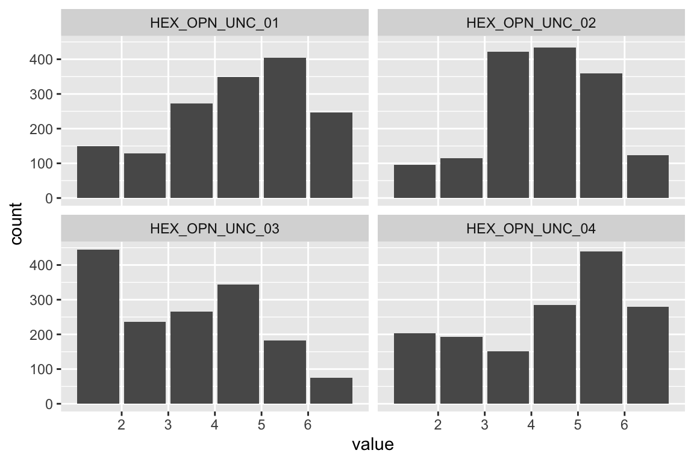
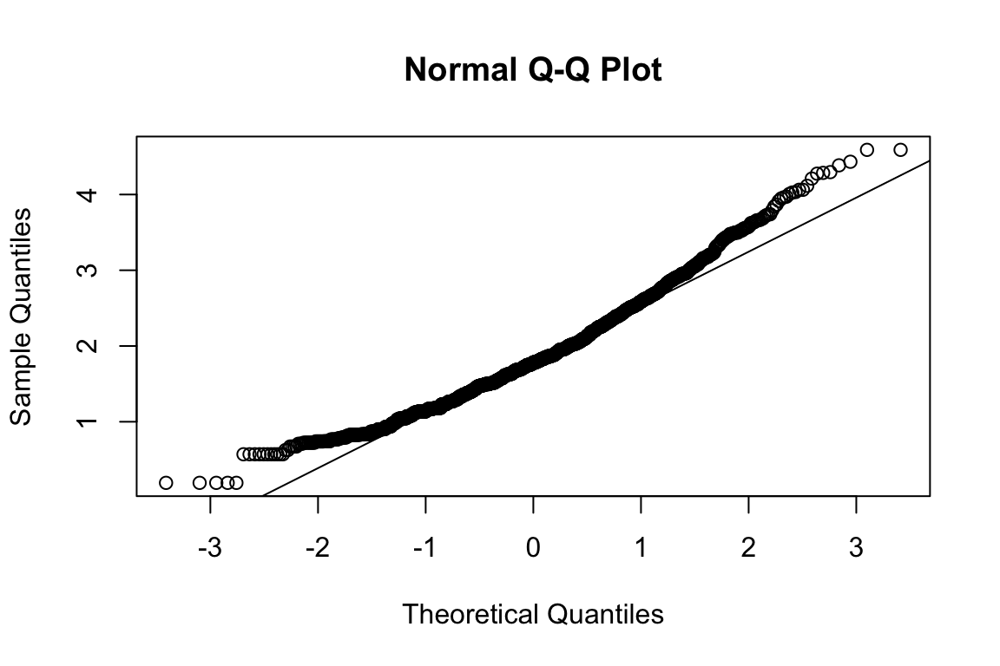
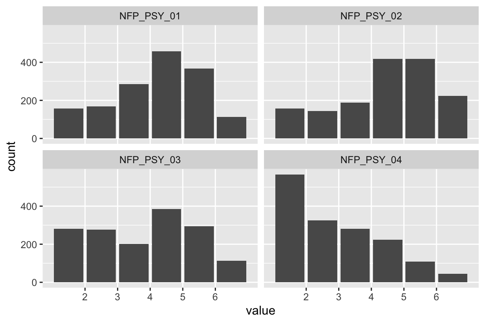
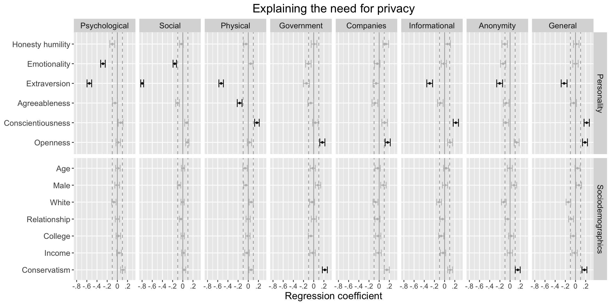

Results
Here you can find the results of our study.
Set-Up
We first load the required packages.
# install packages devtools::install_github('https://github.com/tdienlin/td')
library(confintr)
library(corrplot)
library(easystats)
library(ggplot2)
library(kableExtra)
library(knitr)
library(lavaan)
library(magrittr)
library(MVN)
library(naniar)
library(PerFit)
library(psych)
library(sjlabelled)
library(semTools)
library(tidyverse)
library(td)We then load the cleaned data.
load("data/workspace_2.RData")
source("custom_functions.R")Items Characteristics
In what follows, we report item characteristics.
Sociodemographics
To improve privacy, we didn’t collect exact but binned measures of sociodemographics.
Age
d$age %>%
sjlabelled::as_label() %>%
data_tabulate()No person indicated being younger than 18 years old. Hence, everybody could be included.
age_m <- mean(d$age)The mean age was 45 to 54 years of age.
Gender
d$GEN %>%
sjlabelled::as_label() %>%
data_tabulate()48 percent were male, 50 female, and 1 percent indicated third/other gender.
Education
d$COL %>%
sjlabelled::as_label() %>%
data_tabulate()69% reported having a college degree.
Ethnicity
d$ETH %>%
sjlabelled::as_label() %>%
data_tabulate()78 % percent were white, 22 % not white.
Political orientation
d$CON %>%
sjlabelled::as_label() %>%
data_tabulate()We see a certain bias toward participants being liberal as opposed to conservative.
Personality
All following items were answered on a 7-point scale with the following options:
“To what extent do you agree or disagree with the following statements?”
(-3) Strongly Disagree, (-2) Disagree, (-1) Slightly Disagree, (0) Neutral, (1) Slightly Agree (2) Agree, (3) Strongly Agree
Ceiling/Floor effects
Let’s first check for ceiling and floor effects.
d_extremes <- d %>%
select(paste0(rep(vars_pers_pri, each = 4), "_0", 1:4)) %>%
apply(2, mean, na.rm = T) %>%
as.data.frame() %>%
select(Mean = ".") %>%
arrange(Mean)Lowest values:
head(d_extremes)No item below floor (1.5) threshold.
Highest values:
tail(d_extremes)No item above ceiling (6.5) thresholds.
Honesty Humility
Sincerity
- If I want something from a person I dislike, I will act very nicely toward that person in order to get it.
- I wouldn’t use flattery to get a raise or promotion at work, even if I thought it would succeed.
- If I want something from someone, I will laugh at that person’s worst jokes.
- I wouldn’t pretend to like someone just to get that person to do favors for me.
name <- "HEX_HOH_SIN"
plot_hist(name)mardia(select(d, paste0(rep(paste0(name, "_0"), 4), 1:4)))## Call: mardia(x = select(d, paste0(rep(paste0(name, "_0"), 4), 1:4)))
##
## Mardia tests of multivariate skew and kurtosis
## Use describe(x) the to get univariate tests
## n.obs = 1550 num.vars = 4
## b1p = 2.1 skew = 544 with probability <= 2.2e-102
## small sample skew = 545 with probability <= 1.1e-102
## b2p = 30.4 kurtosis = 18.3 with probability <= 0Assumption of multivariate normality violated. Hence we’ll use the robust estimator.
model <- "HEX_HOH_SIN =~ HEX_HOH_SIN_01 + HEX_HOH_SIN_02 + HEX_HOH_SIN_03 + HEX_HOH_SIN_04"
assign(paste("fit", name, sep = "_"), cfa(model, d, estimator = "MLM"))
summary(get(paste0("fit_", name)), fit = TRUE, standardized = TRUE)## lavaan 0.6.17 ended normally after 24 iterations
##
## Estimator ML
## Optimization method NLMINB
## Number of model parameters 8
##
## Number of observations 1550
##
## Model Test User Model:
## Standard Scaled
## Test Statistic 62.319 36.781
## Degrees of freedom 2 2
## P-value (Chi-square) 0.000 0.000
## Scaling correction factor 1.694
## Satorra-Bentler correction
##
## Model Test Baseline Model:
##
## Test statistic 1970.756 1605.416
## Degrees of freedom 6 6
## P-value 0.000 0.000
## Scaling correction factor 1.228
##
## User Model versus Baseline Model:
##
## Comparative Fit Index (CFI) 0.969 0.978
## Tucker-Lewis Index (TLI) 0.908 0.935
##
## Robust Comparative Fit Index (CFI) 0.970
## Robust Tucker-Lewis Index (TLI) 0.910
##
## Loglikelihood and Information Criteria:
##
## Loglikelihood user model (H0) -11205.958 -11205.958
## Loglikelihood unrestricted model (H1) -11174.799 -11174.799
##
## Akaike (AIC) 22427.916 22427.916
## Bayesian (BIC) 22470.684 22470.684
## Sample-size adjusted Bayesian (SABIC) 22445.270 22445.270
##
## Root Mean Square Error of Approximation:
##
## RMSEA 0.139 0.106
## 90 Percent confidence interval - lower 0.111 0.084
## 90 Percent confidence interval - upper 0.170 0.130
## P-value H_0: RMSEA <= 0.050 0.000 0.000
## P-value H_0: RMSEA >= 0.080 1.000 0.973
##
## Robust RMSEA 0.138
## 90 Percent confidence interval - lower 0.101
## 90 Percent confidence interval - upper 0.179
## P-value H_0: Robust RMSEA <= 0.050 0.000
## P-value H_0: Robust RMSEA >= 0.080 0.994
##
## Standardized Root Mean Square Residual:
##
## SRMR 0.036 0.036
##
## Parameter Estimates:
##
## Standard errors Robust.sem
## Information Expected
## Information saturated (h1) model Structured
##
## Latent Variables:
## Estimate Std.Err z-value P(>|z|) Std.lv Std.all
## HEX_HOH_SIN =~
## HEX_HOH_SIN_01 1.000 1.329 0.785
## HEX_HOH_SIN_02 0.860 0.039 22.018 0.000 1.143 0.635
## HEX_HOH_SIN_03 0.984 0.035 27.934 0.000 1.308 0.814
## HEX_HOH_SIN_04 0.790 0.038 20.818 0.000 1.050 0.587
##
## Variances:
## Estimate Std.Err z-value P(>|z|) Std.lv Std.all
## .HEX_HOH_SIN_01 1.099 0.082 13.398 0.000 1.099 0.384
## .HEX_HOH_SIN_02 1.930 0.105 18.443 0.000 1.930 0.596
## .HEX_HOH_SIN_03 0.871 0.068 12.797 0.000 0.871 0.337
## .HEX_HOH_SIN_04 2.096 0.127 16.477 0.000 2.096 0.655
## HEX_HOH_SIN 1.766 0.099 17.845 0.000 1.000 1.000Fit is okay, but RMSEA is significantly above .10. Let’s hence inspect modification indices to see if there are potential fixes.
modindices(fit_HEX_HOH_SIN)Suggests that item 1 & 3, and item 2 & 4 build subdimensions. Let’s allow covariances.
model <- "HEX_HOH_SIN =~ HEX_HOH_SIN_01 + HEX_HOH_SIN_02 + HEX_HOH_SIN_03 + HEX_HOH_SIN_04
HEX_HOH_SIN_01 ~~ a*HEX_HOH_SIN_03
HEX_HOH_SIN_02 ~~ a*HEX_HOH_SIN_04
"
assign(paste("fit", name, sep = "_"), cfa(model, d, estimator = "MLM"))
summary(get(paste0("fit_", name)), fit = TRUE, standardized = TRUE)## lavaan 0.6.17 ended normally after 28 iterations
##
## Estimator ML
## Optimization method NLMINB
## Number of model parameters 10
## Number of equality constraints 1
##
## Number of observations 1550
##
## Model Test User Model:
## Standard Scaled
## Test Statistic 6.777 4.394
## Degrees of freedom 1 1
## P-value (Chi-square) 0.009 0.036
## Scaling correction factor 1.542
## Satorra-Bentler correction
##
## Model Test Baseline Model:
##
## Test statistic 1970.756 1605.416
## Degrees of freedom 6 6
## P-value 0.000 0.000
## Scaling correction factor 1.228
##
## User Model versus Baseline Model:
##
## Comparative Fit Index (CFI) 0.997 0.998
## Tucker-Lewis Index (TLI) 0.982 0.987
##
## Robust Comparative Fit Index (CFI) 0.997
## Robust Tucker-Lewis Index (TLI) 0.984
##
## Loglikelihood and Information Criteria:
##
## Loglikelihood user model (H0) -11178.187 -11178.187
## Loglikelihood unrestricted model (H1) -11174.799 -11174.799
##
## Akaike (AIC) 22374.374 22374.374
## Bayesian (BIC) 22422.489 22422.489
## Sample-size adjusted Bayesian (SABIC) 22393.898 22393.898
##
## Root Mean Square Error of Approximation:
##
## RMSEA 0.061 0.047
## 90 Percent confidence interval - lower 0.024 0.015
## 90 Percent confidence interval - upper 0.108 0.085
## P-value H_0: RMSEA <= 0.050 0.263 0.481
## P-value H_0: RMSEA >= 0.080 0.292 0.082
##
## Robust RMSEA 0.058
## 90 Percent confidence interval - lower 0.012
## 90 Percent confidence interval - upper 0.118
## P-value H_0: Robust RMSEA <= 0.050 0.305
## P-value H_0: Robust RMSEA >= 0.080 0.330
##
## Standardized Root Mean Square Residual:
##
## SRMR 0.009 0.009
##
## Parameter Estimates:
##
## Standard errors Robust.sem
## Information Expected
## Information saturated (h1) model Structured
##
## Latent Variables:
## Estimate Std.Err z-value P(>|z|) Std.lv Std.all
## HEX_HOH_SIN =~
## HEX_HOH_SIN_01 1.000 1.235 0.730
## HEX_HOH_SIN_02 0.951 0.046 20.608 0.000 1.174 0.653
## HEX_HOH_SIN_03 0.996 0.037 26.573 0.000 1.231 0.766
## HEX_HOH_SIN_04 0.862 0.043 20.047 0.000 1.064 0.595
##
## Covariances:
## Estimate Std.Err z-value P(>|z|) Std.lv Std.all
## .HEX_HOH_SIN_01 ~~
## .HEX_HOH_SI (a) 0.271 0.053 5.164 0.000 0.271 0.227
## .HEX_HOH_SIN_02 ~~
## .HEX_HOH_SI (a) 0.271 0.053 5.164 0.000 0.271 0.138
##
## Variances:
## Estimate Std.Err z-value P(>|z|) Std.lv Std.all
## .HEX_HOH_SIN_01 1.340 0.090 14.840 0.000 1.340 0.468
## .HEX_HOH_SIN_02 1.857 0.108 17.196 0.000 1.857 0.574
## .HEX_HOH_SIN_03 1.068 0.074 14.394 0.000 1.068 0.414
## .HEX_HOH_SIN_04 2.066 0.130 15.894 0.000 2.066 0.646
## HEX_HOH_SIN 1.526 0.104 14.624 0.000 1.000 1.000Fit is now great.
Fairness
- If I knew that I could never get caught, I would be willing to steal a million dollars.
- I would be tempted to buy stolen property if I were financially tight.
- I would never accept a bribe, even if it were very large.
- I’d be tempted to use counterfeit money, if I were sure I could get away with it.
name <- "HEX_HOH_FAI"
plot_hist(name)mardia(select(d, paste0(rep(paste0(name, "_0"), 4), 1:4)))## Call: mardia(x = select(d, paste0(rep(paste0(name, "_0"), 4), 1:4)))
##
## Mardia tests of multivariate skew and kurtosis
## Use describe(x) the to get univariate tests
## n.obs = 1550 num.vars = 4
## b1p = 4.08 skew = 1053 with probability <= 1.7e-210
## small sample skew = 1056 with probability <= 4.2e-211
## b2p = 34 kurtosis = 28.5 with probability <= 0Assumption of multivariate normality violated. Hence we’ll use the robust estimator.
model <- "HEX_HOH_FAI =~ HEX_HOH_FAI_01 + HEX_HOH_FAI_02 + HEX_HOH_FAI_03 + HEX_HOH_FAI_04"
assign(paste("fit", name, sep = "_"), cfa(model, d, estimator = "MLM"))
summary(get(paste0("fit_", name)), fit = TRUE, standardized = TRUE)## lavaan 0.6.17 ended normally after 24 iterations
##
## Estimator ML
## Optimization method NLMINB
## Number of model parameters 8
##
## Number of observations 1550
##
## Model Test User Model:
## Standard Scaled
## Test Statistic 26.635 16.846
## Degrees of freedom 2 2
## P-value (Chi-square) 0.000 0.000
## Scaling correction factor 1.581
## Satorra-Bentler correction
##
## Model Test Baseline Model:
##
## Test statistic 3014.655 2267.754
## Degrees of freedom 6 6
## P-value 0.000 0.000
## Scaling correction factor 1.329
##
## User Model versus Baseline Model:
##
## Comparative Fit Index (CFI) 0.992 0.993
## Tucker-Lewis Index (TLI) 0.975 0.980
##
## Robust Comparative Fit Index (CFI) 0.992
## Robust Tucker-Lewis Index (TLI) 0.977
##
## Loglikelihood and Information Criteria:
##
## Loglikelihood user model (H0) -11113.823 -11113.823
## Loglikelihood unrestricted model (H1) -11100.505 -11100.505
##
## Akaike (AIC) 22243.645 22243.645
## Bayesian (BIC) 22286.413 22286.413
## Sample-size adjusted Bayesian (SABIC) 22260.999 22260.999
##
## Root Mean Square Error of Approximation:
##
## RMSEA 0.089 0.069
## 90 Percent confidence interval - lower 0.061 0.046
## 90 Percent confidence interval - upper 0.121 0.095
## P-value H_0: RMSEA <= 0.050 0.012 0.080
## P-value H_0: RMSEA >= 0.080 0.726 0.260
##
## Robust RMSEA 0.087
## 90 Percent confidence interval - lower 0.052
## 90 Percent confidence interval - upper 0.127
## P-value H_0: Robust RMSEA <= 0.050 0.042
## P-value H_0: Robust RMSEA >= 0.080 0.666
##
## Standardized Root Mean Square Residual:
##
## SRMR 0.016 0.016
##
## Parameter Estimates:
##
## Standard errors Robust.sem
## Information Expected
## Information saturated (h1) model Structured
##
## Latent Variables:
## Estimate Std.Err z-value P(>|z|) Std.lv Std.all
## HEX_HOH_FAI =~
## HEX_HOH_FAI_01 1.000 1.792 0.854
## HEX_HOH_FAI_02 0.692 0.025 27.711 0.000 1.239 0.735
## HEX_HOH_FAI_03 0.678 0.024 28.367 0.000 1.216 0.698
## HEX_HOH_FAI_04 0.907 0.025 35.949 0.000 1.626 0.857
##
## Variances:
## Estimate Std.Err z-value P(>|z|) Std.lv Std.all
## .HEX_HOH_FAI_01 1.186 0.104 11.448 0.000 1.186 0.270
## .HEX_HOH_FAI_02 1.310 0.076 17.326 0.000 1.310 0.460
## .HEX_HOH_FAI_03 1.553 0.094 16.515 0.000 1.553 0.512
## .HEX_HOH_FAI_04 0.958 0.081 11.775 0.000 0.958 0.266
## HEX_HOH_FAI 3.210 0.137 23.454 0.000 1.000 1.000Fit is good.
Greed Avoidance
- Having a lot of money is not especially important to me.
- I would like to live in a very expensive, high-class neighborhood.
- I would like to be seen driving around in a very expensive car.
- I would get a lot of pleasure from owning expensive luxury goods.
name <- "HEX_HOH_GRE"
plot_hist(name)mardia(select(d, paste0(rep(paste0(name, "_0"), 4), 1:4)))## Call: mardia(x = select(d, paste0(rep(paste0(name, "_0"), 4), 1:4)))
##
## Mardia tests of multivariate skew and kurtosis
## Use describe(x) the to get univariate tests
## n.obs = 1550 num.vars = 4
## b1p = 0.54 skew = 139 with probability <= 7.9e-20
## small sample skew = 139 with probability <= 6.7e-20
## b2p = 25.2 kurtosis = 3.51 with probability <= 0.00045Assumption of multivariate normality violated. Hence we’ll use the robust estimator.
model <- "HEX_HOH_GRE =~ HEX_HOH_GRE_01 + HEX_HOH_GRE_02 + HEX_HOH_GRE_03 + HEX_HOH_GRE_04"
assign(paste("fit", name, sep = "_"), cfa(model, d, estimator = "MLM"))
summary(get(paste0("fit_", name)), fit = TRUE, standardized = TRUE)## lavaan 0.6.17 ended normally after 26 iterations
##
## Estimator ML
## Optimization method NLMINB
## Number of model parameters 8
##
## Number of observations 1550
##
## Model Test User Model:
## Standard Scaled
## Test Statistic 71.894 56.183
## Degrees of freedom 2 2
## P-value (Chi-square) 0.000 0.000
## Scaling correction factor 1.280
## Satorra-Bentler correction
##
## Model Test Baseline Model:
##
## Test statistic 2039.091 1847.669
## Degrees of freedom 6 6
## P-value 0.000 0.000
## Scaling correction factor 1.104
##
## User Model versus Baseline Model:
##
## Comparative Fit Index (CFI) 0.966 0.971
## Tucker-Lewis Index (TLI) 0.897 0.912
##
## Robust Comparative Fit Index (CFI) 0.966
## Robust Tucker-Lewis Index (TLI) 0.898
##
## Loglikelihood and Information Criteria:
##
## Loglikelihood user model (H0) -11485.841 -11485.841
## Loglikelihood unrestricted model (H1) -11449.895 -11449.895
##
## Akaike (AIC) 22987.683 22987.683
## Bayesian (BIC) 23030.451 23030.451
## Sample-size adjusted Bayesian (SABIC) 23005.037 23005.037
##
## Root Mean Square Error of Approximation:
##
## RMSEA 0.150 0.132
## 90 Percent confidence interval - lower 0.122 0.107
## 90 Percent confidence interval - upper 0.181 0.159
## P-value H_0: RMSEA <= 0.050 0.000 0.000
## P-value H_0: RMSEA >= 0.080 1.000 1.000
##
## Robust RMSEA 0.150
## 90 Percent confidence interval - lower 0.117
## 90 Percent confidence interval - upper 0.184
## P-value H_0: Robust RMSEA <= 0.050 0.000
## P-value H_0: Robust RMSEA >= 0.080 1.000
##
## Standardized Root Mean Square Residual:
##
## SRMR 0.040 0.040
##
## Parameter Estimates:
##
## Standard errors Robust.sem
## Information Expected
## Information saturated (h1) model Structured
##
## Latent Variables:
## Estimate Std.Err z-value P(>|z|) Std.lv Std.all
## HEX_HOH_GRE =~
## HEX_HOH_GRE_01 1.000 0.798 0.451
## HEX_HOH_GRE_02 1.681 0.103 16.255 0.000 1.342 0.724
## HEX_HOH_GRE_03 1.773 0.114 15.548 0.000 1.415 0.791
## HEX_HOH_GRE_04 1.875 0.120 15.648 0.000 1.497 0.822
##
## Variances:
## Estimate Std.Err z-value P(>|z|) Std.lv Std.all
## .HEX_HOH_GRE_01 2.500 0.087 28.774 0.000 2.500 0.797
## .HEX_HOH_GRE_02 1.632 0.091 17.993 0.000 1.632 0.475
## .HEX_HOH_GRE_03 1.197 0.081 14.807 0.000 1.197 0.374
## .HEX_HOH_GRE_04 1.075 0.089 12.126 0.000 1.075 0.324
## HEX_HOH_GRE 0.637 0.078 8.214 0.000 1.000 1.000Fit is okaish, but RMSEA above .10. Let’s inspect modification indices.
modindices(fit_HEX_HOH_GRE)Item 1 & 2, and item 3 & 4 form subdimensions.
model <- "
HEX_HOH_GRE =~ HEX_HOH_GRE_01 + HEX_HOH_GRE_02 + HEX_HOH_GRE_03 + HEX_HOH_GRE_04
HEX_HOH_GRE_01 ~~ a*HEX_HOH_GRE_02
HEX_HOH_GRE_03 ~~ a*HEX_HOH_GRE_04
"
assign(paste("fit", name, sep = "_"), cfa(model, d, estimator = "MLM"))
summary(get(paste0("fit_", name)), fit = TRUE, standardized = TRUE)## lavaan 0.6.17 ended normally after 31 iterations
##
## Estimator ML
## Optimization method NLMINB
## Number of model parameters 10
## Number of equality constraints 1
##
## Number of observations 1550
##
## Model Test User Model:
## Standard Scaled
## Test Statistic 0.707 0.589
## Degrees of freedom 1 1
## P-value (Chi-square) 0.400 0.443
## Scaling correction factor 1.200
## Satorra-Bentler correction
##
## Model Test Baseline Model:
##
## Test statistic 2039.091 1847.669
## Degrees of freedom 6 6
## P-value 0.000 0.000
## Scaling correction factor 1.104
##
## User Model versus Baseline Model:
##
## Comparative Fit Index (CFI) 1.000 1.000
## Tucker-Lewis Index (TLI) 1.001 1.001
##
## Robust Comparative Fit Index (CFI) 1.000
## Robust Tucker-Lewis Index (TLI) 1.001
##
## Loglikelihood and Information Criteria:
##
## Loglikelihood user model (H0) -11450.248 -11450.248
## Loglikelihood unrestricted model (H1) -11449.895 -11449.895
##
## Akaike (AIC) 22918.496 22918.496
## Bayesian (BIC) 22966.611 22966.611
## Sample-size adjusted Bayesian (SABIC) 22938.020 22938.020
##
## Root Mean Square Error of Approximation:
##
## RMSEA 0.000 0.000
## 90 Percent confidence interval - lower 0.000 0.000
## 90 Percent confidence interval - upper 0.063 0.056
## P-value H_0: RMSEA <= 0.050 0.873 0.920
## P-value H_0: RMSEA >= 0.080 0.010 0.004
##
## Robust RMSEA 0.000
## 90 Percent confidence interval - lower 0.000
## 90 Percent confidence interval - upper 0.067
## P-value H_0: Robust RMSEA <= 0.050 0.853
## P-value H_0: Robust RMSEA >= 0.080 0.017
##
## Standardized Root Mean Square Residual:
##
## SRMR 0.003 0.003
##
## Parameter Estimates:
##
## Standard errors Robust.sem
## Information Expected
## Information saturated (h1) model Structured
##
## Latent Variables:
## Estimate Std.Err z-value P(>|z|) Std.lv Std.all
## HEX_HOH_GRE =~
## HEX_HOH_GRE_01 1.000 0.773 0.436
## HEX_HOH_GRE_02 1.824 0.126 14.474 0.000 1.410 0.761
## HEX_HOH_GRE_03 1.698 0.115 14.701 0.000 1.312 0.734
## HEX_HOH_GRE_04 1.804 0.122 14.775 0.000 1.394 0.766
##
## Covariances:
## Estimate Std.Err z-value P(>|z|) Std.lv Std.all
## .HEX_HOH_GRE_01 ~~
## .HEX_HOH_GR (a) 0.347 0.052 6.728 0.000 0.347 0.181
## .HEX_HOH_GRE_03 ~~
## .HEX_HOH_GR (a) 0.347 0.052 6.728 0.000 0.347 0.243
##
## Variances:
## Estimate Std.Err z-value P(>|z|) Std.lv Std.all
## .HEX_HOH_GRE_01 2.540 0.089 28.527 0.000 2.540 0.810
## .HEX_HOH_GRE_02 1.445 0.094 15.365 0.000 1.445 0.421
## .HEX_HOH_GRE_03 1.478 0.086 17.268 0.000 1.478 0.462
## .HEX_HOH_GRE_04 1.371 0.096 14.263 0.000 1.371 0.414
## HEX_HOH_GRE 0.597 0.080 7.481 0.000 1.000 1.000Fit is now great.
Modesty
- I am an ordinary person who is no better than others.
- I wouldn’t want people to treat me as though I were superior to them.
- I think that I am entitled to more respect than the average person is.
- I want people to know that I am an important person of high status.
name <- "HEX_HOH_MOD"
plot_hist(name)
mardia(select(d, paste0(rep(paste0(name, "_0"), 4), 1:4)))## Call: mardia(x = select(d, paste0(rep(paste0(name, "_0"), 4), 1:4)))
##
## Mardia tests of multivariate skew and kurtosis
## Use describe(x) the to get univariate tests
## n.obs = 1550 num.vars = 4
## b1p = 5.38 skew = 1390 with probability <= 1.6e-282
## small sample skew = 1394 with probability <= 2.5e-283
## b2p = 35.9 kurtosis = 33.8 with probability <= 0Assumption of multivariate normality violated. Hence we’ll use the robust estimator.
model <- "HEX_HOH_MOD =~ HEX_HOH_MOD_01 + HEX_HOH_MOD_02 + HEX_HOH_MOD_03 + HEX_HOH_MOD_04"
assign(paste("fit", name, sep = "_"), cfa(model, d, estimator = "MLM"))
summary(get(paste0("fit_", name)), fit = TRUE, standardized = TRUE)## lavaan 0.6.17 ended normally after 27 iterations
##
## Estimator ML
## Optimization method NLMINB
## Number of model parameters 8
##
## Number of observations 1550
##
## Model Test User Model:
## Standard Scaled
## Test Statistic 23.418 15.131
## Degrees of freedom 2 2
## P-value (Chi-square) 0.000 0.001
## Scaling correction factor 1.548
## Satorra-Bentler correction
##
## Model Test Baseline Model:
##
## Test statistic 1437.605 970.785
## Degrees of freedom 6 6
## P-value 0.000 0.000
## Scaling correction factor 1.481
##
## User Model versus Baseline Model:
##
## Comparative Fit Index (CFI) 0.985 0.986
## Tucker-Lewis Index (TLI) 0.955 0.959
##
## Robust Comparative Fit Index (CFI) 0.986
## Robust Tucker-Lewis Index (TLI) 0.957
##
## Loglikelihood and Information Criteria:
##
## Loglikelihood user model (H0) -10604.757 -10604.757
## Loglikelihood unrestricted model (H1) -10593.048 -10593.048
##
## Akaike (AIC) 21225.515 21225.515
## Bayesian (BIC) 21268.283 21268.283
## Sample-size adjusted Bayesian (SABIC) 21242.869 21242.869
##
## Root Mean Square Error of Approximation:
##
## RMSEA 0.083 0.065
## 90 Percent confidence interval - lower 0.055 0.042
## 90 Percent confidence interval - upper 0.115 0.091
## P-value H_0: RMSEA <= 0.050 0.027 0.132
## P-value H_0: RMSEA >= 0.080 0.609 0.183
##
## Robust RMSEA 0.081
## 90 Percent confidence interval - lower 0.046
## 90 Percent confidence interval - upper 0.121
## P-value H_0: Robust RMSEA <= 0.050 0.069
## P-value H_0: Robust RMSEA >= 0.080 0.569
##
## Standardized Root Mean Square Residual:
##
## SRMR 0.022 0.022
##
## Parameter Estimates:
##
## Standard errors Robust.sem
## Information Expected
## Information saturated (h1) model Structured
##
## Latent Variables:
## Estimate Std.Err z-value P(>|z|) Std.lv Std.all
## HEX_HOH_MOD =~
## HEX_HOH_MOD_01 1.000 0.947 0.674
## HEX_HOH_MOD_02 0.818 0.056 14.638 0.000 0.775 0.505
## HEX_HOH_MOD_03 1.190 0.066 17.943 0.000 1.128 0.764
## HEX_HOH_MOD_04 1.147 0.069 16.675 0.000 1.087 0.684
##
## Variances:
## Estimate Std.Err z-value P(>|z|) Std.lv Std.all
## .HEX_HOH_MOD_01 1.080 0.073 14.860 0.000 1.080 0.546
## .HEX_HOH_MOD_02 1.759 0.113 15.591 0.000 1.759 0.745
## .HEX_HOH_MOD_03 0.909 0.081 11.255 0.000 0.909 0.417
## .HEX_HOH_MOD_04 1.340 0.089 15.047 0.000 1.340 0.532
## HEX_HOH_MOD 0.897 0.082 10.947 0.000 1.000 1.000Fit is good.
Honesty Humility
Let’s also look at the dimension itself.
model_hex_hoh <- "
# Personality Factors
HEX_HOH =~ HEX_HOH_SIN + HEX_HOH_FAI + HEX_HOH_GRE + HEX_HOH_MOD
HEX_HOH_SIN =~ HEX_HOH_SIN_01 + HEX_HOH_SIN_02 + HEX_HOH_SIN_03 + HEX_HOH_SIN_04
HEX_HOH_FAI =~ HEX_HOH_FAI_01 + HEX_HOH_FAI_02 + HEX_HOH_FAI_03 + HEX_HOH_FAI_04
HEX_HOH_GRE =~ HEX_HOH_GRE_01 + HEX_HOH_GRE_02 + HEX_HOH_GRE_03 + HEX_HOH_GRE_04
HEX_HOH_MOD =~ HEX_HOH_MOD_01 + HEX_HOH_MOD_02 + HEX_HOH_MOD_03 + HEX_HOH_MOD_04
# Covariances
HEX_HOH_SIN_01 ~~ HEX_HOH_SIN_03
HEX_HOH_SIN_02 ~~ HEX_HOH_SIN_04
HEX_HOH_GRE_01 ~~ HEX_HOH_GRE_02
HEX_HOH_GRE_03 ~~ HEX_HOH_GRE_04
"
fit_hex_hoh <- sem(model_hex_hoh, d, estimator = "MLM", fixed.x = TRUE)
summary(fit_hex_hoh, standardized = TRUE, fit = TRUE)## lavaan 0.6.17 ended normally after 64 iterations
##
## Estimator ML
## Optimization method NLMINB
## Number of model parameters 40
##
## Number of observations 1550
##
## Model Test User Model:
## Standard Scaled
## Test Statistic 711.127 570.161
## Degrees of freedom 96 96
## P-value (Chi-square) 0.000 0.000
## Scaling correction factor 1.247
## Satorra-Bentler correction
##
## Model Test Baseline Model:
##
## Test statistic 9874.849 8294.321
## Degrees of freedom 120 120
## P-value 0.000 0.000
## Scaling correction factor 1.191
##
## User Model versus Baseline Model:
##
## Comparative Fit Index (CFI) 0.937 0.942
## Tucker-Lewis Index (TLI) 0.921 0.927
##
## Robust Comparative Fit Index (CFI) 0.939
## Robust Tucker-Lewis Index (TLI) 0.924
##
## Loglikelihood and Information Criteria:
##
## Loglikelihood user model (H0) -43967.439 -43967.439
## Loglikelihood unrestricted model (H1) -43611.875 -43611.875
##
## Akaike (AIC) 88014.878 88014.878
## Bayesian (BIC) 88228.718 88228.718
## Sample-size adjusted Bayesian (SABIC) 88101.647 88101.647
##
## Root Mean Square Error of Approximation:
##
## RMSEA 0.064 0.056
## 90 Percent confidence interval - lower 0.060 0.052
## 90 Percent confidence interval - upper 0.069 0.060
## P-value H_0: RMSEA <= 0.050 0.000 0.004
## P-value H_0: RMSEA >= 0.080 0.000 0.000
##
## Robust RMSEA 0.063
## 90 Percent confidence interval - lower 0.058
## 90 Percent confidence interval - upper 0.068
## P-value H_0: Robust RMSEA <= 0.050 0.000
## P-value H_0: Robust RMSEA >= 0.080 0.000
##
## Standardized Root Mean Square Residual:
##
## SRMR 0.065 0.065
##
## Parameter Estimates:
##
## Standard errors Robust.sem
## Information Expected
## Information saturated (h1) model Structured
##
## Latent Variables:
## Estimate Std.Err z-value P(>|z|) Std.lv Std.all
## HEX_HOH =~
## HEX_HOH_SIN 1.000 0.596 0.596
## HEX_HOH_FAI 1.008 0.091 11.052 0.000 0.422 0.422
## HEX_HOH_GRE 0.792 0.080 9.907 0.000 0.769 0.769
## HEX_HOH_MOD 0.863 0.081 10.667 0.000 0.736 0.736
## HEX_HOH_SIN =~
## HEX_HOH_SIN_01 1.000 1.257 0.742
## HEX_HOH_SIN_02 0.926 0.069 13.382 0.000 1.164 0.647
## HEX_HOH_SIN_03 0.983 0.035 28.175 0.000 1.236 0.769
## HEX_HOH_SIN_04 0.837 0.067 12.541 0.000 1.052 0.588
## HEX_HOH_FAI =~
## HEX_HOH_FAI_01 1.000 1.791 0.854
## HEX_HOH_FAI_02 0.693 0.025 27.917 0.000 1.241 0.736
## HEX_HOH_FAI_03 0.682 0.024 28.801 0.000 1.221 0.702
## HEX_HOH_FAI_04 0.906 0.024 36.992 0.000 1.622 0.854
## HEX_HOH_GRE =~
## HEX_HOH_GRE_01 1.000 0.772 0.436
## HEX_HOH_GRE_02 1.747 0.113 15.401 0.000 1.349 0.728
## HEX_HOH_GRE_03 1.802 0.144 12.483 0.000 1.392 0.778
## HEX_HOH_GRE_04 1.843 0.147 12.533 0.000 1.423 0.782
## HEX_HOH_MOD =~
## HEX_HOH_MOD_01 1.000 0.879 0.625
## HEX_HOH_MOD_02 0.890 0.059 15.019 0.000 0.782 0.509
## HEX_HOH_MOD_03 1.188 0.063 18.762 0.000 1.044 0.707
## HEX_HOH_MOD_04 1.386 0.076 18.278 0.000 1.218 0.767
##
## Covariances:
## Estimate Std.Err z-value P(>|z|) Std.lv Std.all
## .HEX_HOH_SIN_01 ~~
## .HEX_HOH_SIN_03 0.238 0.104 2.285 0.022 0.238 0.205
## .HEX_HOH_SIN_02 ~~
## .HEX_HOH_SIN_04 0.296 0.109 2.725 0.006 0.296 0.149
## .HEX_HOH_GRE_01 ~~
## .HEX_HOH_GRE_02 0.394 0.079 5.021 0.000 0.394 0.195
## .HEX_HOH_GRE_03 ~~
## .HEX_HOH_GRE_04 0.196 0.098 1.988 0.047 0.196 0.153
##
## Variances:
## Estimate Std.Err z-value P(>|z|) Std.lv Std.all
## .HEX_HOH_SIN_01 1.286 0.123 10.458 0.000 1.286 0.449
## .HEX_HOH_SIN_02 1.882 0.132 14.204 0.000 1.882 0.581
## .HEX_HOH_SIN_03 1.056 0.110 9.603 0.000 1.056 0.409
## .HEX_HOH_SIN_04 2.092 0.147 14.220 0.000 2.092 0.654
## .HEX_HOH_FAI_01 1.190 0.101 11.746 0.000 1.190 0.271
## .HEX_HOH_FAI_02 1.305 0.075 17.362 0.000 1.305 0.459
## .HEX_HOH_FAI_03 1.539 0.094 16.451 0.000 1.539 0.508
## .HEX_HOH_FAI_04 0.973 0.079 12.379 0.000 0.973 0.270
## .HEX_HOH_GRE_01 2.541 0.091 27.817 0.000 2.541 0.810
## .HEX_HOH_GRE_02 1.613 0.111 14.510 0.000 1.613 0.470
## .HEX_HOH_GRE_03 1.263 0.108 11.646 0.000 1.263 0.395
## .HEX_HOH_GRE_04 1.289 0.121 10.618 0.000 1.289 0.389
## .HEX_HOH_MOD_01 1.205 0.071 17.014 0.000 1.205 0.609
## .HEX_HOH_MOD_02 1.748 0.112 15.625 0.000 1.748 0.741
## .HEX_HOH_MOD_03 1.090 0.072 15.108 0.000 1.090 0.500
## .HEX_HOH_MOD_04 1.037 0.079 13.202 0.000 1.037 0.411
## HEX_HOH 0.561 0.072 7.796 0.000 1.000 1.000
## .HEX_HOH_SIN 1.018 0.113 9.025 0.000 0.644 0.644
## .HEX_HOH_FAI 2.637 0.139 19.025 0.000 0.822 0.822
## .HEX_HOH_GRE 0.244 0.042 5.762 0.000 0.409 0.409
## .HEX_HOH_MOD 0.354 0.054 6.526 0.000 0.459 0.459Emotionality
Fearfulness
- I would feel afraid if I had to travel in bad weather conditions.
- I don’t mind doing jobs that involve dangerous work.
- When it comes to physical danger, I am very fearful.
- Even in an emergency I wouldn’t feel like panicking.
name <- "HEX_EMO_FEA"
plot_hist(name)mardia(select(d, paste0(rep(paste0(name, "_0"), 4), 1:4)))## Call: mardia(x = select(d, paste0(rep(paste0(name, "_0"), 4), 1:4)))
##
## Mardia tests of multivariate skew and kurtosis
## Use describe(x) the to get univariate tests
## n.obs = 1549 num.vars = 4
## b1p = 1.02 skew = 262 with probability <= 3.7e-44
## small sample skew = 263 with probability <= 2.6e-44
## b2p = 24.1 kurtosis = 0.42 with probability <= 0.67Assumption of multivariate normality violated. Hence we’ll use the robust estimator.
model <- "HEX_EMO_FEA =~ HEX_EMO_FEA_01 + HEX_EMO_FEA_02 + HEX_EMO_FEA_03 + HEX_EMO_FEA_04"
assign(paste("fit", name, sep = "_"), cfa(model, d, estimator = "MLR", missing = "FIML"))
summary(get(paste0("fit_", name)), fit = TRUE, standardized = TRUE)## lavaan 0.6.17 ended normally after 35 iterations
##
## Estimator ML
## Optimization method NLMINB
## Number of model parameters 12
##
## Number of observations 1550
## Number of missing patterns 2
##
## Model Test User Model:
## Standard Scaled
## Test Statistic 0.752 0.573
## Degrees of freedom 2 2
## P-value (Chi-square) 0.687 0.751
## Scaling correction factor 1.312
## Yuan-Bentler correction (Mplus variant)
##
## Model Test Baseline Model:
##
## Test statistic 982.924 757.476
## Degrees of freedom 6 6
## P-value 0.000 0.000
## Scaling correction factor 1.298
##
## User Model versus Baseline Model:
##
## Comparative Fit Index (CFI) 1.000 1.000
## Tucker-Lewis Index (TLI) 1.004 1.006
##
## Robust Comparative Fit Index (CFI) 1.000
## Robust Tucker-Lewis Index (TLI) 1.006
##
## Loglikelihood and Information Criteria:
##
## Loglikelihood user model (H0) -11626.793 -11626.793
## Scaling correction factor 0.956
## for the MLR correction
## Loglikelihood unrestricted model (H1) -11626.417 -11626.417
## Scaling correction factor 1.006
## for the MLR correction
##
## Akaike (AIC) 23277.586 23277.586
## Bayesian (BIC) 23341.738 23341.738
## Sample-size adjusted Bayesian (SABIC) 23303.617 23303.617
##
## Root Mean Square Error of Approximation:
##
## RMSEA 0.000 0.000
## 90 Percent confidence interval - lower 0.000 0.000
## 90 Percent confidence interval - upper 0.038 0.028
## P-value H_0: RMSEA <= 0.050 0.988 0.998
## P-value H_0: RMSEA >= 0.080 0.000 0.000
##
## Robust RMSEA 0.000
## 90 Percent confidence interval - lower 0.000
## 90 Percent confidence interval - upper 0.040
## P-value H_0: Robust RMSEA <= 0.050 0.981
## P-value H_0: Robust RMSEA >= 0.080 0.000
##
## Standardized Root Mean Square Residual:
##
## SRMR 0.004 0.004
##
## Parameter Estimates:
##
## Standard errors Sandwich
## Information bread Observed
## Observed information based on Hessian
##
## Latent Variables:
## Estimate Std.Err z-value P(>|z|) Std.lv Std.all
## HEX_EMO_FEA =~
## HEX_EMO_FEA_01 1.000 1.126 0.662
## HEX_EMO_FEA_02 0.842 0.052 16.269 0.000 0.948 0.564
## HEX_EMO_FEA_03 1.046 0.059 17.723 0.000 1.178 0.680
## HEX_EMO_FEA_04 0.768 0.053 14.447 0.000 0.864 0.502
##
## Intercepts:
## Estimate Std.Err z-value P(>|z|) Std.lv Std.all
## .HEX_EMO_FEA_01 4.799 0.043 111.008 0.000 4.799 2.820
## .HEX_EMO_FEA_02 5.068 0.043 118.694 0.000 5.068 3.015
## .HEX_EMO_FEA_03 4.504 0.044 102.424 0.000 4.504 2.602
## .HEX_EMO_FEA_04 4.072 0.044 93.087 0.000 4.072 2.364
##
## Variances:
## Estimate Std.Err z-value P(>|z|) Std.lv Std.all
## .HEX_EMO_FEA_01 1.627 0.095 17.198 0.000 1.627 0.562
## .HEX_EMO_FEA_02 1.928 0.094 20.587 0.000 1.928 0.682
## .HEX_EMO_FEA_03 1.610 0.108 14.958 0.000 1.610 0.537
## .HEX_EMO_FEA_04 2.219 0.089 24.978 0.000 2.219 0.748
## HEX_EMO_FEA 1.268 0.105 12.049 0.000 1.000 1.000Fit is great.
Anxiety
- I sometimes can’t help worrying about little things.
- I worry a lot less than most people do.
- I rarely, if ever, have trouble sleeping due to stress or anxiety.
- I get very anxious when waiting to hear about an important decision.
name <- "HEX_EMO_ANX"
plot_hist(name)mardia(select(d, paste0(rep(paste0(name, "_0"), 4), 1:4)))## Call: mardia(x = select(d, paste0(rep(paste0(name, "_0"), 4), 1:4)))
##
## Mardia tests of multivariate skew and kurtosis
## Use describe(x) the to get univariate tests
## n.obs = 1550 num.vars = 4
## b1p = 1.98 skew = 512 with probability <= 7.9e-96
## small sample skew = 514 with probability <= 4e-96
## b2p = 29.2 kurtosis = 14.8 with probability <= 0Assumption of multivariate normality violated. Hence we’ll use the robust estimator.
model <- "HEX_EMO_ANX =~ HEX_EMO_ANX_01 + HEX_EMO_ANX_02 + HEX_EMO_ANX_03 + HEX_EMO_ANX_04"
assign(paste("fit", name, sep = "_"), cfa(model, d, estimator = "MLM"))
summary(get(paste0("fit_", name)), fit = TRUE, standardized = TRUE)## lavaan 0.6.17 ended normally after 26 iterations
##
## Estimator ML
## Optimization method NLMINB
## Number of model parameters 8
##
## Number of observations 1550
##
## Model Test User Model:
## Standard Scaled
## Test Statistic 16.547 12.915
## Degrees of freedom 2 2
## P-value (Chi-square) 0.000 0.002
## Scaling correction factor 1.281
## Satorra-Bentler correction
##
## Model Test Baseline Model:
##
## Test statistic 1894.628 1635.691
## Degrees of freedom 6 6
## P-value 0.000 0.000
## Scaling correction factor 1.158
##
## User Model versus Baseline Model:
##
## Comparative Fit Index (CFI) 0.992 0.993
## Tucker-Lewis Index (TLI) 0.977 0.980
##
## Robust Comparative Fit Index (CFI) 0.993
## Robust Tucker-Lewis Index (TLI) 0.978
##
## Loglikelihood and Information Criteria:
##
## Loglikelihood user model (H0) -11228.767 -11228.767
## Loglikelihood unrestricted model (H1) -11220.494 -11220.494
##
## Akaike (AIC) 22473.534 22473.534
## Bayesian (BIC) 22516.302 22516.302
## Sample-size adjusted Bayesian (SABIC) 22490.888 22490.888
##
## Root Mean Square Error of Approximation:
##
## RMSEA 0.069 0.059
## 90 Percent confidence interval - lower 0.041 0.034
## 90 Percent confidence interval - upper 0.101 0.088
## P-value H_0: RMSEA <= 0.050 0.128 0.243
## P-value H_0: RMSEA >= 0.080 0.307 0.126
##
## Robust RMSEA 0.067
## 90 Percent confidence interval - lower 0.036
## 90 Percent confidence interval - upper 0.104
## P-value H_0: Robust RMSEA <= 0.050 0.168
## P-value H_0: Robust RMSEA >= 0.080 0.317
##
## Standardized Root Mean Square Residual:
##
## SRMR 0.016 0.016
##
## Parameter Estimates:
##
## Standard errors Robust.sem
## Information Expected
## Information saturated (h1) model Structured
##
## Latent Variables:
## Estimate Std.Err z-value P(>|z|) Std.lv Std.all
## HEX_EMO_ANX =~
## HEX_EMO_ANX_01 1.000 1.405 0.818
## HEX_EMO_ANX_02 0.984 0.039 25.074 0.000 1.382 0.776
## HEX_EMO_ANX_03 0.800 0.038 20.864 0.000 1.124 0.593
## HEX_EMO_ANX_04 0.675 0.034 19.968 0.000 0.948 0.624
##
## Variances:
## Estimate Std.Err z-value P(>|z|) Std.lv Std.all
## .HEX_EMO_ANX_01 0.975 0.091 10.772 0.000 0.975 0.331
## .HEX_EMO_ANX_02 1.260 0.096 13.176 0.000 1.260 0.398
## .HEX_EMO_ANX_03 2.328 0.099 23.467 0.000 2.328 0.648
## .HEX_EMO_ANX_04 1.408 0.078 18.064 0.000 1.408 0.610
## HEX_EMO_ANX 1.973 0.116 17.068 0.000 1.000 1.000Fit is great.
Dependence
- When I suffer from a painful experience, I need someone to make me feel comfortable.
- I can handle difficult situations without needing emotional support from anyone else.
- Whenever I feel worried about something, I want to share my concern with another person.
- I rarely discuss my problems with other people.
name <- "HEX_EMO_DEP"
plot_hist(name)mardia(select(d, paste0(rep(paste0(name, "_0"), 4), 1:4)))## Call: mardia(x = select(d, paste0(rep(paste0(name, "_0"), 4), 1:4)))
##
## Mardia tests of multivariate skew and kurtosis
## Use describe(x) the to get univariate tests
## n.obs = 1550 num.vars = 4
## b1p = 0.78 skew = 203 with probability <= 3.5e-32
## small sample skew = 203 with probability <= 2.7e-32
## b2p = 26.5 kurtosis = 6.99 with probability <= 2.7e-12Assumption of multivariate normality violated. Hence we’ll use the robust estimator.
model <- "
HEX_EMO_DEP =~ HEX_EMO_DEP_01 + HEX_EMO_DEP_02 + HEX_EMO_DEP_03 + HEX_EMO_DEP_04
"
assign(paste("fit", name, sep = "_"), cfa(model, d, estimator = "MLM"))
summary(get(paste0("fit_", name)), fit = TRUE, standardized = TRUE)## lavaan 0.6.17 ended normally after 26 iterations
##
## Estimator ML
## Optimization method NLMINB
## Number of model parameters 8
##
## Number of observations 1550
##
## Model Test User Model:
## Standard Scaled
## Test Statistic 102.069 72.428
## Degrees of freedom 2 2
## P-value (Chi-square) 0.000 0.000
## Scaling correction factor 1.409
## Satorra-Bentler correction
##
## Model Test Baseline Model:
##
## Test statistic 1328.622 1116.840
## Degrees of freedom 6 6
## P-value 0.000 0.000
## Scaling correction factor 1.190
##
## User Model versus Baseline Model:
##
## Comparative Fit Index (CFI) 0.924 0.937
## Tucker-Lewis Index (TLI) 0.773 0.810
##
## Robust Comparative Fit Index (CFI) 0.925
## Robust Tucker-Lewis Index (TLI) 0.775
##
## Loglikelihood and Information Criteria:
##
## Loglikelihood user model (H0) -11092.268 -11092.268
## Loglikelihood unrestricted model (H1) -11041.233 -11041.233
##
## Akaike (AIC) 22200.535 22200.535
## Bayesian (BIC) 22243.303 22243.303
## Sample-size adjusted Bayesian (SABIC) 22217.889 22217.889
##
## Root Mean Square Error of Approximation:
##
## RMSEA 0.180 0.151
## 90 Percent confidence interval - lower 0.151 0.126
## 90 Percent confidence interval - upper 0.210 0.176
## P-value H_0: RMSEA <= 0.050 0.000 0.000
## P-value H_0: RMSEA >= 0.080 1.000 1.000
##
## Robust RMSEA 0.179
## 90 Percent confidence interval - lower 0.145
## 90 Percent confidence interval - upper 0.215
## P-value H_0: Robust RMSEA <= 0.050 0.000
## P-value H_0: Robust RMSEA >= 0.080 1.000
##
## Standardized Root Mean Square Residual:
##
## SRMR 0.046 0.046
##
## Parameter Estimates:
##
## Standard errors Robust.sem
## Information Expected
## Information saturated (h1) model Structured
##
## Latent Variables:
## Estimate Std.Err z-value P(>|z|) Std.lv Std.all
## HEX_EMO_DEP =~
## HEX_EMO_DEP_01 1.000 1.178 0.731
## HEX_EMO_DEP_02 0.702 0.043 16.381 0.000 0.827 0.538
## HEX_EMO_DEP_03 0.953 0.050 19.231 0.000 1.124 0.718
## HEX_EMO_DEP_04 0.785 0.044 17.692 0.000 0.925 0.549
##
## Variances:
## Estimate Std.Err z-value P(>|z|) Std.lv Std.all
## .HEX_EMO_DEP_01 1.212 0.084 14.428 0.000 1.212 0.466
## .HEX_EMO_DEP_02 1.678 0.079 21.357 0.000 1.678 0.710
## .HEX_EMO_DEP_03 1.185 0.086 13.761 0.000 1.185 0.484
## .HEX_EMO_DEP_04 1.979 0.083 23.723 0.000 1.979 0.698
## HEX_EMO_DEP 1.389 0.098 14.136 0.000 1.000 1.000Fit is bad; TLI and RMSEA outside thresholds.
modindices(fit_HEX_EMO_DEP)Not entirely clear. Let’s allow items 1 & 4 to correlate, and items 2 & 3.
model <- "
HEX_EMO_DEP =~ HEX_EMO_DEP_01 + HEX_EMO_DEP_02 + HEX_EMO_DEP_03 + HEX_EMO_DEP_04
HEX_EMO_DEP_01 ~~ a*HEX_EMO_DEP_04
HEX_EMO_DEP_02 ~~ a*HEX_EMO_DEP_03
"
assign(paste("fit", name, sep = "_"), cfa(model, d, estimator = "MLM"))
summary(get(paste0("fit_", name)), fit = TRUE, standardized = TRUE)## lavaan 0.6.17 ended normally after 29 iterations
##
## Estimator ML
## Optimization method NLMINB
## Number of model parameters 10
## Number of equality constraints 1
##
## Number of observations 1550
##
## Model Test User Model:
## Standard Scaled
## Test Statistic 12.630 8.968
## Degrees of freedom 1 1
## P-value (Chi-square) 0.000 0.003
## Scaling correction factor 1.408
## Satorra-Bentler correction
##
## Model Test Baseline Model:
##
## Test statistic 1328.622 1116.840
## Degrees of freedom 6 6
## P-value 0.000 0.000
## Scaling correction factor 1.190
##
## User Model versus Baseline Model:
##
## Comparative Fit Index (CFI) 0.991 0.993
## Tucker-Lewis Index (TLI) 0.947 0.957
##
## Robust Comparative Fit Index (CFI) 0.992
## Robust Tucker-Lewis Index (TLI) 0.949
##
## Loglikelihood and Information Criteria:
##
## Loglikelihood user model (H0) -11047.548 -11047.548
## Loglikelihood unrestricted model (H1) -11041.233 -11041.233
##
## Akaike (AIC) 22113.096 22113.096
## Bayesian (BIC) 22161.210 22161.210
## Sample-size adjusted Bayesian (SABIC) 22132.619 22132.619
##
## Root Mean Square Error of Approximation:
##
## RMSEA 0.087 0.072
## 90 Percent confidence interval - lower 0.048 0.039
## 90 Percent confidence interval - upper 0.132 0.110
## P-value H_0: RMSEA <= 0.050 0.056 0.126
## P-value H_0: RMSEA >= 0.080 0.657 0.405
##
## Robust RMSEA 0.085
## 90 Percent confidence interval - lower 0.041
## 90 Percent confidence interval - upper 0.140
## P-value H_0: Robust RMSEA <= 0.050 0.091
## P-value H_0: Robust RMSEA >= 0.080 0.633
##
## Standardized Root Mean Square Residual:
##
## SRMR 0.020 0.020
##
## Parameter Estimates:
##
## Standard errors Robust.sem
## Information Expected
## Information saturated (h1) model Structured
##
## Latent Variables:
## Estimate Std.Err z-value P(>|z|) Std.lv Std.all
## HEX_EMO_DEP =~
## HEX_EMO_DEP_01 1.000 1.195 0.741
## HEX_EMO_DEP_02 0.755 0.042 18.039 0.000 0.902 0.587
## HEX_EMO_DEP_03 0.964 0.045 21.235 0.000 1.151 0.736
## HEX_EMO_DEP_04 0.836 0.043 19.344 0.000 0.999 0.593
##
## Covariances:
## Estimate Std.Err z-value P(>|z|) Std.lv Std.all
## .HEX_EMO_DEP_01 ~~
## .HEX_EMO_DE (a) -0.296 0.034 -8.644 0.000 -0.296 -0.202
## .HEX_EMO_DEP_02 ~~
## .HEX_EMO_DE (a) -0.296 0.034 -8.644 0.000 -0.296 -0.225
##
## Variances:
## Estimate Std.Err z-value P(>|z|) Std.lv Std.all
## .HEX_EMO_DEP_01 1.174 0.080 14.656 0.000 1.174 0.451
## .HEX_EMO_DEP_02 1.549 0.080 19.334 0.000 1.549 0.656
## .HEX_EMO_DEP_03 1.121 0.084 13.419 0.000 1.121 0.458
## .HEX_EMO_DEP_04 1.836 0.084 21.768 0.000 1.836 0.648
## HEX_EMO_DEP 1.427 0.094 15.158 0.000 1.000 1.000Fit not great, but okay.
Sentimentality
- I feel like crying when I see other people crying.
- When someone I know well is unhappy, I can almost feel that person’s pain myself.
- I feel strong emotions when someone close to me is going away for a long time.
- I remain unemotional even in situations where most people get very sentimental.
name <- "HEX_EMO_SEN"
plot_hist(name)mardia(select(d, paste0(rep(paste0(name, "_0"), 4), 1:4)))## Call: mardia(x = select(d, paste0(rep(paste0(name, "_0"), 4), 1:4)))
##
## Mardia tests of multivariate skew and kurtosis
## Use describe(x) the to get univariate tests
## n.obs = 1550 num.vars = 4
## b1p = 1.93 skew = 499 with probability <= 5e-93
## small sample skew = 500 with probability <= 2.6e-93
## b2p = 28.5 kurtosis = 12.9 with probability <= 0Assumption of multivariate normality violated. Hence we’ll use the robust estimator.
model <- "
HEX_EMO_SEN =~ HEX_EMO_SEN_01 + HEX_EMO_SEN_02 + HEX_EMO_SEN_03 + HEX_EMO_SEN_04
"
assign(paste("fit", name, sep = "_"), cfa(model, d, estimator = "MLM"))
summary(get(paste0("fit_", name)), fit = TRUE, standardized = TRUE)## lavaan 0.6.17 ended normally after 26 iterations
##
## Estimator ML
## Optimization method NLMINB
## Number of model parameters 8
##
## Number of observations 1550
##
## Model Test User Model:
## Standard Scaled
## Test Statistic 50.977 37.302
## Degrees of freedom 2 2
## P-value (Chi-square) 0.000 0.000
## Scaling correction factor 1.367
## Satorra-Bentler correction
##
## Model Test Baseline Model:
##
## Test statistic 1313.496 1008.151
## Degrees of freedom 6 6
## P-value 0.000 0.000
## Scaling correction factor 1.303
##
## User Model versus Baseline Model:
##
## Comparative Fit Index (CFI) 0.963 0.965
## Tucker-Lewis Index (TLI) 0.888 0.894
##
## Robust Comparative Fit Index (CFI) 0.963
## Robust Tucker-Lewis Index (TLI) 0.889
##
## Loglikelihood and Information Criteria:
##
## Loglikelihood user model (H0) -10810.891 -10810.891
## Loglikelihood unrestricted model (H1) -10785.403 -10785.403
##
## Akaike (AIC) 21637.782 21637.782
## Bayesian (BIC) 21680.550 21680.550
## Sample-size adjusted Bayesian (SABIC) 21655.136 21655.136
##
## Root Mean Square Error of Approximation:
##
## RMSEA 0.126 0.107
## 90 Percent confidence interval - lower 0.097 0.082
## 90 Percent confidence interval - upper 0.157 0.133
## P-value H_0: RMSEA <= 0.050 0.000 0.000
## P-value H_0: RMSEA >= 0.080 0.995 0.963
##
## Robust RMSEA 0.125
## 90 Percent confidence interval - lower 0.092
## 90 Percent confidence interval - upper 0.161
## P-value H_0: Robust RMSEA <= 0.050 0.000
## P-value H_0: Robust RMSEA >= 0.080 0.986
##
## Standardized Root Mean Square Residual:
##
## SRMR 0.032 0.032
##
## Parameter Estimates:
##
## Standard errors Robust.sem
## Information Expected
## Information saturated (h1) model Structured
##
## Latent Variables:
## Estimate Std.Err z-value P(>|z|) Std.lv Std.all
## HEX_EMO_SEN =~
## HEX_EMO_SEN_01 1.000 1.256 0.736
## HEX_EMO_SEN_02 0.788 0.042 18.773 0.000 0.990 0.709
## HEX_EMO_SEN_03 0.648 0.037 17.406 0.000 0.814 0.581
## HEX_EMO_SEN_04 0.700 0.042 16.571 0.000 0.879 0.533
##
## Variances:
## Estimate Std.Err z-value P(>|z|) Std.lv Std.all
## .HEX_EMO_SEN_01 1.336 0.090 14.887 0.000 1.336 0.458
## .HEX_EMO_SEN_02 0.967 0.072 13.394 0.000 0.967 0.497
## .HEX_EMO_SEN_03 1.298 0.072 18.119 0.000 1.298 0.662
## .HEX_EMO_SEN_04 1.953 0.088 22.159 0.000 1.953 0.716
## HEX_EMO_SEN 1.578 0.105 14.977 0.000 1.000 1.000Fit not terrible, but TLI and RSMEA outside of thresholds.
modindices(fit_HEX_EMO_SEN)Items 1 & 3, and items 2 & 4 want to covary.
model <- "
HEX_EMO_SEN =~ HEX_EMO_SEN_01 + HEX_EMO_SEN_02 + HEX_EMO_SEN_03 + HEX_EMO_SEN_04
HEX_EMO_SEN_01 ~~ a*HEX_EMO_SEN_03
HEX_EMO_SEN_02 ~~ a*HEX_EMO_SEN_04
"
assign(paste("fit", name, sep = "_"), cfa(model, d, estimator = "MLM"))
summary(get(paste0("fit_", name)), fit = TRUE, standardized = TRUE)## lavaan 0.6.17 ended normally after 29 iterations
##
## Estimator ML
## Optimization method NLMINB
## Number of model parameters 10
## Number of equality constraints 1
##
## Number of observations 1550
##
## Model Test User Model:
## Standard Scaled
## Test Statistic 2.862 2.059
## Degrees of freedom 1 1
## P-value (Chi-square) 0.091 0.151
## Scaling correction factor 1.390
## Satorra-Bentler correction
##
## Model Test Baseline Model:
##
## Test statistic 1313.496 1008.151
## Degrees of freedom 6 6
## P-value 0.000 0.000
## Scaling correction factor 1.303
##
## User Model versus Baseline Model:
##
## Comparative Fit Index (CFI) 0.999 0.999
## Tucker-Lewis Index (TLI) 0.991 0.994
##
## Robust Comparative Fit Index (CFI) 0.999
## Robust Tucker-Lewis Index (TLI) 0.993
##
## Loglikelihood and Information Criteria:
##
## Loglikelihood user model (H0) -10786.834 -10786.834
## Loglikelihood unrestricted model (H1) -10785.403 -10785.403
##
## Akaike (AIC) 21591.668 21591.668
## Bayesian (BIC) 21639.782 21639.782
## Sample-size adjusted Bayesian (SABIC) 21611.191 21611.191
##
## Root Mean Square Error of Approximation:
##
## RMSEA 0.035 0.026
## 90 Percent confidence interval - lower 0.000 0.000
## 90 Percent confidence interval - upper 0.085 0.070
## P-value H_0: RMSEA <= 0.050 0.609 0.768
## P-value H_0: RMSEA >= 0.080 0.072 0.018
##
## Robust RMSEA 0.031
## 90 Percent confidence interval - lower 0.000
## 90 Percent confidence interval - upper 0.092
## P-value H_0: Robust RMSEA <= 0.050 0.594
## P-value H_0: Robust RMSEA >= 0.080 0.108
##
## Standardized Root Mean Square Residual:
##
## SRMR 0.009 0.009
##
## Parameter Estimates:
##
## Standard errors Robust.sem
## Information Expected
## Information saturated (h1) model Structured
##
## Latent Variables:
## Estimate Std.Err z-value P(>|z|) Std.lv Std.all
## HEX_EMO_SEN =~
## HEX_EMO_SEN_01 1.000 1.282 0.751
## HEX_EMO_SEN_02 0.777 0.039 20.171 0.000 0.996 0.714
## HEX_EMO_SEN_03 0.677 0.036 18.678 0.000 0.868 0.620
## HEX_EMO_SEN_04 0.727 0.041 17.686 0.000 0.932 0.564
##
## Covariances:
## Estimate Std.Err z-value P(>|z|) Std.lv Std.all
## .HEX_EMO_SEN_01 ~~
## .HEX_EMO_SE (a) -0.203 0.032 -6.410 0.000 -0.203 -0.163
## .HEX_EMO_SEN_02 ~~
## .HEX_EMO_SE (a) -0.203 0.032 -6.410 0.000 -0.203 -0.152
##
## Variances:
## Estimate Std.Err z-value P(>|z|) Std.lv Std.all
## .HEX_EMO_SEN_01 1.271 0.087 14.619 0.000 1.271 0.436
## .HEX_EMO_SEN_02 0.954 0.070 13.687 0.000 0.954 0.490
## .HEX_EMO_SEN_03 1.208 0.073 16.526 0.000 1.208 0.616
## .HEX_EMO_SEN_04 1.858 0.091 20.468 0.000 1.858 0.681
## HEX_EMO_SEN 1.643 0.104 15.858 0.000 1.000 1.000Fit is now good.
Emotionality
Let’s look at overall dimension.
model_hex_emo <- "
HEX_EMO =~ HEX_EMO_FEA + HEX_EMO_ANX + HEX_EMO_DEP + HEX_EMO_SEN
HEX_EMO_FEA =~ HEX_EMO_FEA_01 + HEX_EMO_FEA_02 + HEX_EMO_FEA_03 + HEX_EMO_FEA_04
HEX_EMO_ANX =~ HEX_EMO_ANX_01 + HEX_EMO_ANX_02 + HEX_EMO_ANX_03 + HEX_EMO_ANX_04
HEX_EMO_DEP =~ HEX_EMO_DEP_01 + HEX_EMO_DEP_02 + HEX_EMO_DEP_03 + HEX_EMO_DEP_04
HEX_EMO_SEN =~ HEX_EMO_SEN_01 + HEX_EMO_SEN_02 + HEX_EMO_SEN_03 + HEX_EMO_SEN_04
HEX_EMO_DEP_01 ~~ HEX_EMO_DEP_04
HEX_EMO_DEP_02 ~~ HEX_EMO_DEP_03
HEX_EMO_SEN_01 ~~ HEX_EMO_SEN_03
HEX_EMO_SEN_02 ~~ HEX_EMO_SEN_04
"
fit_hex_emo <- sem(model_hex_emo, d, estimator = "MLM", fixed.x = TRUE)
summary(fit_hex_emo, standardized = TRUE, fit = TRUE)## lavaan 0.6.17 ended normally after 53 iterations
##
## Estimator ML
## Optimization method NLMINB
## Number of model parameters 40
##
## Used Total
## Number of observations 1549 1550
##
## Model Test User Model:
## Standard Scaled
## Test Statistic 1114.760 886.884
## Degrees of freedom 96 96
## P-value (Chi-square) 0.000 0.000
## Scaling correction factor 1.257
## Satorra-Bentler correction
##
## Model Test Baseline Model:
##
## Test statistic 7625.433 6414.824
## Degrees of freedom 120 120
## P-value 0.000 0.000
## Scaling correction factor 1.189
##
## User Model versus Baseline Model:
##
## Comparative Fit Index (CFI) 0.864 0.874
## Tucker-Lewis Index (TLI) 0.830 0.843
##
## Robust Comparative Fit Index (CFI) 0.867
## Robust Tucker-Lewis Index (TLI) 0.834
##
## Loglikelihood and Information Criteria:
##
## Loglikelihood user model (H0) -44150.593 -44150.593
## Loglikelihood unrestricted model (H1) -43593.213 -43593.213
##
## Akaike (AIC) 88381.187 88381.187
## Bayesian (BIC) 88595.001 88595.001
## Sample-size adjusted Bayesian (SABIC) 88467.931 88467.931
##
## Root Mean Square Error of Approximation:
##
## RMSEA 0.083 0.073
## 90 Percent confidence interval - lower 0.078 0.069
## 90 Percent confidence interval - upper 0.087 0.077
## P-value H_0: RMSEA <= 0.050 0.000 0.000
## P-value H_0: RMSEA >= 0.080 0.855 0.002
##
## Robust RMSEA 0.082
## 90 Percent confidence interval - lower 0.077
## 90 Percent confidence interval - upper 0.087
## P-value H_0: Robust RMSEA <= 0.050 0.000
## P-value H_0: Robust RMSEA >= 0.080 0.728
##
## Standardized Root Mean Square Residual:
##
## SRMR 0.070 0.070
##
## Parameter Estimates:
##
## Standard errors Robust.sem
## Information Expected
## Information saturated (h1) model Structured
##
## Latent Variables:
## Estimate Std.Err z-value P(>|z|) Std.lv Std.all
## HEX_EMO =~
## HEX_EMO_FEA 1.000 0.854 0.854
## HEX_EMO_ANX 1.013 0.071 14.223 0.000 0.698 0.698
## HEX_EMO_DEP 0.666 0.057 11.646 0.000 0.596 0.596
## HEX_EMO_SEN 0.845 0.063 13.341 0.000 0.607 0.607
## HEX_EMO_FEA =~
## HEX_EMO_FEA_01 1.000 1.118 0.657
## HEX_EMO_FEA_02 0.753 0.044 17.015 0.000 0.842 0.501
## HEX_EMO_FEA_03 1.006 0.049 20.361 0.000 1.125 0.650
## HEX_EMO_FEA_04 0.908 0.051 17.795 0.000 1.015 0.589
## HEX_EMO_ANX =~
## HEX_EMO_ANX_01 1.000 1.385 0.806
## HEX_EMO_ANX_02 0.992 0.035 28.365 0.000 1.374 0.771
## HEX_EMO_ANX_03 0.806 0.037 21.982 0.000 1.117 0.589
## HEX_EMO_ANX_04 0.714 0.032 22.089 0.000 0.989 0.651
## HEX_EMO_DEP =~
## HEX_EMO_DEP_01 1.000 1.066 0.660
## HEX_EMO_DEP_02 1.026 0.064 15.974 0.000 1.093 0.711
## HEX_EMO_DEP_03 1.178 0.072 16.337 0.000 1.255 0.802
## HEX_EMO_DEP_04 0.801 0.042 18.999 0.000 0.854 0.507
## HEX_EMO_SEN =~
## HEX_EMO_SEN_01 1.000 1.328 0.778
## HEX_EMO_SEN_02 0.703 0.044 16.118 0.000 0.934 0.670
## HEX_EMO_SEN_03 0.692 0.035 20.042 0.000 0.919 0.656
## HEX_EMO_SEN_04 0.695 0.046 15.218 0.000 0.923 0.559
##
## Covariances:
## Estimate Std.Err z-value P(>|z|) Std.lv Std.all
## .HEX_EMO_DEP_01 ~~
## .HEX_EMO_DEP_04 -0.012 0.074 -0.160 0.873 -0.012 -0.007
## .HEX_EMO_DEP_02 ~~
## .HEX_EMO_DEP_03 -0.628 0.082 -7.685 0.000 -0.628 -0.622
## .HEX_EMO_SEN_01 ~~
## .HEX_EMO_SEN_03 -0.311 0.071 -4.383 0.000 -0.311 -0.275
## .HEX_EMO_SEN_02 ~~
## .HEX_EMO_SEN_04 -0.137 0.058 -2.356 0.018 -0.137 -0.097
##
## Variances:
## Estimate Std.Err z-value P(>|z|) Std.lv Std.all
## .HEX_EMO_FEA_01 1.644 0.084 19.528 0.000 1.644 0.568
## .HEX_EMO_FEA_02 2.116 0.085 24.753 0.000 2.116 0.749
## .HEX_EMO_FEA_03 1.732 0.091 19.038 0.000 1.732 0.578
## .HEX_EMO_FEA_04 1.938 0.084 23.007 0.000 1.938 0.653
## .HEX_EMO_ANX_01 1.031 0.081 12.768 0.000 1.031 0.350
## .HEX_EMO_ANX_02 1.285 0.089 14.507 0.000 1.285 0.405
## .HEX_EMO_ANX_03 2.343 0.097 24.205 0.000 2.343 0.653
## .HEX_EMO_ANX_04 1.329 0.076 17.499 0.000 1.329 0.576
## .HEX_EMO_DEP_01 1.467 0.083 17.751 0.000 1.467 0.564
## .HEX_EMO_DEP_02 1.168 0.094 12.387 0.000 1.168 0.494
## .HEX_EMO_DEP_03 0.871 0.107 8.155 0.000 0.871 0.356
## .HEX_EMO_DEP_04 2.105 0.086 24.559 0.000 2.105 0.743
## .HEX_EMO_SEN_01 1.151 0.110 10.442 0.000 1.151 0.395
## .HEX_EMO_SEN_02 1.069 0.074 14.443 0.000 1.069 0.551
## .HEX_EMO_SEN_03 1.117 0.076 14.661 0.000 1.117 0.569
## .HEX_EMO_SEN_04 1.877 0.087 21.576 0.000 1.877 0.688
## HEX_EMO 0.912 0.089 10.289 0.000 1.000 1.000
## .HEX_EMO_FEA 0.339 0.059 5.719 0.000 0.271 0.271
## .HEX_EMO_ANX 0.984 0.088 11.209 0.000 0.513 0.513
## .HEX_EMO_DEP 0.732 0.059 12.327 0.000 0.644 0.644
## .HEX_EMO_SEN 1.114 0.109 10.192 0.000 0.631 0.631Fit is subpar. Let’s inspect.
modindices(fit_hex_emo, minimum.value = 40)Suggests one major cross-loading:
- HEX_EMO with HEX_EMO_FEA_04
model_hex_emo <- "
HEX_EMO =~ HEX_EMO_FEA + HEX_EMO_ANX + HEX_EMO_DEP + HEX_EMO_SEN
HEX_EMO_FEA =~ HEX_EMO_FEA_01 + HEX_EMO_FEA_02 + HEX_EMO_FEA_03 + HEX_EMO_FEA_04
HEX_EMO_ANX =~ HEX_EMO_ANX_01 + HEX_EMO_ANX_02 + HEX_EMO_ANX_03 + HEX_EMO_ANX_04 + HEX_EMO_FEA_04
HEX_EMO_DEP =~ HEX_EMO_DEP_01 + HEX_EMO_DEP_02 + HEX_EMO_DEP_03 + HEX_EMO_DEP_04
HEX_EMO_SEN =~ HEX_EMO_SEN_01 + HEX_EMO_SEN_02 + HEX_EMO_SEN_03 + HEX_EMO_SEN_04
HEX_EMO_DEP_01 ~~ HEX_EMO_DEP_04
HEX_EMO_DEP_02 ~~ HEX_EMO_DEP_03
HEX_EMO_SEN_01 ~~ HEX_EMO_SEN_03
HEX_EMO_SEN_02 ~~ HEX_EMO_SEN_04
"
fit_hex_emo <- sem(model_hex_emo, d, estimator = "MLM", fixed.x = TRUE)
summary(fit_hex_emo, standardized = TRUE, fit = TRUE)## lavaan 0.6.17 ended normally after 54 iterations
##
## Estimator ML
## Optimization method NLMINB
## Number of model parameters 41
##
## Used Total
## Number of observations 1549 1550
##
## Model Test User Model:
## Standard Scaled
## Test Statistic 956.208 760.448
## Degrees of freedom 95 95
## P-value (Chi-square) 0.000 0.000
## Scaling correction factor 1.257
## Satorra-Bentler correction
##
## Model Test Baseline Model:
##
## Test statistic 7625.433 6414.824
## Degrees of freedom 120 120
## P-value 0.000 0.000
## Scaling correction factor 1.189
##
## User Model versus Baseline Model:
##
## Comparative Fit Index (CFI) 0.885 0.894
## Tucker-Lewis Index (TLI) 0.855 0.866
##
## Robust Comparative Fit Index (CFI) 0.888
## Robust Tucker-Lewis Index (TLI) 0.859
##
## Loglikelihood and Information Criteria:
##
## Loglikelihood user model (H0) -44071.317 -44071.317
## Loglikelihood unrestricted model (H1) -43593.213 -43593.213
##
## Akaike (AIC) 88224.634 88224.634
## Bayesian (BIC) 88443.794 88443.794
## Sample-size adjusted Bayesian (SABIC) 88313.547 88313.547
##
## Root Mean Square Error of Approximation:
##
## RMSEA 0.077 0.067
## 90 Percent confidence interval - lower 0.072 0.063
## 90 Percent confidence interval - upper 0.081 0.071
## P-value H_0: RMSEA <= 0.050 0.000 0.000
## P-value H_0: RMSEA >= 0.080 0.098 0.000
##
## Robust RMSEA 0.075
## 90 Percent confidence interval - lower 0.070
## 90 Percent confidence interval - upper 0.080
## P-value H_0: Robust RMSEA <= 0.050 0.000
## P-value H_0: Robust RMSEA >= 0.080 0.067
##
## Standardized Root Mean Square Residual:
##
## SRMR 0.063 0.063
##
## Parameter Estimates:
##
## Standard errors Robust.sem
## Information Expected
## Information saturated (h1) model Structured
##
## Latent Variables:
## Estimate Std.Err z-value P(>|z|) Std.lv Std.all
## HEX_EMO =~
## HEX_EMO_FEA 1.000 0.733 0.733
## HEX_EMO_ANX 1.004 0.077 12.996 0.000 0.623 0.623
## HEX_EMO_DEP 0.833 0.070 11.821 0.000 0.653 0.653
## HEX_EMO_SEN 1.036 0.080 12.956 0.000 0.670 0.670
## HEX_EMO_FEA =~
## HEX_EMO_FEA_01 1.000 1.162 0.683
## HEX_EMO_FEA_02 0.767 0.046 16.819 0.000 0.892 0.530
## HEX_EMO_FEA_03 1.017 0.051 19.879 0.000 1.181 0.682
## HEX_EMO_FEA_04 0.432 0.050 8.558 0.000 0.502 0.293
## HEX_EMO_ANX =~
## HEX_EMO_ANX_01 1.000 1.371 0.799
## HEX_EMO_ANX_02 1.012 0.035 28.622 0.000 1.388 0.779
## HEX_EMO_ANX_03 0.823 0.037 22.392 0.000 1.129 0.596
## HEX_EMO_ANX_04 0.714 0.032 22.092 0.000 0.980 0.645
## HEX_EMO_FEA_04 0.511 0.039 13.019 0.000 0.700 0.408
## HEX_EMO_DEP =~
## HEX_EMO_DEP_01 1.000 1.085 0.673
## HEX_EMO_DEP_02 0.983 0.059 16.632 0.000 1.067 0.694
## HEX_EMO_DEP_03 1.145 0.066 17.419 0.000 1.242 0.794
## HEX_EMO_DEP_04 0.797 0.042 19.054 0.000 0.865 0.514
## HEX_EMO_SEN =~
## HEX_EMO_SEN_01 1.000 1.316 0.770
## HEX_EMO_SEN_02 0.713 0.043 16.727 0.000 0.938 0.673
## HEX_EMO_SEN_03 0.697 0.034 20.309 0.000 0.917 0.655
## HEX_EMO_SEN_04 0.709 0.045 15.888 0.000 0.933 0.565
##
## Covariances:
## Estimate Std.Err z-value P(>|z|) Std.lv Std.all
## .HEX_EMO_DEP_01 ~~
## .HEX_EMO_DEP_04 -0.041 0.072 -0.564 0.573 -0.041 -0.024
## .HEX_EMO_DEP_02 ~~
## .HEX_EMO_DEP_03 -0.581 0.076 -7.670 0.000 -0.581 -0.552
## .HEX_EMO_SEN_01 ~~
## .HEX_EMO_SEN_03 -0.297 0.068 -4.386 0.000 -0.297 -0.257
## .HEX_EMO_SEN_02 ~~
## .HEX_EMO_SEN_04 -0.150 0.057 -2.640 0.008 -0.150 -0.107
##
## Variances:
## Estimate Std.Err z-value P(>|z|) Std.lv Std.all
## .HEX_EMO_FEA_01 1.545 0.089 17.291 0.000 1.545 0.534
## .HEX_EMO_FEA_02 2.030 0.090 22.480 0.000 2.030 0.719
## .HEX_EMO_FEA_03 1.603 0.097 16.540 0.000 1.603 0.535
## .HEX_EMO_FEA_04 1.879 0.074 25.449 0.000 1.879 0.638
## .HEX_EMO_ANX_01 1.069 0.080 13.348 0.000 1.069 0.362
## .HEX_EMO_ANX_02 1.246 0.087 14.312 0.000 1.246 0.393
## .HEX_EMO_ANX_03 2.316 0.096 24.093 0.000 2.316 0.645
## .HEX_EMO_ANX_04 1.348 0.076 17.722 0.000 1.348 0.584
## .HEX_EMO_DEP_01 1.424 0.081 17.535 0.000 1.424 0.547
## .HEX_EMO_DEP_02 1.226 0.090 13.580 0.000 1.226 0.519
## .HEX_EMO_DEP_03 0.904 0.100 9.065 0.000 0.904 0.369
## .HEX_EMO_DEP_04 2.086 0.085 24.544 0.000 2.086 0.736
## .HEX_EMO_SEN_01 1.185 0.104 11.350 0.000 1.185 0.406
## .HEX_EMO_SEN_02 1.062 0.072 14.655 0.000 1.062 0.547
## .HEX_EMO_SEN_03 1.121 0.074 15.185 0.000 1.121 0.571
## .HEX_EMO_SEN_04 1.858 0.086 21.595 0.000 1.858 0.681
## HEX_EMO 0.724 0.080 9.057 0.000 1.000 1.000
## .HEX_EMO_FEA 0.626 0.073 8.511 0.000 0.463 0.463
## .HEX_EMO_ANX 1.150 0.091 12.643 0.000 0.611 0.611
## .HEX_EMO_DEP 0.675 0.059 11.354 0.000 0.573 0.573
## .HEX_EMO_SEN 0.953 0.102 9.332 0.000 0.551 0.551Still not great. Let’s reinspect.
modindices(fit_hex_emo, minimum.value = 50)No clear candidate emerges. Will keep it that way.
Extraversion
Sociability
- I avoid making “small talk” with people.
- I enjoy having lots of people around to talk with.
- I prefer jobs that involve active social interaction to those that involve working alone.
- The first thing that I always do in a new place is to make friends.
name <- "HEX_EXT_SOC"
plot_hist(name)mardia(select(d, paste0(rep(paste0(name, "_0"), 4), 1:4)))## Call: mardia(x = select(d, paste0(rep(paste0(name, "_0"), 4), 1:4)))
##
## Mardia tests of multivariate skew and kurtosis
## Use describe(x) the to get univariate tests
## n.obs = 1550 num.vars = 4
## b1p = 0.27 skew = 68.5 with probability <= 3.2e-07
## small sample skew = 68.7 with probability <= 3e-07
## b2p = 25.7 kurtosis = 4.95 with probability <= 7.4e-07Assumption of multivariate normality violated. Hence we’ll use the robust estimator.
model <- "
HEX_EXT_SOC =~ HEX_EXT_SOC_01 + HEX_EXT_SOC_02 + HEX_EXT_SOC_03 + HEX_EXT_SOC_04
"
assign(paste("fit", name, sep = "_"), cfa(model, d, estimator = "MLM"))
summary(get(paste0("fit_", name)), fit = TRUE, standardized = TRUE)## lavaan 0.6.17 ended normally after 23 iterations
##
## Estimator ML
## Optimization method NLMINB
## Number of model parameters 8
##
## Number of observations 1550
##
## Model Test User Model:
## Standard Scaled
## Test Statistic 14.322 9.942
## Degrees of freedom 2 2
## P-value (Chi-square) 0.001 0.007
## Scaling correction factor 1.441
## Satorra-Bentler correction
##
## Model Test Baseline Model:
##
## Test statistic 2061.134 1951.550
## Degrees of freedom 6 6
## P-value 0.000 0.000
## Scaling correction factor 1.056
##
## User Model versus Baseline Model:
##
## Comparative Fit Index (CFI) 0.994 0.996
## Tucker-Lewis Index (TLI) 0.982 0.988
##
## Robust Comparative Fit Index (CFI) 0.994
## Robust Tucker-Lewis Index (TLI) 0.983
##
## Loglikelihood and Information Criteria:
##
## Loglikelihood user model (H0) -11131.346 -11131.346
## Loglikelihood unrestricted model (H1) -11124.185 -11124.185
##
## Akaike (AIC) 22278.692 22278.692
## Bayesian (BIC) 22321.460 22321.460
## Sample-size adjusted Bayesian (SABIC) 22296.046 22296.046
##
## Root Mean Square Error of Approximation:
##
## RMSEA 0.063 0.051
## 90 Percent confidence interval - lower 0.035 0.027
## 90 Percent confidence interval - upper 0.096 0.078
## P-value H_0: RMSEA <= 0.050 0.199 0.430
## P-value H_0: RMSEA >= 0.080 0.214 0.038
##
## Robust RMSEA 0.061
## 90 Percent confidence interval - lower 0.027
## 90 Percent confidence interval - upper 0.101
## P-value H_0: Robust RMSEA <= 0.050 0.259
## P-value H_0: Robust RMSEA >= 0.080 0.240
##
## Standardized Root Mean Square Residual:
##
## SRMR 0.016 0.016
##
## Parameter Estimates:
##
## Standard errors Robust.sem
## Information Expected
## Information saturated (h1) model Structured
##
## Latent Variables:
## Estimate Std.Err z-value P(>|z|) Std.lv Std.all
## HEX_EXT_SOC =~
## HEX_EXT_SOC_01 1.000 1.075 0.595
## HEX_EXT_SOC_02 1.200 0.057 21.158 0.000 1.291 0.780
## HEX_EXT_SOC_03 1.282 0.060 21.521 0.000 1.379 0.785
## HEX_EXT_SOC_04 1.121 0.052 21.533 0.000 1.206 0.727
##
## Variances:
## Estimate Std.Err z-value P(>|z|) Std.lv Std.all
## .HEX_EXT_SOC_01 2.112 0.090 23.540 0.000 2.112 0.646
## .HEX_EXT_SOC_02 1.076 0.074 14.594 0.000 1.076 0.392
## .HEX_EXT_SOC_03 1.185 0.078 15.210 0.000 1.185 0.384
## .HEX_EXT_SOC_04 1.295 0.067 19.240 0.000 1.295 0.471
## HEX_EXT_SOC 1.157 0.096 11.997 0.000 1.000 1.000Fit is good.
Liveliness
- I am energetic nearly all the time.
- On most days, I feel cheerful and optimistic.
- People often tell me that I should try to cheer up.
- Most people are more upbeat and dynamic than I generally am.
name <- "HEX_EXT_LIV"
plot_hist(name)mardia(select(d, paste0(rep(paste0(name, "_0"), 4), 1:4)))## Call: mardia(x = select(d, paste0(rep(paste0(name, "_0"), 4), 1:4)))
##
## Mardia tests of multivariate skew and kurtosis
## Use describe(x) the to get univariate tests
## n.obs = 1550 num.vars = 4
## b1p = 1.69 skew = 436 with probability <= 8.1e-80
## small sample skew = 437 with probability <= 4.6e-80
## b2p = 26.9 kurtosis = 8.15 with probability <= 4.4e-16Assumption of multivariate normality violated. Hence we’ll use the robust estimator.
model <- "
HEX_EXT_LIV =~ HEX_EXT_LIV_01 + HEX_EXT_LIV_02 + HEX_EXT_LIV_03 + HEX_EXT_LIV_04
"
assign(paste("fit", name, sep = "_"), cfa(model, d, estimator = "MLM"))
summary(get(paste0("fit_", name)), fit = TRUE, standardized = TRUE)## lavaan 0.6.17 ended normally after 25 iterations
##
## Estimator ML
## Optimization method NLMINB
## Number of model parameters 8
##
## Number of observations 1550
##
## Model Test User Model:
## Standard Scaled
## Test Statistic 161.906 106.026
## Degrees of freedom 2 2
## P-value (Chi-square) 0.000 0.000
## Scaling correction factor 1.527
## Satorra-Bentler correction
##
## Model Test Baseline Model:
##
## Test statistic 1904.312 1672.338
## Degrees of freedom 6 6
## P-value 0.000 0.000
## Scaling correction factor 1.139
##
## User Model versus Baseline Model:
##
## Comparative Fit Index (CFI) 0.916 0.938
## Tucker-Lewis Index (TLI) 0.747 0.813
##
## Robust Comparative Fit Index (CFI) 0.916
## Robust Tucker-Lewis Index (TLI) 0.749
##
## Loglikelihood and Information Criteria:
##
## Loglikelihood user model (H0) -11069.148 -11069.148
## Loglikelihood unrestricted model (H1) -10988.195 -10988.195
##
## Akaike (AIC) 22154.296 22154.296
## Bayesian (BIC) 22197.064 22197.064
## Sample-size adjusted Bayesian (SABIC) 22171.649 22171.649
##
## Root Mean Square Error of Approximation:
##
## RMSEA 0.227 0.183
## 90 Percent confidence interval - lower 0.198 0.160
## 90 Percent confidence interval - upper 0.257 0.208
## P-value H_0: RMSEA <= 0.050 0.000 0.000
## P-value H_0: RMSEA >= 0.080 1.000 1.000
##
## Robust RMSEA 0.226
## 90 Percent confidence interval - lower 0.191
## 90 Percent confidence interval - upper 0.264
## P-value H_0: Robust RMSEA <= 0.050 0.000
## P-value H_0: Robust RMSEA >= 0.080 1.000
##
## Standardized Root Mean Square Residual:
##
## SRMR 0.057 0.057
##
## Parameter Estimates:
##
## Standard errors Robust.sem
## Information Expected
## Information saturated (h1) model Structured
##
## Latent Variables:
## Estimate Std.Err z-value P(>|z|) Std.lv Std.all
## HEX_EXT_LIV =~
## HEX_EXT_LIV_01 1.000 1.222 0.703
## HEX_EXT_LIV_02 1.085 0.045 24.372 0.000 1.326 0.827
## HEX_EXT_LIV_03 0.734 0.040 18.210 0.000 0.897 0.555
## HEX_EXT_LIV_04 0.935 0.038 24.769 0.000 1.143 0.678
##
## Variances:
## Estimate Std.Err z-value P(>|z|) Std.lv Std.all
## .HEX_EXT_LIV_01 1.530 0.078 19.577 0.000 1.530 0.506
## .HEX_EXT_LIV_02 0.810 0.077 10.520 0.000 0.810 0.315
## .HEX_EXT_LIV_03 1.812 0.088 20.614 0.000 1.812 0.692
## .HEX_EXT_LIV_04 1.535 0.074 20.699 0.000 1.535 0.540
## HEX_EXT_LIV 1.493 0.092 16.199 0.000 1.000 1.000Fit is supar, let’s inspect.
modindices(fit_HEX_EXT_LIV)model <- "
HEX_EXT_LIV =~ HEX_EXT_LIV_01 + HEX_EXT_LIV_02 + HEX_EXT_LIV_03 + HEX_EXT_LIV_04
HEX_EXT_LIV_01 ~~ a*HEX_EXT_LIV_03
HEX_EXT_LIV_02 ~~ a*HEX_EXT_LIV_04
"
assign(paste("fit", name, sep = "_"), cfa(model, d, estimator = "MLM"))
summary(get(paste0("fit_", name)), fit = TRUE, standardized = TRUE)## lavaan 0.6.17 ended normally after 27 iterations
##
## Estimator ML
## Optimization method NLMINB
## Number of model parameters 10
## Number of equality constraints 1
##
## Number of observations 1550
##
## Model Test User Model:
## Standard Scaled
## Test Statistic 34.475 21.944
## Degrees of freedom 1 1
## P-value (Chi-square) 0.000 0.000
## Scaling correction factor 1.571
## Satorra-Bentler correction
##
## Model Test Baseline Model:
##
## Test statistic 1904.312 1672.338
## Degrees of freedom 6 6
## P-value 0.000 0.000
## Scaling correction factor 1.139
##
## User Model versus Baseline Model:
##
## Comparative Fit Index (CFI) 0.982 0.987
## Tucker-Lewis Index (TLI) 0.894 0.925
##
## Robust Comparative Fit Index (CFI) 0.983
## Robust Tucker-Lewis Index (TLI) 0.896
##
## Loglikelihood and Information Criteria:
##
## Loglikelihood user model (H0) -11005.432 -11005.432
## Loglikelihood unrestricted model (H1) -10988.195 -10988.195
##
## Akaike (AIC) 22028.865 22028.865
## Bayesian (BIC) 22076.979 22076.979
## Sample-size adjusted Bayesian (SABIC) 22048.388 22048.388
##
## Root Mean Square Error of Approximation:
##
## RMSEA 0.147 0.116
## 90 Percent confidence interval - lower 0.107 0.084
## 90 Percent confidence interval - upper 0.191 0.151
## P-value H_0: RMSEA <= 0.050 0.000 0.000
## P-value H_0: RMSEA >= 0.080 0.997 0.969
##
## Robust RMSEA 0.146
## 90 Percent confidence interval - lower 0.097
## 90 Percent confidence interval - upper 0.202
## P-value H_0: Robust RMSEA <= 0.050 0.001
## P-value H_0: Robust RMSEA >= 0.080 0.985
##
## Standardized Root Mean Square Residual:
##
## SRMR 0.028 0.028
##
## Parameter Estimates:
##
## Standard errors Robust.sem
## Information Expected
## Information saturated (h1) model Structured
##
## Latent Variables:
## Estimate Std.Err z-value P(>|z|) Std.lv Std.all
## HEX_EXT_LIV =~
## HEX_EXT_LIV_01 1.000 1.190 0.684
## HEX_EXT_LIV_02 1.154 0.044 26.113 0.000 1.373 0.857
## HEX_EXT_LIV_03 0.793 0.039 20.291 0.000 0.944 0.583
## HEX_EXT_LIV_04 1.080 0.042 25.987 0.000 1.285 0.762
##
## Covariances:
## Estimate Std.Err z-value P(>|z|) Std.lv Std.all
## .HEX_EXT_LIV_01 ~~
## .HEX_EXT_LI (a) -0.355 0.035 -10.042 0.000 -0.355 -0.213
## .HEX_EXT_LIV_02 ~~
## .HEX_EXT_LI (a) -0.355 0.035 -10.042 0.000 -0.355 -0.394
##
## Variances:
## Estimate Std.Err z-value P(>|z|) Std.lv Std.all
## .HEX_EXT_LIV_01 1.607 0.075 21.442 0.000 1.607 0.532
## .HEX_EXT_LIV_02 0.683 0.078 8.790 0.000 0.683 0.266
## .HEX_EXT_LIV_03 1.726 0.084 20.560 0.000 1.726 0.660
## .HEX_EXT_LIV_04 1.190 0.079 15.013 0.000 1.190 0.419
## HEX_EXT_LIV 1.415 0.086 16.437 0.000 1.000 1.000Again, fit is not really good –> but it seems preferable to stick to this more parsimoneous solution.
Extraversion
Let’s analyze main model.
model_hex_ext <- "
HEX_EXT =~ HEX_EXT_SSE + HEX_EXT_BOL + HEX_EXT_SOC + HEX_EXT_LIV
HEX_EXT_SSE =~ HEX_EXT_SSE_01 + HEX_EXT_SSE_02 + HEX_EXT_SSE_03 + HEX_EXT_SSE_04
HEX_EXT_BOL =~ HEX_EXT_BOL_01 + HEX_EXT_BOL_02 + HEX_EXT_BOL_03 + HEX_EXT_BOL_04
HEX_EXT_SOC =~ HEX_EXT_SOC_01 + HEX_EXT_SOC_02 + HEX_EXT_SOC_03 + HEX_EXT_SOC_04
HEX_EXT_LIV =~ HEX_EXT_LIV_01 + HEX_EXT_LIV_02 + HEX_EXT_LIV_03 + HEX_EXT_LIV_04
HEX_EXT_SSE_01 ~~ HEX_EXT_SSE_04
HEX_EXT_SSE_02 ~~ HEX_EXT_SSE_03
HEX_EXT_BOL_01 ~~ HEX_EXT_BOL_04
HEX_EXT_BOL_02 ~~ HEX_EXT_BOL_03
HEX_EXT_LIV_01 ~~ HEX_EXT_LIV_03
HEX_EXT_LIV_02 ~~ HEX_EXT_LIV_04
"
fit_hex_ext <- sem(model_hex_ext, d, estimator = "MLM", fixed.x = TRUE)
summary(fit_hex_ext, standardized = TRUE, fit = TRUE)## lavaan 0.6.17 ended normally after 45 iterations
##
## Estimator ML
## Optimization method NLMINB
## Number of model parameters 42
##
## Used Total
## Number of observations 1548 1550
##
## Model Test User Model:
## Standard Scaled
## Test Statistic 1608.171 1271.382
## Degrees of freedom 94 94
## P-value (Chi-square) 0.000 0.000
## Scaling correction factor 1.265
## Satorra-Bentler correction
##
## Model Test Baseline Model:
##
## Test statistic 11390.743 9961.709
## Degrees of freedom 120 120
## P-value 0.000 0.000
## Scaling correction factor 1.143
##
## User Model versus Baseline Model:
##
## Comparative Fit Index (CFI) 0.866 0.880
## Tucker-Lewis Index (TLI) 0.828 0.847
##
## Robust Comparative Fit Index (CFI) 0.868
## Robust Tucker-Lewis Index (TLI) 0.831
##
## Loglikelihood and Information Criteria:
##
## Loglikelihood user model (H0) -42977.339 -42977.339
## Loglikelihood unrestricted model (H1) -42173.253 -42173.253
##
## Akaike (AIC) 86038.677 86038.677
## Bayesian (BIC) 86263.155 86263.155
## Sample-size adjusted Bayesian (SABIC) 86129.731 86129.731
##
## Root Mean Square Error of Approximation:
##
## RMSEA 0.102 0.090
## 90 Percent confidence interval - lower 0.098 0.086
## 90 Percent confidence interval - upper 0.106 0.094
## P-value H_0: RMSEA <= 0.050 0.000 0.000
## P-value H_0: RMSEA >= 0.080 1.000 1.000
##
## Robust RMSEA 0.101
## 90 Percent confidence interval - lower 0.096
## 90 Percent confidence interval - upper 0.106
## P-value H_0: Robust RMSEA <= 0.050 0.000
## P-value H_0: Robust RMSEA >= 0.080 1.000
##
## Standardized Root Mean Square Residual:
##
## SRMR 0.079 0.079
##
## Parameter Estimates:
##
## Standard errors Robust.sem
## Information Expected
## Information saturated (h1) model Structured
##
## Latent Variables:
## Estimate Std.Err z-value P(>|z|) Std.lv Std.all
## HEX_EXT =~
## HEX_EXT_SSE 1.000 0.939 0.939
## HEX_EXT_BOL 0.732 0.045 16.361 0.000 0.737 0.737
## HEX_EXT_SOC 0.679 0.042 16.074 0.000 0.676 0.676
## HEX_EXT_LIV 1.006 0.048 20.984 0.000 0.917 0.917
## HEX_EXT_SSE =~
## HEX_EXT_SSE_01 1.000 1.195 0.746
## HEX_EXT_SSE_02 0.532 0.032 16.827 0.000 0.636 0.556
## HEX_EXT_SSE_03 0.991 0.041 24.087 0.000 1.185 0.687
## HEX_EXT_SSE_04 1.144 0.033 34.737 0.000 1.368 0.706
## HEX_EXT_BOL =~
## HEX_EXT_BOL_01 1.000 1.116 0.640
## HEX_EXT_BOL_02 1.051 0.058 18.086 0.000 1.173 0.696
## HEX_EXT_BOL_03 1.120 0.058 19.408 0.000 1.250 0.728
## HEX_EXT_BOL_04 0.902 0.050 17.931 0.000 1.007 0.554
## HEX_EXT_SOC =~
## HEX_EXT_SOC_01 1.000 1.128 0.624
## HEX_EXT_SOC_02 1.125 0.049 22.798 0.000 1.269 0.767
## HEX_EXT_SOC_03 1.190 0.051 23.351 0.000 1.342 0.764
## HEX_EXT_SOC_04 1.090 0.048 22.873 0.000 1.229 0.742
## HEX_EXT_LIV =~
## HEX_EXT_LIV_01 1.000 1.231 0.708
## HEX_EXT_LIV_02 1.090 0.035 30.836 0.000 1.342 0.839
## HEX_EXT_LIV_03 0.768 0.037 20.642 0.000 0.946 0.585
## HEX_EXT_LIV_04 1.018 0.036 28.374 0.000 1.253 0.744
##
## Covariances:
## Estimate Std.Err z-value P(>|z|) Std.lv Std.all
## .HEX_EXT_SSE_01 ~~
## .HEX_EXT_SSE_04 0.452 0.068 6.655 0.000 0.452 0.309
## .HEX_EXT_SSE_02 ~~
## .HEX_EXT_SSE_03 0.171 0.044 3.847 0.000 0.171 0.143
## .HEX_EXT_BOL_01 ~~
## .HEX_EXT_BOL_04 0.148 0.076 1.948 0.051 0.148 0.073
## .HEX_EXT_BOL_02 ~~
## .HEX_EXT_BOL_03 0.401 0.076 5.258 0.000 0.401 0.281
## .HEX_EXT_LIV_01 ~~
## .HEX_EXT_LIV_03 -0.396 0.054 -7.378 0.000 -0.396 -0.246
## .HEX_EXT_LIV_02 ~~
## .HEX_EXT_LIV_04 -0.277 0.044 -6.249 0.000 -0.277 -0.282
##
## Variances:
## Estimate Std.Err z-value P(>|z|) Std.lv Std.all
## .HEX_EXT_SSE_01 1.142 0.068 16.875 0.000 1.142 0.444
## .HEX_EXT_SSE_02 0.905 0.056 16.091 0.000 0.905 0.691
## .HEX_EXT_SSE_03 1.575 0.084 18.800 0.000 1.575 0.529
## .HEX_EXT_SSE_04 1.883 0.101 18.617 0.000 1.883 0.502
## .HEX_EXT_BOL_01 1.793 0.092 19.500 0.000 1.793 0.590
## .HEX_EXT_BOL_02 1.465 0.095 15.349 0.000 1.465 0.516
## .HEX_EXT_BOL_03 1.388 0.092 15.040 0.000 1.388 0.471
## .HEX_EXT_BOL_04 2.288 0.107 21.297 0.000 2.288 0.693
## .HEX_EXT_SOC_01 1.995 0.088 22.601 0.000 1.995 0.611
## .HEX_EXT_SOC_02 1.131 0.069 16.464 0.000 1.131 0.412
## .HEX_EXT_SOC_03 1.284 0.071 17.962 0.000 1.284 0.416
## .HEX_EXT_SOC_04 1.234 0.065 19.055 0.000 1.234 0.449
## .HEX_EXT_LIV_01 1.507 0.064 23.518 0.000 1.507 0.499
## .HEX_EXT_LIV_02 0.760 0.064 11.887 0.000 0.760 0.297
## .HEX_EXT_LIV_03 1.722 0.082 20.944 0.000 1.722 0.658
## .HEX_EXT_LIV_04 1.267 0.072 17.689 0.000 1.267 0.447
## HEX_EXT 1.260 0.092 13.637 0.000 1.000 1.000
## .HEX_EXT_SSE 0.169 0.052 3.249 0.001 0.118 0.118
## .HEX_EXT_BOL 0.569 0.060 9.507 0.000 0.457 0.457
## .HEX_EXT_SOC 0.692 0.057 12.062 0.000 0.544 0.544
## .HEX_EXT_LIV 0.240 0.046 5.182 0.000 0.158 0.158Fit is subpar. Let’s inspect.
modindices(fit_hex_ext, minimum.value = 50)One clear cross-loading emerges plus one covariance.
- HEX_EXT_SOC =~ HEX_EXT_BOL_02
- HEX_EXT_SSE_01 ~~ HEX_EXT_LIV_02
model_hex_ext <- "
HEX_EXT =~ HEX_EXT_SSE + HEX_EXT_BOL + HEX_EXT_SOC + HEX_EXT_LIV
HEX_EXT_SSE =~ HEX_EXT_SSE_01 + HEX_EXT_SSE_02 + HEX_EXT_SSE_03 + HEX_EXT_SSE_04
HEX_EXT_BOL =~ HEX_EXT_BOL_01 + HEX_EXT_BOL_02 + HEX_EXT_BOL_03 + HEX_EXT_BOL_04
HEX_EXT_SOC =~ HEX_EXT_SOC_01 + HEX_EXT_SOC_02 + HEX_EXT_SOC_03 + HEX_EXT_SOC_04 + HEX_EXT_BOL_02
HEX_EXT_LIV =~ HEX_EXT_LIV_01 + HEX_EXT_LIV_02 + HEX_EXT_LIV_03 + HEX_EXT_LIV_04
HEX_EXT_SSE_01 ~~ HEX_EXT_SSE_04
HEX_EXT_SSE_02 ~~ HEX_EXT_SSE_03
HEX_EXT_BOL_01 ~~ HEX_EXT_BOL_04
HEX_EXT_BOL_02 ~~ HEX_EXT_BOL_03
HEX_EXT_LIV_01 ~~ HEX_EXT_LIV_03
HEX_EXT_LIV_02 ~~ HEX_EXT_LIV_04
HEX_EXT_SSE_01 ~~\tHEX_EXT_LIV_02
"
fit_hex_ext <- sem(model_hex_ext, d, estimator = "MLM", fixed.x = TRUE)
summary(fit_hex_ext, standardized = TRUE, fit = TRUE)## lavaan 0.6.17 ended normally after 46 iterations
##
## Estimator ML
## Optimization method NLMINB
## Number of model parameters 44
##
## Used Total
## Number of observations 1548 1550
##
## Model Test User Model:
## Standard Scaled
## Test Statistic 1193.485 941.380
## Degrees of freedom 92 92
## P-value (Chi-square) 0.000 0.000
## Scaling correction factor 1.268
## Satorra-Bentler correction
##
## Model Test Baseline Model:
##
## Test statistic 11390.743 9961.709
## Degrees of freedom 120 120
## P-value 0.000 0.000
## Scaling correction factor 1.143
##
## User Model versus Baseline Model:
##
## Comparative Fit Index (CFI) 0.902 0.914
## Tucker-Lewis Index (TLI) 0.873 0.887
##
## Robust Comparative Fit Index (CFI) 0.904
## Robust Tucker-Lewis Index (TLI) 0.875
##
## Loglikelihood and Information Criteria:
##
## Loglikelihood user model (H0) -42769.996 -42769.996
## Loglikelihood unrestricted model (H1) -42173.253 -42173.253
##
## Akaike (AIC) 85627.992 85627.992
## Bayesian (BIC) 85863.160 85863.160
## Sample-size adjusted Bayesian (SABIC) 85723.382 85723.382
##
## Root Mean Square Error of Approximation:
##
## RMSEA 0.088 0.077
## 90 Percent confidence interval - lower 0.084 0.073
## 90 Percent confidence interval - upper 0.092 0.081
## P-value H_0: RMSEA <= 0.050 0.000 0.000
## P-value H_0: RMSEA >= 0.080 0.998 0.128
##
## Robust RMSEA 0.087
## 90 Percent confidence interval - lower 0.082
## 90 Percent confidence interval - upper 0.092
## P-value H_0: Robust RMSEA <= 0.050 0.000
## P-value H_0: Robust RMSEA >= 0.080 0.989
##
## Standardized Root Mean Square Residual:
##
## SRMR 0.064 0.064
##
## Parameter Estimates:
##
## Standard errors Robust.sem
## Information Expected
## Information saturated (h1) model Structured
##
## Latent Variables:
## Estimate Std.Err z-value P(>|z|) Std.lv Std.all
## HEX_EXT =~
## HEX_EXT_SSE 1.000 0.929 0.929
## HEX_EXT_BOL 0.809 0.049 16.624 0.000 0.711 0.711
## HEX_EXT_SOC 0.717 0.045 15.906 0.000 0.669 0.669
## HEX_EXT_LIV 1.041 0.051 20.343 0.000 0.910 0.910
## HEX_EXT_SSE =~
## HEX_EXT_SSE_01 1.000 1.153 0.726
## HEX_EXT_SSE_02 0.555 0.033 16.769 0.000 0.640 0.560
## HEX_EXT_SSE_03 1.067 0.045 23.909 0.000 1.231 0.713
## HEX_EXT_SSE_04 1.194 0.036 33.278 0.000 1.377 0.710
## HEX_EXT_BOL =~
## HEX_EXT_BOL_01 1.000 1.219 0.699
## HEX_EXT_BOL_02 0.475 0.046 10.295 0.000 0.578 0.353
## HEX_EXT_BOL_03 1.006 0.051 19.626 0.000 1.226 0.714
## HEX_EXT_BOL_04 0.873 0.048 18.364 0.000 1.063 0.585
## HEX_EXT_SOC =~
## HEX_EXT_SOC_01 1.000 1.148 0.635
## HEX_EXT_SOC_02 1.087 0.046 23.650 0.000 1.247 0.753
## HEX_EXT_SOC_03 1.147 0.048 23.970 0.000 1.317 0.750
## HEX_EXT_SOC_04 1.098 0.046 23.634 0.000 1.260 0.761
## HEX_EXT_BOL_02 0.671 0.043 15.691 0.000 0.770 0.470
## HEX_EXT_LIV =~
## HEX_EXT_LIV_01 1.000 1.225 0.704
## HEX_EXT_LIV_02 1.060 0.036 29.723 0.000 1.299 0.814
## HEX_EXT_LIV_03 0.795 0.038 20.947 0.000 0.973 0.602
## HEX_EXT_LIV_04 1.029 0.036 28.269 0.000 1.260 0.748
##
## Covariances:
## Estimate Std.Err z-value P(>|z|) Std.lv Std.all
## .HEX_EXT_SSE_01 ~~
## .HEX_EXT_SSE_04 0.405 0.064 6.333 0.000 0.405 0.272
## .HEX_EXT_SSE_02 ~~
## .HEX_EXT_SSE_03 0.136 0.044 3.082 0.002 0.136 0.119
## .HEX_EXT_BOL_01 ~~
## .HEX_EXT_BOL_04 -0.024 0.081 -0.299 0.765 -0.024 -0.013
## .HEX_EXT_BOL_02 ~~
## .HEX_EXT_BOL_03 0.505 0.062 8.178 0.000 0.505 0.364
## .HEX_EXT_LIV_01 ~~
## .HEX_EXT_LIV_03 -0.424 0.055 -7.719 0.000 -0.424 -0.266
## .HEX_EXT_LIV_02 ~~
## .HEX_EXT_LIV_04 -0.213 0.042 -5.077 0.000 -0.213 -0.206
## .HEX_EXT_SSE_01 ~~
## .HEX_EXT_LIV_02 0.351 0.038 9.121 0.000 0.351 0.346
##
## Variances:
## Estimate Std.Err z-value P(>|z|) Std.lv Std.all
## .HEX_EXT_SSE_01 1.194 0.068 17.544 0.000 1.194 0.473
## .HEX_EXT_SSE_02 0.900 0.057 15.814 0.000 0.900 0.687
## .HEX_EXT_SSE_03 1.464 0.084 17.478 0.000 1.464 0.492
## .HEX_EXT_SSE_04 1.860 0.101 18.462 0.000 1.860 0.495
## .HEX_EXT_BOL_01 1.553 0.100 15.490 0.000 1.553 0.511
## .HEX_EXT_BOL_02 1.332 0.069 19.183 0.000 1.332 0.496
## .HEX_EXT_BOL_03 1.445 0.090 16.122 0.000 1.445 0.490
## .HEX_EXT_BOL_04 2.170 0.113 19.140 0.000 2.170 0.658
## .HEX_EXT_SOC_01 1.950 0.087 22.472 0.000 1.950 0.597
## .HEX_EXT_SOC_02 1.185 0.066 17.865 0.000 1.185 0.432
## .HEX_EXT_SOC_03 1.351 0.071 18.945 0.000 1.351 0.438
## .HEX_EXT_SOC_04 1.156 0.062 18.766 0.000 1.156 0.421
## .HEX_EXT_LIV_01 1.523 0.066 22.985 0.000 1.523 0.504
## .HEX_EXT_LIV_02 0.861 0.065 13.185 0.000 0.861 0.338
## .HEX_EXT_LIV_03 1.670 0.081 20.512 0.000 1.670 0.638
## .HEX_EXT_LIV_04 1.250 0.071 17.574 0.000 1.250 0.441
## HEX_EXT 1.147 0.089 12.906 0.000 1.000 1.000
## .HEX_EXT_SSE 0.182 0.046 3.939 0.000 0.137 0.137
## .HEX_EXT_BOL 0.734 0.079 9.309 0.000 0.494 0.494
## .HEX_EXT_SOC 0.728 0.059 12.412 0.000 0.552 0.552
## .HEX_EXT_LIV 0.257 0.045 5.672 0.000 0.172 0.172Fit not great, but improved.
Agreeableness
Forgiveness
- I rarely hold a grudge, even against people who have badly wronged me.
- My attitude toward people who have treated me badly is “forgive and forget”.
- If someone has cheated me once, I will always feel suspicious of that person.
- I find it hard to fully forgive someone who has done something mean to me.
name <- "HEX_AGR_FOR"
plot_hist(name)mardia(select(d, paste0(rep(paste0(name, "_0"), 4), 1:4)))## Call: mardia(x = select(d, paste0(rep(paste0(name, "_0"), 4), 1:4)))
##
## Mardia tests of multivariate skew and kurtosis
## Use describe(x) the to get univariate tests
## n.obs = 1550 num.vars = 4
## b1p = 2.14 skew = 553 with probability <= 2.5e-104
## small sample skew = 554 with probability <= 1.2e-104
## b2p = 31 kurtosis = 19.8 with probability <= 0Assumption of multivariate normality violated. Hence we’ll use the robust estimator.
model <- "
HEX_AGR_FOR =~ HEX_AGR_FOR_01 + HEX_AGR_FOR_02 + HEX_AGR_FOR_03 + HEX_AGR_FOR_04
"
assign(paste("fit", name, sep = "_"), cfa(model, d, estimator = "MLM"))
summary(get(paste0("fit_", name)), fit = TRUE, standardized = TRUE)## lavaan 0.6.17 ended normally after 22 iterations
##
## Estimator ML
## Optimization method NLMINB
## Number of model parameters 8
##
## Number of observations 1550
##
## Model Test User Model:
## Standard Scaled
## Test Statistic 22.402 15.259
## Degrees of freedom 2 2
## P-value (Chi-square) 0.000 0.000
## Scaling correction factor 1.468
## Satorra-Bentler correction
##
## Model Test Baseline Model:
##
## Test statistic 2407.853 2103.000
## Degrees of freedom 6 6
## P-value 0.000 0.000
## Scaling correction factor 1.145
##
## User Model versus Baseline Model:
##
## Comparative Fit Index (CFI) 0.992 0.994
## Tucker-Lewis Index (TLI) 0.975 0.981
##
## Robust Comparative Fit Index (CFI) 0.992
## Robust Tucker-Lewis Index (TLI) 0.976
##
## Loglikelihood and Information Criteria:
##
## Loglikelihood user model (H0) -10290.867 -10290.867
## Loglikelihood unrestricted model (H1) -10279.666 -10279.666
##
## Akaike (AIC) 20597.734 20597.734
## Bayesian (BIC) 20640.502 20640.502
## Sample-size adjusted Bayesian (SABIC) 20615.088 20615.088
##
## Root Mean Square Error of Approximation:
##
## RMSEA 0.081 0.065
## 90 Percent confidence interval - lower 0.053 0.042
## 90 Percent confidence interval - upper 0.113 0.092
## P-value H_0: RMSEA <= 0.050 0.035 0.132
## P-value H_0: RMSEA >= 0.080 0.567 0.196
##
## Robust RMSEA 0.079
## 90 Percent confidence interval - lower 0.045
## 90 Percent confidence interval - upper 0.118
## P-value H_0: Robust RMSEA <= 0.050 0.075
## P-value H_0: Robust RMSEA >= 0.080 0.538
##
## Standardized Root Mean Square Residual:
##
## SRMR 0.022 0.022
##
## Parameter Estimates:
##
## Standard errors Robust.sem
## Information Expected
## Information saturated (h1) model Structured
##
## Latent Variables:
## Estimate Std.Err z-value P(>|z|) Std.lv Std.all
## HEX_AGR_FOR =~
## HEX_AGR_FOR_01 1.000 1.477 0.857
## HEX_AGR_FOR_02 0.950 0.027 35.455 0.000 1.403 0.843
## HEX_AGR_FOR_03 0.311 0.022 14.011 0.000 0.460 0.394
## HEX_AGR_FOR_04 0.866 0.027 31.570 0.000 1.280 0.757
##
## Variances:
## Estimate Std.Err z-value P(>|z|) Std.lv Std.all
## .HEX_AGR_FOR_01 0.787 0.069 11.366 0.000 0.787 0.265
## .HEX_AGR_FOR_02 0.803 0.066 12.077 0.000 0.803 0.290
## .HEX_AGR_FOR_03 1.152 0.059 19.637 0.000 1.152 0.845
## .HEX_AGR_FOR_04 1.218 0.077 15.838 0.000 1.218 0.427
## HEX_AGR_FOR 2.181 0.094 23.320 0.000 1.000 1.000Fit is good.
Gentleness
- People sometimes tell me that I am too critical of others.
- I generally accept people’s faults without complaining about them.
- I tend to be lenient in judging other people.
- Even when people make a lot of mistakes, I rarely say anything negative.
name <- "HEX_AGR_GEN"
plot_hist(name)mardia(select(d, paste0(rep(paste0(name, "_0"), 4), 1:4)))## Call: mardia(x = select(d, paste0(rep(paste0(name, "_0"), 4), 1:4)))
##
## Mardia tests of multivariate skew and kurtosis
## Use describe(x) the to get univariate tests
## n.obs = 1550 num.vars = 4
## b1p = 0.86 skew = 222 with probability <= 4.8e-36
## small sample skew = 223 with probability <= 3.7e-36
## b2p = 27.8 kurtosis = 10.8 with probability <= 0Assumption of multivariate normality violated. Hence we’ll use the robust estimator.
model <- "
HEX_AGR_GEN =~ HEX_AGR_GEN_01 + HEX_AGR_GEN_02 + HEX_AGR_GEN_03 + HEX_AGR_GEN_04
"
assign(paste("fit", name, sep = "_"), cfa(model, d, estimator = "MLM"))
summary(get(paste0("fit_", name)), fit = TRUE, standardized = TRUE)## lavaan 0.6.17 ended normally after 28 iterations
##
## Estimator ML
## Optimization method NLMINB
## Number of model parameters 8
##
## Number of observations 1550
##
## Model Test User Model:
## Standard Scaled
## Test Statistic 25.526 17.316
## Degrees of freedom 2 2
## P-value (Chi-square) 0.000 0.000
## Scaling correction factor 1.474
## Satorra-Bentler correction
##
## Model Test Baseline Model:
##
## Test statistic 1401.889 1073.851
## Degrees of freedom 6 6
## P-value 0.000 0.000
## Scaling correction factor 1.305
##
## User Model versus Baseline Model:
##
## Comparative Fit Index (CFI) 0.983 0.986
## Tucker-Lewis Index (TLI) 0.949 0.957
##
## Robust Comparative Fit Index (CFI) 0.984
## Robust Tucker-Lewis Index (TLI) 0.951
##
## Loglikelihood and Information Criteria:
##
## Loglikelihood user model (H0) -10580.438 -10580.438
## Loglikelihood unrestricted model (H1) -10567.675 -10567.675
##
## Akaike (AIC) 21176.877 21176.877
## Bayesian (BIC) 21219.645 21219.645
## Sample-size adjusted Bayesian (SABIC) 21194.231 21194.231
##
## Root Mean Square Error of Approximation:
##
## RMSEA 0.087 0.070
## 90 Percent confidence interval - lower 0.059 0.047
## 90 Percent confidence interval - upper 0.119 0.097
## P-value H_0: RMSEA <= 0.050 0.016 0.075
## P-value H_0: RMSEA >= 0.080 0.689 0.293
##
## Robust RMSEA 0.085
## 90 Percent confidence interval - lower 0.051
## 90 Percent confidence interval - upper 0.124
## P-value H_0: Robust RMSEA <= 0.050 0.044
## P-value H_0: Robust RMSEA >= 0.080 0.642
##
## Standardized Root Mean Square Residual:
##
## SRMR 0.023 0.023
##
## Parameter Estimates:
##
## Standard errors Robust.sem
## Information Expected
## Information saturated (h1) model Structured
##
## Latent Variables:
## Estimate Std.Err z-value P(>|z|) Std.lv Std.all
## HEX_AGR_GEN =~
## HEX_AGR_GEN_01 1.000 0.860 0.513
## HEX_AGR_GEN_02 1.191 0.072 16.647 0.000 1.024 0.748
## HEX_AGR_GEN_03 1.211 0.073 16.689 0.000 1.041 0.703
## HEX_AGR_GEN_04 1.094 0.068 16.081 0.000 0.941 0.649
##
## Variances:
## Estimate Std.Err z-value P(>|z|) Std.lv Std.all
## .HEX_AGR_GEN_01 2.073 0.087 23.819 0.000 2.073 0.737
## .HEX_AGR_GEN_02 0.823 0.061 13.459 0.000 0.823 0.440
## .HEX_AGR_GEN_03 1.110 0.076 14.661 0.000 1.110 0.506
## .HEX_AGR_GEN_04 1.216 0.069 17.635 0.000 1.216 0.579
## HEX_AGR_GEN 0.739 0.078 9.437 0.000 1.000 1.000Fit is okay.
Flexibility
- People sometimes tell me that I’m too stubborn.
- I am usually quite flexible in my opinions when people disagree with me.
- When people tell me that I’m wrong, my first reaction is to argue with them.
- I find it hard to compromise with people when I really think I’m right.
name <- "HEX_AGR_FLX"
plot_hist(name)mardia(select(d, paste0(rep(paste0(name, "_0"), 4), 1:4)))
## Call: mardia(x = select(d, paste0(rep(paste0(name, "_0"), 4), 1:4)))
##
## Mardia tests of multivariate skew and kurtosis
## Use describe(x) the to get univariate tests
## n.obs = 1550 num.vars = 4
## b1p = 0.47 skew = 122 with probability <= 1.1e-16
## small sample skew = 123 with probability <= 9.5e-17
## b2p = 24.3 kurtosis = 0.78 with probability <= 0.44Assumption of multivariate normality violated. Hence we’ll use the robust estimator.
model <- "
HEX_AGR_FLX =~ HEX_AGR_FLX_01 + HEX_AGR_FLX_02 + HEX_AGR_FLX_03 + HEX_AGR_FLX_04
"
assign(paste("fit", name, sep = "_"), cfa(model, d, estimator = "MLM"))
summary(get(paste0("fit_", name)), fit = TRUE, standardized = TRUE)## lavaan 0.6.17 ended normally after 31 iterations
##
## Estimator ML
## Optimization method NLMINB
## Number of model parameters 8
##
## Number of observations 1550
##
## Model Test User Model:
## Standard Scaled
## Test Statistic 13.273 11.048
## Degrees of freedom 2 2
## P-value (Chi-square) 0.001 0.004
## Scaling correction factor 1.201
## Satorra-Bentler correction
##
## Model Test Baseline Model:
##
## Test statistic 825.818 679.111
## Degrees of freedom 6 6
## P-value 0.000 0.000
## Scaling correction factor 1.216
##
## User Model versus Baseline Model:
##
## Comparative Fit Index (CFI) 0.986 0.987
## Tucker-Lewis Index (TLI) 0.959 0.960
##
## Robust Comparative Fit Index (CFI) 0.987
## Robust Tucker-Lewis Index (TLI) 0.960
##
## Loglikelihood and Information Criteria:
##
## Loglikelihood user model (H0) -11110.286 -11110.286
## Loglikelihood unrestricted model (H1) -11103.649 -11103.649
##
## Akaike (AIC) 22236.571 22236.571
## Bayesian (BIC) 22279.339 22279.339
## Sample-size adjusted Bayesian (SABIC) 22253.925 22253.925
##
## Root Mean Square Error of Approximation:
##
## RMSEA 0.060 0.054
## 90 Percent confidence interval - lower 0.032 0.028
## 90 Percent confidence interval - upper 0.093 0.084
## P-value H_0: RMSEA <= 0.050 0.242 0.352
## P-value H_0: RMSEA >= 0.080 0.175 0.080
##
## Robust RMSEA 0.059
## 90 Percent confidence interval - lower 0.029
## 90 Percent confidence interval - upper 0.095
## P-value H_0: Robust RMSEA <= 0.050 0.271
## P-value H_0: Robust RMSEA >= 0.080 0.190
##
## Standardized Root Mean Square Residual:
##
## SRMR 0.021 0.021
##
## Parameter Estimates:
##
## Standard errors Robust.sem
## Information Expected
## Information saturated (h1) model Structured
##
## Latent Variables:
## Estimate Std.Err z-value P(>|z|) Std.lv Std.all
## HEX_AGR_FLX =~
## HEX_AGR_FLX_01 1.000 0.789 0.442
## HEX_AGR_FLX_02 0.883 0.086 10.305 0.000 0.696 0.504
## HEX_AGR_FLX_03 1.264 0.103 12.247 0.000 0.997 0.646
## HEX_AGR_FLX_04 1.316 0.109 12.046 0.000 1.038 0.684
##
## Variances:
## Estimate Std.Err z-value P(>|z|) Std.lv Std.all
## .HEX_AGR_FLX_01 2.562 0.095 27.026 0.000 2.562 0.805
## .HEX_AGR_FLX_02 1.425 0.072 19.882 0.000 1.425 0.746
## .HEX_AGR_FLX_03 1.391 0.081 17.256 0.000 1.391 0.583
## .HEX_AGR_FLX_04 1.226 0.087 14.055 0.000 1.226 0.532
## HEX_AGR_FLX 0.622 0.087 7.138 0.000 1.000 1.000Fit is okay.
Patience
- People think of me as someone who has a quick temper.
- I rarely feel anger, even when people treat me quite badly.
- Most people tend to get angry more quickly than I do.
- I find it hard to keep my temper when people insult me.
name <- "HEX_AGR_PAT"
plot_hist(name)mardia(select(d, paste0(rep(paste0(name, "_0"), 4), 1:4)))## Call: mardia(x = select(d, paste0(rep(paste0(name, "_0"), 4), 1:4)))
##
## Mardia tests of multivariate skew and kurtosis
## Use describe(x) the to get univariate tests
## n.obs = 1550 num.vars = 4
## b1p = 1.92 skew = 496 with probability <= 2.4e-92
## small sample skew = 497 with probability <= 1.2e-92
## b2p = 27.1 kurtosis = 8.89 with probability <= 0Assumption of multivariate normality violated. Hence we’ll use the robust estimator.
model <- "
HEX_AGR_PAT =~ HEX_AGR_PAT_01 + HEX_AGR_PAT_02 + HEX_AGR_PAT_03 + HEX_AGR_PAT_04
"
assign(paste("fit", name, sep = "_"), cfa(model, d, estimator = "MLM"))
summary(get(paste0("fit_", name)), fit = TRUE, standardized = TRUE)## lavaan 0.6.17 ended normally after 26 iterations
##
## Estimator ML
## Optimization method NLMINB
## Number of model parameters 8
##
## Number of observations 1550
##
## Model Test User Model:
## Standard Scaled
## Test Statistic 106.892 77.231
## Degrees of freedom 2 2
## P-value (Chi-square) 0.000 0.000
## Scaling correction factor 1.384
## Satorra-Bentler correction
##
## Model Test Baseline Model:
##
## Test statistic 1569.516 1315.229
## Degrees of freedom 6 6
## P-value 0.000 0.000
## Scaling correction factor 1.193
##
## User Model versus Baseline Model:
##
## Comparative Fit Index (CFI) 0.933 0.943
## Tucker-Lewis Index (TLI) 0.799 0.828
##
## Robust Comparative Fit Index (CFI) 0.933
## Robust Tucker-Lewis Index (TLI) 0.800
##
## Loglikelihood and Information Criteria:
##
## Loglikelihood user model (H0) -10897.588 -10897.588
## Loglikelihood unrestricted model (H1) -10844.142 -10844.142
##
## Akaike (AIC) 21811.176 21811.176
## Bayesian (BIC) 21853.944 21853.944
## Sample-size adjusted Bayesian (SABIC) 21828.530 21828.530
##
## Root Mean Square Error of Approximation:
##
## RMSEA 0.184 0.156
## 90 Percent confidence interval - lower 0.155 0.131
## 90 Percent confidence interval - upper 0.214 0.182
## P-value H_0: RMSEA <= 0.050 0.000 0.000
## P-value H_0: RMSEA >= 0.080 1.000 1.000
##
## Robust RMSEA 0.183
## 90 Percent confidence interval - lower 0.150
## 90 Percent confidence interval - upper 0.219
## P-value H_0: Robust RMSEA <= 0.050 0.000
## P-value H_0: Robust RMSEA >= 0.080 1.000
##
## Standardized Root Mean Square Residual:
##
## SRMR 0.044 0.044
##
## Parameter Estimates:
##
## Standard errors Robust.sem
## Information Expected
## Information saturated (h1) model Structured
##
## Latent Variables:
## Estimate Std.Err z-value P(>|z|) Std.lv Std.all
## HEX_AGR_PAT =~
## HEX_AGR_PAT_01 1.000 1.049 0.694
## HEX_AGR_PAT_02 0.872 0.050 17.318 0.000 0.915 0.562
## HEX_AGR_PAT_03 1.099 0.050 22.193 0.000 1.153 0.771
## HEX_AGR_PAT_04 1.021 0.055 18.462 0.000 1.072 0.634
##
## Variances:
## Estimate Std.Err z-value P(>|z|) Std.lv Std.all
## .HEX_AGR_PAT_01 1.183 0.078 15.099 0.000 1.183 0.518
## .HEX_AGR_PAT_02 1.811 0.076 23.883 0.000 1.811 0.684
## .HEX_AGR_PAT_03 0.905 0.070 12.927 0.000 0.905 0.405
## .HEX_AGR_PAT_04 1.710 0.089 19.139 0.000 1.710 0.598
## HEX_AGR_PAT 1.101 0.085 12.945 0.000 1.000 1.000Fit is subpar. Let’s check for potential improvements.
modindices(fit_HEX_AGR_PAT)Items 1 & 2 and Items 3 & 4 want to covary.
model <- "
HEX_AGR_PAT =~ HEX_AGR_PAT_01 + HEX_AGR_PAT_02 + HEX_AGR_PAT_03 + HEX_AGR_PAT_04
HEX_AGR_PAT_01 ~~ a*HEX_AGR_PAT_02
HEX_AGR_PAT_03 ~~ a*HEX_AGR_PAT_04
"
assign(paste("fit", name, sep = "_"), cfa(model, d, estimator = "MLM"))
summary(get(paste0("fit_", name)), fit = TRUE, standardized = TRUE)## lavaan 0.6.17 ended normally after 29 iterations
##
## Estimator ML
## Optimization method NLMINB
## Number of model parameters 10
## Number of equality constraints 1
##
## Number of observations 1550
##
## Model Test User Model:
## Standard Scaled
## Test Statistic 1.001 0.688
## Degrees of freedom 1 1
## P-value (Chi-square) 0.317 0.407
## Scaling correction factor 1.455
## Satorra-Bentler correction
##
## Model Test Baseline Model:
##
## Test statistic 1569.516 1315.229
## Degrees of freedom 6 6
## P-value 0.000 0.000
## Scaling correction factor 1.193
##
## User Model versus Baseline Model:
##
## Comparative Fit Index (CFI) 1.000 1.000
## Tucker-Lewis Index (TLI) 1.000 1.001
##
## Robust Comparative Fit Index (CFI) 1.000
## Robust Tucker-Lewis Index (TLI) 1.002
##
## Loglikelihood and Information Criteria:
##
## Loglikelihood user model (H0) -10844.643 -10844.643
## Loglikelihood unrestricted model (H1) -10844.142 -10844.142
##
## Akaike (AIC) 21707.285 21707.285
## Bayesian (BIC) 21755.399 21755.399
## Sample-size adjusted Bayesian (SABIC) 21726.808 21726.808
##
## Root Mean Square Error of Approximation:
##
## RMSEA 0.001 0.000
## 90 Percent confidence interval - lower 0.000 0.000
## 90 Percent confidence interval - upper 0.067 0.052
## P-value H_0: RMSEA <= 0.050 0.835 0.937
## P-value H_0: RMSEA >= 0.080 0.016 0.002
##
## Robust RMSEA 0.000
## 90 Percent confidence interval - lower 0.000
## 90 Percent confidence interval - upper 0.076
## P-value H_0: Robust RMSEA <= 0.050 0.796
## P-value H_0: Robust RMSEA >= 0.080 0.037
##
## Standardized Root Mean Square Residual:
##
## SRMR 0.005 0.005
##
## Parameter Estimates:
##
## Standard errors Robust.sem
## Information Expected
## Information saturated (h1) model Structured
##
## Latent Variables:
## Estimate Std.Err z-value P(>|z|) Std.lv Std.all
## HEX_AGR_PAT =~
## HEX_AGR_PAT_01 1.000 1.053 0.697
## HEX_AGR_PAT_02 0.915 0.049 18.757 0.000 0.963 0.592
## HEX_AGR_PAT_03 1.132 0.047 24.157 0.000 1.192 0.798
## HEX_AGR_PAT_04 1.113 0.056 19.827 0.000 1.172 0.693
##
## Covariances:
## Estimate Std.Err z-value P(>|z|) Std.lv Std.all
## .HEX_AGR_PAT_01 ~~
## .HEX_AGR_PA (a) -0.299 0.030 -10.120 0.000 -0.299 -0.210
## .HEX_AGR_PAT_03 ~~
## .HEX_AGR_PA (a) -0.299 0.030 -10.120 0.000 -0.299 -0.272
##
## Variances:
## Estimate Std.Err z-value P(>|z|) Std.lv Std.all
## .HEX_AGR_PAT_01 1.175 0.075 15.576 0.000 1.175 0.515
## .HEX_AGR_PAT_02 1.720 0.075 22.798 0.000 1.720 0.650
## .HEX_AGR_PAT_03 0.812 0.068 11.890 0.000 0.812 0.364
## .HEX_AGR_PAT_04 1.485 0.092 16.072 0.000 1.485 0.520
## HEX_AGR_PAT 1.109 0.081 13.679 0.000 1.000 1.000Fit is good.
Agreeableness
Let’s analyze main model.
model_hex_agr <- "
HEX_AGR =~ HEX_AGR_FOR + HEX_AGR_GEN + HEX_AGR_FLX + HEX_AGR_PAT
HEX_AGR_FOR =~ HEX_AGR_FOR_01 + HEX_AGR_FOR_02 + HEX_AGR_FOR_03 + HEX_AGR_FOR_04
HEX_AGR_GEN =~ HEX_AGR_GEN_01 + HEX_AGR_GEN_02 + HEX_AGR_GEN_03 + HEX_AGR_GEN_04
HEX_AGR_FLX =~ HEX_AGR_FLX_01 + HEX_AGR_FLX_02 + HEX_AGR_FLX_03 + HEX_AGR_FLX_04
HEX_AGR_PAT =~ HEX_AGR_PAT_01 + HEX_AGR_PAT_02 + HEX_AGR_PAT_03 + HEX_AGR_PAT_04
HEX_AGR_PAT_01 ~~ HEX_AGR_PAT_02
HEX_AGR_PAT_03 ~~ HEX_AGR_PAT_04
"
fit_hex_agr <- sem(model_hex_agr, d, estimator = "MLM", fixed.x = TRUE)
summary(fit_hex_agr, standardized = TRUE, fit = TRUE)## lavaan 0.6.17 ended normally after 45 iterations
##
## Estimator ML
## Optimization method NLMINB
## Number of model parameters 38
##
## Number of observations 1550
##
## Model Test User Model:
## Standard Scaled
## Test Statistic 1200.659 931.535
## Degrees of freedom 98 98
## P-value (Chi-square) 0.000 0.000
## Scaling correction factor 1.289
## Satorra-Bentler correction
##
## Model Test Baseline Model:
##
## Test statistic 9026.275 7600.900
## Degrees of freedom 120 120
## P-value 0.000 0.000
## Scaling correction factor 1.188
##
## User Model versus Baseline Model:
##
## Comparative Fit Index (CFI) 0.876 0.889
## Tucker-Lewis Index (TLI) 0.848 0.864
##
## Robust Comparative Fit Index (CFI) 0.879
## Robust Tucker-Lewis Index (TLI) 0.852
##
## Loglikelihood and Information Criteria:
##
## Loglikelihood user model (H0) -41984.862 -41984.862
## Loglikelihood unrestricted model (H1) -41384.533 -41384.533
##
## Akaike (AIC) 84045.725 84045.725
## Bayesian (BIC) 84248.873 84248.873
## Sample-size adjusted Bayesian (SABIC) 84128.156 84128.156
##
## Root Mean Square Error of Approximation:
##
## RMSEA 0.085 0.074
## 90 Percent confidence interval - lower 0.081 0.070
## 90 Percent confidence interval - upper 0.090 0.078
## P-value H_0: RMSEA <= 0.050 0.000 0.000
## P-value H_0: RMSEA >= 0.080 0.977 0.006
##
## Robust RMSEA 0.084
## 90 Percent confidence interval - lower 0.079
## 90 Percent confidence interval - upper 0.089
## P-value H_0: Robust RMSEA <= 0.050 0.000
## P-value H_0: Robust RMSEA >= 0.080 0.917
##
## Standardized Root Mean Square Residual:
##
## SRMR 0.063 0.063
##
## Parameter Estimates:
##
## Standard errors Robust.sem
## Information Expected
## Information saturated (h1) model Structured
##
## Latent Variables:
## Estimate Std.Err z-value P(>|z|) Std.lv Std.all
## HEX_AGR =~
## HEX_AGR_FOR 1.000 0.710 0.710
## HEX_AGR_GEN 0.785 0.046 17.192 0.000 0.869 0.869
## HEX_AGR_FLX 0.644 0.049 13.079 0.000 0.818 0.818
## HEX_AGR_PAT 0.775 0.045 17.106 0.000 0.761 0.761
## HEX_AGR_FOR =~
## HEX_AGR_FOR_01 1.000 1.491 0.866
## HEX_AGR_FOR_02 0.932 0.023 40.284 0.000 1.390 0.835
## HEX_AGR_FOR_03 0.302 0.022 13.877 0.000 0.451 0.386
## HEX_AGR_FOR_04 0.859 0.025 33.933 0.000 1.281 0.758
## HEX_AGR_GEN =~
## HEX_AGR_GEN_01 1.000 0.957 0.571
## HEX_AGR_GEN_02 1.019 0.049 20.881 0.000 0.975 0.713
## HEX_AGR_GEN_03 1.084 0.055 19.797 0.000 1.037 0.700
## HEX_AGR_GEN_04 0.975 0.051 19.197 0.000 0.933 0.644
## HEX_AGR_FLX =~
## HEX_AGR_FLX_01 1.000 0.833 0.467
## HEX_AGR_FLX_02 0.919 0.076 12.076 0.000 0.766 0.554
## HEX_AGR_FLX_03 1.181 0.085 13.900 0.000 0.984 0.637
## HEX_AGR_FLX_04 1.143 0.083 13.813 0.000 0.952 0.628
## HEX_AGR_PAT =~
## HEX_AGR_PAT_01 1.000 1.078 0.713
## HEX_AGR_PAT_02 1.020 0.049 20.626 0.000 1.100 0.676
## HEX_AGR_PAT_03 1.017 0.046 22.300 0.000 1.096 0.733
## HEX_AGR_PAT_04 1.029 0.053 19.343 0.000 1.109 0.656
##
## Covariances:
## Estimate Std.Err z-value P(>|z|) Std.lv Std.all
## .HEX_AGR_PAT_01 ~~
## .HEX_AGR_PAT_02 -0.471 0.052 -9.121 0.000 -0.471 -0.370
## .HEX_AGR_PAT_03 ~~
## .HEX_AGR_PAT_04 -0.117 0.050 -2.327 0.020 -0.117 -0.091
##
## Variances:
## Estimate Std.Err z-value P(>|z|) Std.lv Std.all
## .HEX_AGR_FOR_01 0.745 0.060 12.402 0.000 0.745 0.251
## .HEX_AGR_FOR_02 0.839 0.062 13.431 0.000 0.839 0.303
## .HEX_AGR_FOR_03 1.160 0.059 19.749 0.000 1.160 0.851
## .HEX_AGR_FOR_04 1.213 0.073 16.575 0.000 1.213 0.425
## .HEX_AGR_GEN_01 1.897 0.081 23.296 0.000 1.897 0.675
## .HEX_AGR_GEN_02 0.921 0.054 17.147 0.000 0.921 0.492
## .HEX_AGR_GEN_03 1.118 0.072 15.630 0.000 1.118 0.509
## .HEX_AGR_GEN_04 1.230 0.060 20.370 0.000 1.230 0.585
## .HEX_AGR_FLX_01 2.490 0.093 26.645 0.000 2.490 0.782
## .HEX_AGR_FLX_02 1.325 0.066 20.040 0.000 1.325 0.693
## .HEX_AGR_FLX_03 1.416 0.069 20.590 0.000 1.416 0.594
## .HEX_AGR_FLX_04 1.396 0.069 20.282 0.000 1.396 0.606
## .HEX_AGR_PAT_01 1.122 0.076 14.823 0.000 1.122 0.491
## .HEX_AGR_PAT_02 1.438 0.073 19.741 0.000 1.438 0.543
## .HEX_AGR_PAT_03 1.032 0.066 15.721 0.000 1.032 0.462
## .HEX_AGR_PAT_04 1.629 0.082 19.813 0.000 1.629 0.570
## HEX_AGR 1.122 0.086 13.047 0.000 1.000 1.000
## .HEX_AGR_FOR 1.102 0.075 14.769 0.000 0.496 0.496
## .HEX_AGR_GEN 0.224 0.037 6.097 0.000 0.245 0.245
## .HEX_AGR_FLX 0.229 0.038 6.016 0.000 0.330 0.330
## .HEX_AGR_PAT 0.489 0.052 9.449 0.000 0.421 0.421Fit subpar, let’s inspect.
modindices(fit_hex_agr, minimum.value = 50)One cross-loading and one covariance emerges.
- HEX_AGR_FOR =~ HEX_AGR_PAT_02
- HEX_AGR_GEN_01 ~~ HEX_AGR_FLX_01
model_hex_agr <- "
HEX_AGR =~ HEX_AGR_FOR + HEX_AGR_GEN + HEX_AGR_FLX + HEX_AGR_PAT
HEX_AGR_FOR =~ HEX_AGR_FOR_01 + HEX_AGR_FOR_02 + HEX_AGR_FOR_03 + HEX_AGR_FOR_04 + HEX_AGR_PAT_02
HEX_AGR_GEN =~ HEX_AGR_GEN_01 + HEX_AGR_GEN_02 + HEX_AGR_GEN_03 + HEX_AGR_GEN_04
HEX_AGR_FLX =~ HEX_AGR_FLX_01 + HEX_AGR_FLX_02 + HEX_AGR_FLX_03 + HEX_AGR_FLX_04
HEX_AGR_PAT =~ HEX_AGR_PAT_01 + HEX_AGR_PAT_02 + HEX_AGR_PAT_03 + HEX_AGR_PAT_04
HEX_AGR_PAT_01 ~~ HEX_AGR_PAT_02
HEX_AGR_PAT_03 ~~ HEX_AGR_PAT_04
HEX_AGR_GEN_01\t~~\tHEX_AGR_FLX_01
"
fit_hex_agr <- sem(model_hex_agr, d, estimator = "MLM", fixed.x = TRUE)
summary(fit_hex_agr, standardized = TRUE, fit = TRUE)## lavaan 0.6.17 ended normally after 51 iterations
##
## Estimator ML
## Optimization method NLMINB
## Number of model parameters 40
##
## Number of observations 1550
##
## Model Test User Model:
## Standard Scaled
## Test Statistic 877.655 680.665
## Degrees of freedom 96 96
## P-value (Chi-square) 0.000 0.000
## Scaling correction factor 1.289
## Satorra-Bentler correction
##
## Model Test Baseline Model:
##
## Test statistic 9026.275 7600.900
## Degrees of freedom 120 120
## P-value 0.000 0.000
## Scaling correction factor 1.188
##
## User Model versus Baseline Model:
##
## Comparative Fit Index (CFI) 0.912 0.922
## Tucker-Lewis Index (TLI) 0.890 0.902
##
## Robust Comparative Fit Index (CFI) 0.915
## Robust Tucker-Lewis Index (TLI) 0.894
##
## Loglikelihood and Information Criteria:
##
## Loglikelihood user model (H0) -41823.361 -41823.361
## Loglikelihood unrestricted model (H1) -41384.533 -41384.533
##
## Akaike (AIC) 83726.721 83726.721
## Bayesian (BIC) 83940.562 83940.562
## Sample-size adjusted Bayesian (SABIC) 83813.491 83813.491
##
## Root Mean Square Error of Approximation:
##
## RMSEA 0.072 0.063
## 90 Percent confidence interval - lower 0.068 0.059
## 90 Percent confidence interval - upper 0.077 0.067
## P-value H_0: RMSEA <= 0.050 0.000 0.000
## P-value H_0: RMSEA >= 0.080 0.003 0.000
##
## Robust RMSEA 0.071
## 90 Percent confidence interval - lower 0.066
## 90 Percent confidence interval - upper 0.076
## P-value H_0: Robust RMSEA <= 0.050 0.000
## P-value H_0: Robust RMSEA >= 0.080 0.002
##
## Standardized Root Mean Square Residual:
##
## SRMR 0.052 0.052
##
## Parameter Estimates:
##
## Standard errors Robust.sem
## Information Expected
## Information saturated (h1) model Structured
##
## Latent Variables:
## Estimate Std.Err z-value P(>|z|) Std.lv Std.all
## HEX_AGR =~
## HEX_AGR_FOR 1.000 0.688 0.688
## HEX_AGR_GEN 0.794 0.049 16.358 0.000 0.872 0.872
## HEX_AGR_FLX 0.600 0.051 11.841 0.000 0.833 0.833
## HEX_AGR_PAT 0.660 0.047 14.087 0.000 0.675 0.675
## HEX_AGR_FOR =~
## HEX_AGR_FOR_01 1.000 1.500 0.871
## HEX_AGR_FOR_02 0.925 0.022 41.695 0.000 1.388 0.834
## HEX_AGR_FOR_03 0.303 0.022 14.015 0.000 0.455 0.389
## HEX_AGR_FOR_04 0.846 0.025 33.814 0.000 1.269 0.751
## HEX_AGR_PAT_02 0.422 0.033 12.811 0.000 0.634 0.390
## HEX_AGR_GEN =~
## HEX_AGR_GEN_01 1.000 0.940 0.560
## HEX_AGR_GEN_02 1.050 0.051 20.683 0.000 0.987 0.722
## HEX_AGR_GEN_03 1.116 0.057 19.687 0.000 1.049 0.709
## HEX_AGR_GEN_04 0.993 0.053 18.831 0.000 0.933 0.644
## HEX_AGR_FLX =~
## HEX_AGR_FLX_01 1.000 0.744 0.420
## HEX_AGR_FLX_02 1.060 0.092 11.572 0.000 0.788 0.570
## HEX_AGR_FLX_03 1.310 0.102 12.873 0.000 0.974 0.631
## HEX_AGR_FLX_04 1.272 0.100 12.780 0.000 0.946 0.623
## HEX_AGR_PAT =~
## HEX_AGR_PAT_01 1.000 1.010 0.669
## HEX_AGR_PAT_02 0.622 0.051 12.204 0.000 0.628 0.386
## HEX_AGR_PAT_03 1.218 0.062 19.706 0.000 1.230 0.823
## HEX_AGR_PAT_04 1.230 0.071 17.216 0.000 1.243 0.735
##
## Covariances:
## Estimate Std.Err z-value P(>|z|) Std.lv Std.all
## .HEX_AGR_PAT_02 ~~
## .HEX_AGR_PAT_01 -0.180 0.046 -3.901 0.000 -0.180 -0.132
## .HEX_AGR_PAT_03 ~~
## .HEX_AGR_PAT_04 -0.431 0.069 -6.262 0.000 -0.431 -0.443
## .HEX_AGR_GEN_01 ~~
## .HEX_AGR_FLX_01 0.739 0.069 10.738 0.000 0.739 0.330
##
## Variances:
## Estimate Std.Err z-value P(>|z|) Std.lv Std.all
## .HEX_AGR_FOR_01 0.718 0.058 12.324 0.000 0.718 0.242
## .HEX_AGR_FOR_02 0.843 0.061 13.866 0.000 0.843 0.304
## .HEX_AGR_FOR_03 1.157 0.058 19.796 0.000 1.157 0.848
## .HEX_AGR_FOR_04 1.244 0.073 16.983 0.000 1.244 0.436
## .HEX_AGR_PAT_02 1.478 0.062 23.732 0.000 1.478 0.559
## .HEX_AGR_GEN_01 1.938 0.082 23.657 0.000 1.938 0.687
## .HEX_AGR_GEN_02 0.897 0.053 16.792 0.000 0.897 0.479
## .HEX_AGR_GEN_03 1.093 0.071 15.416 0.000 1.093 0.498
## .HEX_AGR_GEN_04 1.229 0.061 20.068 0.000 1.229 0.585
## .HEX_AGR_FLX_01 2.582 0.088 29.205 0.000 2.582 0.824
## .HEX_AGR_FLX_02 1.289 0.066 19.402 0.000 1.289 0.675
## .HEX_AGR_FLX_03 1.435 0.070 20.423 0.000 1.435 0.602
## .HEX_AGR_FLX_04 1.408 0.069 20.472 0.000 1.408 0.612
## .HEX_AGR_PAT_01 1.263 0.076 16.632 0.000 1.263 0.553
## .HEX_AGR_PAT_03 0.721 0.084 8.588 0.000 0.721 0.323
## .HEX_AGR_PAT_04 1.314 0.107 12.272 0.000 1.314 0.460
## HEX_AGR 1.067 0.086 12.421 0.000 1.000 1.000
## .HEX_AGR_FOR 1.184 0.078 15.259 0.000 0.526 0.526
## .HEX_AGR_GEN 0.212 0.036 5.822 0.000 0.239 0.239
## .HEX_AGR_FLX 0.169 0.030 5.610 0.000 0.306 0.306
## .HEX_AGR_PAT 0.555 0.048 11.491 0.000 0.544 0.544Fit is now quite good.
Conscientiousness
Organization
- I clean my office or home quite frequently.
- I plan ahead and organize things, to avoid scrambling at the last minute.
- People often joke with me about the messiness of my room or desk.
- When working, I sometimes have difficulties due to being disorganized.
name <- "HEX_CNS_ORG"
plot_hist(name)mardia(select(d, paste0(rep(paste0(name, "_0"), 4), 1:4)))## Call: mardia(x = select(d, paste0(rep(paste0(name, "_0"), 4), 1:4)))
##
## Mardia tests of multivariate skew and kurtosis
## Use describe(x) the to get univariate tests
## n.obs = 1550 num.vars = 4
## b1p = 3.59 skew = 929 with probability <= 6.7e-184
## small sample skew = 931 with probability <= 1.9e-184
## b2p = 30.7 kurtosis = 19 with probability <= 0Assumption of multivariate normality violated. Hence we’ll use the robust estimator.
model <- "
HEX_CNS_ORG =~ HEX_CNS_ORG_01 + HEX_CNS_ORG_02 + HEX_CNS_ORG_03 + HEX_CNS_ORG_04
"
assign(paste("fit", name, sep = "_"), cfa(model, d, estimator = "MLM"))
summary(get(paste0("fit_", name)), fit = TRUE, standardized = TRUE)## lavaan 0.6.17 ended normally after 23 iterations
##
## Estimator ML
## Optimization method NLMINB
## Number of model parameters 8
##
## Number of observations 1550
##
## Model Test User Model:
## Standard Scaled
## Test Statistic 41.313 28.928
## Degrees of freedom 2 2
## P-value (Chi-square) 0.000 0.000
## Scaling correction factor 1.428
## Satorra-Bentler correction
##
## Model Test Baseline Model:
##
## Test statistic 1711.128 1243.205
## Degrees of freedom 6 6
## P-value 0.000 0.000
## Scaling correction factor 1.376
##
## User Model versus Baseline Model:
##
## Comparative Fit Index (CFI) 0.977 0.978
## Tucker-Lewis Index (TLI) 0.931 0.935
##
## Robust Comparative Fit Index (CFI) 0.977
## Robust Tucker-Lewis Index (TLI) 0.932
##
## Loglikelihood and Information Criteria:
##
## Loglikelihood user model (H0) -10879.259 -10879.259
## Loglikelihood unrestricted model (H1) -10858.602 -10858.602
##
## Akaike (AIC) 21774.518 21774.518
## Bayesian (BIC) 21817.286 21817.286
## Sample-size adjusted Bayesian (SABIC) 21791.872 21791.872
##
## Root Mean Square Error of Approximation:
##
## RMSEA 0.113 0.093
## 90 Percent confidence interval - lower 0.084 0.069
## 90 Percent confidence interval - upper 0.144 0.119
## P-value H_0: RMSEA <= 0.050 0.000 0.002
## P-value H_0: RMSEA >= 0.080 0.970 0.828
##
## Robust RMSEA 0.111
## 90 Percent confidence interval - lower 0.078
## 90 Percent confidence interval - upper 0.149
## P-value H_0: Robust RMSEA <= 0.050 0.002
## P-value H_0: Robust RMSEA >= 0.080 0.938
##
## Standardized Root Mean Square Residual:
##
## SRMR 0.026 0.026
##
## Parameter Estimates:
##
## Standard errors Robust.sem
## Information Expected
## Information saturated (h1) model Structured
##
## Latent Variables:
## Estimate Std.Err z-value P(>|z|) Std.lv Std.all
## HEX_CNS_ORG =~
## HEX_CNS_ORG_01 1.000 0.987 0.594
## HEX_CNS_ORG_02 0.830 0.049 16.927 0.000 0.819 0.610
## HEX_CNS_ORG_03 1.346 0.070 19.171 0.000 1.328 0.767
## HEX_CNS_ORG_04 1.330 0.070 18.991 0.000 1.312 0.772
##
## Variances:
## Estimate Std.Err z-value P(>|z|) Std.lv Std.all
## .HEX_CNS_ORG_01 1.789 0.085 21.136 0.000 1.789 0.647
## .HEX_CNS_ORG_02 1.134 0.060 18.855 0.000 1.134 0.628
## .HEX_CNS_ORG_03 1.231 0.096 12.823 0.000 1.231 0.411
## .HEX_CNS_ORG_04 1.164 0.092 12.720 0.000 1.164 0.403
## HEX_CNS_ORG 0.974 0.088 11.067 0.000 1.000 1.000Fit only “just” above thresholds. #### Diligence
- When working, I often set ambitious goals for myself.
- I often push myself very hard when trying to achieve a goal.
- Often when I set a goal, I end up quitting without having reached it.
- I do only the minimum amount of work needed to get by.
name <- "HEX_CNS_DIL"
plot_hist(name)mardia(select(d, paste0(rep(paste0(name, "_0"), 4), 1:4)))## Call: mardia(x = select(d, paste0(rep(paste0(name, "_0"), 4), 1:4)))
##
## Mardia tests of multivariate skew and kurtosis
## Use describe(x) the to get univariate tests
## n.obs = 1549 num.vars = 4
## b1p = 3.12 skew = 806 with probability <= 8.4e-158
## small sample skew = 808 with probability <= 2.9e-158
## b2p = 33 kurtosis = 25.6 with probability <= 0Assumption of multivariate normality violated. Hence we should use the robust estimator. However, if we do so, one participant will be excluded, because MLM doesn’t allow imputation. Will hence use ML but with FIML imputation.
model <- "
HEX_CNS_DIL =~ HEX_CNS_DIL_01 + HEX_CNS_DIL_02 + HEX_CNS_DIL_03 + HEX_CNS_DIL_04
"
assign(paste("fit", name, sep = "_"), cfa(model, d, estimator = "MLR", missing = "FIML"))
summary(get(paste0("fit_", name)), fit = TRUE, standardized = TRUE)## lavaan 0.6.17 ended normally after 33 iterations
##
## Estimator ML
## Optimization method NLMINB
## Number of model parameters 12
##
## Number of observations 1550
## Number of missing patterns 2
##
## Model Test User Model:
## Standard Scaled
## Test Statistic 69.799 45.295
## Degrees of freedom 2 2
## P-value (Chi-square) 0.000 0.000
## Scaling correction factor 1.541
## Yuan-Bentler correction (Mplus variant)
##
## Model Test Baseline Model:
##
## Test statistic 1599.576 917.410
## Degrees of freedom 6 6
## P-value 0.000 0.000
## Scaling correction factor 1.744
##
## User Model versus Baseline Model:
##
## Comparative Fit Index (CFI) 0.957 0.952
## Tucker-Lewis Index (TLI) 0.872 0.857
##
## Robust Comparative Fit Index (CFI) 0.958
## Robust Tucker-Lewis Index (TLI) 0.874
##
## Loglikelihood and Information Criteria:
##
## Loglikelihood user model (H0) -10397.341 -10397.341
## Scaling correction factor 1.287
## for the MLR correction
## Loglikelihood unrestricted model (H1) -10362.442 -10362.442
## Scaling correction factor 1.323
## for the MLR correction
##
## Akaike (AIC) 20818.682 20818.682
## Bayesian (BIC) 20882.834 20882.834
## Sample-size adjusted Bayesian (SABIC) 20844.713 20844.713
##
## Root Mean Square Error of Approximation:
##
## RMSEA 0.148 0.118
## 90 Percent confidence interval - lower 0.119 0.095
## 90 Percent confidence interval - upper 0.179 0.143
## P-value H_0: RMSEA <= 0.050 0.000 0.000
## P-value H_0: RMSEA >= 0.080 1.000 0.996
##
## Robust RMSEA 0.147
## 90 Percent confidence interval - lower 0.110
## 90 Percent confidence interval - upper 0.186
## P-value H_0: Robust RMSEA <= 0.050 0.000
## P-value H_0: Robust RMSEA >= 0.080 0.998
##
## Standardized Root Mean Square Residual:
##
## SRMR 0.034 0.034
##
## Parameter Estimates:
##
## Standard errors Sandwich
## Information bread Observed
## Observed information based on Hessian
##
## Latent Variables:
## Estimate Std.Err z-value P(>|z|) Std.lv Std.all
## HEX_CNS_DIL =~
## HEX_CNS_DIL_01 1.000 0.985 0.704
## HEX_CNS_DIL_02 1.074 0.047 22.882 0.000 1.058 0.797
## HEX_CNS_DIL_03 0.963 0.063 15.396 0.000 0.949 0.606
## HEX_CNS_DIL_04 0.930 0.061 15.252 0.000 0.916 0.579
##
## Intercepts:
## Estimate Std.Err z-value P(>|z|) Std.lv Std.all
## .HEX_CNS_DIL_01 5.052 0.036 142.109 0.000 5.052 3.610
## .HEX_CNS_DIL_02 5.328 0.034 158.015 0.000 5.328 4.014
## .HEX_CNS_DIL_03 5.069 0.040 127.397 0.000 5.069 3.236
## .HEX_CNS_DIL_04 5.257 0.040 130.821 0.000 5.257 3.324
##
## Variances:
## Estimate Std.Err z-value P(>|z|) Std.lv Std.all
## .HEX_CNS_DIL_01 0.989 0.069 14.379 0.000 0.989 0.505
## .HEX_CNS_DIL_02 0.644 0.062 10.361 0.000 0.644 0.365
## .HEX_CNS_DIL_03 1.554 0.085 18.361 0.000 1.554 0.633
## .HEX_CNS_DIL_04 1.663 0.098 17.039 0.000 1.663 0.665
## HEX_CNS_DIL 0.970 0.080 12.072 0.000 1.000 1.000Fit is bad. Let’s inspect.
modindices(fit_HEX_CNS_DIL)Items 1 & 2, and items 3 & 4 want to covary.
model <- "
HEX_CNS_DIL =~ HEX_CNS_DIL_01 + HEX_CNS_DIL_02 + HEX_CNS_DIL_03 + HEX_CNS_DIL_04
HEX_CNS_DIL_01 ~~ a*HEX_CNS_DIL_02
HEX_CNS_DIL_03 ~~ a*HEX_CNS_DIL_04
"
assign(paste("fit", name, sep = "_"), cfa(model, d, estimator = "MLR", missing = "FIML"))
summary(get(paste0("fit_", name)), fit = TRUE, standardized = TRUE)## lavaan 0.6.17 ended normally after 37 iterations
##
## Estimator ML
## Optimization method NLMINB
## Number of model parameters 14
## Number of equality constraints 1
##
## Number of observations 1550
## Number of missing patterns 2
##
## Model Test User Model:
## Standard Scaled
## Test Statistic 3.790 2.515
## Degrees of freedom 1 1
## P-value (Chi-square) 0.052 0.113
## Scaling correction factor 1.507
## Yuan-Bentler correction (Mplus variant)
##
## Model Test Baseline Model:
##
## Test statistic 1599.576 917.410
## Degrees of freedom 6 6
## P-value 0.000 0.000
## Scaling correction factor 1.744
##
## User Model versus Baseline Model:
##
## Comparative Fit Index (CFI) 0.998 0.998
## Tucker-Lewis Index (TLI) 0.989 0.990
##
## Robust Comparative Fit Index (CFI) 0.999
## Robust Tucker-Lewis Index (TLI) 0.992
##
## Loglikelihood and Information Criteria:
##
## Loglikelihood user model (H0) -10364.337 -10364.337
## Scaling correction factor 1.215
## for the MLR correction
## Loglikelihood unrestricted model (H1) -10362.442 -10362.442
## Scaling correction factor 1.323
## for the MLR correction
##
## Akaike (AIC) 20754.674 20754.674
## Bayesian (BIC) 20824.172 20824.172
## Sample-size adjusted Bayesian (SABIC) 20782.874 20782.874
##
## Root Mean Square Error of Approximation:
##
## RMSEA 0.042 0.031
## 90 Percent confidence interval - lower 0.000 0.000
## 90 Percent confidence interval - upper 0.091 0.072
## P-value H_0: RMSEA <= 0.050 0.509 0.723
## P-value H_0: RMSEA >= 0.080 0.115 0.022
##
## Robust RMSEA 0.038
## 90 Percent confidence interval - lower 0.000
## 90 Percent confidence interval - upper 0.101
## P-value H_0: Robust RMSEA <= 0.050 0.508
## P-value H_0: Robust RMSEA >= 0.080 0.167
##
## Standardized Root Mean Square Residual:
##
## SRMR 0.006 0.006
##
## Parameter Estimates:
##
## Standard errors Sandwich
## Information bread Observed
## Observed information based on Hessian
##
## Latent Variables:
## Estimate Std.Err z-value P(>|z|) Std.lv Std.all
## HEX_CNS_DIL =~
## HEX_CNS_DIL_01 1.000 0.880 0.629
## HEX_CNS_DIL_02 1.119 0.062 17.910 0.000 0.985 0.742
## HEX_CNS_DIL_03 1.109 0.074 14.947 0.000 0.977 0.623
## HEX_CNS_DIL_04 1.056 0.067 15.856 0.000 0.929 0.588
##
## Covariances:
## Estimate Std.Err z-value P(>|z|) Std.lv Std.all
## .HEX_CNS_DIL_01 ~~
## .HEX_CNS_DI (a) 0.229 0.040 5.742 0.000 0.229 0.237
## .HEX_CNS_DIL_03 ~~
## .HEX_CNS_DI (a) 0.229 0.040 5.742 0.000 0.229 0.146
##
## Intercepts:
## Estimate Std.Err z-value P(>|z|) Std.lv Std.all
## .HEX_CNS_DIL_01 5.052 0.036 142.109 0.000 5.052 3.610
## .HEX_CNS_DIL_02 5.328 0.034 158.015 0.000 5.328 4.014
## .HEX_CNS_DIL_03 5.069 0.040 127.397 0.000 5.069 3.236
## .HEX_CNS_DIL_04 5.257 0.040 130.797 0.000 5.257 3.323
##
## Variances:
## Estimate Std.Err z-value P(>|z|) Std.lv Std.all
## .HEX_CNS_DIL_01 1.183 0.073 16.152 0.000 1.183 0.604
## .HEX_CNS_DIL_02 0.791 0.066 11.905 0.000 0.791 0.449
## .HEX_CNS_DIL_03 1.500 0.081 18.554 0.000 1.500 0.611
## .HEX_CNS_DIL_04 1.638 0.095 17.330 0.000 1.638 0.655
## HEX_CNS_DIL 0.775 0.081 9.573 0.000 1.000 1.000Fit is now good.
Perfectionism
- I often check my work over repeatedly to find any mistakes.
- When working on something, I don’t pay much attention to small details.
- I always try to be accurate in my work, even at the expense of time.
- People often call me a perfectionist.
name <- "HEX_CNS_PER"
plot_hist(name)mardia(select(d, paste0(rep(paste0(name, "_0"), 4), 1:4)))## Call: mardia(x = select(d, paste0(rep(paste0(name, "_0"), 4), 1:4)))
##
## Mardia tests of multivariate skew and kurtosis
## Use describe(x) the to get univariate tests
## n.obs = 1550 num.vars = 4
## b1p = 4.38 skew = 1131 with probability <= 4.7e-227
## small sample skew = 1134 with probability <= 1e-227
## b2p = 32.2 kurtosis = 23.2 with probability <= 0Assumption of multivariate normality violated. Hence we’ll use the robust estimator.
model <- "
HEX_CNS_PER =~ HEX_CNS_PER_01 + HEX_CNS_PER_02 + HEX_CNS_PER_03 + HEX_CNS_PER_04
"
assign(paste("fit", name, sep = "_"), cfa(model, d, estimator = "MLM"))
summary(get(paste0("fit_", name)), fit = TRUE, standardized = TRUE)## lavaan 0.6.17 ended normally after 31 iterations
##
## Estimator ML
## Optimization method NLMINB
## Number of model parameters 8
##
## Number of observations 1550
##
## Model Test User Model:
## Standard Scaled
## Test Statistic 35.758 29.441
## Degrees of freedom 2 2
## P-value (Chi-square) 0.000 0.000
## Scaling correction factor 1.215
## Satorra-Bentler correction
##
## Model Test Baseline Model:
##
## Test statistic 796.990 621.458
## Degrees of freedom 6 6
## P-value 0.000 0.000
## Scaling correction factor 1.282
##
## User Model versus Baseline Model:
##
## Comparative Fit Index (CFI) 0.957 0.955
## Tucker-Lewis Index (TLI) 0.872 0.866
##
## Robust Comparative Fit Index (CFI) 0.958
## Robust Tucker-Lewis Index (TLI) 0.873
##
## Loglikelihood and Information Criteria:
##
## Loglikelihood user model (H0) -10205.612 -10205.612
## Loglikelihood unrestricted model (H1) -10187.733 -10187.733
##
## Akaike (AIC) 20427.224 20427.224
## Bayesian (BIC) 20469.992 20469.992
## Sample-size adjusted Bayesian (SABIC) 20444.578 20444.578
##
## Root Mean Square Error of Approximation:
##
## RMSEA 0.104 0.094
## 90 Percent confidence interval - lower 0.076 0.068
## 90 Percent confidence interval - upper 0.136 0.123
## P-value H_0: RMSEA <= 0.050 0.001 0.003
## P-value H_0: RMSEA >= 0.080 0.923 0.826
##
## Robust RMSEA 0.104
## 90 Percent confidence interval - lower 0.073
## 90 Percent confidence interval - upper 0.138
## P-value H_0: Robust RMSEA <= 0.050 0.003
## P-value H_0: Robust RMSEA >= 0.080 0.899
##
## Standardized Root Mean Square Residual:
##
## SRMR 0.036 0.036
##
## Parameter Estimates:
##
## Standard errors Robust.sem
## Information Expected
## Information saturated (h1) model Structured
##
## Latent Variables:
## Estimate Std.Err z-value P(>|z|) Std.lv Std.all
## HEX_CNS_PER =~
## HEX_CNS_PER_01 1.000 0.691 0.524
## HEX_CNS_PER_02 1.065 0.088 12.081 0.000 0.736 0.604
## HEX_CNS_PER_03 1.156 0.096 12.008 0.000 0.799 0.720
## HEX_CNS_PER_04 0.941 0.094 10.024 0.000 0.651 0.367
##
## Variances:
## Estimate Std.Err z-value P(>|z|) Std.lv Std.all
## .HEX_CNS_PER_01 1.264 0.081 15.578 0.000 1.264 0.726
## .HEX_CNS_PER_02 0.943 0.073 12.872 0.000 0.943 0.635
## .HEX_CNS_PER_03 0.595 0.061 9.778 0.000 0.595 0.482
## .HEX_CNS_PER_04 2.727 0.087 31.492 0.000 2.727 0.866
## HEX_CNS_PER 0.478 0.063 7.564 0.000 1.000 1.000Fit subpar, needs to be improved.
modindices(fit_HEX_CNS_PER)Items 1 & 4 and items 2 & 3 want to covary.
model <- "
HEX_CNS_PER =~ HEX_CNS_PER_01 + HEX_CNS_PER_02 + HEX_CNS_PER_03 + HEX_CNS_PER_04
HEX_CNS_PER_01 ~~ a*HEX_CNS_PER_04
HEX_CNS_PER_02 ~~ a*HEX_CNS_PER_03
"
assign(paste("fit", name, sep = "_"), cfa(model, d, estimator = "MLM"))
summary(get(paste0("fit_", name)), fit = TRUE, standardized = TRUE)## lavaan 0.6.17 ended normally after 32 iterations
##
## Estimator ML
## Optimization method NLMINB
## Number of model parameters 10
## Number of equality constraints 1
##
## Number of observations 1550
##
## Model Test User Model:
## Standard Scaled
## Test Statistic 4.236 3.566
## Degrees of freedom 1 1
## P-value (Chi-square) 0.040 0.059
## Scaling correction factor 1.188
## Satorra-Bentler correction
##
## Model Test Baseline Model:
##
## Test statistic 796.990 621.458
## Degrees of freedom 6 6
## P-value 0.000 0.000
## Scaling correction factor 1.282
##
## User Model versus Baseline Model:
##
## Comparative Fit Index (CFI) 0.996 0.996
## Tucker-Lewis Index (TLI) 0.975 0.975
##
## Robust Comparative Fit Index (CFI) 0.996
## Robust Tucker-Lewis Index (TLI) 0.977
##
## Loglikelihood and Information Criteria:
##
## Loglikelihood user model (H0) -10189.851 -10189.851
## Loglikelihood unrestricted model (H1) -10187.733 -10187.733
##
## Akaike (AIC) 20397.702 20397.702
## Bayesian (BIC) 20445.817 20445.817
## Sample-size adjusted Bayesian (SABIC) 20417.226 20417.226
##
## Root Mean Square Error of Approximation:
##
## RMSEA 0.046 0.041
## 90 Percent confidence interval - lower 0.008 0.000
## 90 Percent confidence interval - upper 0.094 0.085
## P-value H_0: RMSEA <= 0.050 0.464 0.553
## P-value H_0: RMSEA >= 0.080 0.138 0.079
##
## Robust RMSEA 0.044
## 90 Percent confidence interval - lower 0.000
## 90 Percent confidence interval - upper 0.098
## P-value H_0: Robust RMSEA <= 0.050 0.467
## P-value H_0: Robust RMSEA >= 0.080 0.158
##
## Standardized Root Mean Square Residual:
##
## SRMR 0.011 0.011
##
## Parameter Estimates:
##
## Standard errors Robust.sem
## Information Expected
## Information saturated (h1) model Structured
##
## Latent Variables:
## Estimate Std.Err z-value P(>|z|) Std.lv Std.all
## HEX_CNS_PER =~
## HEX_CNS_PER_01 1.000 0.757 0.573
## HEX_CNS_PER_02 0.816 0.082 9.996 0.000 0.617 0.507
## HEX_CNS_PER_03 0.942 0.091 10.396 0.000 0.713 0.642
## HEX_CNS_PER_04 0.865 0.096 9.031 0.000 0.655 0.369
##
## Covariances:
## Estimate Std.Err z-value P(>|z|) Std.lv Std.all
## .HEX_CNS_PER_01 ~~
## .HEX_CNS_PE (a) 0.176 0.036 4.884 0.000 0.176 0.099
## .HEX_CNS_PER_02 ~~
## .HEX_CNS_PE (a) 0.176 0.036 4.884 0.000 0.176 0.197
##
## Variances:
## Estimate Std.Err z-value P(>|z|) Std.lv Std.all
## .HEX_CNS_PER_01 1.170 0.087 13.455 0.000 1.170 0.671
## .HEX_CNS_PER_02 1.104 0.076 14.471 0.000 1.104 0.743
## .HEX_CNS_PER_03 0.725 0.063 11.418 0.000 0.725 0.588
## .HEX_CNS_PER_04 2.722 0.090 30.149 0.000 2.722 0.864
## HEX_CNS_PER 0.573 0.077 7.459 0.000 1.000 1.000Fit is now great.
Prudence
- I make decisions based on the feeling of the moment rather than on careful thought.
- I make a lot of mistakes because I don’t think before I act.
- I don’t allow my impulses to govern my behavior.
- I prefer to do whatever comes to mind, rather than stick to a plan.
name <- "HEX_CNS_PRU"
plot_hist(name)mardia(select(d, paste0(rep(paste0(name, "_0"), 4), 1:4)))## Call: mardia(x = select(d, paste0(rep(paste0(name, "_0"), 4), 1:4)))
##
## Mardia tests of multivariate skew and kurtosis
## Use describe(x) the to get univariate tests
## n.obs = 1550 num.vars = 4
## b1p = 2.6 skew = 672 with probability <= 1.7e-129
## small sample skew = 674 with probability <= 7.1e-130
## b2p = 31.2 kurtosis = 20.4 with probability <= 0Assumption of multivariate normality violated. Hence we’ll use the robust estimator.
model <- "
HEX_CNS_PRU =~ HEX_CNS_PRU_01 + HEX_CNS_PRU_02 + HEX_CNS_PRU_03 + HEX_CNS_PRU_04
"
assign(paste("fit", name, sep = "_"), cfa(model, d, estimator = "MLM"))
summary(get(paste0("fit_", name)), fit = TRUE, standardized = TRUE)## lavaan 0.6.17 ended normally after 24 iterations
##
## Estimator ML
## Optimization method NLMINB
## Number of model parameters 8
##
## Number of observations 1550
##
## Model Test User Model:
## Standard Scaled
## Test Statistic 47.926 31.781
## Degrees of freedom 2 2
## P-value (Chi-square) 0.000 0.000
## Scaling correction factor 1.508
## Satorra-Bentler correction
##
## Model Test Baseline Model:
##
## Test statistic 1284.194 967.994
## Degrees of freedom 6 6
## P-value 0.000 0.000
## Scaling correction factor 1.327
##
## User Model versus Baseline Model:
##
## Comparative Fit Index (CFI) 0.964 0.969
## Tucker-Lewis Index (TLI) 0.892 0.907
##
## Robust Comparative Fit Index (CFI) 0.965
## Robust Tucker-Lewis Index (TLI) 0.894
##
## Loglikelihood and Information Criteria:
##
## Loglikelihood user model (H0) -10363.325 -10363.325
## Loglikelihood unrestricted model (H1) -10339.362 -10339.362
##
## Akaike (AIC) 20742.650 20742.650
## Bayesian (BIC) 20785.418 20785.418
## Sample-size adjusted Bayesian (SABIC) 20760.004 20760.004
##
## Root Mean Square Error of Approximation:
##
## RMSEA 0.122 0.098
## 90 Percent confidence interval - lower 0.093 0.075
## 90 Percent confidence interval - upper 0.153 0.123
## P-value H_0: RMSEA <= 0.050 0.000 0.000
## P-value H_0: RMSEA >= 0.080 0.991 0.901
##
## Robust RMSEA 0.120
## 90 Percent confidence interval - lower 0.086
## 90 Percent confidence interval - upper 0.159
## P-value H_0: Robust RMSEA <= 0.050 0.001
## P-value H_0: Robust RMSEA >= 0.080 0.971
##
## Standardized Root Mean Square Residual:
##
## SRMR 0.036 0.036
##
## Parameter Estimates:
##
## Standard errors Robust.sem
## Information Expected
## Information saturated (h1) model Structured
##
## Latent Variables:
## Estimate Std.Err z-value P(>|z|) Std.lv Std.all
## HEX_CNS_PRU =~
## HEX_CNS_PRU_01 1.000 1.135 0.790
## HEX_CNS_PRU_02 0.753 0.045 16.818 0.000 0.855 0.618
## HEX_CNS_PRU_03 0.658 0.046 14.336 0.000 0.747 0.525
## HEX_CNS_PRU_04 0.775 0.046 16.831 0.000 0.880 0.607
##
## Variances:
## Estimate Std.Err z-value P(>|z|) Std.lv Std.all
## .HEX_CNS_PRU_01 0.774 0.077 10.033 0.000 0.774 0.375
## .HEX_CNS_PRU_02 1.181 0.064 18.410 0.000 1.181 0.618
## .HEX_CNS_PRU_03 1.463 0.080 18.359 0.000 1.463 0.724
## .HEX_CNS_PRU_04 1.327 0.078 17.053 0.000 1.327 0.632
## HEX_CNS_PRU 1.289 0.090 14.359 0.000 1.000 1.000Although not great, fit is within of thresholds.
Conscientiousness
Let’s analyze main model as well.
model_hex_cns <- "
HEX_CNS =~ HEX_CNS_ORG + HEX_CNS_DIL + HEX_CNS_PER + HEX_CNS_PRU
HEX_CNS_ORG =~ HEX_CNS_ORG_01 + HEX_CNS_ORG_02 + HEX_CNS_ORG_03 + HEX_CNS_ORG_04
HEX_CNS_DIL =~ HEX_CNS_DIL_01 + HEX_CNS_DIL_02 + HEX_CNS_DIL_03 + HEX_CNS_DIL_04
HEX_CNS_PER =~ HEX_CNS_PER_01 + HEX_CNS_PER_02 + HEX_CNS_PER_03 + HEX_CNS_PER_04
HEX_CNS_PRU =~ HEX_CNS_PRU_01 + HEX_CNS_PRU_02 + HEX_CNS_PRU_03 + HEX_CNS_PRU_04
HEX_CNS_ORG_01 ~~ HEX_CNS_ORG_04
HEX_CNS_ORG_02 ~~ HEX_CNS_ORG_03
HEX_CNS_DIL_01 ~~ HEX_CNS_DIL_02
HEX_CNS_DIL_03 ~~ HEX_CNS_DIL_04
HEX_CNS_PER_01 ~~ HEX_CNS_PER_04
HEX_CNS_PER_02 ~~ HEX_CNS_PER_03
HEX_CNS_PRU_01 ~~ HEX_CNS_PRU_04
HEX_CNS_PRU_02 ~~ HEX_CNS_PRU_03
"
fit_hex_cns <- sem(model_hex_cns, d, estimator = "MLM", fixed.x = TRUE)
summary(fit_hex_cns, standardized = TRUE, fit = TRUE)## lavaan 0.6.17 ended normally after 61 iterations
##
## Estimator ML
## Optimization method NLMINB
## Number of model parameters 44
##
## Used Total
## Number of observations 1549 1550
##
## Model Test User Model:
## Standard Scaled
## Test Statistic 910.580 678.847
## Degrees of freedom 92 92
## P-value (Chi-square) 0.000 0.000
## Scaling correction factor 1.341
## Satorra-Bentler correction
##
## Model Test Baseline Model:
##
## Test statistic 8230.373 6446.105
## Degrees of freedom 120 120
## P-value 0.000 0.000
## Scaling correction factor 1.277
##
## User Model versus Baseline Model:
##
## Comparative Fit Index (CFI) 0.899 0.907
## Tucker-Lewis Index (TLI) 0.868 0.879
##
## Robust Comparative Fit Index (CFI) 0.903
## Robust Tucker-Lewis Index (TLI) 0.873
##
## Loglikelihood and Information Criteria:
##
## Loglikelihood user model (H0) -40752.524 -40752.524
## Loglikelihood unrestricted model (H1) -40297.234 -40297.234
##
## Akaike (AIC) 81593.049 81593.049
## Bayesian (BIC) 81828.245 81828.245
## Sample-size adjusted Bayesian (SABIC) 81688.467 81688.467
##
## Root Mean Square Error of Approximation:
##
## RMSEA 0.076 0.064
## 90 Percent confidence interval - lower 0.071 0.060
## 90 Percent confidence interval - upper 0.080 0.068
## P-value H_0: RMSEA <= 0.050 0.000 0.000
## P-value H_0: RMSEA >= 0.080 0.063 0.000
##
## Robust RMSEA 0.074
## 90 Percent confidence interval - lower 0.069
## 90 Percent confidence interval - upper 0.080
## P-value H_0: Robust RMSEA <= 0.050 0.000
## P-value H_0: Robust RMSEA >= 0.080 0.039
##
## Standardized Root Mean Square Residual:
##
## SRMR 0.059 0.059
##
## Parameter Estimates:
##
## Standard errors Robust.sem
## Information Expected
## Information saturated (h1) model Structured
##
## Latent Variables:
## Estimate Std.Err z-value P(>|z|) Std.lv Std.all
## HEX_CNS =~
## HEX_CNS_ORG 1.000 0.808 0.808
## HEX_CNS_DIL 0.730 0.052 13.978 0.000 0.842 0.842
## HEX_CNS_PER 0.428 0.048 8.842 0.000 0.663 0.663
## HEX_CNS_PRU 1.019 0.073 14.003 0.000 0.903 0.903
## HEX_CNS_ORG =~
## HEX_CNS_ORG_01 1.000 0.991 0.596
## HEX_CNS_ORG_02 0.885 0.052 17.154 0.000 0.877 0.653
## HEX_CNS_ORG_03 1.273 0.071 18.014 0.000 1.262 0.729
## HEX_CNS_ORG_04 1.403 0.065 21.578 0.000 1.390 0.819
## HEX_CNS_DIL =~
## HEX_CNS_DIL_01 1.000 0.695 0.496
## HEX_CNS_DIL_02 1.119 0.059 19.101 0.000 0.777 0.585
## HEX_CNS_DIL_03 1.786 0.123 14.518 0.000 1.241 0.792
## HEX_CNS_DIL_04 1.696 0.114 14.834 0.000 1.178 0.745
## HEX_CNS_PER =~
## HEX_CNS_PER_01 1.000 0.517 0.392
## HEX_CNS_PER_02 1.994 0.222 8.985 0.000 1.031 0.846
## HEX_CNS_PER_03 1.606 0.167 9.592 0.000 0.831 0.749
## HEX_CNS_PER_04 0.957 0.107 8.910 0.000 0.495 0.279
## HEX_CNS_PRU =~
## HEX_CNS_PRU_01 1.000 0.904 0.629
## HEX_CNS_PRU_02 1.126 0.060 18.735 0.000 1.018 0.737
## HEX_CNS_PRU_03 0.821 0.057 14.537 0.000 0.742 0.523
## HEX_CNS_PRU_04 0.864 0.045 19.303 0.000 0.781 0.539
##
## Covariances:
## Estimate Std.Err z-value P(>|z|) Std.lv Std.all
## .HEX_CNS_ORG_01 ~~
## .HEX_CNS_ORG_04 -0.210 0.057 -3.689 0.000 -0.210 -0.162
## .HEX_CNS_ORG_02 ~~
## .HEX_CNS_ORG_03 -0.122 0.050 -2.428 0.015 -0.122 -0.101
## .HEX_CNS_DIL_01 ~~
## .HEX_CNS_DIL_02 0.557 0.049 11.287 0.000 0.557 0.426
## .HEX_CNS_DIL_03 ~~
## .HEX_CNS_DIL_04 -0.324 0.075 -4.317 0.000 -0.324 -0.321
## .HEX_CNS_PER_01 ~~
## .HEX_CNS_PER_04 0.416 0.061 6.839 0.000 0.416 0.201
## .HEX_CNS_PER_02 ~~
## .HEX_CNS_PER_03 -0.241 0.069 -3.525 0.000 -0.241 -0.506
## .HEX_CNS_PRU_01 ~~
## .HEX_CNS_PRU_04 0.356 0.057 6.208 0.000 0.356 0.262
## .HEX_CNS_PRU_02 ~~
## .HEX_CNS_PRU_03 0.051 0.048 1.048 0.295 0.051 0.045
##
## Variances:
## Estimate Std.Err z-value P(>|z|) Std.lv Std.all
## .HEX_CNS_ORG_01 1.782 0.087 20.544 0.000 1.782 0.645
## .HEX_CNS_ORG_02 1.035 0.056 18.369 0.000 1.035 0.573
## .HEX_CNS_ORG_03 1.402 0.095 14.835 0.000 1.402 0.468
## .HEX_CNS_ORG_04 0.949 0.082 11.532 0.000 0.949 0.329
## .HEX_CNS_DIL_01 1.477 0.065 22.673 0.000 1.477 0.754
## .HEX_CNS_DIL_02 1.159 0.063 18.326 0.000 1.159 0.657
## .HEX_CNS_DIL_03 0.914 0.097 9.390 0.000 0.914 0.373
## .HEX_CNS_DIL_04 1.115 0.101 10.994 0.000 1.115 0.445
## .HEX_CNS_PER_01 1.476 0.076 19.463 0.000 1.476 0.847
## .HEX_CNS_PER_02 0.423 0.102 4.153 0.000 0.423 0.284
## .HEX_CNS_PER_03 0.540 0.072 7.464 0.000 0.540 0.439
## .HEX_CNS_PER_04 2.907 0.077 37.548 0.000 2.907 0.922
## .HEX_CNS_PRU_01 1.245 0.069 18.071 0.000 1.245 0.604
## .HEX_CNS_PRU_02 0.873 0.067 13.028 0.000 0.873 0.457
## .HEX_CNS_PRU_03 1.465 0.080 18.305 0.000 1.465 0.727
## .HEX_CNS_PRU_04 1.490 0.072 20.629 0.000 1.490 0.709
## HEX_CNS 0.641 0.064 10.020 0.000 1.000 1.000
## .HEX_CNS_ORG 0.342 0.046 7.446 0.000 0.348 0.348
## .HEX_CNS_DIL 0.140 0.023 6.235 0.000 0.291 0.291
## .HEX_CNS_PER 0.150 0.024 6.178 0.000 0.561 0.561
## .HEX_CNS_PRU 0.151 0.034 4.485 0.000 0.185 0.185Fit is slightly below thresholds, let’s inspect.
modindices(fit_hex_cns, minimum.value = 50)No real candidate emerges. Will keep that way.
Openness
Aesthetic Appreciation
- I would be quite bored by a visit to an art gallery.
- I wouldn’t spend my time reading a book of poetry.
- If I had the opportunity, I would like to attend a classical music concert.
- Sometimes I like to just watch the wind as it blows through the trees.
name <- "HEX_OPN_AES"
plot_hist(name)mardia(select(d, paste0(rep(paste0(name, "_0"), 4), 1:4)))## Call: mardia(x = select(d, paste0(rep(paste0(name, "_0"), 4), 1:4)))
##
## Mardia tests of multivariate skew and kurtosis
## Use describe(x) the to get univariate tests
## n.obs = 1550 num.vars = 4
## b1p = 2.65 skew = 685 with probability <= 4.1e-132
## small sample skew = 686 with probability <= 1.7e-132
## b2p = 27.3 kurtosis = 9.46 with probability <= 0Assumption of multivariate normality violated. Hence we’ll use the robust estimator.
model <- "
HEX_OPN_AES =~ HEX_OPN_AES_01 + HEX_OPN_AES_02 + HEX_OPN_AES_03 + HEX_OPN_AES_04
"
assign(paste("fit", name, sep = "_"), cfa(model, d, estimator = "MLM"))
summary(get(paste0("fit_", name)), fit = TRUE, standardized = TRUE)## lavaan 0.6.17 ended normally after 29 iterations
##
## Estimator ML
## Optimization method NLMINB
## Number of model parameters 8
##
## Number of observations 1550
##
## Model Test User Model:
## Standard Scaled
## Test Statistic 7.978 6.180
## Degrees of freedom 2 2
## P-value (Chi-square) 0.019 0.045
## Scaling correction factor 1.291
## Satorra-Bentler correction
##
## Model Test Baseline Model:
##
## Test statistic 1024.453 820.881
## Degrees of freedom 6 6
## P-value 0.000 0.000
## Scaling correction factor 1.248
##
## User Model versus Baseline Model:
##
## Comparative Fit Index (CFI) 0.994 0.995
## Tucker-Lewis Index (TLI) 0.982 0.985
##
## Robust Comparative Fit Index (CFI) 0.995
## Robust Tucker-Lewis Index (TLI) 0.984
##
## Loglikelihood and Information Criteria:
##
## Loglikelihood user model (H0) -11838.169 -11838.169
## Loglikelihood unrestricted model (H1) -11834.180 -11834.180
##
## Akaike (AIC) 23692.338 23692.338
## Bayesian (BIC) 23735.106 23735.106
## Sample-size adjusted Bayesian (SABIC) 23709.692 23709.692
##
## Root Mean Square Error of Approximation:
##
## RMSEA 0.044 0.037
## 90 Percent confidence interval - lower 0.015 0.009
## 90 Percent confidence interval - upper 0.078 0.067
## P-value H_0: RMSEA <= 0.050 0.556 0.728
## P-value H_0: RMSEA >= 0.080 0.038 0.007
##
## Robust RMSEA 0.042
## 90 Percent confidence interval - lower 0.005
## 90 Percent confidence interval - upper 0.081
## P-value H_0: Robust RMSEA <= 0.050 0.569
## P-value H_0: Robust RMSEA >= 0.080 0.055
##
## Standardized Root Mean Square Residual:
##
## SRMR 0.016 0.016
##
## Parameter Estimates:
##
## Standard errors Robust.sem
## Information Expected
## Information saturated (h1) model Structured
##
## Latent Variables:
## Estimate Std.Err z-value P(>|z|) Std.lv Std.all
## HEX_OPN_AES =~
## HEX_OPN_AES_01 1.000 1.284 0.734
## HEX_OPN_AES_02 0.978 0.060 16.164 0.000 1.255 0.618
## HEX_OPN_AES_03 0.940 0.056 16.664 0.000 1.207 0.640
## HEX_OPN_AES_04 0.460 0.042 10.987 0.000 0.590 0.401
##
## Variances:
## Estimate Std.Err z-value P(>|z|) Std.lv Std.all
## .HEX_OPN_AES_01 1.413 0.119 11.825 0.000 1.413 0.462
## .HEX_OPN_AES_02 2.554 0.133 19.188 0.000 2.554 0.618
## .HEX_OPN_AES_03 2.103 0.120 17.464 0.000 2.103 0.591
## .HEX_OPN_AES_04 1.818 0.086 21.140 0.000 1.818 0.839
## HEX_OPN_AES 1.648 0.135 12.233 0.000 1.000 1.000Fit is good.
Inquisitiveness
- I’m interested in learning about the history and politics of other countries.
- I enjoy looking at maps of different places.
- I would be very bored by a book about the history of science and technology.
- I’ve never really enjoyed looking through an encyclopedia.
name <- "HEX_OPN_INQ"
plot_hist(name)mardia(select(d, paste0(rep(paste0(name, "_0"), 4), 1:4)))## Call: mardia(x = select(d, paste0(rep(paste0(name, "_0"), 4), 1:4)))
##
## Mardia tests of multivariate skew and kurtosis
## Use describe(x) the to get univariate tests
## n.obs = 1550 num.vars = 4
## b1p = 2.27 skew = 585 with probability <= 3.8e-111
## small sample skew = 587 with probability <= 1.8e-111
## b2p = 27.6 kurtosis = 10.2 with probability <= 0Assumption of multivariate normality violated. Hence we’ll use the robust estimator.
model <- "
HEX_OPN_INQ =~ HEX_OPN_INQ_01 + HEX_OPN_INQ_02 + HEX_OPN_INQ_03 + HEX_OPN_INQ_04
"
assign(paste("fit", name, sep = "_"), cfa(model, d, estimator = "MLM"))
summary(get(paste0("fit_", name)), fit = TRUE, standardized = TRUE)## lavaan 0.6.17 ended normally after 27 iterations
##
## Estimator ML
## Optimization method NLMINB
## Number of model parameters 8
##
## Number of observations 1550
##
## Model Test User Model:
## Standard Scaled
## Test Statistic 34.283 24.410
## Degrees of freedom 2 2
## P-value (Chi-square) 0.000 0.000
## Scaling correction factor 1.404
## Satorra-Bentler correction
##
## Model Test Baseline Model:
##
## Test statistic 1352.339 1026.119
## Degrees of freedom 6 6
## P-value 0.000 0.000
## Scaling correction factor 1.318
##
## User Model versus Baseline Model:
##
## Comparative Fit Index (CFI) 0.976 0.978
## Tucker-Lewis Index (TLI) 0.928 0.934
##
## Robust Comparative Fit Index (CFI) 0.977
## Robust Tucker-Lewis Index (TLI) 0.930
##
## Loglikelihood and Information Criteria:
##
## Loglikelihood user model (H0) -11555.320 -11555.320
## Loglikelihood unrestricted model (H1) -11538.178 -11538.178
##
## Akaike (AIC) 23126.640 23126.640
## Bayesian (BIC) 23169.408 23169.408
## Sample-size adjusted Bayesian (SABIC) 23143.994 23143.994
##
## Root Mean Square Error of Approximation:
##
## RMSEA 0.102 0.085
## 90 Percent confidence interval - lower 0.074 0.061
## 90 Percent confidence interval - upper 0.133 0.112
## P-value H_0: RMSEA <= 0.050 0.002 0.009
## P-value H_0: RMSEA >= 0.080 0.904 0.660
##
## Robust RMSEA 0.101
## 90 Percent confidence interval - lower 0.067
## 90 Percent confidence interval - upper 0.138
## P-value H_0: Robust RMSEA <= 0.050 0.007
## P-value H_0: Robust RMSEA >= 0.080 0.857
##
## Standardized Root Mean Square Residual:
##
## SRMR 0.027 0.027
##
## Parameter Estimates:
##
## Standard errors Robust.sem
## Information Expected
## Information saturated (h1) model Structured
##
## Latent Variables:
## Estimate Std.Err z-value P(>|z|) Std.lv Std.all
## HEX_OPN_INQ =~
## HEX_OPN_INQ_01 1.000 1.190 0.704
## HEX_OPN_INQ_02 0.944 0.050 18.768 0.000 1.123 0.686
## HEX_OPN_INQ_03 0.954 0.053 18.012 0.000 1.136 0.637
## HEX_OPN_INQ_04 0.897 0.056 16.102 0.000 1.067 0.581
##
## Variances:
## Estimate Std.Err z-value P(>|z|) Std.lv Std.all
## .HEX_OPN_INQ_01 1.440 0.097 14.850 0.000 1.440 0.504
## .HEX_OPN_INQ_02 1.417 0.081 17.586 0.000 1.417 0.529
## .HEX_OPN_INQ_03 1.893 0.102 18.501 0.000 1.893 0.595
## .HEX_OPN_INQ_04 2.236 0.114 19.556 0.000 2.236 0.663
## HEX_OPN_INQ 1.416 0.112 12.593 0.000 1.000 1.000Fit is just within thresholds.
Creativeness
- I would like a job that requires following a routine rather than being creative.
- I would enjoy creating a work of art, such as a novel, a song, or a painting.
- People have often told me that I have a good imagination.
- I don’t think of myself as the artistic or creative type.
name <- "HEX_OPN_CRE"
plot_hist(name)mardia(select(d, paste0(rep(paste0(name, "_0"), 4), 1:4)))## Call: mardia(x = select(d, paste0(rep(paste0(name, "_0"), 4), 1:4)))
##
## Mardia tests of multivariate skew and kurtosis
## Use describe(x) the to get univariate tests
## n.obs = 1550 num.vars = 4
## b1p = 2.19 skew = 566 with probability <= 4e-107
## small sample skew = 568 with probability <= 1.9e-107
## b2p = 27.5 kurtosis = 9.88 with probability <= 0Assumption of multivariate normality violated. Hence we’ll use the robust estimator.
model <- "
HEX_OPN_CRE =~ HEX_OPN_CRE_01 + HEX_OPN_CRE_02 + HEX_OPN_CRE_03 + HEX_OPN_CRE_04
"
assign(paste("fit", name, sep = "_"), cfa(model, d, estimator = "MLM"))
summary(get(paste0("fit_", name)), fit = TRUE, standardized = TRUE)## lavaan 0.6.17 ended normally after 27 iterations
##
## Estimator ML
## Optimization method NLMINB
## Number of model parameters 8
##
## Number of observations 1550
##
## Model Test User Model:
## Standard Scaled
## Test Statistic 8.173 6.024
## Degrees of freedom 2 2
## P-value (Chi-square) 0.017 0.049
## Scaling correction factor 1.357
## Satorra-Bentler correction
##
## Model Test Baseline Model:
##
## Test statistic 1713.133 1395.014
## Degrees of freedom 6 6
## P-value 0.000 0.000
## Scaling correction factor 1.228
##
## User Model versus Baseline Model:
##
## Comparative Fit Index (CFI) 0.996 0.997
## Tucker-Lewis Index (TLI) 0.989 0.991
##
## Robust Comparative Fit Index (CFI) 0.997
## Robust Tucker-Lewis Index (TLI) 0.990
##
## Loglikelihood and Information Criteria:
##
## Loglikelihood user model (H0) -11239.461 -11239.461
## Loglikelihood unrestricted model (H1) -11235.374 -11235.374
##
## Akaike (AIC) 22494.921 22494.921
## Bayesian (BIC) 22537.689 22537.689
## Sample-size adjusted Bayesian (SABIC) 22512.275 22512.275
##
## Root Mean Square Error of Approximation:
##
## RMSEA 0.045 0.036
## 90 Percent confidence interval - lower 0.016 0.009
## 90 Percent confidence interval - upper 0.078 0.066
## P-value H_0: RMSEA <= 0.050 0.542 0.749
## P-value H_0: RMSEA >= 0.080 0.041 0.005
##
## Robust RMSEA 0.042
## 90 Percent confidence interval - lower 0.002
## 90 Percent confidence interval - upper 0.082
## P-value H_0: Robust RMSEA <= 0.050 0.559
## P-value H_0: Robust RMSEA >= 0.080 0.062
##
## Standardized Root Mean Square Residual:
##
## SRMR 0.013 0.013
##
## Parameter Estimates:
##
## Standard errors Robust.sem
## Information Expected
## Information saturated (h1) model Structured
##
## Latent Variables:
## Estimate Std.Err z-value P(>|z|) Std.lv Std.all
## HEX_OPN_CRE =~
## HEX_OPN_CRE_01 1.000 0.872 0.523
## HEX_OPN_CRE_02 1.409 0.079 17.862 0.000 1.228 0.709
## HEX_OPN_CRE_03 1.131 0.067 16.889 0.000 0.986 0.645
## HEX_OPN_CRE_04 1.857 0.100 18.652 0.000 1.618 0.851
##
## Variances:
## Estimate Std.Err z-value P(>|z|) Std.lv Std.all
## .HEX_OPN_CRE_01 2.013 0.078 25.743 0.000 2.013 0.726
## .HEX_OPN_CRE_02 1.492 0.086 17.339 0.000 1.492 0.497
## .HEX_OPN_CRE_03 1.361 0.069 19.839 0.000 1.361 0.584
## .HEX_OPN_CRE_04 0.998 0.117 8.562 0.000 0.998 0.276
## HEX_OPN_CRE 0.760 0.075 10.102 0.000 1.000 1.000Fit is great.
Unconventionality
- I think that paying attention to radical ideas is a waste of time.
- I like people who have unconventional views.
- I think of myself as a somewhat eccentric person.
- I find it boring to discuss philosophy.
name <- "HEX_OPN_UNC"
plot_hist(name)
mardia(select(d, paste0(rep(paste0(name, "_0"), 4), 1:4)))
## Call: mardia(x = select(d, paste0(rep(paste0(name, "_0"), 4), 1:4)))
##
## Mardia tests of multivariate skew and kurtosis
## Use describe(x) the to get univariate tests
## n.obs = 1549 num.vars = 4
## b1p = 1.17 skew = 301 with probability <= 4.4e-52
## small sample skew = 302 with probability <= 3e-52
## b2p = 26 kurtosis = 5.67 with probability <= 1.4e-08Assumption of multivariate normality violated. Hence we’ll use the robust estimator.
model <- "
HEX_OPN_UNC =~ HEX_OPN_UNC_01 + HEX_OPN_UNC_02 + HEX_OPN_UNC_03 + HEX_OPN_UNC_04
"
assign(paste("fit", name, sep = "_"), cfa(model, d, estimator = "MLR", missing = "FIML"))
summary(get(paste0("fit_", name)), fit = TRUE, standardized = TRUE)## lavaan 0.6.17 ended normally after 37 iterations
##
## Estimator ML
## Optimization method NLMINB
## Number of model parameters 12
##
## Number of observations 1550
## Number of missing patterns 2
##
## Model Test User Model:
## Standard Scaled
## Test Statistic 24.678 24.082
## Degrees of freedom 2 2
## P-value (Chi-square) 0.000 0.000
## Scaling correction factor 1.025
## Yuan-Bentler correction (Mplus variant)
##
## Model Test Baseline Model:
##
## Test statistic 615.392 460.121
## Degrees of freedom 6 6
## P-value 0.000 0.000
## Scaling correction factor 1.337
##
## User Model versus Baseline Model:
##
## Comparative Fit Index (CFI) 0.963 0.951
## Tucker-Lewis Index (TLI) 0.888 0.854
##
## Robust Comparative Fit Index (CFI) 0.963
## Robust Tucker-Lewis Index (TLI) 0.889
##
## Loglikelihood and Information Criteria:
##
## Loglikelihood user model (H0) -11312.313 -11312.313
## Scaling correction factor 1.081
## for the MLR correction
## Loglikelihood unrestricted model (H1) -11299.974 -11299.974
## Scaling correction factor 1.073
## for the MLR correction
##
## Akaike (AIC) 22648.626 22648.626
## Bayesian (BIC) 22712.778 22712.778
## Sample-size adjusted Bayesian (SABIC) 22674.657 22674.657
##
## Root Mean Square Error of Approximation:
##
## RMSEA 0.086 0.084
## 90 Percent confidence interval - lower 0.057 0.057
## 90 Percent confidence interval - upper 0.117 0.116
## P-value H_0: RMSEA <= 0.050 0.020 0.022
## P-value H_0: RMSEA >= 0.080 0.658 0.636
##
## Robust RMSEA 0.085
## 90 Percent confidence interval - lower 0.055
## 90 Percent confidence interval - upper 0.119
## P-value H_0: Robust RMSEA <= 0.050 0.027
## P-value H_0: Robust RMSEA >= 0.080 0.645
##
## Standardized Root Mean Square Residual:
##
## SRMR 0.025 0.025
##
## Parameter Estimates:
##
## Standard errors Sandwich
## Information bread Observed
## Observed information based on Hessian
##
## Latent Variables:
## Estimate Std.Err z-value P(>|z|) Std.lv Std.all
## HEX_OPN_UNC =~
## HEX_OPN_UNC_01 1.000 0.865 0.549
## HEX_OPN_UNC_02 0.971 0.101 9.573 0.000 0.841 0.642
## HEX_OPN_UNC_03 0.730 0.096 7.625 0.000 0.631 0.374
## HEX_OPN_UNC_04 1.075 0.090 11.948 0.000 0.930 0.529
##
## Intercepts:
## Estimate Std.Err z-value P(>|z|) Std.lv Std.all
## .HEX_OPN_UNC_01 4.915 0.040 122.792 0.000 4.915 3.119
## .HEX_OPN_UNC_02 4.774 0.033 143.420 0.000 4.774 3.643
## .HEX_OPN_UNC_03 3.783 0.043 88.156 0.000 3.783 2.240
## .HEX_OPN_UNC_04 4.855 0.045 108.655 0.000 4.855 2.760
##
## Variances:
## Estimate Std.Err z-value P(>|z|) Std.lv Std.all
## .HEX_OPN_UNC_01 1.735 0.108 15.994 0.000 1.735 0.698
## .HEX_OPN_UNC_02 1.010 0.088 11.427 0.000 1.010 0.588
## .HEX_OPN_UNC_03 2.454 0.090 27.224 0.000 2.454 0.860
## .HEX_OPN_UNC_04 2.230 0.134 16.606 0.000 2.230 0.721
## HEX_OPN_UNC 0.749 0.101 7.432 0.000 1.000 1.000Fit is subpar. Let’s inspect.
modindices(fit_HEX_OPN_UNC)Items 1 & 4 and items 2 & 3 want to covary.
model <- "
HEX_OPN_UNC =~ HEX_OPN_UNC_01 + HEX_OPN_UNC_02 + HEX_OPN_UNC_03 + HEX_OPN_UNC_04
HEX_OPN_UNC_01 ~~ a*HEX_OPN_UNC_04
HEX_OPN_UNC_02 ~~ a*HEX_OPN_UNC_03
"
assign(paste("fit", name, sep = "_"), cfa(model, d, estimator = "MLR", missing = "FIML"))
summary(get(paste0("fit_", name)), fit = TRUE, standardized = TRUE)## lavaan 0.6.17 ended normally after 41 iterations
##
## Estimator ML
## Optimization method NLMINB
## Number of model parameters 14
## Number of equality constraints 1
##
## Number of observations 1550
## Number of missing patterns 2
##
## Model Test User Model:
## Standard Scaled
## Test Statistic 2.823 2.617
## Degrees of freedom 1 1
## P-value (Chi-square) 0.093 0.106
## Scaling correction factor 1.079
## Yuan-Bentler correction (Mplus variant)
##
## Model Test Baseline Model:
##
## Test statistic 615.392 460.121
## Degrees of freedom 6 6
## P-value 0.000 0.000
## Scaling correction factor 1.337
##
## User Model versus Baseline Model:
##
## Comparative Fit Index (CFI) 0.997 0.996
## Tucker-Lewis Index (TLI) 0.982 0.979
##
## Robust Comparative Fit Index (CFI) 0.997
## Robust Tucker-Lewis Index (TLI) 0.983
##
## Loglikelihood and Information Criteria:
##
## Loglikelihood user model (H0) -11301.385 -11301.385
## Scaling correction factor 0.996
## for the MLR correction
## Loglikelihood unrestricted model (H1) -11299.974 -11299.974
## Scaling correction factor 1.073
## for the MLR correction
##
## Akaike (AIC) 22628.770 22628.770
## Bayesian (BIC) 22698.269 22698.269
## Sample-size adjusted Bayesian (SABIC) 22656.971 22656.971
##
## Root Mean Square Error of Approximation:
##
## RMSEA 0.034 0.032
## 90 Percent confidence interval - lower 0.000 0.000
## 90 Percent confidence interval - upper 0.084 0.081
## P-value H_0: RMSEA <= 0.050 0.614 0.651
## P-value H_0: RMSEA >= 0.080 0.071 0.054
##
## Robust RMSEA 0.033
## 90 Percent confidence interval - lower 0.000
## 90 Percent confidence interval - upper 0.086
## P-value H_0: Robust RMSEA <= 0.050 0.609
## P-value H_0: Robust RMSEA >= 0.080 0.079
##
## Standardized Root Mean Square Residual:
##
## SRMR 0.008 0.008
##
## Parameter Estimates:
##
## Standard errors Sandwich
## Information bread Observed
## Observed information based on Hessian
##
## Latent Variables:
## Estimate Std.Err z-value P(>|z|) Std.lv Std.all
## HEX_OPN_UNC =~
## HEX_OPN_UNC_01 1.000 0.836 0.530
## HEX_OPN_UNC_02 1.010 0.095 10.666 0.000 0.844 0.644
## HEX_OPN_UNC_03 0.643 0.088 7.326 0.000 0.538 0.318
## HEX_OPN_UNC_04 1.047 0.105 9.935 0.000 0.875 0.497
##
## Covariances:
## Estimate Std.Err z-value P(>|z|) Std.lv Std.all
## .HEX_OPN_UNC_01 ~~
## .HEX_OPN_UN (a) 0.192 0.047 4.089 0.000 0.192 0.094
## .HEX_OPN_UNC_02 ~~
## .HEX_OPN_UN (a) 0.192 0.047 4.089 0.000 0.192 0.120
##
## Intercepts:
## Estimate Std.Err z-value P(>|z|) Std.lv Std.all
## .HEX_OPN_UNC_01 4.915 0.040 122.792 0.000 4.915 3.119
## .HEX_OPN_UNC_02 4.774 0.033 143.420 0.000 4.774 3.643
## .HEX_OPN_UNC_03 3.783 0.043 88.157 0.000 3.783 2.240
## .HEX_OPN_UNC_04 4.855 0.045 108.655 0.000 4.855 2.760
##
## Variances:
## Estimate Std.Err z-value P(>|z|) Std.lv Std.all
## .HEX_OPN_UNC_01 1.786 0.102 17.424 0.000 1.786 0.719
## .HEX_OPN_UNC_02 1.005 0.084 11.906 0.000 1.005 0.585
## .HEX_OPN_UNC_03 2.564 0.088 29.120 0.000 2.564 0.899
## .HEX_OPN_UNC_04 2.330 0.127 18.316 0.000 2.330 0.753
## HEX_OPN_UNC 0.698 0.094 7.449 0.000 1.000 1.000Fit is now great.
Openness
Let’s analyze main model as well.
model_hex_opn <- "
HEX_OPN =~ HEX_OPN_AES + HEX_OPN_INQ + HEX_OPN_CRE + HEX_OPN_UNC
HEX_OPN_AES =~ HEX_OPN_AES_01 + HEX_OPN_AES_02 + HEX_OPN_AES_03 + HEX_OPN_AES_04
HEX_OPN_INQ =~ HEX_OPN_INQ_01 + HEX_OPN_INQ_02 + HEX_OPN_INQ_03 + HEX_OPN_INQ_04
HEX_OPN_CRE =~ HEX_OPN_CRE_01 + HEX_OPN_CRE_02 + HEX_OPN_CRE_03 + HEX_OPN_CRE_04
HEX_OPN_UNC =~ HEX_OPN_UNC_01 + HEX_OPN_UNC_02 + HEX_OPN_UNC_03 + HEX_OPN_UNC_04
HEX_OPN_INQ_01 ~~ HEX_OPN_INQ_04
HEX_OPN_INQ_02 ~~ HEX_OPN_INQ_03
HEX_OPN_UNC_01 ~~ HEX_OPN_UNC_04
HEX_OPN_UNC_02 ~~ HEX_OPN_UNC_03
"
fit_hex_opn <- sem(model_hex_opn, d, estimator = "MLM", fixed.x = TRUE)
summary(fit_hex_opn, standardized = TRUE, fit = TRUE)## lavaan 0.6.17 ended normally after 57 iterations
##
## Estimator ML
## Optimization method NLMINB
## Number of model parameters 40
##
## Used Total
## Number of observations 1549 1550
##
## Model Test User Model:
## Standard Scaled
## Test Statistic 643.402 524.105
## Degrees of freedom 96 96
## P-value (Chi-square) 0.000 0.000
## Scaling correction factor 1.228
## Satorra-Bentler correction
##
## Model Test Baseline Model:
##
## Test statistic 7041.266 5800.421
## Degrees of freedom 120 120
## P-value 0.000 0.000
## Scaling correction factor 1.214
##
## User Model versus Baseline Model:
##
## Comparative Fit Index (CFI) 0.921 0.925
## Tucker-Lewis Index (TLI) 0.901 0.906
##
## Robust Comparative Fit Index (CFI) 0.924
## Robust Tucker-Lewis Index (TLI) 0.905
##
## Loglikelihood and Information Criteria:
##
## Loglikelihood user model (H0) -45035.587 -45035.587
## Loglikelihood unrestricted model (H1) -44713.886 -44713.886
##
## Akaike (AIC) 90151.175 90151.175
## Bayesian (BIC) 90364.989 90364.989
## Sample-size adjusted Bayesian (SABIC) 90237.919 90237.919
##
## Root Mean Square Error of Approximation:
##
## RMSEA 0.061 0.054
## 90 Percent confidence interval - lower 0.056 0.050
## 90 Percent confidence interval - upper 0.065 0.058
## P-value H_0: RMSEA <= 0.050 0.000 0.067
## P-value H_0: RMSEA >= 0.080 0.000 0.000
##
## Robust RMSEA 0.059
## 90 Percent confidence interval - lower 0.055
## 90 Percent confidence interval - upper 0.064
## P-value H_0: Robust RMSEA <= 0.050 0.001
## P-value H_0: Robust RMSEA >= 0.080 0.000
##
## Standardized Root Mean Square Residual:
##
## SRMR 0.043 0.043
##
## Parameter Estimates:
##
## Standard errors Robust.sem
## Information Expected
## Information saturated (h1) model Structured
##
## Latent Variables:
## Estimate Std.Err z-value P(>|z|) Std.lv Std.all
## HEX_OPN =~
## HEX_OPN_AES 1.000 0.960 0.960
## HEX_OPN_INQ 0.705 0.043 16.326 0.000 0.682 0.682
## HEX_OPN_CRE 0.558 0.038 14.864 0.000 0.779 0.779
## HEX_OPN_UNC 0.503 0.041 12.354 0.000 0.822 0.822
## HEX_OPN_AES =~
## HEX_OPN_AES_01 1.000 1.287 0.736
## HEX_OPN_AES_02 0.993 0.046 21.452 0.000 1.279 0.629
## HEX_OPN_AES_03 0.908 0.040 22.572 0.000 1.169 0.619
## HEX_OPN_AES_04 0.470 0.038 12.463 0.000 0.605 0.411
## HEX_OPN_INQ =~
## HEX_OPN_INQ_01 1.000 1.277 0.756
## HEX_OPN_INQ_02 0.823 0.047 17.678 0.000 1.051 0.642
## HEX_OPN_INQ_03 0.862 0.049 17.497 0.000 1.101 0.617
## HEX_OPN_INQ_04 0.969 0.050 19.267 0.000 1.237 0.673
## HEX_OPN_CRE =~
## HEX_OPN_CRE_01 1.000 0.886 0.532
## HEX_OPN_CRE_02 1.493 0.080 18.584 0.000 1.323 0.764
## HEX_OPN_CRE_03 1.114 0.064 17.280 0.000 0.987 0.646
## HEX_OPN_CRE_04 1.696 0.084 20.300 0.000 1.502 0.790
## HEX_OPN_UNC =~
## HEX_OPN_UNC_01 1.000 0.757 0.480
## HEX_OPN_UNC_02 0.816 0.070 11.739 0.000 0.618 0.471
## HEX_OPN_UNC_03 0.687 0.082 8.382 0.000 0.520 0.308
## HEX_OPN_UNC_04 1.700 0.128 13.310 0.000 1.287 0.731
##
## Covariances:
## Estimate Std.Err z-value P(>|z|) Std.lv Std.all
## .HEX_OPN_INQ_01 ~~
## .HEX_OPN_INQ_04 -0.461 0.075 -6.121 0.000 -0.461 -0.307
## .HEX_OPN_INQ_02 ~~
## .HEX_OPN_INQ_03 -0.007 0.070 -0.093 0.926 -0.007 -0.004
## .HEX_OPN_UNC_01 ~~
## .HEX_OPN_UNC_04 -0.051 0.079 -0.640 0.522 -0.051 -0.031
## .HEX_OPN_UNC_02 ~~
## .HEX_OPN_UNC_03 0.325 0.057 5.690 0.000 0.325 0.175
##
## Variances:
## Estimate Std.Err z-value P(>|z|) Std.lv Std.all
## .HEX_OPN_AES_01 1.405 0.095 14.837 0.000 1.405 0.459
## .HEX_OPN_AES_02 2.492 0.115 21.758 0.000 2.492 0.604
## .HEX_OPN_AES_03 2.196 0.099 22.153 0.000 2.196 0.616
## .HEX_OPN_AES_04 1.801 0.084 21.554 0.000 1.801 0.831
## .HEX_OPN_INQ_01 1.225 0.099 12.329 0.000 1.225 0.429
## .HEX_OPN_INQ_02 1.575 0.084 18.792 0.000 1.575 0.588
## .HEX_OPN_INQ_03 1.972 0.098 20.118 0.000 1.972 0.619
## .HEX_OPN_INQ_04 1.845 0.120 15.327 0.000 1.845 0.546
## .HEX_OPN_CRE_01 1.986 0.077 25.651 0.000 1.986 0.717
## .HEX_OPN_CRE_02 1.250 0.079 15.781 0.000 1.250 0.417
## .HEX_OPN_CRE_03 1.359 0.066 20.508 0.000 1.359 0.582
## .HEX_OPN_CRE_04 1.361 0.097 14.064 0.000 1.361 0.376
## .HEX_OPN_UNC_01 1.912 0.096 19.987 0.000 1.912 0.769
## .HEX_OPN_UNC_02 1.335 0.064 20.941 0.000 1.335 0.778
## .HEX_OPN_UNC_03 2.582 0.077 33.362 0.000 2.582 0.905
## .HEX_OPN_UNC_04 1.440 0.135 10.637 0.000 1.440 0.465
## HEX_OPN 1.528 0.116 13.149 0.000 1.000 1.000
## .HEX_OPN_AES 0.129 0.066 1.962 0.050 0.078 0.078
## .HEX_OPN_INQ 0.872 0.087 10.063 0.000 0.534 0.534
## .HEX_OPN_CRE 0.309 0.037 8.277 0.000 0.393 0.393
## .HEX_OPN_UNC 0.186 0.041 4.497 0.000 0.325 0.325Altruism
- I have sympathy for people who are less fortunate than I am.
- I try to give generously to those in need.
- It wouldn’t bother me to harm someone I didn’t like.
- People see me as a hard-hearted person.
name <- "HEX_ALT"
plot_hist(name)mardia(select(d, paste0(rep(paste0(name, "_0"), 4), 1:4)))## Call: mardia(x = select(d, paste0(rep(paste0(name, "_0"), 4), 1:4)))
##
## Mardia tests of multivariate skew and kurtosis
## Use describe(x) the to get univariate tests
## n.obs = 1550 num.vars = 4
## b1p = 5.82 skew = 1503 with probability <= 1.1e-306
## small sample skew = 1507 with probability <= 1.5e-307
## b2p = 34 kurtosis = 28.3 with probability <= 0Assumption of multivariate normality violated. Hence we’ll use the robust estimator.
model <- "
HEX_ALT =~ HEX_ALT_01 + HEX_ALT_02 + HEX_ALT_03 + HEX_ALT_04
"
assign(paste("fit", name, sep = "_"), cfa(model, d, estimator = "MLM"))
summary(get(paste0("fit_", name)), fit = TRUE, standardized = TRUE)## lavaan 0.6.17 ended normally after 26 iterations
##
## Estimator ML
## Optimization method NLMINB
## Number of model parameters 8
##
## Number of observations 1550
##
## Model Test User Model:
## Standard Scaled
## Test Statistic 64.744 47.137
## Degrees of freedom 2 2
## P-value (Chi-square) 0.000 0.000
## Scaling correction factor 1.374
## Satorra-Bentler correction
##
## Model Test Baseline Model:
##
## Test statistic 932.616 630.727
## Degrees of freedom 6 6
## P-value 0.000 0.000
## Scaling correction factor 1.479
##
## User Model versus Baseline Model:
##
## Comparative Fit Index (CFI) 0.932 0.928
## Tucker-Lewis Index (TLI) 0.797 0.783
##
## Robust Comparative Fit Index (CFI) 0.933
## Robust Tucker-Lewis Index (TLI) 0.799
##
## Loglikelihood and Information Criteria:
##
## Loglikelihood user model (H0) -10496.041 -10496.041
## Loglikelihood unrestricted model (H1) -10463.669 -10463.669
##
## Akaike (AIC) 21008.082 21008.082
## Bayesian (BIC) 21050.850 21050.850
## Sample-size adjusted Bayesian (SABIC) 21025.436 21025.436
##
## Root Mean Square Error of Approximation:
##
## RMSEA 0.142 0.121
## 90 Percent confidence interval - lower 0.114 0.096
## 90 Percent confidence interval - upper 0.173 0.147
## P-value H_0: RMSEA <= 0.050 0.000 0.000
## P-value H_0: RMSEA >= 0.080 1.000 0.996
##
## Robust RMSEA 0.141
## 90 Percent confidence interval - lower 0.108
## 90 Percent confidence interval - upper 0.178
## P-value H_0: Robust RMSEA <= 0.050 0.000
## P-value H_0: Robust RMSEA >= 0.080 0.999
##
## Standardized Root Mean Square Residual:
##
## SRMR 0.051 0.051
##
## Parameter Estimates:
##
## Standard errors Robust.sem
## Information Expected
## Information saturated (h1) model Structured
##
## Latent Variables:
## Estimate Std.Err z-value P(>|z|) Std.lv Std.all
## HEX_ALT =~
## HEX_ALT_01 1.000 0.984 0.839
## HEX_ALT_02 0.824 0.067 12.227 0.000 0.811 0.570
## HEX_ALT_03 0.609 0.058 10.422 0.000 0.600 0.387
## HEX_ALT_04 0.732 0.062 11.867 0.000 0.721 0.471
##
## Variances:
## Estimate Std.Err z-value P(>|z|) Std.lv Std.all
## .HEX_ALT_01 0.409 0.068 5.978 0.000 0.409 0.297
## .HEX_ALT_02 1.368 0.082 16.784 0.000 1.368 0.675
## .HEX_ALT_03 2.040 0.111 18.358 0.000 2.040 0.850
## .HEX_ALT_04 1.819 0.097 18.729 0.000 1.819 0.778
## HEX_ALT 0.969 0.096 10.134 0.000 1.000 1.000Fit is subpar. Let’s inspect.
modindices(fit_HEX_ALT)Items 1 & 2 and items 3 & 4 want to covary.
model <- "
HEX_ALT =~ HEX_ALT_01 + HEX_ALT_02 + HEX_ALT_03 + HEX_ALT_04
HEX_ALT_01 ~~ a*HEX_ALT_02
HEX_ALT_03 ~~ a*HEX_ALT_04
"
assign(paste("fit", name, sep = "_"), cfa(model, d, estimator = "MLM"))
summary(get(paste0("fit_", name)), fit = TRUE, standardized = TRUE)## lavaan 0.6.17 ended normally after 34 iterations
##
## Estimator ML
## Optimization method NLMINB
## Number of model parameters 10
## Number of equality constraints 1
##
## Number of observations 1550
##
## Model Test User Model:
## Standard Scaled
## Test Statistic 0.085 0.066
## Degrees of freedom 1 1
## P-value (Chi-square) 0.771 0.797
## Scaling correction factor 1.281
## Satorra-Bentler correction
##
## Model Test Baseline Model:
##
## Test statistic 932.616 630.727
## Degrees of freedom 6 6
## P-value 0.000 0.000
## Scaling correction factor 1.479
##
## User Model versus Baseline Model:
##
## Comparative Fit Index (CFI) 1.000 1.000
## Tucker-Lewis Index (TLI) 1.006 1.009
##
## Robust Comparative Fit Index (CFI) 1.000
## Robust Tucker-Lewis Index (TLI) 1.008
##
## Loglikelihood and Information Criteria:
##
## Loglikelihood user model (H0) -10463.711 -10463.711
## Loglikelihood unrestricted model (H1) -10463.669 -10463.669
##
## Akaike (AIC) 20945.423 20945.423
## Bayesian (BIC) 20993.537 20993.537
## Sample-size adjusted Bayesian (SABIC) 20964.946 20964.946
##
## Root Mean Square Error of Approximation:
##
## RMSEA 0.000 0.000
## 90 Percent confidence interval - lower 0.000 0.000
## 90 Percent confidence interval - upper 0.045 0.033
## P-value H_0: RMSEA <= 0.050 0.965 0.987
## P-value H_0: RMSEA >= 0.080 0.002 0.000
##
## Robust RMSEA 0.000
## 90 Percent confidence interval - lower 0.000
## 90 Percent confidence interval - upper 0.049
## P-value H_0: Robust RMSEA <= 0.050 0.954
## P-value H_0: Robust RMSEA >= 0.080 0.005
##
## Standardized Root Mean Square Residual:
##
## SRMR 0.002 0.002
##
## Parameter Estimates:
##
## Standard errors Robust.sem
## Information Expected
## Information saturated (h1) model Structured
##
## Latent Variables:
## Estimate Std.Err z-value P(>|z|) Std.lv Std.all
## HEX_ALT =~
## HEX_ALT_01 1.000 0.882 0.752
## HEX_ALT_02 0.700 0.072 9.777 0.000 0.617 0.434
## HEX_ALT_03 0.715 0.075 9.482 0.000 0.631 0.407
## HEX_ALT_04 0.890 0.085 10.486 0.000 0.785 0.514
##
## Covariances:
## Estimate Std.Err z-value P(>|z|) Std.lv Std.all
## .HEX_ALT_01 ~~
## .HEX_ALT_02 (a) 0.282 0.045 6.320 0.000 0.282 0.284
## .HEX_ALT_03 ~~
## .HEX_ALT_04 (a) 0.282 0.045 6.320 0.000 0.282 0.152
##
## Variances:
## Estimate Std.Err z-value P(>|z|) Std.lv Std.all
## .HEX_ALT_01 0.599 0.067 8.889 0.000 0.599 0.435
## .HEX_ALT_02 1.646 0.082 20.007 0.000 1.646 0.812
## .HEX_ALT_03 2.002 0.113 17.651 0.000 2.002 0.834
## .HEX_ALT_04 1.722 0.101 17.039 0.000 1.722 0.736
## HEX_ALT 0.778 0.093 8.410 0.000 1.000 1.000Fit is now good.
Hexaco Model
model_hex <- "
HEX_HOH =~ HEX_HOH_SIN + HEX_HOH_FAI + HEX_HOH_GRE + HEX_HOH_MOD
HEX_EMO =~ HEX_EMO_FEA + HEX_EMO_ANX + HEX_EMO_DEP + HEX_EMO_SEN
HEX_EXT =~ HEX_EXT_SSE + HEX_EXT_BOL + HEX_EXT_SOC + HEX_EXT_LIV
HEX_AGR =~ HEX_AGR_FOR + HEX_AGR_GEN + HEX_AGR_FLX + HEX_AGR_PAT
HEX_CNS =~ HEX_CNS_ORG + HEX_CNS_DIL + HEX_CNS_PER + HEX_CNS_PRU
HEX_OPN =~ HEX_OPN_AES + HEX_OPN_INQ + HEX_OPN_CRE + HEX_OPN_UNC
HEX_HOH_SIN =~ HEX_HOH_SIN_01 + HEX_HOH_SIN_02 + HEX_HOH_SIN_03 + HEX_HOH_SIN_04
HEX_HOH_FAI =~ HEX_HOH_FAI_01 + HEX_HOH_FAI_02 + HEX_HOH_FAI_03 + HEX_HOH_FAI_04
HEX_HOH_GRE =~ HEX_HOH_GRE_01 + HEX_HOH_GRE_02 + HEX_HOH_GRE_03 + HEX_HOH_GRE_04
HEX_HOH_MOD =~ HEX_HOH_MOD_01 + HEX_HOH_MOD_02 + HEX_HOH_MOD_03 + HEX_HOH_MOD_04
HEX_EMO_FEA =~ HEX_EMO_FEA_01 + HEX_EMO_FEA_02 + HEX_EMO_FEA_03 + HEX_EMO_FEA_04
HEX_EMO_ANX =~ HEX_EMO_ANX_01 + HEX_EMO_ANX_02 + HEX_EMO_ANX_03 + HEX_EMO_ANX_04 + HEX_EMO_FEA_04
HEX_EMO_DEP =~ HEX_EMO_DEP_01 + HEX_EMO_DEP_02 + HEX_EMO_DEP_03 + HEX_EMO_DEP_04
HEX_EMO_SEN =~ HEX_EMO_SEN_01 + HEX_EMO_SEN_02 + HEX_EMO_SEN_03 + HEX_EMO_SEN_04
HEX_EXT_SSE =~ HEX_EXT_SSE_01 + HEX_EXT_SSE_02 + HEX_EXT_SSE_03 + HEX_EXT_SSE_04
HEX_EXT_BOL =~ HEX_EXT_BOL_01 + HEX_EXT_BOL_02 + HEX_EXT_BOL_03 + HEX_EXT_BOL_04
HEX_EXT_SOC =~ HEX_EXT_SOC_01 + HEX_EXT_SOC_02 + HEX_EXT_SOC_03 + HEX_EXT_SOC_04 + HEX_EXT_BOL_02
HEX_EXT_LIV =~ HEX_EXT_LIV_01 + HEX_EXT_LIV_02 + HEX_EXT_LIV_03 + HEX_EXT_LIV_04
HEX_AGR_FOR =~ HEX_AGR_FOR_01 + HEX_AGR_FOR_02 + HEX_AGR_FOR_03 + HEX_AGR_FOR_04 + HEX_AGR_PAT_02
HEX_AGR_GEN =~ HEX_AGR_GEN_01 + HEX_AGR_GEN_02 + HEX_AGR_GEN_03 + HEX_AGR_GEN_04
HEX_AGR_FLX =~ HEX_AGR_FLX_01 + HEX_AGR_FLX_02 + HEX_AGR_FLX_03 + HEX_AGR_FLX_04
HEX_AGR_PAT =~ HEX_AGR_PAT_01 + HEX_AGR_PAT_02 + HEX_AGR_PAT_03 + HEX_AGR_PAT_04
HEX_CNS_ORG =~ HEX_CNS_ORG_01 + HEX_CNS_ORG_02 + HEX_CNS_ORG_03 + HEX_CNS_ORG_04
HEX_CNS_DIL =~ HEX_CNS_DIL_01 + HEX_CNS_DIL_02 + HEX_CNS_DIL_03 + HEX_CNS_DIL_04
HEX_CNS_PER =~ HEX_CNS_PER_01 + HEX_CNS_PER_02 + HEX_CNS_PER_03 + HEX_CNS_PER_04
HEX_CNS_PRU =~ HEX_CNS_PRU_01 + HEX_CNS_PRU_02 + HEX_CNS_PRU_03 + HEX_CNS_PRU_04
HEX_OPN_AES =~ HEX_OPN_AES_01 + HEX_OPN_AES_02 + HEX_OPN_AES_03 + HEX_OPN_AES_04
HEX_OPN_INQ =~ HEX_OPN_INQ_01 + HEX_OPN_INQ_02 + HEX_OPN_INQ_03 + HEX_OPN_INQ_04
HEX_OPN_CRE =~ HEX_OPN_CRE_01 + HEX_OPN_CRE_02 + HEX_OPN_CRE_03 + HEX_OPN_CRE_04
HEX_OPN_UNC =~ HEX_OPN_UNC_01 + HEX_OPN_UNC_02 + HEX_OPN_UNC_03 + HEX_OPN_UNC_04
# Covariances
HEX_HOH_SIN_01 ~~ HEX_HOH_SIN_03
HEX_HOH_SIN_02 ~~ HEX_HOH_SIN_04
HEX_HOH_GRE_01 ~~ HEX_HOH_GRE_02
HEX_HOH_GRE_03 ~~ HEX_HOH_GRE_04
HEX_EMO_DEP_01 ~~ HEX_EMO_DEP_04
HEX_EMO_DEP_02 ~~ HEX_EMO_DEP_03
HEX_EMO_SEN_01 ~~ HEX_EMO_SEN_03
HEX_EMO_SEN_02 ~~ HEX_EMO_SEN_04
HEX_EXT_SSE_01 ~~ HEX_EXT_SSE_04
HEX_EXT_SSE_02 ~~ HEX_EXT_SSE_03
HEX_EXT_BOL_01 ~~ HEX_EXT_BOL_04
HEX_EXT_BOL_02 ~~ HEX_EXT_BOL_03
HEX_EXT_LIV_01 ~~ HEX_EXT_LIV_03
HEX_EXT_LIV_02 ~~ HEX_EXT_LIV_04
HEX_AGR_PAT_01 ~~ HEX_AGR_PAT_02
HEX_AGR_PAT_03 ~~ HEX_AGR_PAT_04
HEX_CNS_PER_01 ~~ HEX_CNS_PER_04
HEX_CNS_PER_02 ~~ HEX_CNS_PER_03
HEX_CNS_DIL_01 ~~ HEX_CNS_DIL_02
HEX_CNS_DIL_03 ~~ HEX_CNS_DIL_04
HEX_OPN_UNC_01 ~~ HEX_OPN_UNC_04
HEX_OPN_UNC_02 ~~ HEX_OPN_UNC_03
HEX_AGR_GEN_01\t~~\tHEX_AGR_FLX_01
"
fit_hex <- sem(model_hex, d, estimator = "MLM", fixed.x = TRUE)
summary(fit_hex, standardized = TRUE, fit = TRUE)## lavaan 0.6.17 ended normally after 140 iterations
##
## Estimator ML
## Optimization method NLMINB
## Number of model parameters 257
##
## Used Total
## Number of observations 1547 1550
##
## Model Test User Model:
## Standard Scaled
## Test Statistic 20167.970 16676.918
## Degrees of freedom 4399 4399
## P-value (Chi-square) 0.000 0.000
## Scaling correction factor 1.209
## Satorra-Bentler correction
##
## Model Test Baseline Model:
##
## Test statistic 69151.175 59759.548
## Degrees of freedom 4560 4560
## P-value 0.000 0.000
## Scaling correction factor 1.157
##
## User Model versus Baseline Model:
##
## Comparative Fit Index (CFI) 0.756 0.778
## Tucker-Lewis Index (TLI) 0.747 0.769
##
## Robust Comparative Fit Index (CFI) 0.768
## Robust Tucker-Lewis Index (TLI) 0.759
##
## Loglikelihood and Information Criteria:
##
## Loglikelihood user model (H0) -257486.880 -257486.880
## Loglikelihood unrestricted model (H1) -247402.895 -247402.895
##
## Akaike (AIC) 515487.760 515487.760
## Bayesian (BIC) 516861.187 516861.187
## Sample-size adjusted Bayesian (SABIC) 516044.759 516044.759
##
## Root Mean Square Error of Approximation:
##
## RMSEA 0.048 0.042
## 90 Percent confidence interval - lower 0.047 0.042
## 90 Percent confidence interval - upper 0.049 0.043
## P-value H_0: RMSEA <= 0.050 1.000 1.000
## P-value H_0: RMSEA >= 0.080 0.000 0.000
##
## Robust RMSEA 0.047
## 90 Percent confidence interval - lower 0.046
## 90 Percent confidence interval - upper 0.047
## P-value H_0: Robust RMSEA <= 0.050 1.000
## P-value H_0: Robust RMSEA >= 0.080 0.000
##
## Standardized Root Mean Square Residual:
##
## SRMR 0.086 0.086
##
## Parameter Estimates:
##
## Standard errors Robust.sem
## Information Expected
## Information saturated (h1) model Structured
##
## Latent Variables:
## Estimate Std.Err z-value P(>|z|) Std.lv Std.all
## HEX_HOH =~
## HEX_HOH_SIN 1.000 0.751 0.751
## HEX_HOH_FAI 1.138 0.079 14.485 0.000 0.595 0.595
## HEX_HOH_GRE 0.479 0.049 9.741 0.000 0.572 0.572
## HEX_HOH_MOD 0.570 0.049 11.555 0.000 0.578 0.578
## HEX_EMO =~
## HEX_EMO_FEA 1.000 0.421 0.421
## HEX_EMO_ANX 3.399 0.362 9.384 0.000 1.229 1.229
## HEX_EMO_DEP 0.604 0.077 7.794 0.000 0.292 0.292
## HEX_EMO_SEN 0.789 0.082 9.593 0.000 0.290 0.290
## HEX_EXT =~
## HEX_EXT_SSE 1.000 0.957 0.957
## HEX_EXT_BOL 0.714 0.041 17.573 0.000 0.678 0.678
## HEX_EXT_SOC 0.618 0.038 16.355 0.000 0.630 0.630
## HEX_EXT_LIV 0.988 0.040 24.977 0.000 0.925 0.925
## HEX_AGR =~
## HEX_AGR_FOR 1.000 0.716 0.716
## HEX_AGR_GEN 0.748 0.042 17.929 0.000 0.838 0.838
## HEX_AGR_FLX 0.596 0.048 12.543 0.000 0.837 0.837
## HEX_AGR_PAT 0.659 0.043 15.398 0.000 0.688 0.688
## HEX_CNS =~
## HEX_CNS_ORG 1.000 0.799 0.799
## HEX_CNS_DIL 0.850 0.057 14.881 0.000 0.906 0.906
## HEX_CNS_PER 0.418 0.051 8.262 0.000 0.618 0.618
## HEX_CNS_PRU 1.086 0.074 14.728 0.000 0.826 0.826
## HEX_OPN =~
## HEX_OPN_AES 1.000 0.960 0.960
## HEX_OPN_INQ 0.681 0.042 16.299 0.000 0.711 0.711
## HEX_OPN_CRE 0.559 0.037 15.122 0.000 0.777 0.777
## HEX_OPN_UNC 0.504 0.040 12.512 0.000 0.805 0.805
## HEX_HOH_SIN =~
## HEX_HOH_SIN_01 1.000 1.248 0.737
## HEX_HOH_SIN_02 0.941 0.056 16.842 0.000 1.174 0.652
## HEX_HOH_SIN_03 0.987 0.034 28.627 0.000 1.231 0.766
## HEX_HOH_SIN_04 0.847 0.055 15.366 0.000 1.057 0.591
## HEX_HOH_FAI =~
## HEX_HOH_FAI_01 1.000 1.793 0.856
## HEX_HOH_FAI_02 0.693 0.025 28.276 0.000 1.243 0.737
## HEX_HOH_FAI_03 0.686 0.023 29.328 0.000 1.231 0.707
## HEX_HOH_FAI_04 0.901 0.024 37.709 0.000 1.615 0.850
## HEX_HOH_GRE =~
## HEX_HOH_GRE_01 1.000 0.784 0.443
## HEX_HOH_GRE_02 1.750 0.114 15.344 0.000 1.372 0.740
## HEX_HOH_GRE_03 1.724 0.153 11.279 0.000 1.352 0.755
## HEX_HOH_GRE_04 1.814 0.159 11.425 0.000 1.422 0.781
## HEX_HOH_MOD =~
## HEX_HOH_MOD_01 1.000 0.925 0.658
## HEX_HOH_MOD_02 0.874 0.057 15.401 0.000 0.808 0.526
## HEX_HOH_MOD_03 1.166 0.061 18.981 0.000 1.078 0.730
## HEX_HOH_MOD_04 1.235 0.069 17.980 0.000 1.142 0.719
## HEX_EMO_FEA =~
## HEX_EMO_FEA_01 1.000 1.162 0.683
## HEX_EMO_FEA_02 0.787 0.048 16.509 0.000 0.914 0.544
## HEX_EMO_FEA_03 1.012 0.055 18.482 0.000 1.176 0.679
## HEX_EMO_FEA_04 0.330 0.050 6.567 0.000 0.384 0.224
## HEX_EMO_ANX =~
## HEX_EMO_ANX_01 1.000 1.354 0.788
## HEX_EMO_ANX_02 1.013 0.031 32.580 0.000 1.372 0.770
## HEX_EMO_ANX_03 0.843 0.034 24.587 0.000 1.142 0.603
## HEX_EMO_ANX_04 0.731 0.030 24.223 0.000 0.989 0.651
## HEX_EMO_FEA_04 0.578 0.038 15.038 0.000 0.783 0.457
## HEX_EMO_DEP =~
## HEX_EMO_DEP_01 1.000 1.012 0.627
## HEX_EMO_DEP_02 1.107 0.098 11.254 0.000 1.120 0.729
## HEX_EMO_DEP_03 1.314 0.118 11.165 0.000 1.329 0.849
## HEX_EMO_DEP_04 0.826 0.043 19.164 0.000 0.835 0.496
## HEX_EMO_SEN =~
## HEX_EMO_SEN_01 1.000 1.332 0.780
## HEX_EMO_SEN_02 0.714 0.063 11.388 0.000 0.951 0.682
## HEX_EMO_SEN_03 0.679 0.036 19.122 0.000 0.905 0.646
## HEX_EMO_SEN_04 0.680 0.062 10.919 0.000 0.906 0.548
## HEX_EXT_SSE =~
## HEX_EXT_SSE_01 1.000 1.217 0.759
## HEX_EXT_SSE_02 0.504 0.029 17.253 0.000 0.613 0.536
## HEX_EXT_SSE_03 0.958 0.037 25.636 0.000 1.165 0.675
## HEX_EXT_SSE_04 1.162 0.032 36.841 0.000 1.414 0.730
## HEX_EXT_BOL =~
## HEX_EXT_BOL_01 1.000 1.227 0.704
## HEX_EXT_BOL_02 0.475 0.043 10.964 0.000 0.583 0.358
## HEX_EXT_BOL_03 0.988 0.052 19.131 0.000 1.212 0.706
## HEX_EXT_BOL_04 0.886 0.048 18.496 0.000 1.087 0.598
## HEX_EXT_SOC =~
## HEX_EXT_SOC_01 1.000 1.142 0.632
## HEX_EXT_SOC_02 1.094 0.047 23.417 0.000 1.249 0.754
## HEX_EXT_SOC_03 1.157 0.049 23.733 0.000 1.321 0.752
## HEX_EXT_SOC_04 1.105 0.047 23.444 0.000 1.261 0.761
## HEX_EXT_BOL_02 0.670 0.041 16.469 0.000 0.765 0.470
## HEX_EXT_LIV =~
## HEX_EXT_LIV_01 1.000 1.245 0.716
## HEX_EXT_LIV_02 1.077 0.034 31.684 0.000 1.341 0.838
## HEX_EXT_LIV_03 0.771 0.037 20.891 0.000 0.960 0.593
## HEX_EXT_LIV_04 0.975 0.035 27.622 0.000 1.213 0.720
## HEX_AGR_FOR =~
## HEX_AGR_FOR_01 1.000 1.500 0.870
## HEX_AGR_FOR_02 0.926 0.022 41.828 0.000 1.389 0.834
## HEX_AGR_FOR_03 0.304 0.022 14.074 0.000 0.456 0.391
## HEX_AGR_FOR_04 0.850 0.025 34.322 0.000 1.275 0.755
## HEX_AGR_PAT_02 0.412 0.034 12.020 0.000 0.618 0.379
## HEX_AGR_GEN =~
## HEX_AGR_GEN_01 1.000 0.958 0.570
## HEX_AGR_GEN_02 1.035 0.049 20.917 0.000 0.991 0.724
## HEX_AGR_GEN_03 1.099 0.056 19.769 0.000 1.052 0.710
## HEX_AGR_GEN_04 0.955 0.051 18.840 0.000 0.914 0.631
## HEX_AGR_FLX =~
## HEX_AGR_FLX_01 1.000 0.764 0.433
## HEX_AGR_FLX_02 0.992 0.084 11.833 0.000 0.758 0.549
## HEX_AGR_FLX_03 1.299 0.097 13.415 0.000 0.992 0.643
## HEX_AGR_FLX_04 1.243 0.094 13.263 0.000 0.950 0.627
## HEX_AGR_PAT =~
## HEX_AGR_PAT_01 1.000 1.028 0.680
## HEX_AGR_PAT_02 0.621 0.053 11.781 0.000 0.639 0.392
## HEX_AGR_PAT_03 1.171 0.056 20.750 0.000 1.204 0.805
## HEX_AGR_PAT_04 1.204 0.065 18.575 0.000 1.238 0.732
## HEX_CNS_ORG =~
## HEX_CNS_ORG_01 1.000 0.934 0.562
## HEX_CNS_ORG_02 0.920 0.051 17.960 0.000 0.859 0.640
## HEX_CNS_ORG_03 1.320 0.069 19.248 0.000 1.234 0.714
## HEX_CNS_ORG_04 1.473 0.072 20.581 0.000 1.376 0.812
## HEX_CNS_DIL =~
## HEX_CNS_DIL_01 1.000 0.700 0.500
## HEX_CNS_DIL_02 1.110 0.057 19.527 0.000 0.777 0.585
## HEX_CNS_DIL_03 1.757 0.112 15.644 0.000 1.230 0.786
## HEX_CNS_DIL_04 1.691 0.106 16.005 0.000 1.184 0.748
## HEX_CNS_PER =~
## HEX_CNS_PER_01 1.000 0.505 0.382
## HEX_CNS_PER_02 2.102 0.250 8.395 0.000 1.062 0.871
## HEX_CNS_PER_03 1.762 0.196 9.011 0.000 0.890 0.803
## HEX_CNS_PER_04 0.924 0.104 8.854 0.000 0.467 0.263
## HEX_CNS_PRU =~
## HEX_CNS_PRU_01 1.000 0.982 0.684
## HEX_CNS_PRU_02 1.017 0.049 20.923 0.000 0.999 0.724
## HEX_CNS_PRU_03 0.780 0.048 16.365 0.000 0.766 0.539
## HEX_CNS_PRU_04 0.852 0.043 19.879 0.000 0.837 0.578
## HEX_OPN_AES =~
## HEX_OPN_AES_01 1.000 1.289 0.737
## HEX_OPN_AES_02 0.991 0.046 21.521 0.000 1.278 0.629
## HEX_OPN_AES_03 0.905 0.040 22.465 0.000 1.167 0.618
## HEX_OPN_AES_04 0.470 0.038 12.512 0.000 0.606 0.412
## HEX_OPN_INQ =~
## HEX_OPN_INQ_01 1.000 1.185 0.701
## HEX_OPN_INQ_02 0.910 0.044 20.609 0.000 1.079 0.659
## HEX_OPN_INQ_03 0.967 0.049 19.859 0.000 1.146 0.642
## HEX_OPN_INQ_04 0.945 0.052 18.122 0.000 1.120 0.609
## HEX_OPN_CRE =~
## HEX_OPN_CRE_01 1.000 0.890 0.534
## HEX_OPN_CRE_02 1.482 0.079 18.660 0.000 1.319 0.761
## HEX_OPN_CRE_03 1.111 0.064 17.350 0.000 0.989 0.647
## HEX_OPN_CRE_04 1.696 0.083 20.425 0.000 1.510 0.794
## HEX_OPN_UNC =~
## HEX_OPN_UNC_01 1.000 0.775 0.491
## HEX_OPN_UNC_02 0.796 0.068 11.653 0.000 0.617 0.470
## HEX_OPN_UNC_03 0.634 0.079 8.003 0.000 0.491 0.291
## HEX_OPN_UNC_04 1.689 0.125 13.457 0.000 1.309 0.743
##
## Covariances:
## Estimate Std.Err z-value P(>|z|) Std.lv Std.all
## .HEX_HOH_SIN_01 ~~
## .HEX_HOH_SIN_03 0.256 0.077 3.350 0.001 0.256 0.216
## .HEX_HOH_SIN_02 ~~
## .HEX_HOH_SIN_04 0.281 0.096 2.939 0.003 0.281 0.143
## .HEX_HOH_GRE_01 ~~
## .HEX_HOH_GRE_02 0.365 0.088 4.127 0.000 0.365 0.184
## .HEX_HOH_GRE_03 ~~
## .HEX_HOH_GRE_04 0.254 0.121 2.091 0.037 0.254 0.190
## .HEX_EMO_DEP_01 ~~
## .HEX_EMO_DEP_04 0.052 0.089 0.584 0.559 0.052 0.028
## .HEX_EMO_DEP_02 ~~
## .HEX_EMO_DEP_03 -0.743 0.126 -5.882 0.000 -0.743 -0.854
## .HEX_EMO_SEN_01 ~~
## .HEX_EMO_SEN_03 -0.295 0.102 -2.880 0.004 -0.295 -0.258
## .HEX_EMO_SEN_02 ~~
## .HEX_EMO_SEN_04 -0.136 0.078 -1.745 0.081 -0.136 -0.097
## .HEX_EXT_SSE_01 ~~
## .HEX_EXT_SSE_04 0.368 0.064 5.746 0.000 0.368 0.266
## .HEX_EXT_SSE_02 ~~
## .HEX_EXT_SSE_03 0.211 0.045 4.726 0.000 0.211 0.171
## .HEX_EXT_BOL_01 ~~
## .HEX_EXT_BOL_04 -0.062 0.082 -0.765 0.445 -0.062 -0.035
## .HEX_EXT_BOL_02 ~~
## .HEX_EXT_BOL_03 0.523 0.062 8.466 0.000 0.523 0.371
## .HEX_EXT_LIV_01 ~~
## .HEX_EXT_LIV_03 -0.427 0.053 -8.114 0.000 -0.427 -0.270
## .HEX_EXT_LIV_02 ~~
## .HEX_EXT_LIV_04 -0.222 0.042 -5.219 0.000 -0.222 -0.217
## .HEX_AGR_PAT_02 ~~
## .HEX_AGR_PAT_01 -0.200 0.046 -4.379 0.000 -0.200 -0.149
## .HEX_AGR_PAT_03 ~~
## .HEX_AGR_PAT_04 -0.388 0.064 -6.113 0.000 -0.388 -0.380
## .HEX_CNS_PER_01 ~~
## .HEX_CNS_PER_04 0.436 0.061 7.156 0.000 0.436 0.209
## .HEX_CNS_PER_02 ~~
## .HEX_CNS_PER_03 -0.326 0.081 -4.010 0.000 -0.326 -0.825
## .HEX_CNS_DIL_01 ~~
## .HEX_CNS_DIL_02 0.554 0.048 11.636 0.000 0.554 0.424
## .HEX_CNS_DIL_03 ~~
## .HEX_CNS_DIL_04 -0.321 0.068 -4.733 0.000 -0.321 -0.315
## .HEX_OPN_UNC_01 ~~
## .HEX_OPN_UNC_04 -0.090 0.083 -1.092 0.275 -0.090 -0.056
## .HEX_OPN_UNC_02 ~~
## .HEX_OPN_UNC_03 0.343 0.057 6.004 0.000 0.343 0.184
## .HEX_AGR_GEN_01 ~~
## .HEX_AGR_FLX_01 0.716 0.068 10.547 0.000 0.716 0.326
## HEX_HOH ~~
## HEX_EMO -0.047 0.014 -3.298 0.001 -0.103 -0.103
## HEX_EXT 0.094 0.039 2.379 0.017 0.086 0.086
## HEX_AGR 0.447 0.046 9.625 0.000 0.444 0.444
## HEX_CNS 0.312 0.032 9.869 0.000 0.446 0.446
## HEX_OPN 0.162 0.045 3.649 0.000 0.140 0.140
## HEX_EMO ~~
## HEX_EXT -0.303 0.038 -8.062 0.000 -0.532 -0.532
## HEX_AGR -0.213 0.029 -7.392 0.000 -0.406 -0.406
## HEX_CNS -0.080 0.014 -5.847 0.000 -0.218 -0.218
## HEX_OPN -0.058 0.018 -3.281 0.001 -0.095 -0.095
## HEX_EXT ~~
## HEX_AGR 0.611 0.050 12.315 0.000 0.489 0.489
## HEX_CNS 0.505 0.042 11.926 0.000 0.580 0.580
## HEX_OPN 0.288 0.049 5.939 0.000 0.200 0.200
## HEX_AGR ~~
## HEX_CNS 0.249 0.031 8.077 0.000 0.311 0.311
## HEX_OPN 0.378 0.049 7.731 0.000 0.285 0.285
## HEX_CNS ~~
## HEX_OPN 0.219 0.033 6.594 0.000 0.237 0.237
##
## Variances:
## Estimate Std.Err z-value P(>|z|) Std.lv Std.all
## .HEX_HOH_SIN_01 1.311 0.100 13.146 0.000 1.311 0.457
## .HEX_HOH_SIN_02 1.860 0.120 15.486 0.000 1.860 0.574
## .HEX_HOH_SIN_03 1.070 0.085 12.601 0.000 1.070 0.414
## .HEX_HOH_SIN_04 2.083 0.141 14.754 0.000 2.083 0.651
## .HEX_HOH_FAI_01 1.177 0.099 11.943 0.000 1.177 0.268
## .HEX_HOH_FAI_02 1.301 0.075 17.450 0.000 1.301 0.457
## .HEX_HOH_FAI_03 1.517 0.094 16.210 0.000 1.517 0.500
## .HEX_HOH_FAI_04 0.998 0.077 12.919 0.000 0.998 0.277
## .HEX_HOH_GRE_01 2.520 0.095 26.500 0.000 2.520 0.804
## .HEX_HOH_GRE_02 1.555 0.135 11.553 0.000 1.555 0.452
## .HEX_HOH_GRE_03 1.375 0.129 10.658 0.000 1.375 0.429
## .HEX_HOH_GRE_04 1.293 0.144 8.991 0.000 1.293 0.390
## .HEX_HOH_MOD_01 1.123 0.071 15.842 0.000 1.123 0.568
## .HEX_HOH_MOD_02 1.709 0.113 15.087 0.000 1.709 0.723
## .HEX_HOH_MOD_03 1.019 0.074 13.697 0.000 1.019 0.467
## .HEX_HOH_MOD_04 1.218 0.084 14.510 0.000 1.218 0.483
## .HEX_EMO_FEA_01 1.546 0.093 16.629 0.000 1.546 0.534
## .HEX_EMO_FEA_02 1.991 0.092 21.715 0.000 1.991 0.705
## .HEX_EMO_FEA_03 1.612 0.104 15.502 0.000 1.612 0.538
## .HEX_EMO_FEA_04 1.870 0.074 25.135 0.000 1.870 0.636
## .HEX_EMO_ANX_01 1.116 0.068 16.424 0.000 1.116 0.379
## .HEX_EMO_ANX_02 1.291 0.080 16.083 0.000 1.291 0.407
## .HEX_EMO_ANX_03 2.286 0.092 24.956 0.000 2.286 0.637
## .HEX_EMO_ANX_04 1.330 0.072 18.477 0.000 1.330 0.576
## .HEX_EMO_DEP_01 1.577 0.103 15.363 0.000 1.577 0.607
## .HEX_EMO_DEP_02 1.107 0.125 8.869 0.000 1.107 0.469
## .HEX_EMO_DEP_03 0.685 0.164 4.178 0.000 0.685 0.279
## .HEX_EMO_DEP_04 2.137 0.095 22.507 0.000 2.137 0.754
## .HEX_EMO_SEN_01 1.139 0.156 7.285 0.000 1.139 0.391
## .HEX_EMO_SEN_02 1.040 0.095 10.912 0.000 1.040 0.535
## .HEX_EMO_SEN_03 1.145 0.095 12.064 0.000 1.145 0.583
## .HEX_EMO_SEN_04 1.910 0.104 18.442 0.000 1.910 0.699
## .HEX_EXT_SSE_01 1.092 0.065 16.699 0.000 1.092 0.424
## .HEX_EXT_SSE_02 0.934 0.057 16.495 0.000 0.934 0.713
## .HEX_EXT_SSE_03 1.624 0.081 20.015 0.000 1.624 0.545
## .HEX_EXT_SSE_04 1.757 0.095 18.514 0.000 1.757 0.468
## .HEX_EXT_BOL_01 1.533 0.103 14.825 0.000 1.533 0.504
## .HEX_EXT_BOL_02 1.340 0.069 19.436 0.000 1.340 0.506
## .HEX_EXT_BOL_03 1.478 0.090 16.421 0.000 1.478 0.501
## .HEX_EXT_BOL_04 2.121 0.114 18.575 0.000 2.121 0.642
## .HEX_EXT_SOC_01 1.964 0.087 22.541 0.000 1.964 0.601
## .HEX_EXT_SOC_02 1.182 0.067 17.688 0.000 1.182 0.431
## .HEX_EXT_SOC_03 1.343 0.072 18.775 0.000 1.343 0.435
## .HEX_EXT_SOC_04 1.154 0.062 18.593 0.000 1.154 0.420
## .HEX_EXT_LIV_01 1.473 0.064 22.909 0.000 1.473 0.487
## .HEX_EXT_LIV_02 0.764 0.060 12.636 0.000 0.764 0.298
## .HEX_EXT_LIV_03 1.697 0.082 20.623 0.000 1.697 0.648
## .HEX_EXT_LIV_04 1.364 0.071 19.204 0.000 1.364 0.481
## .HEX_AGR_FOR_01 0.720 0.058 12.496 0.000 0.720 0.242
## .HEX_AGR_FOR_02 0.843 0.061 13.852 0.000 0.843 0.304
## .HEX_AGR_FOR_03 1.156 0.058 19.773 0.000 1.156 0.847
## .HEX_AGR_FOR_04 1.226 0.072 16.970 0.000 1.226 0.430
## .HEX_AGR_PAT_02 1.473 0.063 23.389 0.000 1.473 0.555
## .HEX_AGR_GEN_01 1.901 0.082 23.186 0.000 1.901 0.675
## .HEX_AGR_GEN_02 0.889 0.053 16.751 0.000 0.889 0.475
## .HEX_AGR_GEN_03 1.090 0.072 15.188 0.000 1.090 0.496
## .HEX_AGR_GEN_04 1.260 0.061 20.640 0.000 1.260 0.601
## .HEX_AGR_FLX_01 2.538 0.088 28.829 0.000 2.538 0.813
## .HEX_AGR_FLX_02 1.334 0.065 20.660 0.000 1.334 0.699
## .HEX_AGR_FLX_03 1.398 0.068 20.444 0.000 1.398 0.587
## .HEX_AGR_FLX_04 1.396 0.068 20.431 0.000 1.396 0.607
## .HEX_AGR_PAT_01 1.229 0.073 16.777 0.000 1.229 0.538
## .HEX_AGR_PAT_03 0.787 0.081 9.769 0.000 0.787 0.352
## .HEX_AGR_PAT_04 1.329 0.099 13.381 0.000 1.329 0.464
## .HEX_CNS_ORG_01 1.887 0.082 22.941 0.000 1.887 0.684
## .HEX_CNS_ORG_02 1.066 0.055 19.230 0.000 1.066 0.591
## .HEX_CNS_ORG_03 1.467 0.090 16.338 0.000 1.467 0.491
## .HEX_CNS_ORG_04 0.980 0.079 12.357 0.000 0.980 0.341
## .HEX_CNS_DIL_01 1.471 0.064 23.063 0.000 1.471 0.750
## .HEX_CNS_DIL_02 1.162 0.062 18.624 0.000 1.162 0.658
## .HEX_CNS_DIL_03 0.937 0.086 10.854 0.000 0.937 0.382
## .HEX_CNS_DIL_04 1.102 0.094 11.734 0.000 1.102 0.440
## .HEX_CNS_PER_01 1.488 0.076 19.704 0.000 1.488 0.854
## .HEX_CNS_PER_02 0.360 0.116 3.101 0.002 0.360 0.242
## .HEX_CNS_PER_03 0.435 0.082 5.339 0.000 0.435 0.355
## .HEX_CNS_PER_04 2.933 0.077 38.336 0.000 2.933 0.931
## .HEX_CNS_PRU_01 1.099 0.064 17.194 0.000 1.099 0.533
## .HEX_CNS_PRU_02 0.905 0.059 15.381 0.000 0.905 0.476
## .HEX_CNS_PRU_03 1.430 0.078 18.374 0.000 1.430 0.709
## .HEX_CNS_PRU_04 1.397 0.069 20.316 0.000 1.397 0.666
## .HEX_OPN_AES_01 1.401 0.095 14.809 0.000 1.401 0.458
## .HEX_OPN_AES_02 2.498 0.114 21.858 0.000 2.498 0.605
## .HEX_OPN_AES_03 2.203 0.100 22.091 0.000 2.203 0.618
## .HEX_OPN_AES_04 1.794 0.084 21.474 0.000 1.794 0.830
## .HEX_OPN_INQ_01 1.452 0.087 16.604 0.000 1.452 0.508
## .HEX_OPN_INQ_02 1.517 0.076 19.867 0.000 1.517 0.566
## .HEX_OPN_INQ_03 1.874 0.097 19.326 0.000 1.874 0.588
## .HEX_OPN_INQ_04 2.126 0.109 19.578 0.000 2.126 0.629
## .HEX_OPN_CRE_01 1.983 0.077 25.623 0.000 1.983 0.715
## .HEX_OPN_CRE_02 1.263 0.079 15.934 0.000 1.263 0.421
## .HEX_OPN_CRE_03 1.356 0.066 20.481 0.000 1.356 0.581
## .HEX_OPN_CRE_04 1.335 0.095 13.989 0.000 1.335 0.369
## .HEX_OPN_UNC_01 1.887 0.098 19.254 0.000 1.887 0.759
## .HEX_OPN_UNC_02 1.339 0.064 20.944 0.000 1.339 0.779
## .HEX_OPN_UNC_03 2.607 0.077 33.896 0.000 2.607 0.915
## .HEX_OPN_UNC_04 1.387 0.141 9.849 0.000 1.387 0.447
## HEX_HOH 0.879 0.088 9.992 0.000 1.000 1.000
## HEX_EMO 0.240 0.040 5.920 0.000 1.000 1.000
## HEX_EXT 1.356 0.088 15.466 0.000 1.000 1.000
## HEX_AGR 1.153 0.083 13.899 0.000 1.000 1.000
## HEX_CNS 0.558 0.057 9.809 0.000 1.000 1.000
## HEX_OPN 1.530 0.115 13.314 0.000 1.000 1.000
## .HEX_HOH_SIN 0.678 0.092 7.394 0.000 0.435 0.435
## .HEX_HOH_FAI 2.076 0.134 15.523 0.000 0.646 0.646
## .HEX_HOH_GRE 0.413 0.060 6.874 0.000 0.672 0.672
## .HEX_HOH_MOD 0.570 0.062 9.161 0.000 0.666 0.666
## .HEX_EMO_FEA 1.110 0.092 12.092 0.000 0.822 0.822
## .HEX_EMO_ANX -0.936 0.206 -4.540 0.000 -0.511 -0.511
## .HEX_EMO_DEP 0.936 0.094 9.966 0.000 0.915 0.915
## .HEX_EMO_SEN 1.626 0.161 10.071 0.000 0.916 0.916
## .HEX_EXT_SSE 0.125 0.046 2.716 0.007 0.084 0.084
## .HEX_EXT_BOL 0.815 0.083 9.790 0.000 0.541 0.541
## .HEX_EXT_SOC 0.786 0.062 12.659 0.000 0.603 0.603
## .HEX_EXT_LIV 0.225 0.037 6.033 0.000 0.145 0.145
## .HEX_AGR_FOR 1.097 0.070 15.636 0.000 0.488 0.488
## .HEX_AGR_GEN 0.273 0.036 7.506 0.000 0.297 0.297
## .HEX_AGR_FLX 0.174 0.031 5.718 0.000 0.299 0.299
## .HEX_AGR_PAT 0.556 0.048 11.557 0.000 0.526 0.526
## .HEX_CNS_ORG 0.315 0.039 8.004 0.000 0.361 0.361
## .HEX_CNS_DIL 0.088 0.019 4.608 0.000 0.179 0.179
## .HEX_CNS_PER 0.158 0.025 6.278 0.000 0.618 0.618
## .HEX_CNS_PRU 0.306 0.035 8.659 0.000 0.318 0.318
## .HEX_OPN_AES 0.131 0.064 2.039 0.041 0.079 0.079
## .HEX_OPN_INQ 0.695 0.069 10.149 0.000 0.495 0.495
## .HEX_OPN_CRE 0.314 0.038 8.340 0.000 0.396 0.396
## .HEX_OPN_UNC 0.212 0.045 4.722 0.000 0.353 0.353Model throws a warning: Negative variance. Also several Heywood cases included. Shows that latent is not working.
Hence, let’s not extract the factor scores for the personality dimensions, but rather calculate mean scores.
Need for privacy
Psychological
- I don’t like to talk about personal issues with others unless they do it first.
- There are a lot of things about me that I don’t like to talk about with others.
- I prefer not to share my feelings and inner thoughts with others.
- I don’t like it when others talk to me about their private issues.
name <- "NFP_PSY"
plot_hist(name)
mardia(select(d, paste0(rep(paste0(name, "_0"), 4), 1:4)))## Call: mardia(x = select(d, paste0(rep(paste0(name, "_0"), 4), 1:4)))
##
## Mardia tests of multivariate skew and kurtosis
## Use describe(x) the to get univariate tests
## n.obs = 1550 num.vars = 4
## b1p = 1.26 skew = 326 with probability <= 4.1e-57
## small sample skew = 327 with probability <= 2.7e-57
## b2p = 27 kurtosis = 8.56 with probability <= 0Assumption of multivariate normality violated. Hence we’ll use the robust estimator.
model <- "
NFP_PSY =~ NFP_PSY_01 + NFP_PSY_02 + NFP_PSY_03 + NFP_PSY_04
"
assign(paste("fit", name, sep = "_"), cfa(model, d, estimator = "MLM"))
summary(get(paste0("fit_", name)), fit = TRUE, standardized = TRUE)## lavaan 0.6.17 ended normally after 29 iterations
##
## Estimator ML
## Optimization method NLMINB
## Number of model parameters 8
##
## Number of observations 1550
##
## Model Test User Model:
## Standard Scaled
## Test Statistic 7.891 6.891
## Degrees of freedom 2 2
## P-value (Chi-square) 0.019 0.032
## Scaling correction factor 1.145
## Satorra-Bentler correction
##
## Model Test Baseline Model:
##
## Test statistic 1242.360 1016.265
## Degrees of freedom 6 6
## P-value 0.000 0.000
## Scaling correction factor 1.222
##
## User Model versus Baseline Model:
##
## Comparative Fit Index (CFI) 0.995 0.995
## Tucker-Lewis Index (TLI) 0.986 0.985
##
## Robust Comparative Fit Index (CFI) 0.995
## Robust Tucker-Lewis Index (TLI) 0.986
##
## Loglikelihood and Information Criteria:
##
## Loglikelihood user model (H0) -10908.497 -10908.497
## Loglikelihood unrestricted model (H1) -10904.552 -10904.552
##
## Akaike (AIC) 21832.994 21832.994
## Bayesian (BIC) 21875.762 21875.762
## Sample-size adjusted Bayesian (SABIC) 21850.348 21850.348
##
## Root Mean Square Error of Approximation:
##
## RMSEA 0.044 0.040
## 90 Percent confidence interval - lower 0.015 0.012
## 90 Percent confidence interval - upper 0.077 0.072
## P-value H_0: RMSEA <= 0.050 0.563 0.655
## P-value H_0: RMSEA >= 0.080 0.037 0.016
##
## Robust RMSEA 0.043
## 90 Percent confidence interval - lower 0.011
## 90 Percent confidence interval - upper 0.079
## P-value H_0: Robust RMSEA <= 0.050 0.569
## P-value H_0: Robust RMSEA >= 0.080 0.046
##
## Standardized Root Mean Square Residual:
##
## SRMR 0.015 0.015
##
## Parameter Estimates:
##
## Standard errors Robust.sem
## Information Expected
## Information saturated (h1) model Structured
##
## Latent Variables:
## Estimate Std.Err z-value P(>|z|) Std.lv Std.all
## NFP_PSY =~
## NFP_PSY_01 1.000 0.923 0.633
## NFP_PSY_02 1.039 0.064 16.221 0.000 0.959 0.620
## NFP_PSY_03 1.432 0.089 16.044 0.000 1.321 0.795
## NFP_PSY_04 0.805 0.055 14.517 0.000 0.742 0.478
##
## Variances:
## Estimate Std.Err z-value P(>|z|) Std.lv Std.all
## .NFP_PSY_01 1.275 0.079 16.062 0.000 1.275 0.600
## .NFP_PSY_02 1.473 0.079 18.646 0.000 1.473 0.616
## .NFP_PSY_03 1.014 0.108 9.378 0.000 1.014 0.367
## .NFP_PSY_04 1.857 0.071 26.145 0.000 1.857 0.771
## NFP_PSY 0.851 0.081 10.452 0.000 1.000 1.000Fit is great.
Physical
- I don’t like it when strangers come too close to me.
- I don’t like to stand in a dense crowd of people.
- I don’t like to sit next to a stranger on a train, bus, or plane.
- I hate it when people enter my personal space uninvited.
name <- "NFP_PHY"
plot_hist(name)mardia(select(d, paste0(rep(paste0(name, "_0"), 4), 1:4)))## Call: mardia(x = select(d, paste0(rep(paste0(name, "_0"), 4), 1:4)))
##
## Mardia tests of multivariate skew and kurtosis
## Use describe(x) the to get univariate tests
## n.obs = 1550 num.vars = 4
## b1p = 2.77 skew = 716 with probability <= 9.9e-139
## small sample skew = 718 with probability <= 3.8e-139
## b2p = 29.8 kurtosis = 16.6 with probability <= 0Assumption of multivariate normality violated. Hence we’ll use the robust estimator.
model <- "
NFP_PHY =~ NFP_PHY_01 + NFP_PHY_02 + NFP_PHY_03 + NFP_PHY_04
"
assign(paste("fit", name, sep = "_"), cfa(model, d, estimator = "MLM"))
summary(get(paste0("fit_", name)), fit = TRUE, standardized = TRUE)## lavaan 0.6.17 ended normally after 24 iterations
##
## Estimator ML
## Optimization method NLMINB
## Number of model parameters 8
##
## Number of observations 1550
##
## Model Test User Model:
## Standard Scaled
## Test Statistic 7.410 5.408
## Degrees of freedom 2 2
## P-value (Chi-square) 0.025 0.067
## Scaling correction factor 1.370
## Satorra-Bentler correction
##
## Model Test Baseline Model:
##
## Test statistic 1621.125 1254.313
## Degrees of freedom 6 6
## P-value 0.000 0.000
## Scaling correction factor 1.292
##
## User Model versus Baseline Model:
##
## Comparative Fit Index (CFI) 0.997 0.997
## Tucker-Lewis Index (TLI) 0.990 0.992
##
## Robust Comparative Fit Index (CFI) 0.997
## Robust Tucker-Lewis Index (TLI) 0.991
##
## Loglikelihood and Information Criteria:
##
## Loglikelihood user model (H0) -10663.175 -10663.175
## Loglikelihood unrestricted model (H1) -10659.470 -10659.470
##
## Akaike (AIC) 21342.350 21342.350
## Bayesian (BIC) 21385.118 21385.118
## Sample-size adjusted Bayesian (SABIC) 21359.704 21359.704
##
## Root Mean Square Error of Approximation:
##
## RMSEA 0.042 0.033
## 90 Percent confidence interval - lower 0.013 0.002
## 90 Percent confidence interval - upper 0.076 0.063
## P-value H_0: RMSEA <= 0.050 0.598 0.798
## P-value H_0: RMSEA >= 0.080 0.030 0.003
##
## Robust RMSEA 0.039
## 90 Percent confidence interval - lower 0.000
## 90 Percent confidence interval - upper 0.080
## P-value H_0: Robust RMSEA <= 0.050 0.607
## P-value H_0: Robust RMSEA >= 0.080 0.050
##
## Standardized Root Mean Square Residual:
##
## SRMR 0.013 0.013
##
## Parameter Estimates:
##
## Standard errors Robust.sem
## Information Expected
## Information saturated (h1) model Structured
##
## Latent Variables:
## Estimate Std.Err z-value P(>|z|) Std.lv Std.all
## NFP_PHY =~
## NFP_PHY_01 1.000 1.262 0.862
## NFP_PHY_02 0.749 0.038 19.942 0.000 0.945 0.603
## NFP_PHY_03 0.895 0.043 20.767 0.000 1.129 0.629
## NFP_PHY_04 0.662 0.034 19.315 0.000 0.835 0.612
##
## Variances:
## Estimate Std.Err z-value P(>|z|) Std.lv Std.all
## .NFP_PHY_01 0.551 0.069 8.019 0.000 0.551 0.257
## .NFP_PHY_02 1.558 0.082 18.936 0.000 1.558 0.636
## .NFP_PHY_03 1.944 0.090 21.504 0.000 1.944 0.604
## .NFP_PHY_04 1.163 0.063 18.438 0.000 1.163 0.625
## NFP_PHY 1.591 0.096 16.534 0.000 1.000 1.000Fit is great.
Privacy from Government
- I need government agencies to respect my privacy, even if that makes catching criminals harder.
- I don’t want the government to gather data about me, even if that makes it harder to spend tax income effectively.
- I don’t want government agencies to monitor my communication, even if that stops terrorist attacks.
- I feel I need to protect my privacy from government agencies.
name <- "NFP_GOV"
plot_hist(name)mardia(select(d, paste0(rep(paste0(name, "_0"), 4), 1:4)))## Call: mardia(x = select(d, paste0(rep(paste0(name, "_0"), 4), 1:4)))
##
## Mardia tests of multivariate skew and kurtosis
## Use describe(x) the to get univariate tests
## n.obs = 1549 num.vars = 4
## b1p = 1.35 skew = 348 with probability <= 1.1e-61
## small sample skew = 349 with probability <= 7.1e-62
## b2p = 31.1 kurtosis = 20.3 with probability <= 0Assumption of multivariate normality violated. Hence we’ll use the robust estimator.
model <- "
NFP_GOV =~ NFP_GOV_01 + NFP_GOV_02 + NFP_GOV_03 + NFP_GOV_04
"
assign(paste("fit", name, sep = "_"), cfa(model, d, estimator = "MLR", missing = "FIML"))
summary(get(paste0("fit_", name)), fit = TRUE, standardized = TRUE)## lavaan 0.6.17 ended normally after 29 iterations
##
## Estimator ML
## Optimization method NLMINB
## Number of model parameters 12
##
## Number of observations 1550
## Number of missing patterns 2
##
## Model Test User Model:
## Standard Scaled
## Test Statistic 54.233 34.243
## Degrees of freedom 2 2
## P-value (Chi-square) 0.000 0.000
## Scaling correction factor 1.584
## Yuan-Bentler correction (Mplus variant)
##
## Model Test Baseline Model:
##
## Test statistic 2693.481 1483.344
## Degrees of freedom 6 6
## P-value 0.000 0.000
## Scaling correction factor 1.816
##
## User Model versus Baseline Model:
##
## Comparative Fit Index (CFI) 0.981 0.978
## Tucker-Lewis Index (TLI) 0.942 0.935
##
## Robust Comparative Fit Index (CFI) 0.981
## Robust Tucker-Lewis Index (TLI) 0.943
##
## Loglikelihood and Information Criteria:
##
## Loglikelihood user model (H0) -10375.667 -10375.667
## Scaling correction factor 1.202
## for the MLR correction
## Loglikelihood unrestricted model (H1) -10348.551 -10348.551
## Scaling correction factor 1.256
## for the MLR correction
##
## Akaike (AIC) 20775.335 20775.335
## Bayesian (BIC) 20839.487 20839.487
## Sample-size adjusted Bayesian (SABIC) 20801.366 20801.366
##
## Root Mean Square Error of Approximation:
##
## RMSEA 0.130 0.102
## 90 Percent confidence interval - lower 0.101 0.079
## 90 Percent confidence interval - upper 0.161 0.127
## P-value H_0: RMSEA <= 0.050 0.000 0.000
## P-value H_0: RMSEA >= 0.080 0.998 0.944
##
## Robust RMSEA 0.128
## 90 Percent confidence interval - lower 0.093
## 90 Percent confidence interval - upper 0.168
## P-value H_0: Robust RMSEA <= 0.050 0.000
## P-value H_0: Robust RMSEA >= 0.080 0.986
##
## Standardized Root Mean Square Residual:
##
## SRMR 0.021 0.021
##
## Parameter Estimates:
##
## Standard errors Sandwich
## Information bread Observed
## Observed information based on Hessian
##
## Latent Variables:
## Estimate Std.Err z-value P(>|z|) Std.lv Std.all
## NFP_GOV =~
## NFP_GOV_01 1.000 1.265 0.814
## NFP_GOV_02 0.952 0.035 27.107 0.000 1.204 0.775
## NFP_GOV_03 1.063 0.030 35.912 0.000 1.345 0.788
## NFP_GOV_04 0.878 0.035 25.179 0.000 1.111 0.705
##
## Intercepts:
## Estimate Std.Err z-value P(>|z|) Std.lv Std.all
## .NFP_GOV_01 4.709 0.040 119.196 0.000 4.709 3.028
## .NFP_GOV_02 4.580 0.039 116.057 0.000 4.580 2.948
## .NFP_GOV_03 4.457 0.043 102.851 0.000 4.457 2.613
## .NFP_GOV_04 4.588 0.040 114.670 0.000 4.588 2.913
##
## Variances:
## Estimate Std.Err z-value P(>|z|) Std.lv Std.all
## .NFP_GOV_01 0.818 0.068 12.040 0.000 0.818 0.338
## .NFP_GOV_02 0.964 0.067 14.451 0.000 0.964 0.399
## .NFP_GOV_03 1.101 0.075 14.691 0.000 1.101 0.378
## .NFP_GOV_04 1.247 0.069 18.173 0.000 1.247 0.503
## NFP_GOV 1.601 0.089 17.937 0.000 1.000 1.000Fit is not optimal, but within thresholds.
Privacy from Companies
- I’m willing to pay more for products or services so that companies don’t have to sell my data.
- I’m happy to give up a little bit of privacy so that I can use certain apps or services for free.
- I don’t want companies to collect data about me, even if that makes their services worse.
- I feel I need to protect my privacy from companies.
name <- "NFP_COM"
plot_hist(name)
mardia(select(d, paste0(rep(paste0(name, "_0"), 4), 1:4)))## Call: mardia(x = select(d, paste0(rep(paste0(name, "_0"), 4), 1:4)))
##
## Mardia tests of multivariate skew and kurtosis
## Use describe(x) the to get univariate tests
## n.obs = 1550 num.vars = 4
## b1p = 1.66 skew = 428 with probability <= 3.1e-78
## small sample skew = 429 with probability <= 1.8e-78
## b2p = 28.6 kurtosis = 13 with probability <= 0Assumption of multivariate normality violated. Hence we’ll use the robust estimator.
model <- "
NFP_COM =~ NFP_COM_01 + NFP_COM_02 + NFP_COM_03 + NFP_COM_04
"
assign(paste("fit", name, sep = "_"), cfa(model, d, estimator = "MLM"))
summary(get(paste0("fit_", name)), fit = TRUE, standardized = TRUE)## lavaan 0.6.17 ended normally after 32 iterations
##
## Estimator ML
## Optimization method NLMINB
## Number of model parameters 8
##
## Number of observations 1550
##
## Model Test User Model:
## Standard Scaled
## Test Statistic 23.256 16.592
## Degrees of freedom 2 2
## P-value (Chi-square) 0.000 0.000
## Scaling correction factor 1.402
## Satorra-Bentler correction
##
## Model Test Baseline Model:
##
## Test statistic 1293.102 949.211
## Degrees of freedom 6 6
## P-value 0.000 0.000
## Scaling correction factor 1.362
##
## User Model versus Baseline Model:
##
## Comparative Fit Index (CFI) 0.983 0.985
## Tucker-Lewis Index (TLI) 0.950 0.954
##
## Robust Comparative Fit Index (CFI) 0.984
## Robust Tucker-Lewis Index (TLI) 0.952
##
## Loglikelihood and Information Criteria:
##
## Loglikelihood user model (H0) -10607.116 -10607.116
## Loglikelihood unrestricted model (H1) -10595.488 -10595.488
##
## Akaike (AIC) 21230.232 21230.232
## Bayesian (BIC) 21273.000 21273.000
## Sample-size adjusted Bayesian (SABIC) 21247.586 21247.586
##
## Root Mean Square Error of Approximation:
##
## RMSEA 0.083 0.069
## 90 Percent confidence interval - lower 0.055 0.045
## 90 Percent confidence interval - upper 0.115 0.096
## P-value H_0: RMSEA <= 0.050 0.029 0.097
## P-value H_0: RMSEA >= 0.080 0.602 0.264
##
## Robust RMSEA 0.081
## 90 Percent confidence interval - lower 0.048
## 90 Percent confidence interval - upper 0.119
## P-value H_0: Robust RMSEA <= 0.050 0.059
## P-value H_0: Robust RMSEA >= 0.080 0.572
##
## Standardized Root Mean Square Residual:
##
## SRMR 0.023 0.023
##
## Parameter Estimates:
##
## Standard errors Robust.sem
## Information Expected
## Information saturated (h1) model Structured
##
## Latent Variables:
## Estimate Std.Err z-value P(>|z|) Std.lv Std.all
## NFP_COM =~
## NFP_COM_01 1.000 0.716 0.465
## NFP_COM_02 1.092 0.089 12.271 0.000 0.782 0.519
## NFP_COM_03 1.618 0.108 14.919 0.000 1.158 0.781
## NFP_COM_04 1.470 0.097 15.213 0.000 1.053 0.748
##
## Variances:
## Estimate Std.Err z-value P(>|z|) Std.lv Std.all
## .NFP_COM_01 1.858 0.077 24.004 0.000 1.858 0.784
## .NFP_COM_02 1.658 0.075 22.172 0.000 1.658 0.731
## .NFP_COM_03 0.859 0.071 12.162 0.000 0.859 0.390
## .NFP_COM_04 0.872 0.069 12.689 0.000 0.872 0.440
## NFP_COM 0.513 0.065 7.847 0.000 1.000 1.000Fit is not great but sufficiently okay.
Informational
- I would prefer that little is known about me.
- I don’t want my personal data to be publicly accessible.
- It is important to me that records pertaining to me remain confidential.
- I prefer that others cannot easily find information about me on the Internet.
name <- "NFP_INF"
plot_hist(name)mardia(select(d, paste0(rep(paste0(name, "_0"), 4), 1:4)))## Call: mardia(x = select(d, paste0(rep(paste0(name, "_0"), 4), 1:4)))
##
## Mardia tests of multivariate skew and kurtosis
## Use describe(x) the to get univariate tests
## n.obs = 1550 num.vars = 4
## b1p = 6.14 skew = 1587 with probability <= 0
## small sample skew = 1591 with probability <= 0
## b2p = 40.2 kurtosis = 46 with probability <= 0Assumption of multivariate normality violated. Hence we’ll use the robust estimator.
model <- "
NFP_INF =~ NFP_INF_01 + NFP_INF_02 + NFP_INF_03 + NFP_INF_04
"
assign(paste("fit", name, sep = "_"), cfa(model, d, estimator = "MLM"))
summary(get(paste0("fit_", name)), fit = TRUE, standardized = TRUE)## lavaan 0.6.17 ended normally after 23 iterations
##
## Estimator ML
## Optimization method NLMINB
## Number of model parameters 8
##
## Number of observations 1550
##
## Model Test User Model:
## Standard Scaled
## Test Statistic 49.462 36.492
## Degrees of freedom 2 2
## P-value (Chi-square) 0.000 0.000
## Scaling correction factor 1.355
## Satorra-Bentler correction
##
## Model Test Baseline Model:
##
## Test statistic 1561.217 979.355
## Degrees of freedom 6 6
## P-value 0.000 0.000
## Scaling correction factor 1.594
##
## User Model versus Baseline Model:
##
## Comparative Fit Index (CFI) 0.969 0.965
## Tucker-Lewis Index (TLI) 0.908 0.894
##
## Robust Comparative Fit Index (CFI) 0.970
## Robust Tucker-Lewis Index (TLI) 0.910
##
## Loglikelihood and Information Criteria:
##
## Loglikelihood user model (H0) -9663.457 -9663.457
## Loglikelihood unrestricted model (H1) -9638.726 -9638.726
##
## Akaike (AIC) 19342.914 19342.914
## Bayesian (BIC) 19385.682 19385.682
## Sample-size adjusted Bayesian (SABIC) 19360.268 19360.268
##
## Root Mean Square Error of Approximation:
##
## RMSEA 0.124 0.105
## 90 Percent confidence interval - lower 0.095 0.081
## 90 Percent confidence interval - upper 0.155 0.132
## P-value H_0: RMSEA <= 0.050 0.000 0.000
## P-value H_0: RMSEA >= 0.080 0.994 0.956
##
## Robust RMSEA 0.123
## 90 Percent confidence interval - lower 0.090
## 90 Percent confidence interval - upper 0.159
## P-value H_0: Robust RMSEA <= 0.050 0.000
## P-value H_0: Robust RMSEA >= 0.080 0.983
##
## Standardized Root Mean Square Residual:
##
## SRMR 0.032 0.032
##
## Parameter Estimates:
##
## Standard errors Robust.sem
## Information Expected
## Information saturated (h1) model Structured
##
## Latent Variables:
## Estimate Std.Err z-value P(>|z|) Std.lv Std.all
## NFP_INF =~
## NFP_INF_01 1.000 0.760 0.542
## NFP_INF_02 1.156 0.079 14.690 0.000 0.878 0.719
## NFP_INF_03 1.144 0.070 16.353 0.000 0.869 0.708
## NFP_INF_04 1.275 0.076 16.883 0.000 0.969 0.715
##
## Variances:
## Estimate Std.Err z-value P(>|z|) Std.lv Std.all
## .NFP_INF_01 1.387 0.061 22.749 0.000 1.387 0.706
## .NFP_INF_02 0.720 0.074 9.786 0.000 0.720 0.483
## .NFP_INF_03 0.751 0.055 13.674 0.000 0.751 0.499
## .NFP_INF_04 0.898 0.078 11.445 0.000 0.898 0.489
## NFP_INF 0.577 0.060 9.616 0.000 1.000 1.000Fit is suboptimal. Let’s inspect.
modindices(fit_NFP_INF)Items 1 & 4 and items 2 & 3 want to covary.
model <- "
NFP_INF =~ NFP_INF_01 + NFP_INF_02 + NFP_INF_03 + NFP_INF_04
NFP_INF_01 ~~ a*NFP_INF_04
NFP_INF_02 ~~ a*NFP_INF_03
"
assign(paste("fit", name, sep = "_"), cfa(model, d, estimator = "MLM"))
summary(get(paste0("fit_", name)), fit = TRUE, standardized = TRUE)## lavaan 0.6.17 ended normally after 25 iterations
##
## Estimator ML
## Optimization method NLMINB
## Number of model parameters 10
## Number of equality constraints 1
##
## Number of observations 1550
##
## Model Test User Model:
## Standard Scaled
## Test Statistic 8.982 6.935
## Degrees of freedom 1 1
## P-value (Chi-square) 0.003 0.008
## Scaling correction factor 1.295
## Satorra-Bentler correction
##
## Model Test Baseline Model:
##
## Test statistic 1561.217 979.355
## Degrees of freedom 6 6
## P-value 0.000 0.000
## Scaling correction factor 1.594
##
## User Model versus Baseline Model:
##
## Comparative Fit Index (CFI) 0.995 0.994
## Tucker-Lewis Index (TLI) 0.969 0.963
##
## Robust Comparative Fit Index (CFI) 0.995
## Robust Tucker-Lewis Index (TLI) 0.970
##
## Loglikelihood and Information Criteria:
##
## Loglikelihood user model (H0) -9643.217 -9643.217
## Loglikelihood unrestricted model (H1) -9638.726 -9638.726
##
## Akaike (AIC) 19304.433 19304.433
## Bayesian (BIC) 19352.548 19352.548
## Sample-size adjusted Bayesian (SABIC) 19323.957 19323.957
##
## Root Mean Square Error of Approximation:
##
## RMSEA 0.072 0.062
## 90 Percent confidence interval - lower 0.034 0.028
## 90 Percent confidence interval - upper 0.118 0.103
## P-value H_0: RMSEA <= 0.050 0.152 0.242
## P-value H_0: RMSEA >= 0.080 0.439 0.263
##
## Robust RMSEA 0.070
## 90 Percent confidence interval - lower 0.029
## 90 Percent confidence interval - upper 0.124
## P-value H_0: Robust RMSEA <= 0.050 0.183
## P-value H_0: Robust RMSEA >= 0.080 0.447
##
## Standardized Root Mean Square Residual:
##
## SRMR 0.013 0.013
##
## Parameter Estimates:
##
## Standard errors Robust.sem
## Information Expected
## Information saturated (h1) model Structured
##
## Latent Variables:
## Estimate Std.Err z-value P(>|z|) Std.lv Std.all
## NFP_INF =~
## NFP_INF_01 1.000 0.733 0.523
## NFP_INF_02 1.139 0.082 13.825 0.000 0.835 0.684
## NFP_INF_03 1.111 0.072 15.465 0.000 0.815 0.664
## NFP_INF_04 1.352 0.087 15.511 0.000 0.991 0.731
##
## Covariances:
## Estimate Std.Err z-value P(>|z|) Std.lv Std.all
## .NFP_INF_01 ~~
## .NFP_INF_04 (a) 0.136 0.027 5.114 0.000 0.136 0.123
## .NFP_INF_02 ~~
## .NFP_INF_03 (a) 0.136 0.027 5.114 0.000 0.136 0.166
##
## Variances:
## Estimate Std.Err z-value P(>|z|) Std.lv Std.all
## .NFP_INF_01 1.426 0.062 22.831 0.000 1.426 0.726
## .NFP_INF_02 0.795 0.074 10.801 0.000 0.795 0.533
## .NFP_INF_03 0.843 0.057 14.872 0.000 0.843 0.559
## .NFP_INF_04 0.854 0.081 10.537 0.000 0.854 0.465
## NFP_INF 0.538 0.061 8.842 0.000 1.000 1.000Fit is good.
Privacy need anonymity
- I would prefer to use a fake account on social network sites to preserve my privacy.
- I feel I need to avoid places with video surveillance.
- I prefer not to carry my driver’s license or ID with me all the time to preserve my privacy.
- I need to be able to surf the Internet anonymously.
name <- "NFP_ANO"
plot_hist(name)mardia(select(d, paste0(rep(paste0(name, "_0"), 4), 1:4)))## Call: mardia(x = select(d, paste0(rep(paste0(name, "_0"), 4), 1:4)))
##
## Mardia tests of multivariate skew and kurtosis
## Use describe(x) the to get univariate tests
## n.obs = 1550 num.vars = 4
## b1p = 4.35 skew = 1124 with probability <= 1.5e-225
## small sample skew = 1127 with probability <= 3.3e-226
## b2p = 27.4 kurtosis = 9.65 with probability <= 0Assumption of multivariate normality violated. Hence we’ll use the robust estimator.
model <- "
NFP_ANO =~ NFP_ANO_01 + NFP_ANO_02 + NFP_ANO_03 + NFP_ANO_04
"
assign(paste("fit", name, sep = "_"), cfa(model, d, estimator = "MLM"))
summary(get(paste0("fit_", name)), fit = TRUE, standardized = TRUE)## lavaan 0.6.17 ended normally after 33 iterations
##
## Estimator ML
## Optimization method NLMINB
## Number of model parameters 8
##
## Number of observations 1550
##
## Model Test User Model:
## Standard Scaled
## Test Statistic 131.555 125.006
## Degrees of freedom 2 2
## P-value (Chi-square) 0.000 0.000
## Scaling correction factor 1.052
## Satorra-Bentler correction
##
## Model Test Baseline Model:
##
## Test statistic 760.784 615.997
## Degrees of freedom 6 6
## P-value 0.000 0.000
## Scaling correction factor 1.235
##
## User Model versus Baseline Model:
##
## Comparative Fit Index (CFI) 0.828 0.798
## Tucker-Lewis Index (TLI) 0.485 0.395
##
## Robust Comparative Fit Index (CFI) 0.828
## Robust Tucker-Lewis Index (TLI) 0.485
##
## Loglikelihood and Information Criteria:
##
## Loglikelihood user model (H0) -11246.609 -11246.609
## Loglikelihood unrestricted model (H1) -11180.831 -11180.831
##
## Akaike (AIC) 22509.218 22509.218
## Bayesian (BIC) 22551.986 22551.986
## Sample-size adjusted Bayesian (SABIC) 22526.572 22526.572
##
## Root Mean Square Error of Approximation:
##
## RMSEA 0.204 0.199
## 90 Percent confidence interval - lower 0.176 0.171
## 90 Percent confidence interval - upper 0.235 0.229
## P-value H_0: RMSEA <= 0.050 0.000 0.000
## P-value H_0: RMSEA >= 0.080 1.000 1.000
##
## Robust RMSEA 0.204
## 90 Percent confidence interval - lower 0.175
## 90 Percent confidence interval - upper 0.236
## P-value H_0: Robust RMSEA <= 0.050 0.000
## P-value H_0: Robust RMSEA >= 0.080 1.000
##
## Standardized Root Mean Square Residual:
##
## SRMR 0.073 0.073
##
## Parameter Estimates:
##
## Standard errors Robust.sem
## Information Expected
## Information saturated (h1) model Structured
##
## Latent Variables:
## Estimate Std.Err z-value P(>|z|) Std.lv Std.all
## NFP_ANO =~
## NFP_ANO_01 1.000 0.825 0.437
## NFP_ANO_02 1.318 0.120 10.958 0.000 1.088 0.742
## NFP_ANO_03 0.827 0.086 9.673 0.000 0.683 0.513
## NFP_ANO_04 0.836 0.074 11.358 0.000 0.690 0.427
##
## Variances:
## Estimate Std.Err z-value P(>|z|) Std.lv Std.all
## .NFP_ANO_01 2.878 0.109 26.457 0.000 2.878 0.809
## .NFP_ANO_02 0.968 0.098 9.837 0.000 0.968 0.450
## .NFP_ANO_03 1.306 0.085 15.316 0.000 1.306 0.737
## .NFP_ANO_04 2.132 0.077 27.707 0.000 2.132 0.818
## NFP_ANO 0.681 0.096 7.108 0.000 1.000 1.000Fit is really bad. Let’s inspect.
modindices(fit_NFP_ANO)Items 1 & 4 and items 2 & 3 want to covary.
model <- "
NFP_ANO =~ NFP_ANO_01 + NFP_ANO_02 + NFP_ANO_03 + NFP_ANO_04
NFP_ANO_01 ~~ a*NFP_ANO_04
NFP_ANO_02 ~~ a*NFP_ANO_03
"
assign(paste("fit", name, sep = "_"), cfa(model, d, estimator = "MLM"))
summary(get(paste0("fit_", name)), fit = TRUE, standardized = TRUE)## lavaan 0.6.17 ended normally after 35 iterations
##
## Estimator ML
## Optimization method NLMINB
## Number of model parameters 10
## Number of equality constraints 1
##
## Number of observations 1550
##
## Model Test User Model:
## Standard Scaled
## Test Statistic 7.117 7.985
## Degrees of freedom 1 1
## P-value (Chi-square) 0.008 0.005
## Scaling correction factor 0.891
## Satorra-Bentler correction
##
## Model Test Baseline Model:
##
## Test statistic 760.784 615.997
## Degrees of freedom 6 6
## P-value 0.000 0.000
## Scaling correction factor 1.235
##
## User Model versus Baseline Model:
##
## Comparative Fit Index (CFI) 0.992 0.989
## Tucker-Lewis Index (TLI) 0.951 0.931
##
## Robust Comparative Fit Index (CFI) 0.992
## Robust Tucker-Lewis Index (TLI) 0.950
##
## Loglikelihood and Information Criteria:
##
## Loglikelihood user model (H0) -11184.390 -11184.390
## Loglikelihood unrestricted model (H1) -11180.831 -11180.831
##
## Akaike (AIC) 22386.779 22386.779
## Bayesian (BIC) 22434.894 22434.894
## Sample-size adjusted Bayesian (SABIC) 22406.303 22406.303
##
## Root Mean Square Error of Approximation:
##
## RMSEA 0.063 0.067
## 90 Percent confidence interval - lower 0.026 0.000
## 90 Percent confidence interval - upper 0.110 0.000
## P-value H_0: RMSEA <= 0.050 0.242 0.202
## P-value H_0: RMSEA >= 0.080 0.315 0.387
##
## Robust RMSEA 0.063
## 90 Percent confidence interval - lower 0.028
## 90 Percent confidence interval - upper 0.107
## P-value H_0: Robust RMSEA <= 0.050 0.229
## P-value H_0: Robust RMSEA >= 0.080 0.305
##
## Standardized Root Mean Square Residual:
##
## SRMR 0.015 0.015
##
## Parameter Estimates:
##
## Standard errors Robust.sem
## Information Expected
## Information saturated (h1) model Structured
##
## Latent Variables:
## Estimate Std.Err z-value P(>|z|) Std.lv Std.all
## NFP_ANO =~
## NFP_ANO_01 1.000 0.884 0.469
## NFP_ANO_02 1.015 0.109 9.269 0.000 0.897 0.612
## NFP_ANO_03 0.469 0.072 6.504 0.000 0.414 0.311
## NFP_ANO_04 0.877 0.089 9.898 0.000 0.775 0.480
##
## Covariances:
## Estimate Std.Err z-value P(>|z|) Std.lv Std.all
## .NFP_ANO_01 ~~
## .NFP_ANO_04 (a) 0.462 0.050 9.218 0.000 0.462 0.196
## .NFP_ANO_02 ~~
## .NFP_ANO_03 (a) 0.462 0.050 9.218 0.000 0.462 0.315
##
## Variances:
## Estimate Std.Err z-value P(>|z|) Std.lv Std.all
## .NFP_ANO_01 2.778 0.125 22.143 0.000 2.778 0.780
## .NFP_ANO_02 1.346 0.091 14.833 0.000 1.346 0.626
## .NFP_ANO_03 1.600 0.088 18.155 0.000 1.600 0.903
## .NFP_ANO_04 2.006 0.090 22.385 0.000 2.006 0.769
## NFP_ANO 0.782 0.120 6.524 0.000 1.000 1.000Fit is now good.
General Need for privacy
- I need a lot of privacy.
- Privacy is very important to me.
- I think a lot about how I can protect my privacy.
- I value privacy a lot.
name <- "NFP_GEN"
plot_hist(name)mardia(select(d, paste0(rep(paste0(name, "_0"), 4), 1:4)))## Call: mardia(x = select(d, paste0(rep(paste0(name, "_0"), 4), 1:4)))
##
## Mardia tests of multivariate skew and kurtosis
## Use describe(x) the to get univariate tests
## n.obs = 1549 num.vars = 4
## b1p = 3.43 skew = 886 with probability <= 8.4e-175
## small sample skew = 888 with probability <= 2.6e-175
## b2p = 35.5 kurtosis = 32.6 with probability <= 0Assumption of multivariate normality violated. Hence we’ll use the robust estimator.
model <- "
NFP_GEN =~ NFP_GEN_01 + NFP_GEN_02 + NFP_GEN_03 + NFP_GEN_04
"
assign(paste("fit", name, sep = "_"), cfa(model, d, estimator = "MLR", missing = "FIML"))
summary(get(paste0("fit_", name)), fit = TRUE, standardized = TRUE)## lavaan 0.6.17 ended normally after 31 iterations
##
## Estimator ML
## Optimization method NLMINB
## Number of model parameters 12
##
## Number of observations 1550
## Number of missing patterns 2
##
## Model Test User Model:
## Standard Scaled
## Test Statistic 6.345 4.493
## Degrees of freedom 2 2
## P-value (Chi-square) 0.042 0.106
## Scaling correction factor 1.412
## Yuan-Bentler correction (Mplus variant)
##
## Model Test Baseline Model:
##
## Test statistic 2663.092 1511.543
## Degrees of freedom 6 6
## P-value 0.000 0.000
## Scaling correction factor 1.762
##
## User Model versus Baseline Model:
##
## Comparative Fit Index (CFI) 0.998 0.998
## Tucker-Lewis Index (TLI) 0.995 0.995
##
## Robust Comparative Fit Index (CFI) 0.999
## Robust Tucker-Lewis Index (TLI) 0.996
##
## Loglikelihood and Information Criteria:
##
## Loglikelihood user model (H0) -9127.028 -9127.028
## Scaling correction factor 1.411
## for the MLR correction
## Loglikelihood unrestricted model (H1) -9123.856 -9123.856
## Scaling correction factor 1.411
## for the MLR correction
##
## Akaike (AIC) 18278.056 18278.056
## Bayesian (BIC) 18342.208 18342.208
## Sample-size adjusted Bayesian (SABIC) 18304.087 18304.087
##
## Root Mean Square Error of Approximation:
##
## RMSEA 0.037 0.028
## 90 Percent confidence interval - lower 0.006 0.000
## 90 Percent confidence interval - upper 0.072 0.058
## P-value H_0: RMSEA <= 0.050 0.677 0.867
## P-value H_0: RMSEA >= 0.080 0.019 0.001
##
## Robust RMSEA 0.033
## 90 Percent confidence interval - lower 0.000
## 90 Percent confidence interval - upper 0.077
## P-value H_0: Robust RMSEA <= 0.050 0.676
## P-value H_0: Robust RMSEA >= 0.080 0.037
##
## Standardized Root Mean Square Residual:
##
## SRMR 0.007 0.007
##
## Parameter Estimates:
##
## Standard errors Sandwich
## Information bread Observed
## Observed information based on Hessian
##
## Latent Variables:
## Estimate Std.Err z-value P(>|z|) Std.lv Std.all
## NFP_GEN =~
## NFP_GEN_01 1.000 1.016 0.731
## NFP_GEN_02 0.964 0.036 27.073 0.000 0.979 0.846
## NFP_GEN_03 0.932 0.041 22.463 0.000 0.947 0.593
## NFP_GEN_04 0.961 0.035 27.293 0.000 0.976 0.860
##
## Intercepts:
## Estimate Std.Err z-value P(>|z|) Std.lv Std.all
## .NFP_GEN_01 5.006 0.035 141.779 0.000 5.006 3.601
## .NFP_GEN_02 5.703 0.029 193.947 0.000 5.703 4.926
## .NFP_GEN_03 4.371 0.041 107.721 0.000 4.371 2.737
## .NFP_GEN_04 5.730 0.029 198.698 0.000 5.730 5.047
##
## Variances:
## Estimate Std.Err z-value P(>|z|) Std.lv Std.all
## .NFP_GEN_01 0.900 0.051 17.644 0.000 0.900 0.466
## .NFP_GEN_02 0.381 0.035 10.793 0.000 0.381 0.284
## .NFP_GEN_03 1.654 0.070 23.665 0.000 1.654 0.649
## .NFP_GEN_04 0.336 0.031 10.882 0.000 0.336 0.261
## NFP_GEN 1.033 0.068 15.252 0.000 1.000 1.000Fit is good.
Need for Privacy model
model_pri <- "
NFP_PHY =~ NFP_PHY_01 + NFP_PHY_02 + NFP_PHY_03 + NFP_PHY_04
NFP_PSY =~ NFP_PSY_01 + NFP_PSY_02 + NFP_PSY_03 + NFP_PSY_04
NFP_SOC =~ NFP_SOC_01 + NFP_SOC_02 + NFP_SOC_03 + NFP_SOC_04
NFP_COM =~ NFP_COM_01 + NFP_COM_02 + NFP_COM_03 + NFP_COM_04
NFP_GOV =~ NFP_GOV_01 + NFP_GOV_02 + NFP_GOV_03 + NFP_GOV_04
NFP_ANO =~ NFP_ANO_01 + NFP_ANO_02 + NFP_ANO_03 + NFP_ANO_04
NFP_INF =~ NFP_INF_01 + NFP_INF_02 + NFP_INF_03 + NFP_INF_04
NFP_GEN =~ NFP_GEN_01 + NFP_GEN_02 + NFP_GEN_03 + NFP_GEN_04
# Covariances
NFP_SOC_01 ~~ NFP_SOC_03
NFP_SOC_02 ~~ NFP_SOC_04
NFP_GOV_01 ~~ NFP_GOV_03
NFP_GOV_02 ~~ NFP_GOV_04
NFP_INF_01 ~~ NFP_INF_04
NFP_INF_02 ~~ NFP_INF_03
NFP_ANO_01 ~~ NFP_ANO_04
NFP_ANO_02 ~~ NFP_ANO_03
"
fit_pri <- sem(model_pri, d, estimator = "MLM", fixed.x = TRUE)
summary(fit_pri, standardized = TRUE, fit = TRUE)## lavaan 0.6.17 ended normally after 70 iterations
##
## Estimator ML
## Optimization method NLMINB
## Number of model parameters 100
##
## Used Total
## Number of observations 1548 1550
##
## Model Test User Model:
## Standard Scaled
## Test Statistic 2380.891 1987.537
## Degrees of freedom 428 428
## P-value (Chi-square) 0.000 0.000
## Scaling correction factor 1.198
## Satorra-Bentler correction
##
## Model Test Baseline Model:
##
## Test statistic 21597.885 17396.132
## Degrees of freedom 496 496
## P-value 0.000 0.000
## Scaling correction factor 1.242
##
## User Model versus Baseline Model:
##
## Comparative Fit Index (CFI) 0.907 0.908
## Tucker-Lewis Index (TLI) 0.893 0.893
##
## Robust Comparative Fit Index (CFI) 0.911
## Robust Tucker-Lewis Index (TLI) 0.897
##
## Loglikelihood and Information Criteria:
##
## Loglikelihood user model (H0) -80448.798 -80448.798
## Loglikelihood unrestricted model (H1) -79258.352 -79258.352
##
## Akaike (AIC) 161097.595 161097.595
## Bayesian (BIC) 161632.067 161632.067
## Sample-size adjusted Bayesian (SABIC) 161314.391 161314.391
##
## Root Mean Square Error of Approximation:
##
## RMSEA 0.054 0.049
## 90 Percent confidence interval - lower 0.052 0.047
## 90 Percent confidence interval - upper 0.056 0.050
## P-value H_0: RMSEA <= 0.050 0.000 0.891
## P-value H_0: RMSEA >= 0.080 0.000 0.000
##
## Robust RMSEA 0.053
## 90 Percent confidence interval - lower 0.051
## 90 Percent confidence interval - upper 0.055
## P-value H_0: Robust RMSEA <= 0.050 0.015
## P-value H_0: Robust RMSEA >= 0.080 0.000
##
## Standardized Root Mean Square Residual:
##
## SRMR 0.059 0.059
##
## Parameter Estimates:
##
## Standard errors Robust.sem
## Information Expected
## Information saturated (h1) model Structured
##
## Latent Variables:
## Estimate Std.Err z-value P(>|z|) Std.lv Std.all
## NFP_PHY =~
## NFP_PHY_01 1.000 1.182 0.807
## NFP_PHY_02 0.822 0.035 23.428 0.000 0.972 0.620
## NFP_PHY_03 0.968 0.040 24.365 0.000 1.144 0.638
## NFP_PHY_04 0.757 0.032 23.804 0.000 0.895 0.656
## NFP_PSY =~
## NFP_PSY_01 1.000 0.917 0.629
## NFP_PSY_02 1.116 0.061 18.357 0.000 1.024 0.662
## NFP_PSY_03 1.385 0.070 19.778 0.000 1.270 0.764
## NFP_PSY_04 0.803 0.053 15.163 0.000 0.737 0.474
## NFP_SOC =~
## NFP_SOC_01 1.000 1.147 0.656
## NFP_SOC_02 0.978 0.047 20.750 0.000 1.122 0.683
## NFP_SOC_03 1.200 0.043 27.925 0.000 1.376 0.746
## NFP_SOC_04 0.645 0.038 17.131 0.000 0.740 0.565
## NFP_COM =~
## NFP_COM_01 1.000 0.715 0.464
## NFP_COM_02 1.052 0.078 13.545 0.000 0.752 0.499
## NFP_COM_03 1.518 0.090 16.860 0.000 1.085 0.731
## NFP_COM_04 1.578 0.089 17.757 0.000 1.128 0.803
## NFP_GOV =~
## NFP_GOV_01 1.000 1.144 0.736
## NFP_GOV_02 1.105 0.039 28.471 0.000 1.264 0.814
## NFP_GOV_03 1.024 0.031 33.436 0.000 1.171 0.686
## NFP_GOV_04 1.090 0.038 28.581 0.000 1.247 0.792
## NFP_ANO =~
## NFP_ANO_01 1.000 1.008 0.534
## NFP_ANO_02 0.690 0.050 13.864 0.000 0.696 0.474
## NFP_ANO_03 0.291 0.042 6.902 0.000 0.293 0.220
## NFP_ANO_04 1.066 0.062 17.233 0.000 1.074 0.665
## NFP_INF =~
## NFP_INF_01 1.000 0.887 0.633
## NFP_INF_02 0.869 0.051 17.099 0.000 0.771 0.631
## NFP_INF_03 0.956 0.050 19.125 0.000 0.848 0.691
## NFP_INF_04 0.986 0.046 21.329 0.000 0.875 0.645
## NFP_GEN =~
## NFP_GEN_01 1.000 1.035 0.744
## NFP_GEN_02 0.951 0.032 29.270 0.000 0.984 0.849
## NFP_GEN_03 0.950 0.040 23.659 0.000 0.984 0.616
## NFP_GEN_04 0.916 0.033 27.771 0.000 0.948 0.835
##
## Covariances:
## Estimate Std.Err z-value P(>|z|) Std.lv Std.all
## .NFP_SOC_01 ~~
## .NFP_SOC_03 0.467 0.069 6.788 0.000 0.467 0.288
## .NFP_SOC_02 ~~
## .NFP_SOC_04 0.262 0.047 5.519 0.000 0.262 0.202
## .NFP_GOV_01 ~~
## .NFP_GOV_03 0.443 0.056 7.933 0.000 0.443 0.339
## .NFP_GOV_02 ~~
## .NFP_GOV_04 -0.103 0.052 -1.992 0.046 -0.103 -0.118
## .NFP_INF_01 ~~
## .NFP_INF_04 0.087 0.043 2.031 0.042 0.087 0.077
## .NFP_INF_02 ~~
## .NFP_INF_03 0.161 0.030 5.288 0.000 0.161 0.192
## .NFP_ANO_01 ~~
## .NFP_ANO_04 0.066 0.081 0.809 0.419 0.066 0.034
## .NFP_ANO_02 ~~
## .NFP_ANO_03 0.631 0.058 10.959 0.000 0.631 0.376
## NFP_PHY ~~
## NFP_PSY 0.592 0.049 11.984 0.000 0.546 0.546
## NFP_SOC 1.035 0.058 17.817 0.000 0.764 0.764
## NFP_COM 0.188 0.031 6.000 0.000 0.222 0.222
## NFP_GOV 0.393 0.050 7.930 0.000 0.290 0.290
## NFP_ANO 0.440 0.053 8.286 0.000 0.370 0.370
## NFP_INF 0.561 0.049 11.436 0.000 0.535 0.535
## NFP_GEN 0.438 0.047 9.361 0.000 0.358 0.358
## NFP_PSY ~~
## NFP_SOC 0.768 0.054 14.325 0.000 0.731 0.731
## NFP_COM 0.164 0.026 6.229 0.000 0.250 0.250
## NFP_GOV 0.315 0.042 7.504 0.000 0.300 0.300
## NFP_ANO 0.434 0.047 9.179 0.000 0.470 0.470
## NFP_INF 0.423 0.042 10.124 0.000 0.520 0.520
## NFP_GEN 0.382 0.041 9.365 0.000 0.402 0.402
## NFP_SOC ~~
## NFP_COM 0.097 0.031 3.107 0.002 0.118 0.118
## NFP_GOV 0.217 0.048 4.530 0.000 0.165 0.165
## NFP_ANO 0.444 0.053 8.321 0.000 0.384 0.384
## NFP_INF 0.396 0.045 8.745 0.000 0.389 0.389
## NFP_GEN 0.354 0.045 7.800 0.000 0.298 0.298
## NFP_COM ~~
## NFP_GOV 0.701 0.054 13.080 0.000 0.857 0.857
## NFP_ANO 0.589 0.050 11.891 0.000 0.819 0.819
## NFP_INF 0.546 0.042 12.976 0.000 0.861 0.861
## NFP_GEN 0.585 0.045 13.020 0.000 0.791 0.791
## NFP_GOV ~~
## NFP_ANO 0.878 0.062 14.228 0.000 0.762 0.762
## NFP_INF 0.724 0.050 14.557 0.000 0.713 0.713
## NFP_GEN 0.794 0.051 15.455 0.000 0.671 0.671
## NFP_ANO ~~
## NFP_INF 0.655 0.053 12.423 0.000 0.732 0.732
## NFP_GEN 0.685 0.053 12.888 0.000 0.656 0.656
## NFP_INF ~~
## NFP_GEN 0.804 0.050 15.966 0.000 0.876 0.876
##
## Variances:
## Estimate Std.Err z-value P(>|z|) Std.lv Std.all
## .NFP_PHY_01 0.746 0.053 14.040 0.000 0.746 0.348
## .NFP_PHY_02 1.508 0.078 19.234 0.000 1.508 0.615
## .NFP_PHY_03 1.904 0.085 22.303 0.000 1.904 0.592
## .NFP_PHY_04 1.060 0.058 18.252 0.000 1.060 0.570
## .NFP_PSY_01 1.287 0.075 17.167 0.000 1.287 0.605
## .NFP_PSY_02 1.345 0.069 19.494 0.000 1.345 0.562
## .NFP_PSY_03 1.150 0.078 14.671 0.000 1.150 0.416
## .NFP_PSY_04 1.867 0.068 27.578 0.000 1.867 0.775
## .NFP_SOC_01 1.741 0.086 20.258 0.000 1.741 0.570
## .NFP_SOC_02 1.439 0.080 17.977 0.000 1.439 0.533
## .NFP_SOC_03 1.512 0.090 16.824 0.000 1.512 0.444
## .NFP_SOC_04 1.166 0.057 20.466 0.000 1.166 0.681
## .NFP_COM_01 1.860 0.073 25.548 0.000 1.860 0.785
## .NFP_COM_02 1.701 0.067 25.483 0.000 1.701 0.751
## .NFP_COM_03 1.024 0.057 17.973 0.000 1.024 0.465
## .NFP_COM_04 0.703 0.052 13.423 0.000 0.703 0.356
## .NFP_GOV_01 1.110 0.061 18.197 0.000 1.110 0.459
## .NFP_GOV_02 0.814 0.063 12.838 0.000 0.814 0.337
## .NFP_GOV_03 1.539 0.079 19.430 0.000 1.539 0.529
## .NFP_GOV_04 0.924 0.064 14.337 0.000 0.924 0.373
## .NFP_ANO_01 2.546 0.112 22.705 0.000 2.546 0.715
## .NFP_ANO_02 1.668 0.065 25.700 0.000 1.668 0.775
## .NFP_ANO_03 1.688 0.091 18.551 0.000 1.688 0.952
## .NFP_ANO_04 1.456 0.092 15.900 0.000 1.456 0.558
## .NFP_INF_01 1.178 0.062 19.082 0.000 1.178 0.600
## .NFP_INF_02 0.896 0.067 13.346 0.000 0.896 0.601
## .NFP_INF_03 0.787 0.044 17.750 0.000 0.787 0.523
## .NFP_INF_04 1.072 0.071 15.135 0.000 1.072 0.584
## .NFP_GEN_01 0.863 0.049 17.671 0.000 0.863 0.446
## .NFP_GEN_02 0.374 0.028 13.271 0.000 0.374 0.279
## .NFP_GEN_03 1.581 0.066 24.027 0.000 1.581 0.620
## .NFP_GEN_04 0.390 0.029 13.293 0.000 0.390 0.302
## NFP_PHY 1.397 0.080 17.478 0.000 1.000 1.000
## NFP_PSY 0.841 0.075 11.217 0.000 1.000 1.000
## NFP_SOC 1.315 0.097 13.565 0.000 1.000 1.000
## NFP_COM 0.511 0.060 8.522 0.000 1.000 1.000
## NFP_GOV 1.309 0.082 15.992 0.000 1.000 1.000
## NFP_ANO 1.015 0.110 9.230 0.000 1.000 1.000
## NFP_INF 0.787 0.066 11.873 0.000 1.000 1.000
## NFP_GEN 1.071 0.068 15.758 0.000 1.000 1.000Fit is actually quite good and only marginally below thresholds. Will inspect.
modindices(fit_pri, minimum.value = 50)Suggests several cross-loadings. Will integrate.
- NFP_PHY =~ NFP_GEN_01
- NFP_PSY =~ NFP_INF_01
- NFP_PSY =~ NFP_GEN_01
- NFP_SOC =~ NFP_INF_01
- NFP_SOC =~ NFP_GEN_01
model_pri <- "
NFP_PHY =~ NFP_PHY_01 + NFP_PHY_02 + NFP_PHY_03 + NFP_PHY_04 + NFP_GEN_01
NFP_PSY =~ NFP_PSY_01 + NFP_PSY_02 + NFP_PSY_03 + NFP_PSY_04 + NFP_GEN_01 + NFP_INF_01
NFP_SOC =~ NFP_SOC_01 + NFP_SOC_02 + NFP_SOC_03 + NFP_SOC_04 + NFP_GEN_01 + NFP_INF_01
NFP_COM =~ NFP_COM_01 + NFP_COM_02 + NFP_COM_03 + NFP_COM_04
NFP_GOV =~ NFP_GOV_01 + NFP_GOV_02 + NFP_GOV_03 + NFP_GOV_04
NFP_ANO =~ NFP_ANO_01 + NFP_ANO_02 + NFP_ANO_03 + NFP_ANO_04
NFP_INF =~ NFP_INF_01 + NFP_INF_02 + NFP_INF_03 + NFP_INF_04
NFP_GEN =~ NFP_GEN_01 + NFP_GEN_02 + NFP_GEN_03 + NFP_GEN_04
# Covariances
NFP_SOC_01 ~~ NFP_SOC_03
NFP_SOC_02 ~~ NFP_SOC_04
NFP_GOV_01 ~~ NFP_GOV_03
NFP_GOV_02 ~~ NFP_GOV_04
NFP_INF_01 ~~ NFP_INF_04
NFP_INF_02 ~~ NFP_INF_03
NFP_ANO_01 ~~ NFP_ANO_04
NFP_ANO_02 ~~ NFP_ANO_03
"
fit_pri <- sem(model_pri, d, estimator = "MLM", fixed.x = TRUE)
summary(fit_pri, standardized = TRUE, fit = TRUE)## lavaan 0.6.17 ended normally after 81 iterations
##
## Estimator ML
## Optimization method NLMINB
## Number of model parameters 105
##
## Used Total
## Number of observations 1548 1550
##
## Model Test User Model:
## Standard Scaled
## Test Statistic 1831.208 1529.098
## Degrees of freedom 423 423
## P-value (Chi-square) 0.000 0.000
## Scaling correction factor 1.198
## Satorra-Bentler correction
##
## Model Test Baseline Model:
##
## Test statistic 21597.885 17396.132
## Degrees of freedom 496 496
## P-value 0.000 0.000
## Scaling correction factor 1.242
##
## User Model versus Baseline Model:
##
## Comparative Fit Index (CFI) 0.933 0.935
## Tucker-Lewis Index (TLI) 0.922 0.923
##
## Robust Comparative Fit Index (CFI) 0.937
## Robust Tucker-Lewis Index (TLI) 0.926
##
## Loglikelihood and Information Criteria:
##
## Loglikelihood user model (H0) -80173.956 -80173.956
## Loglikelihood unrestricted model (H1) -79258.352 -79258.352
##
## Akaike (AIC) 160557.912 160557.912
## Bayesian (BIC) 161119.108 161119.108
## Sample-size adjusted Bayesian (SABIC) 160785.548 160785.548
##
## Root Mean Square Error of Approximation:
##
## RMSEA 0.046 0.041
## 90 Percent confidence interval - lower 0.044 0.039
## 90 Percent confidence interval - upper 0.049 0.043
## P-value H_0: RMSEA <= 0.050 0.997 1.000
## P-value H_0: RMSEA >= 0.080 0.000 0.000
##
## Robust RMSEA 0.045
## 90 Percent confidence interval - lower 0.043
## 90 Percent confidence interval - upper 0.047
## P-value H_0: Robust RMSEA <= 0.050 1.000
## P-value H_0: Robust RMSEA >= 0.080 0.000
##
## Standardized Root Mean Square Residual:
##
## SRMR 0.048 0.048
##
## Parameter Estimates:
##
## Standard errors Robust.sem
## Information Expected
## Information saturated (h1) model Structured
##
## Latent Variables:
## Estimate Std.Err z-value P(>|z|) Std.lv Std.all
## NFP_PHY =~
## NFP_PHY_01 1.000 1.182 0.807
## NFP_PHY_02 0.822 0.035 23.397 0.000 0.972 0.620
## NFP_PHY_03 0.969 0.040 24.412 0.000 1.145 0.639
## NFP_PHY_04 0.756 0.032 23.839 0.000 0.894 0.655
## NFP_GEN_01 -0.091 0.066 -1.382 0.167 -0.108 -0.078
## NFP_PSY =~
## NFP_PSY_01 1.000 0.901 0.617
## NFP_PSY_02 1.142 0.062 18.388 0.000 1.029 0.665
## NFP_PSY_03 1.405 0.070 19.939 0.000 1.266 0.762
## NFP_PSY_04 0.831 0.055 15.218 0.000 0.749 0.482
## NFP_GEN_01 -0.106 0.076 -1.395 0.163 -0.096 -0.069
## NFP_INF_01 0.563 0.078 7.201 0.000 0.507 0.363
## NFP_SOC =~
## NFP_SOC_01 1.000 1.150 0.658
## NFP_SOC_02 0.971 0.045 21.656 0.000 1.116 0.680
## NFP_SOC_03 1.202 0.042 28.786 0.000 1.382 0.749
## NFP_SOC_04 0.639 0.037 17.419 0.000 0.735 0.562
## NFP_GEN_01 0.514 0.093 5.549 0.000 0.591 0.425
## NFP_INF_01 0.163 0.055 2.970 0.003 0.187 0.134
## NFP_COM =~
## NFP_COM_01 1.000 0.716 0.465
## NFP_COM_02 1.045 0.077 13.560 0.000 0.748 0.497
## NFP_COM_03 1.516 0.090 16.942 0.000 1.086 0.732
## NFP_COM_04 1.573 0.088 17.850 0.000 1.127 0.802
## NFP_GOV =~
## NFP_GOV_01 1.000 1.145 0.736
## NFP_GOV_02 1.104 0.039 28.473 0.000 1.264 0.814
## NFP_GOV_03 1.024 0.031 33.381 0.000 1.172 0.687
## NFP_GOV_04 1.088 0.038 28.582 0.000 1.246 0.791
## NFP_ANO =~
## NFP_ANO_01 1.000 1.000 0.530
## NFP_ANO_02 0.701 0.050 13.980 0.000 0.701 0.478
## NFP_ANO_03 0.298 0.043 7.016 0.000 0.299 0.224
## NFP_ANO_04 1.065 0.062 17.177 0.000 1.065 0.659
## NFP_INF =~
## NFP_INF_01 1.000 0.546 0.391
## NFP_INF_02 1.528 0.121 12.652 0.000 0.835 0.684
## NFP_INF_03 1.682 0.132 12.762 0.000 0.919 0.749
## NFP_INF_04 1.639 0.120 13.639 0.000 0.895 0.660
## NFP_GEN =~
## NFP_GEN_01 1.000 0.951 0.684
## NFP_GEN_02 1.044 0.049 21.317 0.000 0.993 0.857
## NFP_GEN_03 1.045 0.054 19.258 0.000 0.994 0.622
## NFP_GEN_04 0.997 0.049 20.516 0.000 0.948 0.835
##
## Covariances:
## Estimate Std.Err z-value P(>|z|) Std.lv Std.all
## .NFP_SOC_01 ~~
## .NFP_SOC_03 0.456 0.066 6.905 0.000 0.456 0.283
## .NFP_SOC_02 ~~
## .NFP_SOC_04 0.271 0.046 5.882 0.000 0.271 0.208
## .NFP_GOV_01 ~~
## .NFP_GOV_03 0.442 0.056 7.911 0.000 0.442 0.338
## .NFP_GOV_02 ~~
## .NFP_GOV_04 -0.101 0.051 -1.955 0.051 -0.101 -0.116
## .NFP_INF_01 ~~
## .NFP_INF_04 0.109 0.038 2.910 0.004 0.109 0.109
## .NFP_INF_02 ~~
## .NFP_INF_03 0.048 0.031 1.577 0.115 0.048 0.066
## .NFP_ANO_01 ~~
## .NFP_ANO_04 0.083 0.080 1.028 0.304 0.083 0.043
## .NFP_ANO_02 ~~
## .NFP_ANO_03 0.626 0.057 10.900 0.000 0.626 0.374
## NFP_PHY ~~
## NFP_PSY 0.578 0.049 11.859 0.000 0.543 0.543
## NFP_SOC 1.035 0.058 17.888 0.000 0.762 0.762
## NFP_COM 0.188 0.031 6.008 0.000 0.222 0.222
## NFP_GOV 0.391 0.050 7.899 0.000 0.289 0.289
## NFP_ANO 0.436 0.053 8.230 0.000 0.369 0.369
## NFP_INF 0.281 0.032 8.709 0.000 0.436 0.436
## NFP_GEN 0.348 0.045 7.801 0.000 0.310 0.310
## NFP_PSY ~~
## NFP_SOC 0.759 0.053 14.331 0.000 0.733 0.733
## NFP_COM 0.166 0.026 6.389 0.000 0.257 0.257
## NFP_GOV 0.320 0.041 7.737 0.000 0.311 0.311
## NFP_ANO 0.432 0.046 9.295 0.000 0.479 0.479
## NFP_INF 0.174 0.023 7.470 0.000 0.354 0.354
## NFP_GEN 0.312 0.038 8.314 0.000 0.364 0.364
## NFP_SOC ~~
## NFP_COM 0.097 0.031 3.110 0.002 0.118 0.118
## NFP_GOV 0.239 0.048 4.977 0.000 0.181 0.181
## NFP_ANO 0.460 0.053 8.677 0.000 0.400 0.400
## NFP_INF 0.143 0.026 5.574 0.000 0.228 0.228
## NFP_GEN 0.244 0.039 6.309 0.000 0.223 0.223
## NFP_COM ~~
## NFP_GOV 0.703 0.054 13.136 0.000 0.858 0.858
## NFP_ANO 0.589 0.049 11.907 0.000 0.822 0.822
## NFP_INF 0.335 0.034 10.006 0.000 0.857 0.857
## NFP_GEN 0.542 0.045 11.939 0.000 0.796 0.796
## NFP_GOV ~~
## NFP_ANO 0.878 0.062 14.215 0.000 0.767 0.767
## NFP_INF 0.429 0.041 10.492 0.000 0.686 0.686
## NFP_GEN 0.730 0.054 13.509 0.000 0.671 0.671
## NFP_ANO ~~
## NFP_INF 0.364 0.038 9.654 0.000 0.667 0.667
## NFP_GEN 0.608 0.052 11.729 0.000 0.639 0.639
## NFP_INF ~~
## NFP_GEN 0.435 0.041 10.704 0.000 0.837 0.837
##
## Variances:
## Estimate Std.Err z-value P(>|z|) Std.lv Std.all
## .NFP_PHY_01 0.747 0.053 14.136 0.000 0.747 0.348
## .NFP_PHY_02 1.508 0.078 19.223 0.000 1.508 0.615
## .NFP_PHY_03 1.902 0.085 22.272 0.000 1.902 0.592
## .NFP_PHY_04 1.062 0.058 18.251 0.000 1.062 0.571
## .NFP_GEN_01 0.708 0.048 14.827 0.000 0.708 0.366
## .NFP_PSY_01 1.317 0.075 17.626 0.000 1.317 0.619
## .NFP_PSY_02 1.335 0.067 19.841 0.000 1.335 0.558
## .NFP_PSY_03 1.160 0.076 15.300 0.000 1.160 0.420
## .NFP_PSY_04 1.849 0.067 27.516 0.000 1.849 0.767
## .NFP_INF_01 0.979 0.050 19.531 0.000 0.979 0.502
## .NFP_SOC_01 1.735 0.083 20.885 0.000 1.735 0.568
## .NFP_SOC_02 1.452 0.079 18.305 0.000 1.452 0.538
## .NFP_SOC_03 1.496 0.085 17.606 0.000 1.496 0.439
## .NFP_SOC_04 1.173 0.056 20.994 0.000 1.173 0.685
## .NFP_COM_01 1.857 0.073 25.541 0.000 1.857 0.784
## .NFP_COM_02 1.707 0.067 25.562 0.000 1.707 0.753
## .NFP_COM_03 1.020 0.057 17.973 0.000 1.020 0.464
## .NFP_COM_04 0.703 0.052 13.425 0.000 0.703 0.356
## .NFP_GOV_01 1.108 0.061 18.174 0.000 1.108 0.458
## .NFP_GOV_02 0.815 0.063 12.840 0.000 0.815 0.338
## .NFP_GOV_03 1.538 0.079 19.367 0.000 1.538 0.528
## .NFP_GOV_04 0.927 0.064 14.378 0.000 0.927 0.374
## .NFP_ANO_01 2.561 0.111 23.049 0.000 2.561 0.719
## .NFP_ANO_02 1.660 0.065 25.630 0.000 1.660 0.771
## .NFP_ANO_03 1.685 0.091 18.549 0.000 1.685 0.950
## .NFP_ANO_04 1.476 0.090 16.322 0.000 1.476 0.565
## .NFP_INF_02 0.794 0.070 11.398 0.000 0.794 0.533
## .NFP_INF_03 0.662 0.046 14.333 0.000 0.662 0.440
## .NFP_INF_04 1.036 0.074 14.092 0.000 1.036 0.564
## .NFP_GEN_02 0.357 0.028 12.518 0.000 0.357 0.266
## .NFP_GEN_03 1.562 0.066 23.737 0.000 1.562 0.613
## .NFP_GEN_04 0.390 0.030 13.177 0.000 0.390 0.303
## NFP_PHY 1.397 0.080 17.497 0.000 1.000 1.000
## NFP_PSY 0.811 0.073 11.048 0.000 1.000 1.000
## NFP_SOC 1.322 0.095 13.936 0.000 1.000 1.000
## NFP_COM 0.513 0.060 8.560 0.000 1.000 1.000
## NFP_GOV 1.311 0.082 16.012 0.000 1.000 1.000
## NFP_ANO 1.001 0.109 9.211 0.000 1.000 1.000
## NFP_INF 0.298 0.043 6.985 0.000 1.000 1.000
## NFP_GEN 0.904 0.082 10.973 0.000 1.000 1.000Fit is now great.
Convergent validity
To assess convergent validity, let’s correlate measures with privacy concerns and privacy behavior.
tab_conval <- d %>%
select(all_of(paste0(vars_pri, "_M")), PRI_CON, PRI_BEH) %>%
cor(use = "pairwise") %>%
round(2) %>%
as.data.frame %>%
select(PRI_CON, PRI_BEH)
tab_convalAlmost all variables showed high convergent validity.
Export factor scores
To increase precision, we export the latents variables’s factor scores as preregistered.
d <- d %>%
mutate(HEX_ALT_FS = lavPredict(fit_HEX_ALT), HEX_AGR_FLX_FS = lavPredict(fit_HEX_AGR_FLX), HEX_AGR_FOR_FS = lavPredict(fit_HEX_AGR_FOR), HEX_AGR_GEN_FS = lavPredict(fit_HEX_AGR_GEN),
HEX_AGR_PAT_FS = lavPredict(fit_HEX_AGR_PAT), HEX_CNS_DIL_FS = lavPredict(fit_HEX_CNS_DIL), HEX_CNS_ORG_FS = lavPredict(fit_HEX_CNS_ORG), HEX_CNS_PER_FS = lavPredict(fit_HEX_CNS_PER),
HEX_CNS_PRU_FS = lavPredict(fit_HEX_CNS_PRU), HEX_EMO_ANX_FS = lavPredict(fit_HEX_EMO_ANX), HEX_EMO_DEP_FS = lavPredict(fit_HEX_EMO_DEP), HEX_EMO_FEA_FS = lavPredict(fit_HEX_EMO_FEA),
HEX_EMO_SEN_FS = lavPredict(fit_HEX_EMO_SEN), HEX_EXT_BOL_FS = lavPredict(fit_HEX_EXT_BOL), HEX_EXT_LIV_FS = lavPredict(fit_HEX_EXT_LIV), HEX_EXT_SOC_FS = lavPredict(fit_HEX_EXT_SOC),
HEX_EXT_SSE_FS = lavPredict(fit_HEX_EXT_SSE), HEX_HOH_FAI_FS = lavPredict(fit_HEX_HOH_FAI), HEX_HOH_GRE_FS = lavPredict(fit_HEX_HOH_GRE), HEX_HOH_MOD_FS = lavPredict(fit_HEX_HOH_MOD),
HEX_HOH_SIN_FS = lavPredict(fit_HEX_HOH_SIN), HEX_OPN_AES_FS = lavPredict(fit_HEX_OPN_AES), HEX_OPN_CRE_FS = lavPredict(fit_HEX_OPN_CRE), HEX_OPN_INQ_FS = lavPredict(fit_HEX_OPN_INQ),
HEX_OPN_UNC_FS = lavPredict(fit_HEX_OPN_UNC), NFP_ANO_FS = lavPredict(fit_NFP_ANO), NFP_COM_FS = lavPredict(fit_NFP_COM), NFP_GEN_FS = lavPredict(fit_NFP_GEN),
NFP_GOV_FS = lavPredict(fit_NFP_GOV), NFP_INF_FS = lavPredict(fit_NFP_INF), NFP_PHY_FS = lavPredict(fit_NFP_PHY), NFP_PSY_FS = lavPredict(fit_NFP_PSY),
NFP_SOC_FS = lavPredict(fit_NFP_SOC))Item errors
As preregistered, we also test analyses using observed mean measures of scales while accounting for their error variance. Hence, we estimate error variance according to Kline.
# Extract variance
HEX_ALT_var <- var(d$HEX_ALT_M, na.rm = T)
HEX_AGR_FLX_var <- var(d$HEX_AGR_FLX_M, na.rm = T)
HEX_AGR_FOR_var <- var(d$HEX_AGR_FOR_M, na.rm = T)
HEX_AGR_GEN_var <- var(d$HEX_AGR_GEN_M, na.rm = T)
HEX_AGR_PAT_var <- var(d$HEX_AGR_PAT_M, na.rm = T)
HEX_CNS_DIL_var <- var(d$HEX_CNS_DIL_M, na.rm = T)
HEX_CNS_ORG_var <- var(d$HEX_CNS_ORG_M, na.rm = T)
HEX_CNS_PER_var <- var(d$HEX_CNS_PER_M, na.rm = T)
HEX_CNS_PRU_var <- var(d$HEX_CNS_PRU_M, na.rm = T)
HEX_EMO_ANX_var <- var(d$HEX_EMO_ANX_M, na.rm = T)
HEX_EMO_DEP_var <- var(d$HEX_EMO_DEP_M, na.rm = T)
HEX_EMO_FEA_var <- var(d$HEX_EMO_FEA_M, na.rm = T)
HEX_EMO_SEN_var <- var(d$HEX_EMO_SEN_M, na.rm = T)
HEX_EXT_BOL_var <- var(d$HEX_EXT_BOL_M, na.rm = T)
HEX_EXT_LIV_var <- var(d$HEX_EXT_LIV_M, na.rm = T)
HEX_EXT_SOC_var <- var(d$HEX_EXT_SOC_M, na.rm = T)
HEX_EXT_SSE_var <- var(d$HEX_EXT_SSE_M, na.rm = T)
HEX_HOH_FAI_var <- var(d$HEX_HOH_FAI_M, na.rm = T)
HEX_HOH_GRE_var <- var(d$HEX_HOH_GRE_M, na.rm = T)
HEX_HOH_MOD_var <- var(d$HEX_HOH_MOD_M, na.rm = T)
HEX_HOH_SIN_var <- var(d$HEX_HOH_SIN_M, na.rm = T)
HEX_OPN_AES_var <- var(d$HEX_OPN_AES_M, na.rm = T)
HEX_OPN_CRE_var <- var(d$HEX_OPN_CRE_M, na.rm = T)
HEX_OPN_INQ_var <- var(d$HEX_OPN_INQ_M, na.rm = T)
HEX_OPN_UNC_var <- var(d$HEX_OPN_UNC_M, na.rm = T)
NFP_ANO_var <- var(d$NFP_ANO_M, na.rm = T)
NFP_COM_var <- var(d$NFP_COM_M, na.rm = T)
NFP_GEN_var <- var(d$NFP_GEN_M, na.rm = T)
NFP_GOV_var <- var(d$NFP_GOV_M, na.rm = T)
NFP_INF_var <- var(d$NFP_INF_M, na.rm = T)
NFP_PHY_var <- var(d$NFP_PHY_M, na.rm = T)
NFP_PSY_var <- var(d$NFP_PSY_M, na.rm = T)
NFP_SOC_var <- var(d$NFP_SOC_M, na.rm = T)
HEX_AGR_var <- var(d$HEX_AGR_M, na.rm = T)
HEX_CNS_var <- var(d$HEX_CNS_M, na.rm = T)
HEX_EMO_var <- var(d$HEX_EMO_M, na.rm = T)
HEX_EXT_var <- var(d$HEX_EXT_M, na.rm = T)
HEX_HOH_var <- var(d$HEX_HOH_M, na.rm = T)
HEX_OPN_var <- var(d$HEX_OPN_M, na.rm = T)
# Get reliability
c_rel <-
c(
HEX_ALT_rel = reliability(fit_HEX_ALT)["omega", "HEX_ALT"],
HEX_AGR_FLX_rel = reliability(fit_HEX_AGR_FLX)["omega", "HEX_AGR_FLX"],
HEX_AGR_FOR_rel = reliability(fit_HEX_AGR_FOR)["omega", "HEX_AGR_FOR"],
HEX_AGR_GEN_rel = reliability(fit_HEX_AGR_GEN)["omega", "HEX_AGR_GEN"],
HEX_AGR_PAT_rel = reliability(fit_HEX_AGR_PAT)["omega", "HEX_AGR_PAT"],
HEX_CNS_DIL_rel = reliability(fit_HEX_CNS_DIL)["omega", "HEX_CNS_DIL"],
HEX_CNS_ORG_rel = reliability(fit_HEX_CNS_ORG)["omega", "HEX_CNS_ORG"],
HEX_CNS_PER_rel = reliability(fit_HEX_CNS_PER)["omega", "HEX_CNS_PER"],
HEX_CNS_PRU_rel = reliability(fit_HEX_CNS_PRU)["omega", "HEX_CNS_PRU"],
HEX_EMO_ANX_rel = reliability(fit_HEX_EMO_ANX)["omega", "HEX_EMO_ANX"],
HEX_EMO_DEP_rel = reliability(fit_HEX_EMO_DEP)["omega", "HEX_EMO_DEP"],
HEX_EMO_FEA_rel = reliability(fit_HEX_EMO_FEA)["omega", "HEX_EMO_FEA"],
HEX_EMO_SEN_rel = reliability(fit_HEX_EMO_SEN)["omega", "HEX_EMO_SEN"],
HEX_EXT_BOL_rel = reliability(fit_HEX_EXT_BOL)["omega", "HEX_EXT_BOL"],
HEX_EXT_LIV_rel = reliability(fit_HEX_EXT_LIV)["omega", "HEX_EXT_LIV"],
HEX_EXT_SOC_rel = reliability(fit_HEX_EXT_SOC)["omega", "HEX_EXT_SOC"],
HEX_EXT_SSE_rel = reliability(fit_HEX_EXT_SSE)["omega", "HEX_EXT_SSE"],
HEX_HOH_FAI_rel = reliability(fit_HEX_HOH_FAI)["omega", "HEX_HOH_FAI"],
HEX_HOH_GRE_rel = reliability(fit_HEX_HOH_GRE)["omega", "HEX_HOH_GRE"],
HEX_HOH_MOD_rel = reliability(fit_HEX_HOH_MOD)["omega", "HEX_HOH_MOD"],
HEX_HOH_SIN_rel = reliability(fit_HEX_HOH_SIN)["omega", "HEX_HOH_SIN"],
HEX_OPN_AES_rel = reliability(fit_HEX_OPN_AES)["omega", "HEX_OPN_AES"],
HEX_OPN_CRE_rel = reliability(fit_HEX_OPN_CRE)["omega", "HEX_OPN_CRE"],
HEX_OPN_INQ_rel = reliability(fit_HEX_OPN_INQ)["omega", "HEX_OPN_INQ"],
HEX_OPN_UNC_rel = reliability(fit_HEX_OPN_UNC)["omega", "HEX_OPN_UNC"],
NFP_ANO_rel = reliability(fit_NFP_ANO)["omega", "NFP_ANO"],
NFP_COM_rel = reliability(fit_NFP_COM)["omega", "NFP_COM"],
NFP_GEN_rel = reliability(fit_NFP_GEN)["omega", "NFP_GEN"],
NFP_GOV_rel = reliability(fit_NFP_GOV)["omega", "NFP_GOV"],
NFP_INF_rel = reliability(fit_NFP_INF)["omega", "NFP_INF"],
NFP_PHY_rel = reliability(fit_NFP_PHY)["omega", "NFP_PHY"],
NFP_PSY_rel = reliability(fit_NFP_PSY)["omega", "NFP_PSY"],
NFP_SOC_rel = reliability(fit_NFP_SOC)["omega", "NFP_SOC"],
HEX_HOH_rel = reliability(fit_hex_hoh, return.total = T)["omega", "total"],
HEX_EMO_rel = reliability(fit_hex_emo, return.total = T)["omega", "total"],
HEX_EXT_rel = reliability(fit_hex_ext, return.total = T)["omega", "total"],
HEX_AGR_rel = reliability(fit_hex_agr, return.total = T)["omega", "total"],
HEX_CNS_rel = reliability(fit_hex_cns, return.total = T)["omega", "total"],
HEX_OPN_rel = reliability(fit_hex_opn, return.total = T)["omega", "total"]
)
# Define error
HEX_ALT_err <- (1 - c_rel["HEX_ALT_rel"]) * HEX_ALT_var
HEX_AGR_FLX_err <- (1 - c_rel["HEX_AGR_FLX_rel"]) * HEX_AGR_FLX_var
HEX_AGR_FOR_err <- (1 - c_rel["HEX_AGR_FOR_rel"]) * HEX_AGR_FOR_var
HEX_AGR_GEN_err <- (1 - c_rel["HEX_AGR_GEN_rel"]) * HEX_AGR_GEN_var
HEX_AGR_PAT_err <- (1 - c_rel["HEX_AGR_PAT_rel"]) * HEX_AGR_PAT_var
HEX_CNS_DIL_err <- (1 - c_rel["HEX_CNS_DIL_rel"]) * HEX_CNS_DIL_var
HEX_CNS_ORG_err <- (1 - c_rel["HEX_CNS_ORG_rel"]) * HEX_CNS_ORG_var
HEX_CNS_PER_err <- (1 - c_rel["HEX_CNS_PER_rel"]) * HEX_CNS_PER_var
HEX_CNS_PRU_err <- (1 - c_rel["HEX_CNS_PRU_rel"]) * HEX_CNS_PRU_var
HEX_EMO_ANX_err <- (1 - c_rel["HEX_EMO_ANX_rel"]) * HEX_EMO_ANX_var
HEX_EMO_DEP_err <- (1 - c_rel["HEX_EMO_DEP_rel"]) * HEX_EMO_DEP_var
HEX_EMO_FEA_err <- (1 - c_rel["HEX_EMO_FEA_rel"]) * HEX_EMO_FEA_var
HEX_EMO_SEN_err <- (1 - c_rel["HEX_EMO_SEN_rel"]) * HEX_EMO_SEN_var
HEX_EXT_BOL_err <- (1 - c_rel["HEX_EXT_BOL_rel"]) * HEX_EXT_BOL_var
HEX_EXT_LIV_err <- (1 - c_rel["HEX_EXT_LIV_rel"]) * HEX_EXT_LIV_var
HEX_EXT_SOC_err <- (1 - c_rel["HEX_EXT_SOC_rel"]) * HEX_EXT_SOC_var
HEX_EXT_SSE_err <- (1 - c_rel["HEX_EXT_SSE_rel"]) * HEX_EXT_SSE_var
HEX_HOH_FAI_err <- (1 - c_rel["HEX_HOH_FAI_rel"]) * HEX_HOH_FAI_var
HEX_HOH_GRE_err <- (1 - c_rel["HEX_HOH_GRE_rel"]) * HEX_HOH_GRE_var
HEX_HOH_MOD_err <- (1 - c_rel["HEX_HOH_MOD_rel"]) * HEX_HOH_MOD_var
HEX_HOH_SIN_err <- (1 - c_rel["HEX_HOH_SIN_rel"]) * HEX_HOH_SIN_var
HEX_OPN_AES_err <- (1 - c_rel["HEX_OPN_AES_rel"]) * HEX_OPN_AES_var
HEX_OPN_CRE_err <- (1 - c_rel["HEX_OPN_CRE_rel"]) * HEX_OPN_CRE_var
HEX_OPN_INQ_err <- (1 - c_rel["HEX_OPN_INQ_rel"]) * HEX_OPN_INQ_var
HEX_OPN_UNC_err <- (1 - c_rel["HEX_OPN_UNC_rel"]) * HEX_OPN_UNC_var
NFP_ANO_err <- (1 - c_rel["NFP_ANO_rel"]) * NFP_ANO_var
NFP_COM_err <- (1 - c_rel["NFP_COM_rel"]) * NFP_COM_var
NFP_GEN_err <- (1 - c_rel["NFP_GEN_rel"]) * NFP_GEN_var
NFP_GOV_err <- (1 - c_rel["NFP_GOV_rel"]) * NFP_GOV_var
NFP_INF_err <- (1 - c_rel["NFP_INF_rel"]) * NFP_INF_var
NFP_PHY_err <- (1 - c_rel["NFP_PHY_rel"]) * NFP_PHY_var
NFP_PSY_err <- (1 - c_rel["NFP_PSY_rel"]) * NFP_PSY_var
NFP_SOC_err <- (1 - c_rel["NFP_SOC_rel"]) * NFP_SOC_var
HEX_AGR_err <- (1 - c_rel["HEX_AGR_rel"]) * HEX_AGR_var
HEX_CNS_err <- (1 - c_rel["HEX_CNS_rel"]) * HEX_CNS_var
HEX_EMO_err <- (1 - c_rel["HEX_EMO_rel"]) * HEX_EMO_var
HEX_EXT_err <- (1 - c_rel["HEX_EXT_rel"]) * HEX_EXT_var
HEX_HOH_err <- (1 - c_rel["HEX_HOH_rel"]) * HEX_HOH_var
HEX_OPN_err <- (1 - c_rel["HEX_OPN_rel"]) * HEX_OPN_var
HEX_err <- data.frame(
err =
c(HEX_HOH_err,
HEX_EMO_err,
HEX_EXT_err,
HEX_AGR_err,
HEX_CNS_err,
HEX_OPN_err
)
) %>%
round(3)
NFP_err <- data.frame(
err =
c(NFP_PSY_err,
NFP_SOC_err,
NFP_PHY_err,
NFP_GOV_err,
NFP_COM_err,
NFP_INF_err,
NFP_ANO_err,
NFP_GEN_err
)
) %>%
round(3)
HEX_NFP_err <- rbind(HEX_err, NFP_err)Results
Dimensions
Let’s look at relations between need for privacy and personality dimensions.
We first do so in an SEM using latent factors.
model_dim <- "
# Personality Factors
HEX_HOH =~ HEX_HOH_SIN + HEX_HOH_FAI + HEX_HOH_GRE + HEX_HOH_MOD
HEX_HOH_SIN =~ HEX_HOH_SIN_01 + HEX_HOH_SIN_02 + HEX_HOH_SIN_03 + HEX_HOH_SIN_04
HEX_HOH_FAI =~ HEX_HOH_FAI_01 + HEX_HOH_FAI_02 + HEX_HOH_FAI_03 + HEX_HOH_FAI_04
HEX_HOH_GRE =~ HEX_HOH_GRE_01 + HEX_HOH_GRE_02 + HEX_HOH_GRE_03 + HEX_HOH_GRE_04
HEX_HOH_MOD =~ HEX_HOH_MOD_01 + HEX_HOH_MOD_02 + HEX_HOH_MOD_03 + HEX_HOH_MOD_04
HEX_EMO =~ HEX_EMO_FEA + HEX_EMO_ANX + HEX_EMO_DEP + HEX_EMO_SEN
HEX_EMO_FEA =~ HEX_EMO_FEA_01 + HEX_EMO_FEA_02 + HEX_EMO_FEA_03 + HEX_EMO_FEA_04
HEX_EMO_ANX =~ HEX_EMO_ANX_01 + HEX_EMO_ANX_02 + HEX_EMO_ANX_03 + HEX_EMO_ANX_04 + HEX_EMO_FEA_04
HEX_EMO_DEP =~ HEX_EMO_DEP_01 + HEX_EMO_DEP_02 + HEX_EMO_DEP_03 + HEX_EMO_DEP_04
HEX_EMO_SEN =~ HEX_EMO_SEN_01 + HEX_EMO_SEN_02 + HEX_EMO_SEN_03 + HEX_EMO_SEN_04
HEX_EXT =~ HEX_EXT_SSE + HEX_EXT_BOL + HEX_EXT_SOC + HEX_EXT_LIV
HEX_EXT_SSE =~ HEX_EXT_SSE_01 + HEX_EXT_SSE_02 + HEX_EXT_SSE_03 + HEX_EXT_SSE_04
HEX_EXT_BOL =~ HEX_EXT_BOL_01 + HEX_EXT_BOL_02 + HEX_EXT_BOL_03 + HEX_EXT_BOL_04
HEX_EXT_SOC =~ HEX_EXT_SOC_01 + HEX_EXT_SOC_02 + HEX_EXT_SOC_03 + HEX_EXT_SOC_04 + HEX_EXT_BOL_02
HEX_EXT_LIV =~ HEX_EXT_LIV_01 + HEX_EXT_LIV_02 + HEX_EXT_LIV_03 + HEX_EXT_LIV_04
HEX_AGR =~ HEX_AGR_FOR + HEX_AGR_GEN + HEX_AGR_FLX + HEX_AGR_PAT
HEX_AGR_FOR =~ HEX_AGR_FOR_01 + HEX_AGR_FOR_02 + HEX_AGR_FOR_03 + HEX_AGR_FOR_04 + HEX_AGR_PAT_02
HEX_AGR_GEN =~ HEX_AGR_GEN_01 + HEX_AGR_GEN_02 + HEX_AGR_GEN_03 + HEX_AGR_GEN_04
HEX_AGR_FLX =~ HEX_AGR_FLX_01 + HEX_AGR_FLX_02 + HEX_AGR_FLX_03 + HEX_AGR_FLX_04
HEX_AGR_PAT =~ HEX_AGR_PAT_01 + HEX_AGR_PAT_02 + HEX_AGR_PAT_03 + HEX_AGR_PAT_04
HEX_CNS =~ HEX_CNS_ORG + HEX_CNS_DIL + HEX_CNS_PER + HEX_CNS_PRU
HEX_CNS_ORG =~ HEX_CNS_ORG_01 + HEX_CNS_ORG_02 + HEX_CNS_ORG_03 + HEX_CNS_ORG_04
HEX_CNS_DIL =~ HEX_CNS_DIL_01 + HEX_CNS_DIL_02 + HEX_CNS_DIL_03 + HEX_CNS_DIL_04
HEX_CNS_PER =~ HEX_CNS_PER_01 + HEX_CNS_PER_02 + HEX_CNS_PER_03 + HEX_CNS_PER_04
HEX_CNS_PRU =~ HEX_CNS_PRU_01 + HEX_CNS_PRU_02 + HEX_CNS_PRU_03 + HEX_CNS_PRU_04
HEX_OPN =~ HEX_OPN_AES + HEX_OPN_INQ + HEX_OPN_CRE + HEX_OPN_UNC
HEX_OPN_AES =~ HEX_OPN_AES_01 + HEX_OPN_AES_02 + HEX_OPN_AES_03 + HEX_OPN_AES_04
HEX_OPN_INQ =~ HEX_OPN_INQ_01 + HEX_OPN_INQ_02 + HEX_OPN_INQ_03 + HEX_OPN_INQ_04
HEX_OPN_CRE =~ HEX_OPN_CRE_01 + HEX_OPN_CRE_02 + HEX_OPN_CRE_03 + HEX_OPN_CRE_04
HEX_OPN_UNC =~ HEX_OPN_UNC_01 + HEX_OPN_UNC_02 + HEX_OPN_UNC_03 + HEX_OPN_UNC_04
# Privacy
NFP_PHY =~ NFP_PHY_01 + NFP_PHY_02 + NFP_PHY_03 + NFP_PHY_04 + NFP_GEN_01
NFP_PSY =~ NFP_PSY_01 + NFP_PSY_02 + NFP_PSY_03 + NFP_PSY_04 + NFP_GEN_01 + NFP_INF_01
NFP_SOC =~ NFP_SOC_01 + NFP_SOC_02 + NFP_SOC_03 + NFP_SOC_04 + NFP_GEN_01 + NFP_INF_01
NFP_COM =~ NFP_COM_01 + NFP_COM_02 + NFP_COM_03 + NFP_COM_04
NFP_GOV =~ NFP_GOV_01 + NFP_GOV_02 + NFP_GOV_03 + NFP_GOV_04
NFP_ANO =~ NFP_ANO_01 + NFP_ANO_02 + NFP_ANO_03 + NFP_ANO_04
NFP_INF =~ NFP_INF_01 + NFP_INF_02 + NFP_INF_03 + NFP_INF_04
NFP_GEN =~ NFP_GEN_01 + NFP_GEN_02 + NFP_GEN_03 + NFP_GEN_04
# Covariances
HEX_HOH_SIN_01 ~~ HEX_HOH_SIN_03
HEX_HOH_SIN_02 ~~ HEX_HOH_SIN_04
HEX_HOH_GRE_01 ~~ HEX_HOH_GRE_02
HEX_HOH_GRE_03 ~~ HEX_HOH_GRE_04
HEX_EMO_DEP_01 ~~ HEX_EMO_DEP_04
HEX_EMO_DEP_02 ~~ HEX_EMO_DEP_03
HEX_EMO_SEN_01 ~~ HEX_EMO_SEN_03
HEX_EMO_SEN_02 ~~ HEX_EMO_SEN_04
HEX_EXT_SSE_01 ~~ HEX_EXT_SSE_04
HEX_EXT_SSE_02 ~~ HEX_EXT_SSE_03
HEX_EXT_BOL_01 ~~ HEX_EXT_BOL_04
HEX_EXT_BOL_02 ~~ HEX_EXT_BOL_03
HEX_EXT_LIV_01 ~~ HEX_EXT_LIV_03
HEX_EXT_LIV_02 ~~ HEX_EXT_LIV_04
HEX_AGR_PAT_01 ~~ HEX_AGR_PAT_02
HEX_AGR_PAT_03 ~~ HEX_AGR_PAT_04
HEX_CNS_ORG_01 ~~ HEX_CNS_ORG_04
HEX_CNS_ORG_02 ~~ HEX_CNS_ORG_03
HEX_CNS_DIL_01 ~~ HEX_CNS_DIL_02
HEX_CNS_DIL_03 ~~ HEX_CNS_DIL_04
HEX_CNS_PER_01 ~~ HEX_CNS_PER_04
HEX_CNS_PER_02 ~~ HEX_CNS_PER_03
HEX_CNS_PRU_01 ~~ HEX_CNS_PRU_04
HEX_CNS_PRU_02 ~~ HEX_CNS_PRU_03
HEX_OPN_INQ_01 ~~ HEX_OPN_INQ_04
HEX_OPN_INQ_02 ~~ HEX_OPN_INQ_03
HEX_OPN_UNC_01 ~~ HEX_OPN_UNC_04
HEX_OPN_UNC_02 ~~ HEX_OPN_UNC_03
HEX_ALT_01 ~~ HEX_ALT_02
HEX_ALT_03 ~~ HEX_ALT_04
HEX_AGR_GEN_01\t~~\tHEX_AGR_FLX_01
NFP_SOC_01 ~~ NFP_SOC_03
NFP_SOC_02 ~~ NFP_SOC_04
NFP_GOV_01 ~~ NFP_GOV_03
NFP_GOV_02 ~~ NFP_GOV_04
NFP_INF_01 ~~ NFP_INF_04
NFP_INF_02 ~~ NFP_INF_03
NFP_ANO_01 ~~ NFP_ANO_04
NFP_ANO_02 ~~ NFP_ANO_03
"
fit_dim <- sem(model_dim, d, estimator = "ML", fixed.x = TRUE)## Warning in lav_object_post_check(object): lavaan WARNING: covariance matrix of latent variables
## is not positive definite;
## use lavInspect(fit, "cov.lv") to investigate.## Warning in lav_object_post_check(object): lavaan WARNING: the covariance matrix of the residuals of the observed
## variables (theta) is not positive definite;
## use lavInspect(fit, "theta") to investigate.summary(fit_dim, standardized = TRUE, fit = TRUE)## lavaan 0.6.17 ended normally after 145 iterations
##
## Estimator ML
## Optimization method NLMINB
## Number of model parameters 422
##
## Used Total
## Number of observations 1546 1550
##
## Model Test User Model:
##
## Test statistic 32916.678
## Degrees of freedom 8356
## P-value (Chi-square) 0.000
##
## Model Test Baseline Model:
##
## Test statistic 104214.739
## Degrees of freedom 8646
## P-value 0.000
##
## User Model versus Baseline Model:
##
## Comparative Fit Index (CFI) 0.743
## Tucker-Lewis Index (TLI) 0.734
##
## Loglikelihood and Information Criteria:
##
## Loglikelihood user model (H0) -346973.281
## Loglikelihood unrestricted model (H1) -330514.942
##
## Akaike (AIC) 694790.561
## Bayesian (BIC) 697045.487
## Sample-size adjusted Bayesian (SABIC) 695704.894
##
## Root Mean Square Error of Approximation:
##
## RMSEA 0.044
## 90 Percent confidence interval - lower 0.043
## 90 Percent confidence interval - upper 0.044
## P-value H_0: RMSEA <= 0.050 1.000
## P-value H_0: RMSEA >= 0.080 0.000
##
## Standardized Root Mean Square Residual:
##
## SRMR 0.088
##
## Parameter Estimates:
##
## Standard errors Standard
## Information Expected
## Information saturated (h1) model Structured
##
## Latent Variables:
## Estimate Std.Err z-value P(>|z|) Std.lv Std.all
## HEX_HOH =~
## HEX_HOH_SIN 1.000 0.715 0.715
## HEX_HOH_FAI 1.116 0.080 13.884 0.000 0.564 0.564
## HEX_HOH_GRE 0.506 0.049 10.283 0.000 0.596 0.596
## HEX_HOH_MOD 0.643 0.049 13.249 0.000 0.637 0.637
## HEX_HOH_SIN =~
## HEX_HOH_SIN_01 1.000 1.268 0.749
## HEX_HOH_SIN_02 0.912 0.053 17.055 0.000 1.157 0.643
## HEX_HOH_SIN_03 0.981 0.035 28.244 0.000 1.244 0.773
## HEX_HOH_SIN_04 0.823 0.051 16.039 0.000 1.045 0.584
## HEX_HOH_FAI =~
## HEX_HOH_FAI_01 1.000 1.792 0.855
## HEX_HOH_FAI_02 0.694 0.022 32.103 0.000 1.244 0.737
## HEX_HOH_FAI_03 0.685 0.023 30.221 0.000 1.227 0.705
## HEX_HOH_FAI_04 0.902 0.024 38.365 0.000 1.617 0.852
## HEX_HOH_GRE =~
## HEX_HOH_GRE_01 1.000 0.770 0.435
## HEX_HOH_GRE_02 1.759 0.108 16.214 0.000 1.354 0.730
## HEX_HOH_GRE_03 1.786 0.144 12.390 0.000 1.374 0.768
## HEX_HOH_GRE_04 1.865 0.149 12.478 0.000 1.435 0.788
## HEX_HOH_MOD =~
## HEX_HOH_MOD_01 1.000 0.914 0.650
## HEX_HOH_MOD_02 0.889 0.052 16.945 0.000 0.813 0.530
## HEX_HOH_MOD_03 1.173 0.055 21.199 0.000 1.073 0.726
## HEX_HOH_MOD_04 1.264 0.060 21.219 0.000 1.156 0.728
## HEX_EMO =~
## HEX_EMO_FEA 1.000 0.593 0.593
## HEX_EMO_ANX 1.928 0.135 14.256 0.000 0.992 0.992
## HEX_EMO_DEP 0.567 0.066 8.629 0.000 0.400 0.400
## HEX_EMO_SEN 0.734 0.073 10.034 0.000 0.378 0.378
## HEX_EMO_FEA =~
## HEX_EMO_FEA_01 1.000 1.163 0.684
## HEX_EMO_FEA_02 0.774 0.048 15.971 0.000 0.901 0.536
## HEX_EMO_FEA_03 1.012 0.056 18.141 0.000 1.178 0.680
## HEX_EMO_FEA_04 0.365 0.054 6.743 0.000 0.425 0.247
## HEX_EMO_ANX =~
## HEX_EMO_ANX_01 1.000 1.341 0.781
## HEX_EMO_ANX_02 1.035 0.035 29.989 0.000 1.388 0.779
## HEX_EMO_ANX_03 0.841 0.037 22.558 0.000 1.127 0.595
## HEX_EMO_ANX_04 0.744 0.030 25.066 0.000 0.997 0.656
## HEX_EMO_FEA_04 0.555 0.043 12.792 0.000 0.745 0.432
## HEX_EMO_DEP =~
## HEX_EMO_DEP_01 1.000 0.978 0.606
## HEX_EMO_DEP_02 1.224 0.101 12.107 0.000 1.197 0.779
## HEX_EMO_DEP_03 1.372 0.110 12.455 0.000 1.342 0.857
## HEX_EMO_DEP_04 0.822 0.045 18.147 0.000 0.804 0.478
## HEX_EMO_SEN =~
## HEX_EMO_SEN_01 1.000 1.340 0.785
## HEX_EMO_SEN_02 0.702 0.055 12.649 0.000 0.940 0.675
## HEX_EMO_SEN_03 0.679 0.035 19.325 0.000 0.910 0.650
## HEX_EMO_SEN_04 0.677 0.057 11.790 0.000 0.908 0.549
## HEX_EXT =~
## HEX_EXT_SSE 1.000 0.872 0.872
## HEX_EXT_BOL 0.994 0.053 18.830 0.000 0.763 0.763
## HEX_EXT_SOC 0.984 0.052 18.993 0.000 0.793 0.793
## HEX_EXT_LIV 1.082 0.053 20.378 0.000 0.829 0.829
## HEX_EXT_SSE =~
## HEX_EXT_SSE_01 1.000 1.097 0.684
## HEX_EXT_SSE_02 0.584 0.031 18.573 0.000 0.641 0.560
## HEX_EXT_SSE_03 1.163 0.049 23.758 0.000 1.276 0.739
## HEX_EXT_SSE_04 1.224 0.041 29.731 0.000 1.343 0.693
## HEX_EXT_BOL =~
## HEX_EXT_BOL_01 1.000 1.246 0.715
## HEX_EXT_BOL_02 0.418 0.045 9.251 0.000 0.521 0.314
## HEX_EXT_BOL_03 0.954 0.046 20.530 0.000 1.189 0.693
## HEX_EXT_BOL_04 0.889 0.046 19.276 0.000 1.107 0.609
## HEX_EXT_SOC =~
## HEX_EXT_SOC_01 1.000 1.186 0.656
## HEX_EXT_SOC_02 1.046 0.043 24.546 0.000 1.241 0.749
## HEX_EXT_SOC_03 1.108 0.045 24.511 0.000 1.315 0.748
## HEX_EXT_SOC_04 1.046 0.043 24.541 0.000 1.241 0.749
## HEX_EXT_BOL_02 0.664 0.045 14.899 0.000 0.787 0.474
## HEX_EXT_LIV =~
## HEX_EXT_LIV_01 1.000 1.248 0.718
## HEX_EXT_LIV_02 1.037 0.038 27.538 0.000 1.294 0.808
## HEX_EXT_LIV_03 0.782 0.040 19.578 0.000 0.976 0.603
## HEX_EXT_LIV_04 1.007 0.039 25.549 0.000 1.257 0.747
## HEX_AGR =~
## HEX_AGR_FOR 1.000 0.710 0.710
## HEX_AGR_GEN 0.749 0.045 16.564 0.000 0.829 0.829
## HEX_AGR_FLX 0.619 0.046 13.411 0.000 0.853 0.853
## HEX_AGR_PAT 0.668 0.043 15.594 0.000 0.689 0.689
## HEX_AGR_FOR =~
## HEX_AGR_FOR_01 1.000 1.498 0.869
## HEX_AGR_FOR_02 0.926 0.024 37.925 0.000 1.387 0.833
## HEX_AGR_FOR_03 0.304 0.020 15.129 0.000 0.456 0.391
## HEX_AGR_FOR_04 0.853 0.025 33.573 0.000 1.277 0.757
## HEX_AGR_PAT_02 0.411 0.031 13.468 0.000 0.616 0.378
## HEX_AGR_GEN =~
## HEX_AGR_GEN_01 1.000 0.961 0.572
## HEX_AGR_GEN_02 1.033 0.052 19.876 0.000 0.993 0.726
## HEX_AGR_GEN_03 1.095 0.056 19.644 0.000 1.052 0.710
## HEX_AGR_GEN_04 0.947 0.052 18.272 0.000 0.910 0.629
## HEX_AGR_FLX =~
## HEX_AGR_FLX_01 1.000 0.771 0.437
## HEX_AGR_FLX_02 0.971 0.074 13.099 0.000 0.749 0.542
## HEX_AGR_FLX_03 1.291 0.092 14.089 0.000 0.996 0.645
## HEX_AGR_FLX_04 1.234 0.088 13.956 0.000 0.952 0.628
## HEX_AGR_PAT =~
## HEX_AGR_PAT_01 1.000 1.030 0.681
## HEX_AGR_PAT_02 0.620 0.047 13.069 0.000 0.639 0.393
## HEX_AGR_PAT_03 1.161 0.058 19.938 0.000 1.196 0.800
## HEX_AGR_PAT_04 1.206 0.064 18.899 0.000 1.243 0.735
## HEX_CNS =~
## HEX_CNS_ORG 1.000 0.778 0.778
## HEX_CNS_DIL 0.820 0.058 14.183 0.000 0.906 0.906
## HEX_CNS_PER 0.406 0.047 8.681 0.000 0.632 0.632
## HEX_CNS_PRU 0.960 0.062 15.492 0.000 0.847 0.847
## HEX_CNS_ORG =~
## HEX_CNS_ORG_01 1.000 1.016 0.612
## HEX_CNS_ORG_02 0.843 0.046 18.210 0.000 0.857 0.638
## HEX_CNS_ORG_03 1.228 0.062 19.663 0.000 1.248 0.722
## HEX_CNS_ORG_04 1.380 0.065 21.391 0.000 1.402 0.827
## HEX_CNS_DIL =~
## HEX_CNS_DIL_01 1.000 0.715 0.511
## HEX_CNS_DIL_02 1.110 0.051 21.744 0.000 0.794 0.599
## HEX_CNS_DIL_03 1.691 0.096 17.686 0.000 1.209 0.772
## HEX_CNS_DIL_04 1.621 0.094 17.232 0.000 1.160 0.733
## HEX_CNS_PER =~
## HEX_CNS_PER_01 1.000 0.509 0.385
## HEX_CNS_PER_02 2.060 0.211 9.762 0.000 1.048 0.859
## HEX_CNS_PER_03 1.747 0.182 9.621 0.000 0.889 0.803
## HEX_CNS_PER_04 0.925 0.095 9.792 0.000 0.471 0.265
## HEX_CNS_PRU =~
## HEX_CNS_PRU_01 1.000 0.897 0.624
## HEX_CNS_PRU_02 1.165 0.058 20.177 0.000 1.045 0.757
## HEX_CNS_PRU_03 0.875 0.055 15.993 0.000 0.784 0.552
## HEX_CNS_PRU_04 0.809 0.043 18.923 0.000 0.725 0.501
## HEX_OPN =~
## HEX_OPN_AES 1.000 0.954 0.954
## HEX_OPN_INQ 0.719 0.039 18.220 0.000 0.692 0.692
## HEX_OPN_CRE 0.569 0.035 16.091 0.000 0.784 0.784
## HEX_OPN_UNC 0.509 0.037 13.863 0.000 0.812 0.812
## HEX_OPN_AES =~
## HEX_OPN_AES_01 1.000 1.286 0.735
## HEX_OPN_AES_02 0.992 0.046 21.801 0.000 1.276 0.628
## HEX_OPN_AES_03 0.907 0.042 21.476 0.000 1.167 0.618
## HEX_OPN_AES_04 0.476 0.032 14.683 0.000 0.612 0.416
## HEX_OPN_INQ =~
## HEX_OPN_INQ_01 1.000 1.274 0.754
## HEX_OPN_INQ_02 0.828 0.044 18.899 0.000 1.055 0.644
## HEX_OPN_INQ_03 0.870 0.047 18.408 0.000 1.109 0.621
## HEX_OPN_INQ_04 0.965 0.048 19.967 0.000 1.230 0.669
## HEX_OPN_CRE =~
## HEX_OPN_CRE_01 1.000 0.890 0.534
## HEX_OPN_CRE_02 1.483 0.076 19.405 0.000 1.320 0.762
## HEX_OPN_CRE_03 1.115 0.062 17.886 0.000 0.992 0.649
## HEX_OPN_CRE_04 1.693 0.086 19.704 0.000 1.506 0.792
## HEX_OPN_UNC =~
## HEX_OPN_UNC_01 1.000 0.770 0.488
## HEX_OPN_UNC_02 0.807 0.071 11.348 0.000 0.621 0.473
## HEX_OPN_UNC_03 0.651 0.077 8.481 0.000 0.501 0.297
## HEX_OPN_UNC_04 1.685 0.115 14.703 0.000 1.297 0.736
## NFP_PHY =~
## NFP_PHY_01 1.000 1.175 0.802
## NFP_PHY_02 0.821 0.035 23.243 0.000 0.964 0.616
## NFP_PHY_03 0.996 0.040 24.752 0.000 1.170 0.653
## NFP_PHY_04 0.756 0.031 24.679 0.000 0.889 0.651
## NFP_GEN_01 0.036 0.040 0.882 0.378 0.042 0.030
## NFP_PSY =~
## NFP_PSY_01 1.000 0.899 0.616
## NFP_PSY_02 1.109 0.056 19.782 0.000 0.997 0.645
## NFP_PSY_03 1.428 0.064 22.143 0.000 1.284 0.773
## NFP_PSY_04 0.860 0.053 16.199 0.000 0.774 0.498
## NFP_GEN_01 0.034 0.054 0.629 0.530 0.030 0.022
## NFP_INF_01 0.598 0.062 9.630 0.000 0.538 0.385
## NFP_SOC =~
## NFP_SOC_01 1.000 1.310 0.750
## NFP_SOC_02 0.809 0.032 25.057 0.000 1.060 0.646
## NFP_SOC_03 1.093 0.033 33.014 0.000 1.433 0.776
## NFP_SOC_04 0.511 0.026 19.562 0.000 0.669 0.511
## NFP_GEN_01 0.257 0.044 5.847 0.000 0.337 0.242
## NFP_INF_01 0.112 0.036 3.133 0.002 0.147 0.105
## NFP_COM =~
## NFP_COM_01 1.000 0.713 0.463
## NFP_COM_02 1.070 0.074 14.497 0.000 0.763 0.507
## NFP_COM_03 1.526 0.088 17.411 0.000 1.088 0.734
## NFP_COM_04 1.575 0.088 17.978 0.000 1.123 0.800
## NFP_GOV =~
## NFP_GOV_01 1.000 1.146 0.737
## NFP_GOV_02 1.097 0.039 28.252 0.000 1.257 0.810
## NFP_GOV_03 1.023 0.032 31.810 0.000 1.172 0.687
## NFP_GOV_04 1.087 0.039 27.579 0.000 1.246 0.791
## NFP_ANO =~
## NFP_ANO_01 1.000 0.969 0.513
## NFP_ANO_02 0.758 0.051 14.830 0.000 0.735 0.502
## NFP_ANO_03 0.406 0.041 9.839 0.000 0.393 0.295
## NFP_ANO_04 1.017 0.057 17.712 0.000 0.985 0.609
## NFP_INF =~
## NFP_INF_01 1.000 0.555 0.397
## NFP_INF_02 1.514 0.099 15.243 0.000 0.840 0.688
## NFP_INF_03 1.654 0.105 15.722 0.000 0.918 0.748
## NFP_INF_04 1.608 0.101 15.884 0.000 0.892 0.658
## NFP_GEN =~
## NFP_GEN_01 1.000 0.926 0.666
## NFP_GEN_02 1.069 0.039 27.140 0.000 0.990 0.854
## NFP_GEN_03 1.081 0.050 21.472 0.000 1.001 0.627
## NFP_GEN_04 1.025 0.038 26.796 0.000 0.949 0.835
##
## Covariances:
## Estimate Std.Err z-value P(>|z|) Std.lv Std.all
## .HEX_HOH_SIN_01 ~~
## .HEX_HOH_SIN_03 0.215 0.077 2.794 0.005 0.215 0.188
## .HEX_HOH_SIN_02 ~~
## .HEX_HOH_SIN_04 0.312 0.075 4.162 0.000 0.312 0.156
## .HEX_HOH_GRE_01 ~~
## .HEX_HOH_GRE_02 0.396 0.079 5.036 0.000 0.396 0.196
## .HEX_HOH_GRE_03 ~~
## .HEX_HOH_GRE_04 0.201 0.106 1.899 0.058 0.201 0.157
## .HEX_EMO_DEP_01 ~~
## .HEX_EMO_DEP_04 0.112 0.073 1.535 0.125 0.112 0.059
## .HEX_EMO_DEP_02 ~~
## .HEX_EMO_DEP_03 -0.861 0.116 -7.435 0.000 -0.861 -1.108
## .HEX_EMO_SEN_01 ~~
## .HEX_EMO_SEN_03 -0.310 0.092 -3.370 0.001 -0.310 -0.275
## .HEX_EMO_SEN_02 ~~
## .HEX_EMO_SEN_04 -0.128 0.071 -1.816 0.069 -0.128 -0.090
## .HEX_EXT_SSE_01 ~~
## .HEX_EXT_SSE_04 0.615 0.060 10.322 0.000 0.615 0.376
## .HEX_EXT_SSE_02 ~~
## .HEX_EXT_SSE_03 0.107 0.037 2.908 0.004 0.107 0.097
## .HEX_EXT_BOL_01 ~~
## .HEX_EXT_BOL_04 -0.109 0.068 -1.601 0.109 -0.109 -0.062
## .HEX_EXT_BOL_02 ~~
## .HEX_EXT_BOL_03 0.567 0.052 10.981 0.000 0.567 0.392
## .HEX_EXT_LIV_01 ~~
## .HEX_EXT_LIV_03 -0.451 0.047 -9.530 0.000 -0.451 -0.289
## .HEX_EXT_LIV_02 ~~
## .HEX_EXT_LIV_04 -0.223 0.041 -5.462 0.000 -0.223 -0.211
## .HEX_AGR_PAT_02 ~~
## .HEX_AGR_PAT_01 -0.201 0.044 -4.532 0.000 -0.201 -0.150
## .HEX_AGR_PAT_03 ~~
## .HEX_AGR_PAT_04 -0.385 0.062 -6.189 0.000 -0.385 -0.374
## .HEX_CNS_ORG_01 ~~
## .HEX_CNS_ORG_04 -0.267 0.051 -5.203 0.000 -0.267 -0.213
## .HEX_CNS_ORG_02 ~~
## .HEX_CNS_ORG_03 -0.088 0.042 -2.113 0.035 -0.088 -0.071
## .HEX_CNS_DIL_01 ~~
## .HEX_CNS_DIL_02 0.533 0.040 13.486 0.000 0.533 0.417
## .HEX_CNS_DIL_03 ~~
## .HEX_CNS_DIL_04 -0.266 0.051 -5.173 0.000 -0.266 -0.249
## .HEX_CNS_PER_01 ~~
## .HEX_CNS_PER_04 0.430 0.057 7.485 0.000 0.430 0.206
## .HEX_CNS_PER_02 ~~
## .HEX_CNS_PER_03 -0.314 0.076 -4.143 0.000 -0.314 -0.763
## .HEX_CNS_PRU_01 ~~
## .HEX_CNS_PRU_04 0.410 0.045 9.164 0.000 0.410 0.291
## .HEX_CNS_PRU_02 ~~
## .HEX_CNS_PRU_03 -0.015 0.042 -0.351 0.726 -0.015 -0.014
## .HEX_OPN_INQ_01 ~~
## .HEX_OPN_INQ_04 -0.448 0.070 -6.418 0.000 -0.448 -0.295
## .HEX_OPN_INQ_02 ~~
## .HEX_OPN_INQ_03 -0.013 0.061 -0.211 0.833 -0.013 -0.007
## .HEX_OPN_UNC_01 ~~
## .HEX_OPN_UNC_04 -0.073 0.076 -0.958 0.338 -0.073 -0.044
## .HEX_OPN_UNC_02 ~~
## .HEX_OPN_UNC_03 0.334 0.052 6.388 0.000 0.334 0.180
## HEX_ALT_01 ~~
## HEX_ALT_02 0.825 0.047 17.409 0.000 0.825 0.494
## HEX_ALT_03 ~~
## HEX_ALT_04 0.772 0.063 12.204 0.000 0.772 0.327
## .HEX_AGR_GEN_01 ~~
## .HEX_AGR_FLX_01 0.712 0.063 11.265 0.000 0.712 0.325
## .NFP_SOC_01 ~~
## .NFP_SOC_03 0.166 0.051 3.289 0.001 0.166 0.123
## .NFP_SOC_02 ~~
## .NFP_SOC_04 0.382 0.040 9.510 0.000 0.382 0.271
## .NFP_GOV_01 ~~
## .NFP_GOV_03 0.436 0.044 9.870 0.000 0.436 0.335
## .NFP_GOV_02 ~~
## .NFP_GOV_04 -0.094 0.039 -2.429 0.015 -0.094 -0.107
## .NFP_INF_01 ~~
## .NFP_INF_04 0.109 0.030 3.643 0.000 0.109 0.108
## .NFP_INF_02 ~~
## .NFP_INF_03 0.044 0.027 1.657 0.098 0.044 0.061
## .NFP_ANO_01 ~~
## .NFP_ANO_04 0.196 0.073 2.686 0.007 0.196 0.094
## .NFP_ANO_02 ~~
## .NFP_ANO_03 0.547 0.046 11.769 0.000 0.547 0.339
## HEX_HOH ~~
## HEX_EMO -0.040 0.022 -1.825 0.068 -0.064 -0.064
## HEX_EXT -0.017 0.030 -0.572 0.567 -0.020 -0.020
## HEX_AGR 0.410 0.042 9.772 0.000 0.425 0.425
## HEX_CNS 0.298 0.032 9.398 0.000 0.416 0.416
## HEX_OPN 0.149 0.040 3.758 0.000 0.134 0.134
## NFP_PHY -0.054 0.038 -1.433 0.152 -0.051 -0.051
## NFP_PSY -0.121 0.030 -4.023 0.000 -0.148 -0.148
## NFP_SOC -0.058 0.042 -1.367 0.172 -0.049 -0.049
## NFP_COM 0.088 0.024 3.707 0.000 0.137 0.137
## NFP_GOV -0.013 0.035 -0.372 0.710 -0.013 -0.013
## NFP_ANO -0.203 0.039 -5.165 0.000 -0.232 -0.232
## NFP_INF 0.096 0.020 4.919 0.000 0.191 0.191
## NFP_GEN 0.101 0.029 3.505 0.000 0.120 0.120
## HEX_EMO ~~
## HEX_EXT -0.362 0.034 -10.637 0.000 -0.548 -0.548
## HEX_AGR -0.324 0.034 -9.645 0.000 -0.442 -0.442
## HEX_CNS -0.128 0.020 -6.504 0.000 -0.235 -0.235
## HEX_OPN -0.084 0.027 -3.119 0.002 -0.099 -0.099
## NFP_PHY 0.352 0.035 9.983 0.000 0.434 0.434
## NFP_PSY 0.033 0.020 1.646 0.100 0.053 0.053
## NFP_SOC 0.312 0.036 8.654 0.000 0.345 0.345
## NFP_COM -0.034 0.016 -2.138 0.032 -0.068 -0.068
## NFP_GOV -0.071 0.024 -2.911 0.004 -0.090 -0.090
## NFP_ANO -0.057 0.026 -2.232 0.026 -0.085 -0.085
## NFP_INF 0.034 0.013 2.691 0.007 0.089 0.089
## NFP_GEN -0.020 0.019 -1.017 0.309 -0.031 -0.031
## HEX_EXT ~~
## HEX_AGR 0.498 0.042 11.945 0.000 0.489 0.489
## HEX_CNS 0.415 0.034 12.051 0.000 0.549 0.549
## HEX_OPN 0.281 0.039 7.178 0.000 0.239 0.239
## NFP_PHY -0.728 0.048 -15.140 0.000 -0.648 -0.648
## NFP_PSY -0.508 0.039 -13.099 0.000 -0.591 -0.591
## NFP_SOC -1.209 0.068 -17.712 0.000 -0.964 -0.964
## NFP_COM -0.015 0.022 -0.696 0.487 -0.022 -0.022
## NFP_GOV -0.084 0.034 -2.498 0.012 -0.077 -0.077
## NFP_ANO -0.260 0.038 -6.830 0.000 -0.281 -0.281
## NFP_INF -0.071 0.018 -3.944 0.000 -0.135 -0.135
## NFP_GEN -0.042 0.027 -1.561 0.118 -0.048 -0.048
## HEX_AGR ~~
## HEX_CNS 0.277 0.032 8.776 0.000 0.329 0.329
## HEX_OPN 0.371 0.046 8.136 0.000 0.284 0.284
## NFP_PHY -0.560 0.047 -11.825 0.000 -0.449 -0.449
## NFP_PSY -0.230 0.034 -6.824 0.000 -0.241 -0.241
## NFP_SOC -0.632 0.054 -11.742 0.000 -0.454 -0.454
## NFP_COM 0.011 0.025 0.442 0.658 0.014 0.014
## NFP_GOV -0.006 0.038 -0.153 0.879 -0.005 -0.005
## NFP_ANO -0.173 0.041 -4.195 0.000 -0.168 -0.168
## NFP_INF -0.021 0.020 -1.076 0.282 -0.036 -0.036
## NFP_GEN 0.056 0.031 1.840 0.066 0.057 0.057
## HEX_CNS ~~
## HEX_OPN 0.236 0.033 7.118 0.000 0.243 0.243
## NFP_PHY -0.157 0.030 -5.167 0.000 -0.169 -0.169
## NFP_PSY -0.179 0.025 -7.106 0.000 -0.252 -0.252
## NFP_SOC -0.427 0.040 -10.579 0.000 -0.412 -0.412
## NFP_COM 0.076 0.019 4.090 0.000 0.136 0.136
## NFP_GOV 0.003 0.028 0.125 0.901 0.004 0.004
## NFP_ANO -0.190 0.031 -6.043 0.000 -0.248 -0.248
## NFP_INF 0.086 0.016 5.511 0.000 0.195 0.195
## NFP_GEN 0.137 0.023 5.815 0.000 0.187 0.187
## HEX_OPN ~~
## NFP_PHY -0.187 0.046 -4.044 0.000 -0.130 -0.130
## NFP_PSY -0.169 0.036 -4.633 0.000 -0.153 -0.153
## NFP_SOC -0.237 0.052 -4.521 0.000 -0.147 -0.147
## NFP_COM 0.131 0.029 4.517 0.000 0.150 0.150
## NFP_GOV 0.104 0.043 2.403 0.016 0.074 0.074
## NFP_ANO 0.054 0.045 1.185 0.236 0.045 0.045
## NFP_INF 0.076 0.023 3.359 0.001 0.112 0.112
## NFP_GEN 0.195 0.036 5.485 0.000 0.171 0.171
## NFP_PHY ~~
## NFP_PSY 0.572 0.043 13.295 0.000 0.542 0.542
## NFP_SOC 1.132 0.064 17.639 0.000 0.735 0.735
## NFP_COM 0.184 0.029 6.334 0.000 0.220 0.220
## NFP_GOV 0.391 0.044 8.820 0.000 0.291 0.291
## NFP_ANO 0.419 0.048 8.656 0.000 0.369 0.369
## NFP_INF 0.283 0.028 10.031 0.000 0.434 0.434
## NFP_GEN 0.334 0.037 9.026 0.000 0.307 0.307
## NFP_PSY ~~
## NFP_SOC 0.835 0.055 15.212 0.000 0.708 0.708
## NFP_COM 0.162 0.024 6.851 0.000 0.252 0.252
## NFP_GOV 0.319 0.036 8.845 0.000 0.309 0.309
## NFP_ANO 0.437 0.042 10.306 0.000 0.501 0.501
## NFP_INF 0.173 0.020 8.532 0.000 0.347 0.347
## NFP_GEN 0.300 0.031 9.659 0.000 0.360 0.360
## NFP_SOC ~~
## NFP_COM 0.091 0.031 2.944 0.003 0.098 0.098
## NFP_GOV 0.234 0.048 4.871 0.000 0.156 0.156
## NFP_ANO 0.513 0.056 9.193 0.000 0.404 0.404
## NFP_INF 0.145 0.026 5.540 0.000 0.199 0.199
## NFP_GEN 0.236 0.039 6.044 0.000 0.194 0.194
## NFP_COM ~~
## NFP_GOV 0.702 0.050 14.088 0.000 0.859 0.859
## NFP_ANO 0.578 0.048 12.114 0.000 0.836 0.836
## NFP_INF 0.339 0.030 11.387 0.000 0.856 0.856
## NFP_GEN 0.525 0.039 13.429 0.000 0.795 0.795
## NFP_GOV ~~
## NFP_ANO 0.880 0.062 14.135 0.000 0.793 0.793
## NFP_INF 0.438 0.035 12.374 0.000 0.688 0.688
## NFP_GEN 0.712 0.046 15.494 0.000 0.671 0.671
## NFP_ANO ~~
## NFP_INF 0.353 0.034 10.522 0.000 0.657 0.657
## NFP_GEN 0.581 0.046 12.502 0.000 0.647 0.647
## NFP_INF ~~
## NFP_GEN 0.428 0.034 12.660 0.000 0.834 0.834
##
## Variances:
## Estimate Std.Err z-value P(>|z|) Std.lv Std.all
## .HEX_HOH_SIN_01 1.260 0.094 13.432 0.000 1.260 0.439
## .HEX_HOH_SIN_02 1.900 0.095 19.954 0.000 1.900 0.587
## .HEX_HOH_SIN_03 1.039 0.085 12.252 0.000 1.039 0.402
## .HEX_HOH_SIN_04 2.109 0.096 21.948 0.000 2.109 0.659
## .HEX_HOH_FAI_01 1.180 0.068 17.360 0.000 1.180 0.269
## .HEX_HOH_FAI_02 1.299 0.056 23.396 0.000 1.299 0.456
## .HEX_HOH_FAI_03 1.526 0.063 24.184 0.000 1.526 0.504
## .HEX_HOH_FAI_04 0.991 0.056 17.656 0.000 0.991 0.275
## .HEX_HOH_GRE_01 2.542 0.102 25.014 0.000 2.542 0.811
## .HEX_HOH_GRE_02 1.603 0.111 14.500 0.000 1.603 0.467
## .HEX_HOH_GRE_03 1.312 0.116 11.323 0.000 1.312 0.410
## .HEX_HOH_GRE_04 1.254 0.121 10.329 0.000 1.254 0.378
## .HEX_HOH_MOD_01 1.143 0.052 22.160 0.000 1.143 0.578
## .HEX_HOH_MOD_02 1.690 0.068 24.840 0.000 1.690 0.719
## .HEX_HOH_MOD_03 1.031 0.054 19.092 0.000 1.031 0.473
## .HEX_HOH_MOD_04 1.187 0.062 19.018 0.000 1.187 0.471
## .HEX_EMO_FEA_01 1.541 0.085 18.140 0.000 1.541 0.533
## .HEX_EMO_FEA_02 2.016 0.086 23.512 0.000 2.016 0.713
## .HEX_EMO_FEA_03 1.609 0.088 18.311 0.000 1.609 0.537
## .HEX_EMO_FEA_04 1.861 0.074 25.249 0.000 1.861 0.627
## .HEX_EMO_ANX_01 1.148 0.056 20.385 0.000 1.148 0.390
## .HEX_EMO_ANX_02 1.249 0.061 20.498 0.000 1.249 0.393
## .HEX_EMO_ANX_03 2.319 0.092 25.265 0.000 2.319 0.646
## .HEX_EMO_ANX_04 1.315 0.054 24.280 0.000 1.315 0.569
## .HEX_EMO_DEP_01 1.645 0.089 18.520 0.000 1.645 0.632
## .HEX_EMO_DEP_02 0.930 0.121 7.676 0.000 0.930 0.394
## .HEX_EMO_DEP_03 0.650 0.140 4.652 0.000 0.650 0.265
## .HEX_EMO_DEP_04 2.188 0.090 24.227 0.000 2.188 0.772
## .HEX_EMO_SEN_01 1.119 0.139 8.031 0.000 1.119 0.384
## .HEX_EMO_SEN_02 1.058 0.075 14.087 0.000 1.058 0.545
## .HEX_EMO_SEN_03 1.134 0.080 14.265 0.000 1.134 0.578
## .HEX_EMO_SEN_04 1.908 0.095 20.174 0.000 1.908 0.698
## .HEX_EXT_SSE_01 1.369 0.062 22.074 0.000 1.369 0.532
## .HEX_EXT_SSE_02 0.900 0.037 24.429 0.000 0.900 0.687
## .HEX_EXT_SSE_03 1.353 0.068 19.878 0.000 1.353 0.454
## .HEX_EXT_SSE_04 1.953 0.089 21.830 0.000 1.953 0.520
## .HEX_EXT_BOL_01 1.485 0.085 17.485 0.000 1.485 0.489
## .HEX_EXT_BOL_02 1.366 0.056 24.243 0.000 1.366 0.496
## .HEX_EXT_BOL_03 1.531 0.076 20.270 0.000 1.531 0.520
## .HEX_EXT_BOL_04 2.077 0.098 21.111 0.000 2.077 0.629
## .HEX_EXT_SOC_01 1.860 0.076 24.507 0.000 1.860 0.569
## .HEX_EXT_SOC_02 1.203 0.054 22.164 0.000 1.203 0.438
## .HEX_EXT_SOC_03 1.361 0.061 22.213 0.000 1.361 0.441
## .HEX_EXT_SOC_04 1.204 0.054 22.171 0.000 1.204 0.439
## .HEX_EXT_LIV_01 1.464 0.064 22.742 0.000 1.464 0.484
## .HEX_EXT_LIV_02 0.888 0.050 17.864 0.000 0.888 0.347
## .HEX_EXT_LIV_03 1.666 0.067 25.002 0.000 1.666 0.636
## .HEX_EXT_LIV_04 1.255 0.061 20.464 0.000 1.255 0.443
## .HEX_AGR_FOR_01 0.726 0.045 16.010 0.000 0.726 0.244
## .HEX_AGR_FOR_02 0.847 0.045 18.941 0.000 0.847 0.306
## .HEX_AGR_FOR_03 1.153 0.042 27.156 0.000 1.153 0.847
## .HEX_AGR_FOR_04 1.218 0.053 22.783 0.000 1.218 0.427
## .HEX_AGR_PAT_02 1.476 0.059 24.985 0.000 1.476 0.557
## .HEX_AGR_GEN_01 1.898 0.077 24.654 0.000 1.898 0.673
## .HEX_AGR_GEN_02 0.885 0.043 20.444 0.000 0.885 0.473
## .HEX_AGR_GEN_03 1.092 0.052 21.109 0.000 1.092 0.497
## .HEX_AGR_GEN_04 1.267 0.054 23.531 0.000 1.267 0.605
## .HEX_AGR_FLX_01 2.528 0.098 25.782 0.000 2.528 0.809
## .HEX_AGR_FLX_02 1.347 0.056 24.146 0.000 1.347 0.706
## .HEX_AGR_FLX_03 1.392 0.065 21.402 0.000 1.392 0.584
## .HEX_AGR_FLX_04 1.389 0.063 21.967 0.000 1.389 0.605
## .HEX_AGR_PAT_01 1.225 0.060 20.333 0.000 1.225 0.536
## .HEX_AGR_PAT_03 0.806 0.068 11.826 0.000 0.806 0.360
## .HEX_AGR_PAT_04 1.316 0.087 15.094 0.000 1.316 0.460
## .HEX_CNS_ORG_01 1.726 0.077 22.555 0.000 1.726 0.626
## .HEX_CNS_ORG_02 1.071 0.046 23.225 0.000 1.071 0.593
## .HEX_CNS_ORG_03 1.432 0.069 20.725 0.000 1.432 0.479
## .HEX_CNS_ORG_04 0.907 0.064 14.123 0.000 0.907 0.316
## .HEX_CNS_DIL_01 1.450 0.056 25.901 0.000 1.450 0.739
## .HEX_CNS_DIL_02 1.129 0.046 24.785 0.000 1.129 0.642
## .HEX_CNS_DIL_03 0.988 0.065 15.307 0.000 0.988 0.403
## .HEX_CNS_DIL_04 1.160 0.068 17.184 0.000 1.160 0.463
## .HEX_CNS_PER_01 1.484 0.057 25.884 0.000 1.484 0.851
## .HEX_CNS_PER_02 0.388 0.096 4.037 0.000 0.388 0.261
## .HEX_CNS_PER_03 0.436 0.073 5.941 0.000 0.436 0.356
## .HEX_CNS_PER_04 2.929 0.107 27.352 0.000 2.929 0.930
## .HEX_CNS_PRU_01 1.258 0.055 22.823 0.000 1.258 0.610
## .HEX_CNS_PRU_02 0.811 0.052 15.638 0.000 0.811 0.426
## .HEX_CNS_PRU_03 1.404 0.062 22.693 0.000 1.404 0.695
## .HEX_CNS_PRU_04 1.572 0.063 25.047 0.000 1.572 0.749
## .HEX_OPN_AES_01 1.410 0.071 19.932 0.000 1.410 0.460
## .HEX_OPN_AES_02 2.501 0.106 23.619 0.000 2.501 0.606
## .HEX_OPN_AES_03 2.205 0.092 23.846 0.000 2.205 0.618
## .HEX_OPN_AES_04 1.786 0.067 26.498 0.000 1.786 0.827
## .HEX_OPN_INQ_01 1.235 0.083 14.887 0.000 1.235 0.432
## .HEX_OPN_INQ_02 1.567 0.073 21.370 0.000 1.567 0.585
## .HEX_OPN_INQ_03 1.957 0.089 22.102 0.000 1.957 0.614
## .HEX_OPN_INQ_04 1.868 0.101 18.496 0.000 1.868 0.553
## .HEX_OPN_CRE_01 1.982 0.077 25.594 0.000 1.982 0.715
## .HEX_OPN_CRE_02 1.262 0.063 19.881 0.000 1.262 0.420
## .HEX_OPN_CRE_03 1.351 0.057 23.720 0.000 1.351 0.579
## .HEX_OPN_CRE_04 1.347 0.074 18.183 0.000 1.347 0.373
## .HEX_OPN_UNC_01 1.896 0.087 21.915 0.000 1.896 0.762
## .HEX_OPN_UNC_02 1.335 0.054 24.861 0.000 1.335 0.776
## .HEX_OPN_UNC_03 2.597 0.097 26.791 0.000 2.597 0.912
## .HEX_OPN_UNC_04 1.419 0.115 12.319 0.000 1.419 0.458
## .NFP_PHY_01 0.764 0.042 18.019 0.000 0.764 0.356
## .NFP_PHY_02 1.522 0.062 24.580 0.000 1.522 0.621
## .NFP_PHY_03 1.841 0.077 23.856 0.000 1.841 0.573
## .NFP_PHY_04 1.072 0.045 23.894 0.000 1.072 0.576
## .NFP_GEN_01 0.759 0.033 23.340 0.000 0.759 0.392
## .NFP_PSY_01 1.322 0.055 24.057 0.000 1.322 0.620
## .NFP_PSY_02 1.400 0.060 23.431 0.000 1.400 0.585
## .NFP_PSY_03 1.112 0.060 18.464 0.000 1.112 0.403
## .NFP_PSY_04 1.812 0.070 25.806 0.000 1.812 0.752
## .NFP_INF_01 0.981 0.041 24.153 0.000 0.981 0.503
## .NFP_SOC_01 1.340 0.062 21.684 0.000 1.340 0.438
## .NFP_SOC_02 1.571 0.062 25.478 0.000 1.571 0.583
## .NFP_SOC_03 1.353 0.066 20.535 0.000 1.353 0.397
## .NFP_SOC_04 1.267 0.047 26.711 0.000 1.267 0.739
## .NFP_COM_01 1.862 0.069 26.903 0.000 1.862 0.786
## .NFP_COM_02 1.681 0.063 26.651 0.000 1.681 0.743
## .NFP_COM_03 1.014 0.043 23.449 0.000 1.014 0.461
## .NFP_COM_04 0.709 0.035 20.543 0.000 0.709 0.360
## .NFP_GOV_01 1.103 0.049 22.440 0.000 1.103 0.457
## .NFP_GOV_02 0.827 0.049 16.914 0.000 0.827 0.344
## .NFP_GOV_03 1.533 0.065 23.685 0.000 1.533 0.528
## .NFP_GOV_04 0.928 0.052 17.859 0.000 0.928 0.374
## .NFP_ANO_01 2.625 0.110 23.890 0.000 2.625 0.737
## .NFP_ANO_02 1.604 0.064 24.952 0.000 1.604 0.748
## .NFP_ANO_03 1.621 0.060 27.199 0.000 1.621 0.913
## .NFP_ANO_04 1.643 0.079 20.685 0.000 1.643 0.629
## .NFP_INF_02 0.785 0.036 21.880 0.000 0.785 0.527
## .NFP_INF_03 0.663 0.034 19.713 0.000 0.663 0.441
## .NFP_INF_04 1.042 0.043 24.048 0.000 1.042 0.567
## .NFP_GEN_02 0.363 0.019 18.891 0.000 0.363 0.270
## .NFP_GEN_03 1.547 0.060 25.743 0.000 1.547 0.607
## .NFP_GEN_04 0.390 0.019 20.185 0.000 0.390 0.302
## HEX_ALT_01 1.377 0.050 27.803 0.000 1.377 1.000
## HEX_ALT_03 2.394 0.086 27.803 0.000 2.394 1.000
## HEX_ALT_02 2.027 0.073 27.803 0.000 2.027 1.000
## HEX_ALT_04 2.338 0.084 27.803 0.000 2.338 1.000
## HEX_HOH 0.821 0.084 9.824 0.000 1.000 1.000
## .HEX_HOH_SIN 0.787 0.086 9.136 0.000 0.489 0.489
## .HEX_HOH_FAI 2.189 0.129 16.981 0.000 0.682 0.682
## .HEX_HOH_GRE 0.382 0.052 7.294 0.000 0.645 0.645
## .HEX_HOH_MOD 0.496 0.046 10.887 0.000 0.594 0.594
## HEX_EMO 0.476 0.059 8.102 0.000 1.000 1.000
## .HEX_EMO_FEA 0.877 0.081 10.825 0.000 0.648 0.648
## .HEX_EMO_ANX 0.028 0.073 0.386 0.700 0.016 0.016
## .HEX_EMO_DEP 0.803 0.076 10.602 0.000 0.840 0.840
## .HEX_EMO_SEN 1.538 0.149 10.346 0.000 0.857 0.857
## HEX_EXT 0.915 0.073 12.594 0.000 1.000 1.000
## .HEX_EXT_SSE 0.290 0.036 8.013 0.000 0.240 0.240
## .HEX_EXT_BOL 0.649 0.066 9.762 0.000 0.418 0.418
## .HEX_EXT_SOC 0.521 0.045 11.573 0.000 0.370 0.370
## .HEX_EXT_LIV 0.486 0.040 12.187 0.000 0.312 0.312
## HEX_AGR 1.130 0.090 12.550 0.000 1.000 1.000
## .HEX_AGR_FOR 1.113 0.071 15.597 0.000 0.496 0.496
## .HEX_AGR_GEN 0.289 0.035 8.236 0.000 0.314 0.314
## .HEX_AGR_FLX 0.162 0.028 5.783 0.000 0.273 0.273
## .HEX_AGR_PAT 0.558 0.045 12.407 0.000 0.525 0.525
## HEX_CNS 0.625 0.062 10.099 0.000 1.000 1.000
## .HEX_CNS_ORG 0.407 0.043 9.567 0.000 0.394 0.394
## .HEX_CNS_DIL 0.091 0.017 5.344 0.000 0.179 0.179
## .HEX_CNS_PER 0.156 0.021 7.460 0.000 0.601 0.601
## .HEX_CNS_PRU 0.228 0.031 7.437 0.000 0.283 0.283
## HEX_OPN 1.504 0.108 13.934 0.000 1.000 1.000
## .HEX_OPN_AES 0.150 0.055 2.750 0.006 0.091 0.091
## .HEX_OPN_INQ 0.847 0.076 11.145 0.000 0.522 0.522
## .HEX_OPN_CRE 0.306 0.035 8.724 0.000 0.386 0.386
## .HEX_OPN_UNC 0.202 0.042 4.850 0.000 0.341 0.341
## NFP_PHY 1.380 0.079 17.483 0.000 1.000 1.000
## NFP_PSY 0.809 0.066 12.232 0.000 1.000 1.000
## NFP_SOC 1.717 0.106 16.182 0.000 1.000 1.000
## NFP_COM 0.508 0.056 9.148 0.000 1.000 1.000
## NFP_GOV 1.313 0.083 15.896 0.000 1.000 1.000
## NFP_ANO 0.938 0.103 9.084 0.000 1.000 1.000
## NFP_INF 0.308 0.037 8.279 0.000 1.000 1.000
## NFP_GEN 0.858 0.063 13.623 0.000 1.000 1.000# get standardized data
d_dim <- standardizedsolution(fit_dim)Throws two warnings (covariance matrix of latent variables and residuals is not positive definite). Fit is also poor. Hence let’s use means of observed values for personality and for privacy. Let’s specify errors as preregistered.
model_dim_err <- "
# Personality Factors
HEX_HOH =~ HEX_HOH_M
HEX_EMO =~ HEX_EMO_M
HEX_EXT =~ HEX_EXT_M
HEX_AGR =~ HEX_AGR_M
HEX_CNS =~ HEX_CNS_M
HEX_OPN =~ HEX_OPN_M
# Privacy
NFP_PHY =~ NFP_PHY_M
NFP_PSY =~ NFP_PSY_M
NFP_SOC =~ NFP_SOC_M
NFP_GOV =~ NFP_GOV_M
NFP_COM =~ NFP_COM_M
NFP_INF =~ NFP_INF_M
NFP_ANO =~ NFP_ANO_M
NFP_GEN =~ NFP_GEN_M
# Define Error
HEX_HOH_M ~~ 0.104 * HEX_HOH_M
HEX_EMO_M ~~ 0.087 * HEX_EMO_M
HEX_EXT_M ~~ 0.099 * HEX_EXT_M
HEX_AGR_M ~~ 0.079 * HEX_AGR_M
HEX_CNS_M ~~ 0.085 * HEX_CNS_M
HEX_OPN_M ~~ 0.108 * HEX_OPN_M
NFP_PHY_M ~~ 0.353 * NFP_PHY_M
NFP_PSY_M ~~ 0.457 * NFP_PSY_M
NFP_SOC_M ~~ 0.328 * NFP_SOC_M
NFP_GOV_M ~~ 0.261 * NFP_GOV_M
NFP_COM_M ~~ 0.331 * NFP_COM_M
NFP_INF_M ~~ 0.284 * NFP_INF_M
NFP_ANO_M ~~ 0.603 * NFP_ANO_M
NFP_GEN_M ~~ 0.207 * NFP_GEN_M
"
fit_dim_err <- sem(model_dim_err, d, estimator = "ML", fixed.x = TRUE)## Warning in lav_object_post_check(object): lavaan WARNING: covariance matrix of latent variables
## is not positive definite;
## use lavInspect(fit, "cov.lv") to investigate.summary(fit_dim_err, standardized = TRUE, fit = TRUE)## lavaan 0.6.17 ended normally after 85 iterations
##
## Estimator ML
## Optimization method NLMINB
## Number of model parameters 105
##
## Used Total
## Number of observations 1546 1550
##
## Model Test User Model:
##
## Test statistic 0.000
## Degrees of freedom 0
##
## Model Test Baseline Model:
##
## Test statistic 8758.219
## Degrees of freedom 91
## P-value 0.000
##
## User Model versus Baseline Model:
##
## Comparative Fit Index (CFI) 1.000
## Tucker-Lewis Index (TLI) 1.000
##
## Loglikelihood and Information Criteria:
##
## Loglikelihood user model (H0) -27429.511
## Loglikelihood unrestricted model (H1) -27429.511
##
## Akaike (AIC) 55069.021
## Bayesian (BIC) 55630.081
## Sample-size adjusted Bayesian (SABIC) 55296.521
##
## Root Mean Square Error of Approximation:
##
## RMSEA 0.000
## 90 Percent confidence interval - lower 0.000
## 90 Percent confidence interval - upper 0.000
## P-value H_0: RMSEA <= 0.050 NA
## P-value H_0: RMSEA >= 0.080 NA
##
## Standardized Root Mean Square Residual:
##
## SRMR 0.000
##
## Parameter Estimates:
##
## Standard errors Standard
## Information Expected
## Information saturated (h1) model Structured
##
## Latent Variables:
## Estimate Std.Err z-value P(>|z|) Std.lv Std.all
## HEX_HOH =~
## HEX_HOH_M 1.000 0.906 0.942
## HEX_EMO =~
## HEX_EMO_M 1.000 0.844 0.944
## HEX_EXT =~
## HEX_EXT_M 1.000 1.020 0.956
## HEX_AGR =~
## HEX_AGR_M 1.000 0.872 0.952
## HEX_CNS =~
## HEX_CNS_M 1.000 0.800 0.940
## HEX_OPN =~
## HEX_OPN_M 1.000 0.911 0.941
## NFP_PHY =~
## NFP_PHY_M 1.000 1.030 0.866
## NFP_PSY =~
## NFP_PSY_M 1.000 0.932 0.809
## NFP_SOC =~
## NFP_SOC_M 1.000 1.149 0.895
## NFP_GOV =~
## NFP_GOV_M 1.000 1.228 0.923
## NFP_COM =~
## NFP_COM_M 1.000 0.922 0.848
## NFP_INF =~
## NFP_INF_M 1.000 0.841 0.845
## NFP_ANO =~
## NFP_ANO_M 1.000 0.742 0.691
## NFP_GEN =~
## NFP_GEN_M 1.000 0.980 0.907
##
## Covariances:
## Estimate Std.Err z-value P(>|z|) Std.lv Std.all
## HEX_HOH ~~
## HEX_EMO 0.004 0.022 0.177 0.859 0.005 0.005
## HEX_EXT 0.012 0.026 0.459 0.646 0.013 0.013
## HEX_AGR 0.283 0.024 12.030 0.000 0.358 0.358
## HEX_CNS 0.224 0.022 10.376 0.000 0.309 0.309
## HEX_OPN 0.084 0.024 3.534 0.000 0.102 0.102
## NFP_PHY -0.061 0.029 -2.093 0.036 -0.065 -0.065
## NFP_PSY -0.124 0.028 -4.391 0.000 -0.147 -0.147
## NFP_SOC -0.042 0.031 -1.339 0.181 -0.040 -0.040
## NFP_GOV 0.001 0.033 0.040 0.968 0.001 0.001
## NFP_COM 0.132 0.027 4.938 0.000 0.158 0.158
## NFP_INF 0.098 0.024 4.004 0.000 0.129 0.129
## NFP_ANO -0.176 0.027 -6.611 0.000 -0.262 -0.262
## NFP_GEN 0.072 0.026 2.704 0.007 0.081 0.081
## HEX_EMO ~~
## HEX_EXT -0.174 0.025 -7.046 0.000 -0.202 -0.202
## HEX_AGR -0.171 0.021 -8.027 0.000 -0.232 -0.232
## HEX_CNS -0.029 0.019 -1.504 0.133 -0.043 -0.043
## HEX_OPN -0.053 0.022 -2.397 0.017 -0.069 -0.069
## NFP_PHY 0.208 0.028 7.548 0.000 0.239 0.239
## NFP_PSY -0.206 0.027 -7.709 0.000 -0.262 -0.262
## NFP_SOC 0.027 0.029 0.918 0.358 0.028 0.028
## NFP_GOV -0.161 0.031 -5.288 0.000 -0.156 -0.156
## NFP_COM -0.075 0.025 -3.015 0.003 -0.096 -0.096
## NFP_INF 0.020 0.023 0.891 0.373 0.028 0.028
## NFP_ANO -0.144 0.025 -5.818 0.000 -0.229 -0.229
## NFP_GEN -0.031 0.025 -1.255 0.209 -0.037 -0.037
## HEX_EXT ~~
## HEX_AGR 0.392 0.027 14.621 0.000 0.440 0.440
## HEX_CNS 0.348 0.025 14.080 0.000 0.427 0.427
## HEX_OPN 0.219 0.027 8.165 0.000 0.236 0.236
## NFP_PHY -0.705 0.037 -19.091 0.000 -0.671 -0.671
## NFP_PSY -0.559 0.034 -16.285 0.000 -0.588 -0.588
## NFP_SOC -1.052 0.044 -23.950 0.000 -0.898 -0.898
## NFP_GOV -0.110 0.036 -3.041 0.002 -0.088 -0.088
## NFP_COM 0.005 0.030 0.178 0.859 0.006 0.006
## NFP_INF -0.235 0.028 -8.481 0.000 -0.274 -0.274
## NFP_ANO -0.219 0.030 -7.396 0.000 -0.290 -0.290
## NFP_GEN -0.118 0.029 -3.993 0.000 -0.118 -0.118
## HEX_AGR ~~
## HEX_CNS 0.166 0.020 8.201 0.000 0.239 0.239
## HEX_OPN 0.183 0.023 7.928 0.000 0.230 0.230
## NFP_PHY -0.410 0.030 -13.847 0.000 -0.456 -0.456
## NFP_PSY -0.219 0.027 -8.012 0.000 -0.270 -0.270
## NFP_SOC -0.438 0.032 -13.726 0.000 -0.437 -0.437
## NFP_GOV -0.034 0.031 -1.110 0.267 -0.032 -0.032
## NFP_COM 0.018 0.025 0.694 0.488 0.022 0.022
## NFP_INF -0.092 0.023 -3.958 0.000 -0.126 -0.126
## NFP_ANO -0.130 0.025 -5.156 0.000 -0.201 -0.201
## NFP_GEN -0.015 0.025 -0.588 0.556 -0.017 -0.017
## HEX_CNS ~~
## HEX_OPN 0.153 0.021 7.176 0.000 0.210 0.210
## NFP_PHY -0.090 0.026 -3.488 0.000 -0.109 -0.109
## NFP_PSY -0.144 0.025 -5.724 0.000 -0.193 -0.193
## NFP_SOC -0.261 0.029 -9.127 0.000 -0.284 -0.284
## NFP_GOV 0.017 0.029 0.580 0.562 0.017 0.017
## NFP_COM 0.128 0.024 5.401 0.000 0.174 0.174
## NFP_INF 0.110 0.022 5.064 0.000 0.164 0.164
## NFP_ANO -0.151 0.024 -6.420 0.000 -0.255 -0.255
## NFP_GEN 0.159 0.024 6.706 0.000 0.203 0.203
## HEX_OPN ~~
## NFP_PHY -0.136 0.029 -4.600 0.000 -0.145 -0.145
## NFP_PSY -0.119 0.029 -4.181 0.000 -0.140 -0.140
## NFP_SOC -0.109 0.032 -3.449 0.001 -0.105 -0.105
## NFP_GOV 0.125 0.033 3.798 0.000 0.112 0.112
## NFP_COM 0.153 0.027 5.648 0.000 0.182 0.182
## NFP_INF 0.051 0.025 2.070 0.038 0.066 0.066
## NFP_ANO 0.034 0.026 1.266 0.205 0.050 0.050
## NFP_GEN 0.152 0.027 5.659 0.000 0.170 0.170
## NFP_PHY ~~
## NFP_PSY 0.577 0.038 15.285 0.000 0.602 0.602
## NFP_SOC 0.912 0.045 20.172 0.000 0.771 0.771
## NFP_GOV 0.365 0.041 8.847 0.000 0.289 0.289
## NFP_COM 0.169 0.033 5.097 0.000 0.178 0.178
## NFP_INF 0.478 0.032 14.719 0.000 0.552 0.552
## NFP_ANO 0.278 0.033 8.353 0.000 0.363 0.363
## NFP_GEN 0.368 0.034 10.823 0.000 0.364 0.364
## NFP_PSY ~~
## NFP_SOC 0.787 0.043 18.471 0.000 0.735 0.735
## NFP_GOV 0.383 0.040 9.527 0.000 0.334 0.334
## NFP_COM 0.218 0.032 6.744 0.000 0.253 0.253
## NFP_INF 0.452 0.031 14.432 0.000 0.577 0.577
## NFP_ANO 0.409 0.033 12.344 0.000 0.591 0.591
## NFP_GEN 0.425 0.033 12.702 0.000 0.465 0.465
## NFP_SOC ~~
## NFP_GOV 0.245 0.044 5.586 0.000 0.174 0.174
## NFP_COM 0.098 0.036 2.764 0.006 0.093 0.093
## NFP_INF 0.387 0.034 11.381 0.000 0.400 0.400
## NFP_ANO 0.360 0.036 9.944 0.000 0.423 0.423
## NFP_GEN 0.337 0.036 9.289 0.000 0.299 0.299
## NFP_GOV ~~
## NFP_COM 0.951 0.044 21.598 0.000 0.839 0.839
## NFP_INF 0.729 0.038 18.945 0.000 0.705 0.705
## NFP_ANO 0.715 0.041 17.592 0.000 0.785 0.785
## NFP_GEN 0.830 0.042 19.651 0.000 0.689 0.689
## NFP_COM ~~
## NFP_INF 0.638 0.032 19.966 0.000 0.822 0.822
## NFP_ANO 0.572 0.033 17.309 0.000 0.837 0.837
## NFP_GEN 0.755 0.036 21.262 0.000 0.835 0.835
## NFP_INF ~~
## NFP_ANO 0.437 0.029 14.875 0.000 0.701 0.701
## NFP_GEN 0.722 0.033 21.898 0.000 0.875 0.875
## NFP_ANO ~~
## NFP_GEN 0.518 0.032 16.031 0.000 0.713 0.713
##
## Variances:
## Estimate Std.Err z-value P(>|z|) Std.lv Std.all
## .HEX_HOH_M 0.104 0.104 0.113
## .HEX_EMO_M 0.087 0.087 0.109
## .HEX_EXT_M 0.099 0.099 0.087
## .HEX_AGR_M 0.079 0.079 0.094
## .HEX_CNS_M 0.085 0.085 0.117
## .HEX_OPN_M 0.108 0.108 0.115
## .NFP_PHY_M 0.353 0.353 0.250
## .NFP_PSY_M 0.457 0.457 0.345
## .NFP_SOC_M 0.328 0.328 0.199
## .NFP_GOV_M 0.261 0.261 0.147
## .NFP_COM_M 0.331 0.331 0.280
## .NFP_INF_M 0.284 0.284 0.286
## .NFP_ANO_M 0.603 0.603 0.523
## .NFP_GEN_M 0.207 0.207 0.177
## HEX_HOH 0.820 0.033 24.674 0.000 1.000 1.000
## HEX_EMO 0.712 0.029 24.776 0.000 1.000 1.000
## HEX_EXT 1.040 0.041 25.386 0.000 1.000 1.000
## HEX_AGR 0.760 0.030 25.184 0.000 1.000 1.000
## HEX_CNS 0.640 0.026 24.541 0.000 1.000 1.000
## HEX_OPN 0.830 0.034 24.601 0.000 1.000 1.000
## NFP_PHY 1.060 0.051 20.858 0.000 1.000 1.000
## NFP_PSY 0.869 0.048 18.218 0.000 1.000 1.000
## NFP_SOC 1.320 0.059 22.271 0.000 1.000 1.000
## NFP_GOV 1.509 0.064 23.704 0.000 1.000 1.000
## NFP_COM 0.851 0.043 20.016 0.000 1.000 1.000
## NFP_INF 0.708 0.036 19.841 0.000 1.000 1.000
## NFP_ANO 0.550 0.041 13.262 0.000 1.000 1.000
## NFP_GEN 0.961 0.042 22.874 0.000 1.000 1.000Similarly, throws a warning: “covariance matrix of latent variables is not positive definite.” Let’s hence look at correlations of observed mean scores. Also do in subsequent analyses (i.e., facets and SES), to maintain comparability.
# make table
tab_cor_dim_m <- d %>%
select(paste0(vars_pers_dim, "_M"), paste0(vars_pri, "_M")) %>%
cor(use = "pairwise") %>%
round(2) %>%
as.data.frame() %>%
select(starts_with("NFP")) %>%
head(6) %>%
cbind(`Personality dimension` = factor(vars_pers_dim, levels = vars_pers_dim, labels = vars_pers_dim_txt), .) %>%
remove_rownames() %>%
set_names(c("Personality factors", vars_pri_txt_abr))
tab_cor_dim_mFacets
Let’s first look at latent model to confirm it’s also not converging.
model_fac <- "
# Personality
HEX_HOH_SIN =~ HEX_HOH_SIN_01 + HEX_HOH_SIN_02 + HEX_HOH_SIN_03 + HEX_HOH_SIN_04
HEX_HOH_FAI =~ HEX_HOH_FAI_01 + HEX_HOH_FAI_02 + HEX_HOH_FAI_03 + HEX_HOH_FAI_04
HEX_HOH_GRE =~ HEX_HOH_GRE_01 + HEX_HOH_GRE_02 + HEX_HOH_GRE_03 + HEX_HOH_GRE_04
HEX_HOH_MOD =~ HEX_HOH_MOD_01 + HEX_HOH_MOD_02 + HEX_HOH_MOD_03 + HEX_HOH_MOD_04
HEX_EMO_FEA =~ HEX_EMO_FEA_01 + HEX_EMO_FEA_02 + HEX_EMO_FEA_03 + HEX_EMO_FEA_04
HEX_EMO_ANX =~ HEX_EMO_ANX_01 + HEX_EMO_ANX_02 + HEX_EMO_ANX_03 + HEX_EMO_ANX_04 + HEX_EMO_FEA_04
HEX_EMO_DEP =~ HEX_EMO_DEP_01 + HEX_EMO_DEP_02 + HEX_EMO_DEP_03 + HEX_EMO_DEP_04
HEX_EMO_SEN =~ HEX_EMO_SEN_01 + HEX_EMO_SEN_02 + HEX_EMO_SEN_03 + HEX_EMO_SEN_04
HEX_EXT_SSE =~ HEX_EXT_SSE_01 + HEX_EXT_SSE_02 + HEX_EXT_SSE_03 + HEX_EXT_SSE_04
HEX_EXT_BOL =~ HEX_EXT_BOL_01 + HEX_EXT_BOL_02 + HEX_EXT_BOL_03 + HEX_EXT_BOL_04
HEX_EXT_SOC =~ HEX_EXT_SOC_01 + HEX_EXT_SOC_02 + HEX_EXT_SOC_03 + HEX_EXT_SOC_04 + HEX_EXT_BOL_02
HEX_EXT_LIV =~ HEX_EXT_LIV_01 + HEX_EXT_LIV_02 + HEX_EXT_LIV_03 + HEX_EXT_LIV_04
HEX_AGR_FOR =~ HEX_AGR_FOR_01 + HEX_AGR_FOR_02 + HEX_AGR_FOR_03 + HEX_AGR_FOR_04 + HEX_AGR_PAT_02
HEX_AGR_GEN =~ HEX_AGR_GEN_01 + HEX_AGR_GEN_02 + HEX_AGR_GEN_03 + HEX_AGR_GEN_04
HEX_AGR_FLX =~ HEX_AGR_FLX_01 + HEX_AGR_FLX_02 + HEX_AGR_FLX_03 + HEX_AGR_FLX_04
HEX_AGR_PAT =~ HEX_AGR_PAT_01 + HEX_AGR_PAT_02 + HEX_AGR_PAT_03 + HEX_AGR_PAT_04
HEX_CNS_ORG =~ HEX_CNS_ORG_01 + HEX_CNS_ORG_02 + HEX_CNS_ORG_03 + HEX_CNS_ORG_04
HEX_CNS_DIL =~ HEX_CNS_DIL_01 + HEX_CNS_DIL_02 + HEX_CNS_DIL_03 + HEX_CNS_DIL_04
HEX_CNS_PER =~ HEX_CNS_PER_01 + HEX_CNS_PER_02 + HEX_CNS_PER_03 + HEX_CNS_PER_04
HEX_CNS_PRU =~ HEX_CNS_PRU_01 + HEX_CNS_PRU_02 + HEX_CNS_PRU_03 + HEX_CNS_PRU_04
HEX_OPN_AES =~ HEX_OPN_AES_01 + HEX_OPN_AES_02 + HEX_OPN_AES_03 + HEX_OPN_AES_04
HEX_OPN_INQ =~ HEX_OPN_INQ_01 + HEX_OPN_INQ_02 + HEX_OPN_INQ_03 + HEX_OPN_INQ_04
HEX_OPN_CRE =~ HEX_OPN_CRE_01 + HEX_OPN_CRE_02 + HEX_OPN_CRE_03 + HEX_OPN_CRE_04
HEX_OPN_UNC =~ HEX_OPN_UNC_01 + HEX_OPN_UNC_02 + HEX_OPN_UNC_03 + HEX_OPN_UNC_04
HEX_ALT =~ HEX_ALT_01 + HEX_ALT_02 + HEX_ALT_03 + HEX_ALT_04
# Privacy
NFP_PHY =~ NFP_PHY_01 + NFP_PHY_02 + NFP_PHY_03 + NFP_PHY_04 + NFP_GEN_01
NFP_PSY =~ NFP_PSY_01 + NFP_PSY_02 + NFP_PSY_03 + NFP_PSY_04 + NFP_GEN_01 + NFP_INF_01
NFP_SOC =~ NFP_SOC_01 + NFP_SOC_02 + NFP_SOC_03 + NFP_SOC_04 + NFP_GEN_01 + NFP_INF_01
NFP_COM =~ NFP_COM_01 + NFP_COM_02 + NFP_COM_03 + NFP_COM_04
NFP_GOV =~ NFP_GOV_01 + NFP_GOV_02 + NFP_GOV_03 + NFP_GOV_04
NFP_ANO =~ NFP_ANO_01 + NFP_ANO_02 + NFP_ANO_03 + NFP_ANO_04
NFP_INF =~ NFP_INF_01 + NFP_INF_02 + NFP_INF_03 + NFP_INF_04
NFP_GEN =~ NFP_GEN_01 + NFP_GEN_02 + NFP_GEN_03 + NFP_GEN_04
# Covariances
HEX_HOH_SIN_01 ~~ HEX_HOH_SIN_03
HEX_HOH_SIN_02 ~~ HEX_HOH_SIN_04
HEX_HOH_GRE_01 ~~ HEX_HOH_GRE_02
HEX_HOH_GRE_03 ~~ HEX_HOH_GRE_04
HEX_EMO_DEP_01 ~~ HEX_EMO_DEP_04
HEX_EMO_DEP_02 ~~ HEX_EMO_DEP_03
HEX_EMO_SEN_01 ~~ HEX_EMO_SEN_03
HEX_EMO_SEN_02 ~~ HEX_EMO_SEN_04
HEX_EXT_SSE_01 ~~ HEX_EXT_SSE_04
HEX_EXT_SSE_02 ~~ HEX_EXT_SSE_03
HEX_EXT_BOL_01 ~~ HEX_EXT_BOL_04
HEX_EXT_BOL_02 ~~ HEX_EXT_BOL_03
HEX_EXT_LIV_01 ~~ HEX_EXT_LIV_03
HEX_EXT_LIV_02 ~~ HEX_EXT_LIV_04
HEX_AGR_PAT_01 ~~ HEX_AGR_PAT_02
HEX_AGR_PAT_03 ~~ HEX_AGR_PAT_04
HEX_CNS_ORG_01 ~~ HEX_CNS_ORG_04
HEX_CNS_ORG_02 ~~ HEX_CNS_ORG_03
HEX_CNS_DIL_01 ~~ HEX_CNS_DIL_02
HEX_CNS_DIL_03 ~~ HEX_CNS_DIL_04
HEX_CNS_PER_01 ~~ HEX_CNS_PER_04
HEX_CNS_PER_02 ~~ HEX_CNS_PER_03
HEX_CNS_PRU_01 ~~ HEX_CNS_PRU_04
HEX_CNS_PRU_02 ~~ HEX_CNS_PRU_03
HEX_OPN_INQ_01 ~~ HEX_OPN_INQ_04
HEX_OPN_INQ_02 ~~ HEX_OPN_INQ_03
HEX_OPN_UNC_01 ~~ HEX_OPN_UNC_04
HEX_OPN_UNC_02 ~~ HEX_OPN_UNC_03
HEX_AGR_GEN_01\t~~\tHEX_AGR_FLX_01
HEX_ALT_01 ~~ HEX_ALT_02
HEX_ALT_03 ~~ HEX_ALT_04
NFP_SOC_01 ~~ NFP_SOC_03
NFP_SOC_02 ~~ NFP_SOC_04
NFP_GOV_01 ~~ NFP_GOV_03
NFP_GOV_02 ~~ NFP_GOV_04
NFP_INF_01 ~~ NFP_INF_04
NFP_INF_02 ~~ NFP_INF_03
NFP_ANO_01 ~~ NFP_ANO_04
NFP_ANO_02 ~~ NFP_ANO_03
"
fit_fac <- sem(model_fac, d, estimator = "ML", fixed.x = TRUE)## Warning in lav_object_post_check(object): lavaan WARNING: covariance matrix of latent variables
## is not positive definite;
## use lavInspect(fit, "cov.lv") to investigate.summary(fit_fac, standardized = TRUE, fit = TRUE)## lavaan 0.6.17 ended normally after 198 iterations
##
## Estimator ML
## Optimization method NLMINB
## Number of model parameters 839
##
## Used Total
## Number of observations 1546 1550
##
## Model Test User Model:
##
## Test statistic 26363.614
## Degrees of freedom 7939
## P-value (Chi-square) 0.000
##
## Model Test Baseline Model:
##
## Test statistic 104214.739
## Degrees of freedom 8646
## P-value 0.000
##
## User Model versus Baseline Model:
##
## Comparative Fit Index (CFI) 0.807
## Tucker-Lewis Index (TLI) 0.790
##
## Loglikelihood and Information Criteria:
##
## Loglikelihood user model (H0) -343696.749
## Loglikelihood unrestricted model (H1) -330514.942
##
## Akaike (AIC) 689071.497
## Bayesian (BIC) 693554.632
## Sample-size adjusted Bayesian (SABIC) 690889.330
##
## Root Mean Square Error of Approximation:
##
## RMSEA 0.039
## 90 Percent confidence interval - lower 0.038
## 90 Percent confidence interval - upper 0.039
## P-value H_0: RMSEA <= 0.050 1.000
## P-value H_0: RMSEA >= 0.080 0.000
##
## Standardized Root Mean Square Residual:
##
## SRMR 0.062
##
## Parameter Estimates:
##
## Standard errors Standard
## Information Expected
## Information saturated (h1) model Structured
##
## Latent Variables:
## Estimate Std.Err z-value P(>|z|) Std.lv Std.all
## HEX_HOH_SIN =~
## HEX_HOH_SIN_01 1.000 1.239 0.731
## HEX_HOH_SIN_02 0.947 0.051 18.669 0.000 1.173 0.652
## HEX_HOH_SIN_03 0.999 0.035 28.718 0.000 1.238 0.770
## HEX_HOH_SIN_04 0.854 0.049 17.387 0.000 1.058 0.592
## HEX_HOH_FAI =~
## HEX_HOH_FAI_01 1.000 1.796 0.857
## HEX_HOH_FAI_02 0.698 0.021 32.864 0.000 1.254 0.743
## HEX_HOH_FAI_03 0.691 0.022 31.063 0.000 1.241 0.713
## HEX_HOH_FAI_04 0.888 0.023 38.802 0.000 1.595 0.840
## HEX_HOH_GRE =~
## HEX_HOH_GRE_01 1.000 0.735 0.415
## HEX_HOH_GRE_02 1.788 0.111 16.066 0.000 1.315 0.709
## HEX_HOH_GRE_03 1.968 0.143 13.795 0.000 1.447 0.809
## HEX_HOH_GRE_04 1.964 0.143 13.718 0.000 1.445 0.794
## HEX_HOH_MOD =~
## HEX_HOH_MOD_01 1.000 0.848 0.603
## HEX_HOH_MOD_02 0.912 0.056 16.261 0.000 0.774 0.505
## HEX_HOH_MOD_03 1.239 0.059 20.895 0.000 1.051 0.712
## HEX_HOH_MOD_04 1.460 0.066 21.960 0.000 1.239 0.780
## HEX_EMO_FEA =~
## HEX_EMO_FEA_01 1.000 1.147 0.674
## HEX_EMO_FEA_02 0.795 0.046 17.195 0.000 0.912 0.542
## HEX_EMO_FEA_03 1.035 0.051 20.372 0.000 1.188 0.686
## HEX_EMO_FEA_04 0.395 0.050 7.914 0.000 0.453 0.263
## HEX_EMO_ANX =~
## HEX_EMO_ANX_01 1.000 1.349 0.786
## HEX_EMO_ANX_02 1.023 0.033 30.744 0.000 1.380 0.774
## HEX_EMO_ANX_03 0.847 0.036 23.279 0.000 1.142 0.603
## HEX_EMO_ANX_04 0.737 0.029 25.484 0.000 0.994 0.654
## HEX_EMO_FEA_04 0.537 0.040 13.434 0.000 0.725 0.421
## HEX_EMO_DEP =~
## HEX_EMO_DEP_01 1.000 1.143 0.709
## HEX_EMO_DEP_02 0.751 0.039 19.021 0.000 0.859 0.559
## HEX_EMO_DEP_03 0.986 0.041 23.921 0.000 1.128 0.720
## HEX_EMO_DEP_04 0.992 0.048 20.749 0.000 1.134 0.674
## HEX_EMO_SEN =~
## HEX_EMO_SEN_01 1.000 1.178 0.690
## HEX_EMO_SEN_02 0.878 0.038 23.325 0.000 1.034 0.742
## HEX_EMO_SEN_03 0.738 0.036 20.510 0.000 0.869 0.620
## HEX_EMO_SEN_04 0.849 0.043 19.550 0.000 1.000 0.605
## HEX_EXT_SSE =~
## HEX_EXT_SSE_01 1.000 1.212 0.756
## HEX_EXT_SSE_02 0.496 0.025 19.694 0.000 0.601 0.525
## HEX_EXT_SSE_03 0.954 0.037 25.500 0.000 1.157 0.670
## HEX_EXT_SSE_04 1.201 0.036 33.723 0.000 1.456 0.751
## HEX_EXT_BOL =~
## HEX_EXT_BOL_01 1.000 1.194 0.685
## HEX_EXT_BOL_02 0.491 0.045 10.921 0.000 0.587 0.352
## HEX_EXT_BOL_03 1.019 0.045 22.417 0.000 1.216 0.709
## HEX_EXT_BOL_04 0.926 0.046 20.054 0.000 1.106 0.608
## HEX_EXT_SOC =~
## HEX_EXT_SOC_01 1.000 1.159 0.641
## HEX_EXT_SOC_02 1.108 0.043 25.699 0.000 1.284 0.775
## HEX_EXT_SOC_03 1.157 0.046 25.378 0.000 1.340 0.763
## HEX_EXT_SOC_04 1.043 0.043 24.517 0.000 1.209 0.730
## HEX_EXT_BOL_02 0.631 0.043 14.732 0.000 0.731 0.438
## HEX_EXT_LIV =~
## HEX_EXT_LIV_01 1.000 1.238 0.712
## HEX_EXT_LIV_02 1.087 0.036 29.974 0.000 1.345 0.841
## HEX_EXT_LIV_03 0.784 0.040 19.781 0.000 0.971 0.600
## HEX_EXT_LIV_04 0.968 0.038 25.465 0.000 1.199 0.712
## HEX_AGR_FOR =~
## HEX_AGR_FOR_01 1.000 1.490 0.865
## HEX_AGR_FOR_02 0.937 0.024 38.610 0.000 1.396 0.839
## HEX_AGR_FOR_03 0.313 0.020 15.561 0.000 0.467 0.400
## HEX_AGR_FOR_04 0.849 0.025 33.312 0.000 1.266 0.750
## HEX_AGR_PAT_02 0.423 0.029 14.647 0.000 0.630 0.388
## HEX_AGR_GEN =~
## HEX_AGR_GEN_01 1.000 0.965 0.574
## HEX_AGR_GEN_02 1.010 0.050 20.181 0.000 0.975 0.713
## HEX_AGR_GEN_03 1.096 0.054 20.199 0.000 1.058 0.714
## HEX_AGR_GEN_04 0.955 0.051 18.821 0.000 0.922 0.637
## HEX_AGR_FLX =~
## HEX_AGR_FLX_01 1.000 0.783 0.444
## HEX_AGR_FLX_02 0.920 0.069 13.285 0.000 0.720 0.521
## HEX_AGR_FLX_03 1.283 0.087 14.706 0.000 1.004 0.650
## HEX_AGR_FLX_04 1.238 0.085 14.609 0.000 0.969 0.639
## HEX_AGR_PAT =~
## HEX_AGR_PAT_01 1.000 1.062 0.703
## HEX_AGR_PAT_02 0.597 0.045 13.370 0.000 0.634 0.391
## HEX_AGR_PAT_03 1.090 0.048 22.621 0.000 1.158 0.774
## HEX_AGR_PAT_04 1.158 0.054 21.517 0.000 1.230 0.727
## HEX_CNS_ORG =~
## HEX_CNS_ORG_01 1.000 0.998 0.601
## HEX_CNS_ORG_02 0.882 0.047 18.826 0.000 0.880 0.655
## HEX_CNS_ORG_03 1.264 0.063 20.161 0.000 1.261 0.730
## HEX_CNS_ORG_04 1.380 0.064 21.428 0.000 1.377 0.812
## HEX_CNS_DIL =~
## HEX_CNS_DIL_01 1.000 0.760 0.543
## HEX_CNS_DIL_02 1.078 0.047 22.977 0.000 0.819 0.618
## HEX_CNS_DIL_03 1.533 0.079 19.491 0.000 1.165 0.744
## HEX_CNS_DIL_04 1.456 0.077 18.797 0.000 1.106 0.699
## HEX_CNS_PER =~
## HEX_CNS_PER_01 1.000 0.593 0.449
## HEX_CNS_PER_02 1.475 0.103 14.372 0.000 0.875 0.717
## HEX_CNS_PER_03 1.217 0.088 13.816 0.000 0.722 0.652
## HEX_CNS_PER_04 1.030 0.093 11.133 0.000 0.611 0.344
## HEX_CNS_PRU =~
## HEX_CNS_PRU_01 1.000 0.918 0.640
## HEX_CNS_PRU_02 1.096 0.048 22.614 0.000 1.007 0.730
## HEX_CNS_PRU_03 0.834 0.047 17.608 0.000 0.766 0.539
## HEX_CNS_PRU_04 0.832 0.041 20.517 0.000 0.764 0.527
## HEX_OPN_AES =~
## HEX_OPN_AES_01 1.000 1.300 0.743
## HEX_OPN_AES_02 0.983 0.044 22.306 0.000 1.278 0.629
## HEX_OPN_AES_03 0.879 0.041 21.482 0.000 1.143 0.605
## HEX_OPN_AES_04 0.472 0.032 14.923 0.000 0.614 0.418
## HEX_OPN_INQ =~
## HEX_OPN_INQ_01 1.000 1.228 0.726
## HEX_OPN_INQ_02 0.878 0.043 20.413 0.000 1.077 0.658
## HEX_OPN_INQ_03 0.956 0.047 20.393 0.000 1.173 0.657
## HEX_OPN_INQ_04 0.962 0.048 20.024 0.000 1.181 0.642
## HEX_OPN_CRE =~
## HEX_OPN_CRE_01 1.000 0.896 0.538
## HEX_OPN_CRE_02 1.473 0.075 19.688 0.000 1.320 0.762
## HEX_OPN_CRE_03 1.123 0.062 18.252 0.000 1.006 0.659
## HEX_OPN_CRE_04 1.659 0.083 19.908 0.000 1.486 0.781
## HEX_OPN_UNC =~
## HEX_OPN_UNC_01 1.000 0.717 0.454
## HEX_OPN_UNC_02 0.887 0.072 12.382 0.000 0.636 0.485
## HEX_OPN_UNC_03 0.845 0.082 10.265 0.000 0.606 0.359
## HEX_OPN_UNC_04 1.670 0.110 15.124 0.000 1.197 0.680
## HEX_ALT =~
## HEX_ALT_01 1.000 0.705 0.601
## HEX_ALT_02 0.965 0.049 19.718 0.000 0.680 0.478
## HEX_ALT_03 1.110 0.063 17.534 0.000 0.782 0.506
## HEX_ALT_04 1.206 0.064 18.954 0.000 0.850 0.556
## NFP_PHY =~
## NFP_PHY_01 1.000 1.167 0.797
## NFP_PHY_02 0.832 0.035 23.566 0.000 0.971 0.620
## NFP_PHY_03 1.008 0.040 25.063 0.000 1.177 0.657
## NFP_PHY_04 0.760 0.031 24.775 0.000 0.886 0.650
## NFP_GEN_01 0.024 0.040 0.589 0.556 0.028 0.020
## NFP_PSY =~
## NFP_PSY_01 1.000 0.893 0.612
## NFP_PSY_02 1.079 0.054 19.852 0.000 0.963 0.623
## NFP_PSY_03 1.475 0.063 23.415 0.000 1.317 0.792
## NFP_PSY_04 0.888 0.052 16.949 0.000 0.792 0.510
## NFP_GEN_01 0.032 0.048 0.662 0.508 0.029 0.021
## NFP_INF_01 0.576 0.056 10.291 0.000 0.515 0.368
## NFP_SOC =~
## NFP_SOC_01 1.000 1.287 0.736
## NFP_SOC_02 0.828 0.032 25.721 0.000 1.066 0.649
## NFP_SOC_03 1.094 0.033 33.532 0.000 1.409 0.764
## NFP_SOC_04 0.553 0.026 21.316 0.000 0.711 0.543
## NFP_GEN_01 0.269 0.041 6.551 0.000 0.347 0.249
## NFP_INF_01 0.122 0.033 3.681 0.000 0.156 0.112
## NFP_COM =~
## NFP_COM_01 1.000 0.723 0.470
## NFP_COM_02 1.049 0.072 14.650 0.000 0.759 0.504
## NFP_COM_03 1.502 0.085 17.730 0.000 1.086 0.733
## NFP_COM_04 1.551 0.085 18.340 0.000 1.122 0.800
## NFP_GOV =~
## NFP_GOV_01 1.000 1.152 0.741
## NFP_GOV_02 1.089 0.038 28.766 0.000 1.254 0.808
## NFP_GOV_03 1.025 0.032 32.026 0.000 1.181 0.693
## NFP_GOV_04 1.072 0.038 27.868 0.000 1.235 0.784
## NFP_ANO =~
## NFP_ANO_01 1.000 0.922 0.489
## NFP_ANO_02 0.821 0.054 15.128 0.000 0.758 0.517
## NFP_ANO_03 0.448 0.043 10.407 0.000 0.413 0.310
## NFP_ANO_04 1.037 0.059 17.516 0.000 0.957 0.592
## NFP_INF =~
## NFP_INF_01 1.000 0.559 0.400
## NFP_INF_02 1.519 0.096 15.762 0.000 0.850 0.696
## NFP_INF_03 1.631 0.101 16.167 0.000 0.912 0.743
## NFP_INF_04 1.600 0.098 16.323 0.000 0.895 0.660
## NFP_GEN =~
## NFP_GEN_01 1.000 0.931 0.669
## NFP_GEN_02 1.059 0.038 27.964 0.000 0.986 0.850
## NFP_GEN_03 1.088 0.049 22.117 0.000 1.013 0.634
## NFP_GEN_04 1.015 0.037 27.570 0.000 0.945 0.832
##
## Covariances:
## Estimate Std.Err z-value P(>|z|) Std.lv Std.all
## .HEX_HOH_SIN_01 ~~
## .HEX_HOH_SIN_03 0.260 0.066 3.912 0.000 0.260 0.219
## .HEX_HOH_SIN_02 ~~
## .HEX_HOH_SIN_04 0.280 0.070 4.026 0.000 0.280 0.142
## .HEX_HOH_GRE_01 ~~
## .HEX_HOH_GRE_02 0.471 0.068 6.894 0.000 0.471 0.224
## .HEX_HOH_GRE_03 ~~
## .HEX_HOH_GRE_04 0.083 0.081 1.029 0.303 0.083 0.071
## .HEX_EMO_DEP_01 ~~
## .HEX_EMO_DEP_04 -0.398 0.047 -8.462 0.000 -0.398 -0.281
## .HEX_EMO_DEP_02 ~~
## .HEX_EMO_DEP_03 -0.223 0.042 -5.281 0.000 -0.223 -0.161
## .HEX_EMO_SEN_01 ~~
## .HEX_EMO_SEN_03 -0.113 0.043 -2.637 0.008 -0.113 -0.083
## .HEX_EMO_SEN_02 ~~
## .HEX_EMO_SEN_04 -0.308 0.042 -7.403 0.000 -0.308 -0.251
## .HEX_EXT_SSE_01 ~~
## .HEX_EXT_SSE_04 0.324 0.053 6.138 0.000 0.324 0.241
## .HEX_EXT_SSE_02 ~~
## .HEX_EXT_SSE_03 0.230 0.036 6.347 0.000 0.230 0.184
## .HEX_EXT_BOL_01 ~~
## .HEX_EXT_BOL_04 -0.050 0.062 -0.813 0.416 -0.050 -0.027
## .HEX_EXT_BOL_02 ~~
## .HEX_EXT_BOL_03 0.499 0.048 10.293 0.000 0.499 0.354
## .HEX_EXT_LIV_01 ~~
## .HEX_EXT_LIV_03 -0.434 0.046 -9.530 0.000 -0.434 -0.275
## .HEX_EXT_LIV_02 ~~
## .HEX_EXT_LIV_04 -0.209 0.037 -5.729 0.000 -0.209 -0.204
## .HEX_AGR_PAT_02 ~~
## .HEX_AGR_PAT_01 -0.212 0.041 -5.190 0.000 -0.212 -0.163
## .HEX_AGR_PAT_03 ~~
## .HEX_AGR_PAT_04 -0.323 0.051 -6.368 0.000 -0.323 -0.294
## .HEX_CNS_ORG_01 ~~
## .HEX_CNS_ORG_04 -0.216 0.048 -4.474 0.000 -0.216 -0.165
## .HEX_CNS_ORG_02 ~~
## .HEX_CNS_ORG_03 -0.129 0.040 -3.243 0.001 -0.129 -0.108
## .HEX_CNS_DIL_01 ~~
## .HEX_CNS_DIL_02 0.478 0.038 12.751 0.000 0.478 0.390
## .HEX_CNS_DIL_03 ~~
## .HEX_CNS_DIL_04 -0.153 0.046 -3.333 0.001 -0.153 -0.129
## .HEX_CNS_PER_01 ~~
## .HEX_CNS_PER_04 0.308 0.054 5.708 0.000 0.308 0.157
## .HEX_CNS_PER_02 ~~
## .HEX_CNS_PER_03 -0.014 0.036 -0.384 0.701 -0.014 -0.019
## .HEX_CNS_PRU_01 ~~
## .HEX_CNS_PRU_04 0.359 0.042 8.607 0.000 0.359 0.264
## .HEX_CNS_PRU_02 ~~
## .HEX_CNS_PRU_03 0.034 0.038 0.899 0.369 0.034 0.030
## .HEX_OPN_INQ_01 ~~
## .HEX_OPN_INQ_04 -0.331 0.061 -5.408 0.000 -0.331 -0.202
## .HEX_OPN_INQ_02 ~~
## .HEX_OPN_INQ_03 -0.107 0.057 -1.884 0.060 -0.107 -0.064
## .HEX_OPN_UNC_01 ~~
## .HEX_OPN_UNC_04 0.068 0.065 1.035 0.301 0.068 0.037
## .HEX_OPN_UNC_02 ~~
## .HEX_OPN_UNC_03 0.261 0.051 5.140 0.000 0.261 0.144
## .HEX_AGR_GEN_01 ~~
## .HEX_AGR_FLX_01 0.689 0.063 11.017 0.000 0.689 0.317
## .HEX_ALT_01 ~~
## .HEX_ALT_02 0.345 0.036 9.573 0.000 0.345 0.294
## .HEX_ALT_03 ~~
## .HEX_ALT_04 0.107 0.050 2.143 0.032 0.107 0.063
## .NFP_SOC_01 ~~
## .NFP_SOC_03 0.230 0.048 4.755 0.000 0.230 0.163
## .NFP_SOC_02 ~~
## .NFP_SOC_04 0.334 0.039 8.670 0.000 0.334 0.243
## .NFP_GOV_01 ~~
## .NFP_GOV_03 0.419 0.043 9.667 0.000 0.419 0.326
## .NFP_GOV_02 ~~
## .NFP_GOV_04 -0.076 0.038 -2.018 0.044 -0.076 -0.085
## .NFP_INF_01 ~~
## .NFP_INF_04 0.110 0.030 3.668 0.000 0.110 0.107
## .NFP_INF_02 ~~
## .NFP_INF_03 0.040 0.026 1.530 0.126 0.040 0.055
## .NFP_ANO_01 ~~
## .NFP_ANO_04 0.268 0.071 3.763 0.000 0.268 0.125
## .NFP_ANO_02 ~~
## .NFP_ANO_03 0.523 0.046 11.405 0.000 0.523 0.329
## HEX_HOH_SIN ~~
## HEX_HOH_FAI 1.071 0.080 13.341 0.000 0.482 0.482
## HEX_HOH_GRE 0.365 0.040 9.140 0.000 0.400 0.400
## HEX_HOH_MOD 0.414 0.040 10.247 0.000 0.394 0.394
## HEX_EMO_FEA -0.023 0.050 -0.463 0.643 -0.016 -0.016
## HEX_EMO_ANX -0.282 0.055 -5.161 0.000 -0.169 -0.169
## HEX_EMO_DEP -0.262 0.047 -5.556 0.000 -0.185 -0.185
## HEX_EMO_SEN 0.087 0.048 1.837 0.066 0.060 0.060
## HEX_EXT_SSE 0.194 0.051 3.819 0.000 0.129 0.129
## HEX_EXT_BOL -0.091 0.051 -1.791 0.073 -0.062 -0.062
## HEX_EXT_SOC -0.198 0.047 -4.253 0.000 -0.138 -0.138
## HEX_EXT_LIV 0.184 0.049 3.781 0.000 0.120 0.120
## HEX_AGR_FOR 0.503 0.060 8.322 0.000 0.273 0.273
## HEX_AGR_GEN 0.386 0.044 8.697 0.000 0.323 0.323
## HEX_AGR_FLX 0.299 0.040 7.565 0.000 0.308 0.308
## HEX_AGR_PAT 0.303 0.044 6.846 0.000 0.230 0.230
## HEX_CNS_ORG 0.276 0.042 6.610 0.000 0.224 0.224
## HEX_CNS_DIL 0.253 0.034 7.398 0.000 0.269 0.269
## HEX_CNS_PER 0.195 0.029 6.707 0.000 0.265 0.265
## HEX_CNS_PRU 0.405 0.044 9.278 0.000 0.356 0.356
## HEX_OPN_AES 0.239 0.056 4.295 0.000 0.149 0.149
## HEX_OPN_INQ 0.120 0.050 2.409 0.016 0.079 0.079
## HEX_OPN_CRE 0.119 0.037 3.260 0.001 0.107 0.107
## HEX_OPN_UNC 0.072 0.034 2.140 0.032 0.081 0.081
## HEX_ALT 0.305 0.036 8.495 0.000 0.349 0.349
## NFP_PHY -0.110 0.047 -2.317 0.021 -0.076 -0.076
## NFP_PSY -0.036 0.036 -0.990 0.322 -0.033 -0.033
## NFP_SOC -0.031 0.053 -0.593 0.553 -0.020 -0.020
## NFP_COM 0.162 0.031 5.229 0.000 0.181 0.181
## NFP_GOV 0.118 0.045 2.606 0.009 0.083 0.083
## NFP_ANO -0.082 0.046 -1.792 0.073 -0.072 -0.072
## NFP_INF 0.106 0.024 4.383 0.000 0.153 0.153
## NFP_GEN 0.226 0.037 6.053 0.000 0.196 0.196
## HEX_HOH_FAI ~~
## HEX_HOH_GRE 0.350 0.047 7.487 0.000 0.265 0.265
## HEX_HOH_MOD 0.346 0.049 7.012 0.000 0.227 0.227
## HEX_EMO_FEA 0.302 0.068 4.432 0.000 0.147 0.147
## HEX_EMO_ANX -0.430 0.074 -5.831 0.000 -0.178 -0.178
## HEX_EMO_DEP 0.100 0.062 1.622 0.105 0.049 0.049
## HEX_EMO_SEN 0.555 0.068 8.183 0.000 0.262 0.262
## HEX_EXT_SSE 0.817 0.073 11.154 0.000 0.375 0.375
## HEX_EXT_BOL 0.369 0.070 5.264 0.000 0.172 0.172
## HEX_EXT_SOC 0.278 0.063 4.430 0.000 0.133 0.133
## HEX_EXT_LIV 0.835 0.072 11.562 0.000 0.376 0.376
## HEX_AGR_FOR 0.773 0.081 9.517 0.000 0.289 0.289
## HEX_AGR_GEN 0.487 0.058 8.345 0.000 0.281 0.281
## HEX_AGR_FLX 0.508 0.056 9.080 0.000 0.362 0.362
## HEX_AGR_PAT 0.487 0.060 8.093 0.000 0.255 0.255
## HEX_CNS_ORG 0.664 0.062 10.779 0.000 0.370 0.370
## HEX_CNS_DIL 0.678 0.054 12.487 0.000 0.497 0.497
## HEX_CNS_PER 0.425 0.045 9.542 0.000 0.399 0.399
## HEX_CNS_PRU 0.678 0.060 11.272 0.000 0.411 0.411
## HEX_OPN_AES 0.359 0.075 4.779 0.000 0.154 0.154
## HEX_OPN_INQ 0.342 0.068 5.010 0.000 0.155 0.155
## HEX_OPN_CRE 0.189 0.050 3.820 0.000 0.118 0.118
## HEX_OPN_UNC -0.092 0.045 -2.028 0.043 -0.072 -0.072
## HEX_ALT 0.680 0.052 13.013 0.000 0.537 0.537
## NFP_PHY -0.425 0.065 -6.519 0.000 -0.203 -0.203
## NFP_PSY -0.369 0.052 -7.108 0.000 -0.230 -0.230
## NFP_SOC -0.712 0.076 -9.415 0.000 -0.308 -0.308
## NFP_COM 0.150 0.041 3.684 0.000 0.115 0.115
## NFP_GOV -0.092 0.061 -1.505 0.132 -0.044 -0.044
## NFP_ANO -0.369 0.064 -5.751 0.000 -0.223 -0.223
## NFP_INF 0.146 0.033 4.484 0.000 0.145 0.145
## NFP_GEN 0.275 0.050 5.520 0.000 0.164 0.164
## HEX_HOH_GRE ~~
## HEX_HOH_MOD 0.389 0.036 10.720 0.000 0.624 0.624
## HEX_EMO_FEA -0.051 0.029 -1.779 0.075 -0.061 -0.061
## HEX_EMO_ANX -0.013 0.031 -0.424 0.671 -0.013 -0.013
## HEX_EMO_DEP -0.117 0.028 -4.217 0.000 -0.139 -0.139
## HEX_EMO_SEN -0.017 0.027 -0.615 0.539 -0.019 -0.019
## HEX_EXT_SSE -0.042 0.029 -1.445 0.149 -0.047 -0.047
## HEX_EXT_BOL -0.107 0.030 -3.546 0.000 -0.122 -0.122
## HEX_EXT_SOC -0.247 0.032 -7.671 0.000 -0.290 -0.290
## HEX_EXT_LIV -0.084 0.028 -2.968 0.003 -0.092 -0.092
## HEX_AGR_FOR 0.050 0.033 1.496 0.135 0.045 0.045
## HEX_AGR_GEN 0.081 0.024 3.428 0.001 0.115 0.115
## HEX_AGR_FLX 0.088 0.021 4.150 0.000 0.153 0.153
## HEX_AGR_PAT 0.126 0.026 4.876 0.000 0.162 0.162
## HEX_CNS_ORG 0.003 0.023 0.139 0.889 0.004 0.004
## HEX_CNS_DIL 0.023 0.018 1.245 0.213 0.040 0.040
## HEX_CNS_PER 0.020 0.015 1.368 0.171 0.047 0.047
## HEX_CNS_PRU 0.066 0.023 2.860 0.004 0.098 0.098
## HEX_OPN_AES 0.030 0.032 0.946 0.344 0.031 0.031
## HEX_OPN_INQ 0.034 0.029 1.198 0.231 0.038 0.038
## HEX_OPN_CRE -0.035 0.021 -1.670 0.095 -0.053 -0.053
## HEX_OPN_UNC 0.003 0.019 0.166 0.868 0.006 0.006
## HEX_ALT 0.106 0.021 5.151 0.000 0.205 0.205
## NFP_PHY 0.039 0.027 1.426 0.154 0.045 0.045
## NFP_PSY -0.036 0.021 -1.723 0.085 -0.056 -0.056
## NFP_SOC 0.086 0.031 2.763 0.006 0.091 0.091
## NFP_COM 0.018 0.017 1.058 0.290 0.034 0.034
## NFP_GOV -0.029 0.026 -1.112 0.266 -0.034 -0.034
## NFP_ANO -0.069 0.027 -2.572 0.010 -0.101 -0.101
## NFP_INF 0.014 0.013 1.056 0.291 0.034 0.034
## NFP_GEN -0.025 0.021 -1.224 0.221 -0.037 -0.037
## HEX_HOH_MOD ~~
## HEX_EMO_FEA 0.110 0.034 3.222 0.001 0.113 0.113
## HEX_EMO_ANX 0.197 0.038 5.261 0.000 0.172 0.172
## HEX_EMO_DEP -0.094 0.031 -2.988 0.003 -0.097 -0.097
## HEX_EMO_SEN 0.186 0.034 5.545 0.000 0.186 0.186
## HEX_EXT_SSE -0.190 0.035 -5.393 0.000 -0.185 -0.185
## HEX_EXT_BOL -0.329 0.038 -8.607 0.000 -0.325 -0.325
## HEX_EXT_SOC -0.339 0.036 -9.476 0.000 -0.344 -0.344
## HEX_EXT_LIV -0.164 0.034 -4.870 0.000 -0.156 -0.156
## HEX_AGR_FOR -0.018 0.039 -0.473 0.636 -0.015 -0.015
## HEX_AGR_GEN 0.147 0.028 5.218 0.000 0.180 0.180
## HEX_AGR_FLX 0.102 0.024 4.192 0.000 0.154 0.154
## HEX_AGR_PAT 0.101 0.029 3.490 0.000 0.112 0.112
## HEX_CNS_ORG 0.037 0.027 1.368 0.171 0.043 0.043
## HEX_CNS_DIL 0.030 0.021 1.419 0.156 0.047 0.047
## HEX_CNS_PER 0.052 0.018 2.923 0.003 0.104 0.104
## HEX_CNS_PRU 0.150 0.028 5.374 0.000 0.193 0.193
## HEX_OPN_AES 0.098 0.038 2.613 0.009 0.089 0.089
## HEX_OPN_INQ 0.010 0.034 0.284 0.777 0.009 0.009
## HEX_OPN_CRE -0.032 0.025 -1.300 0.193 -0.042 -0.042
## HEX_OPN_UNC 0.026 0.023 1.131 0.258 0.042 0.042
## HEX_ALT 0.291 0.027 10.787 0.000 0.487 0.487
## NFP_PHY 0.127 0.033 3.910 0.000 0.129 0.129
## NFP_PSY -0.053 0.025 -2.119 0.034 -0.070 -0.070
## NFP_SOC 0.145 0.037 3.966 0.000 0.133 0.133
## NFP_COM -0.006 0.020 -0.308 0.758 -0.010 -0.010
## NFP_GOV -0.058 0.031 -1.875 0.061 -0.059 -0.059
## NFP_ANO -0.182 0.033 -5.570 0.000 -0.233 -0.233
## NFP_INF 0.068 0.016 4.110 0.000 0.142 0.142
## NFP_GEN -0.045 0.025 -1.824 0.068 -0.057 -0.057
## HEX_EMO_FEA ~~
## HEX_EMO_ANX 0.863 0.064 13.555 0.000 0.558 0.558
## HEX_EMO_DEP 0.501 0.050 10.023 0.000 0.382 0.382
## HEX_EMO_SEN 0.615 0.054 11.303 0.000 0.455 0.455
## HEX_EXT_SSE -0.255 0.050 -5.082 0.000 -0.183 -0.183
## HEX_EXT_BOL -0.507 0.055 -9.288 0.000 -0.370 -0.370
## HEX_EXT_SOC -0.167 0.045 -3.698 0.000 -0.126 -0.126
## HEX_EXT_LIV -0.269 0.048 -5.563 0.000 -0.189 -0.189
## HEX_AGR_FOR -0.295 0.057 -5.154 0.000 -0.172 -0.172
## HEX_AGR_GEN -0.065 0.039 -1.681 0.093 -0.059 -0.059
## HEX_AGR_FLX -0.132 0.035 -3.826 0.000 -0.147 -0.147
## HEX_AGR_PAT -0.168 0.042 -4.038 0.000 -0.138 -0.138
## HEX_CNS_ORG -0.011 0.038 -0.282 0.778 -0.009 -0.009
## HEX_CNS_DIL -0.112 0.031 -3.608 0.000 -0.129 -0.129
## HEX_CNS_PER 0.073 0.026 2.830 0.005 0.107 0.107
## HEX_CNS_PRU -0.005 0.038 -0.118 0.906 -0.004 -0.004
## HEX_OPN_AES -0.062 0.054 -1.150 0.250 -0.041 -0.041
## HEX_OPN_INQ -0.401 0.052 -7.768 0.000 -0.285 -0.285
## HEX_OPN_CRE -0.077 0.035 -2.174 0.030 -0.075 -0.075
## HEX_OPN_UNC -0.171 0.034 -4.977 0.000 -0.208 -0.208
## HEX_ALT 0.261 0.034 7.571 0.000 0.323 0.323
## NFP_PHY 0.457 0.050 9.199 0.000 0.341 0.341
## NFP_PSY 0.048 0.036 1.345 0.179 0.047 0.047
## NFP_SOC 0.237 0.053 4.502 0.000 0.160 0.160
## NFP_COM -0.007 0.029 -0.241 0.809 -0.008 -0.008
## NFP_GOV -0.118 0.044 -2.667 0.008 -0.089 -0.089
## NFP_ANO -0.054 0.044 -1.215 0.225 -0.051 -0.051
## NFP_INF 0.105 0.024 4.423 0.000 0.163 0.163
## NFP_GEN 0.115 0.036 3.226 0.001 0.107 0.107
## HEX_EMO_ANX ~~
## HEX_EMO_DEP 0.525 0.052 10.024 0.000 0.341 0.341
## HEX_EMO_SEN 0.562 0.055 10.214 0.000 0.354 0.354
## HEX_EXT_SSE -0.958 0.063 -15.205 0.000 -0.586 -0.586
## HEX_EXT_BOL -0.777 0.062 -12.571 0.000 -0.483 -0.483
## HEX_EXT_SOC -0.562 0.054 -10.477 0.000 -0.360 -0.360
## HEX_EXT_LIV -0.970 0.064 -15.243 0.000 -0.581 -0.581
## HEX_AGR_FOR -0.887 0.067 -13.191 0.000 -0.441 -0.441
## HEX_AGR_GEN -0.407 0.046 -8.826 0.000 -0.313 -0.313
## HEX_AGR_FLX -0.395 0.044 -9.030 0.000 -0.374 -0.374
## HEX_AGR_PAT -0.535 0.050 -10.739 0.000 -0.374 -0.374
## HEX_CNS_ORG -0.312 0.044 -7.103 0.000 -0.232 -0.232
## HEX_CNS_DIL -0.282 0.036 -7.861 0.000 -0.275 -0.275
## HEX_CNS_PER 0.041 0.027 1.496 0.135 0.051 0.051
## HEX_CNS_PRU -0.314 0.043 -7.212 0.000 -0.253 -0.253
## HEX_OPN_AES -0.097 0.058 -1.683 0.092 -0.055 -0.055
## HEX_OPN_INQ -0.353 0.054 -6.543 0.000 -0.213 -0.213
## HEX_OPN_CRE -0.110 0.038 -2.870 0.004 -0.091 -0.091
## HEX_OPN_UNC -0.035 0.035 -0.988 0.323 -0.036 -0.036
## HEX_ALT 0.096 0.035 2.755 0.006 0.101 0.101
## NFP_PHY 0.718 0.056 12.910 0.000 0.456 0.456
## NFP_PSY 0.138 0.039 3.562 0.000 0.115 0.115
## NFP_SOC 0.719 0.061 11.692 0.000 0.414 0.414
## NFP_COM -0.070 0.031 -2.236 0.025 -0.071 -0.071
## NFP_GOV -0.109 0.048 -2.289 0.022 -0.070 -0.070
## NFP_ANO -0.089 0.048 -1.867 0.062 -0.072 -0.072
## NFP_INF 0.060 0.025 2.414 0.016 0.079 0.079
## NFP_GEN -0.049 0.038 -1.298 0.194 -0.039 -0.039
## HEX_EMO_DEP ~~
## HEX_EMO_SEN 0.704 0.053 13.220 0.000 0.523 0.523
## HEX_EXT_SSE 0.125 0.045 2.778 0.005 0.091 0.091
## HEX_EXT_BOL 0.126 0.046 2.763 0.006 0.093 0.093
## HEX_EXT_SOC 0.549 0.048 11.370 0.000 0.414 0.414
## HEX_EXT_LIV 0.122 0.043 2.814 0.005 0.086 0.086
## HEX_AGR_FOR 0.049 0.051 0.946 0.344 0.029 0.029
## HEX_AGR_GEN -0.069 0.036 -1.933 0.053 -0.063 -0.063
## HEX_AGR_FLX -0.051 0.031 -1.646 0.100 -0.057 -0.057
## HEX_AGR_PAT -0.196 0.039 -5.081 0.000 -0.161 -0.161
## HEX_CNS_ORG -0.049 0.035 -1.390 0.164 -0.043 -0.043
## HEX_CNS_DIL 0.009 0.028 0.328 0.743 0.011 0.011
## HEX_CNS_PER 0.009 0.023 0.378 0.706 0.013 0.013
## HEX_CNS_PRU -0.193 0.036 -5.306 0.000 -0.184 -0.184
## HEX_OPN_AES -0.013 0.049 -0.260 0.795 -0.009 -0.009
## HEX_OPN_INQ -0.148 0.045 -3.305 0.001 -0.106 -0.106
## HEX_OPN_CRE 0.041 0.032 1.268 0.205 0.040 0.040
## HEX_OPN_UNC -0.035 0.030 -1.163 0.245 -0.043 -0.043
## HEX_ALT 0.268 0.032 8.365 0.000 0.332 0.332
## NFP_PHY -0.172 0.043 -4.032 0.000 -0.129 -0.129
## NFP_PSY -0.645 0.045 -14.204 0.000 -0.632 -0.632
## NFP_SOC -0.533 0.052 -10.212 0.000 -0.362 -0.362
## NFP_COM -0.081 0.027 -3.018 0.003 -0.098 -0.098
## NFP_GOV -0.211 0.041 -5.089 0.000 -0.160 -0.160
## NFP_ANO -0.178 0.042 -4.261 0.000 -0.169 -0.169
## NFP_INF -0.071 0.022 -3.324 0.001 -0.112 -0.112
## NFP_GEN -0.181 0.034 -5.374 0.000 -0.170 -0.170
## HEX_EMO_SEN ~~
## HEX_EXT_SSE 0.135 0.047 2.874 0.004 0.094 0.094
## HEX_EXT_BOL 0.017 0.047 0.367 0.713 0.012 0.012
## HEX_EXT_SOC 0.348 0.046 7.639 0.000 0.255 0.255
## HEX_EXT_LIV 0.194 0.045 4.268 0.000 0.133 0.133
## HEX_AGR_FOR 0.238 0.054 4.392 0.000 0.135 0.135
## HEX_AGR_GEN 0.286 0.040 7.175 0.000 0.251 0.251
## HEX_AGR_FLX 0.100 0.033 3.054 0.002 0.108 0.108
## HEX_AGR_PAT -0.010 0.039 -0.250 0.802 -0.008 -0.008
## HEX_CNS_ORG 0.103 0.037 2.780 0.005 0.087 0.087
## HEX_CNS_DIL 0.171 0.031 5.581 0.000 0.191 0.191
## HEX_CNS_PER 0.228 0.029 7.931 0.000 0.327 0.327
## HEX_CNS_PRU 0.081 0.037 2.197 0.028 0.075 0.075
## HEX_OPN_AES 0.390 0.054 7.276 0.000 0.255 0.255
## HEX_OPN_INQ 0.078 0.046 1.687 0.092 0.054 0.054
## HEX_OPN_CRE 0.259 0.036 7.088 0.000 0.245 0.245
## HEX_OPN_UNC 0.105 0.032 3.299 0.001 0.124 0.124
## HEX_ALT 0.664 0.044 15.207 0.000 0.799 0.799
## NFP_PHY -0.029 0.044 -0.651 0.515 -0.021 -0.021
## NFP_PSY -0.361 0.038 -9.388 0.000 -0.343 -0.343
## NFP_SOC -0.341 0.051 -6.651 0.000 -0.225 -0.225
## NFP_COM 0.035 0.027 1.284 0.199 0.041 0.041
## NFP_GOV -0.122 0.042 -2.883 0.004 -0.090 -0.090
## NFP_ANO -0.239 0.044 -5.397 0.000 -0.220 -0.220
## NFP_INF 0.074 0.022 3.367 0.001 0.113 0.113
## NFP_GEN 0.052 0.034 1.548 0.122 0.047 0.047
## HEX_EXT_SSE ~~
## HEX_EXT_BOL 0.935 0.063 14.932 0.000 0.646 0.646
## HEX_EXT_SOC 0.727 0.055 13.274 0.000 0.518 0.518
## HEX_EXT_LIV 1.342 0.072 18.729 0.000 0.894 0.894
## HEX_AGR_FOR 0.640 0.060 10.596 0.000 0.354 0.354
## HEX_AGR_GEN 0.336 0.042 7.933 0.000 0.287 0.287
## HEX_AGR_FLX 0.337 0.040 8.456 0.000 0.355 0.355
## HEX_AGR_PAT 0.410 0.045 9.132 0.000 0.319 0.319
## HEX_CNS_ORG 0.617 0.049 12.635 0.000 0.510 0.510
## HEX_CNS_DIL 0.630 0.045 14.065 0.000 0.684 0.684
## HEX_CNS_PER 0.210 0.029 7.266 0.000 0.293 0.293
## HEX_CNS_PRU 0.569 0.046 12.427 0.000 0.511 0.511
## HEX_OPN_AES 0.190 0.054 3.500 0.000 0.121 0.121
## HEX_OPN_INQ 0.305 0.050 6.079 0.000 0.205 0.205
## HEX_OPN_CRE 0.206 0.037 5.579 0.000 0.190 0.190
## HEX_OPN_UNC 0.026 0.033 0.798 0.425 0.030 0.030
## HEX_ALT 0.274 0.034 7.940 0.000 0.320 0.320
## NFP_PHY -0.674 0.052 -12.932 0.000 -0.477 -0.477
## NFP_PSY -0.504 0.043 -11.824 0.000 -0.465 -0.465
## NFP_SOC -1.129 0.067 -16.971 0.000 -0.723 -0.723
## NFP_COM -0.024 0.029 -0.844 0.399 -0.028 -0.028
## NFP_GOV -0.111 0.045 -2.486 0.013 -0.079 -0.079
## NFP_ANO -0.335 0.048 -6.995 0.000 -0.300 -0.300
## NFP_INF -0.035 0.023 -1.524 0.128 -0.052 -0.052
## NFP_GEN 0.014 0.036 0.382 0.702 0.012 0.012
## HEX_EXT_BOL ~~
## HEX_EXT_SOC 0.893 0.062 14.429 0.000 0.645 0.645
## HEX_EXT_LIV 0.849 0.061 14.004 0.000 0.574 0.574
## HEX_AGR_FOR 0.400 0.059 6.776 0.000 0.225 0.225
## HEX_AGR_GEN 0.083 0.040 2.088 0.037 0.072 0.072
## HEX_AGR_FLX 0.169 0.036 4.712 0.000 0.181 0.181
## HEX_AGR_PAT 0.159 0.042 3.760 0.000 0.125 0.125
## HEX_CNS_ORG 0.326 0.043 7.652 0.000 0.274 0.274
## HEX_CNS_DIL 0.445 0.040 11.248 0.000 0.490 0.490
## HEX_CNS_PER 0.079 0.026 2.993 0.003 0.111 0.111
## HEX_CNS_PRU 0.262 0.041 6.377 0.000 0.239 0.239
## HEX_OPN_AES 0.342 0.056 6.064 0.000 0.220 0.220
## HEX_OPN_INQ 0.474 0.054 8.849 0.000 0.324 0.324
## HEX_OPN_CRE 0.341 0.040 8.425 0.000 0.319 0.319
## HEX_OPN_UNC 0.199 0.036 5.584 0.000 0.232 0.232
## HEX_ALT 0.097 0.033 2.921 0.003 0.115 0.115
## NFP_PHY -0.694 0.054 -12.745 0.000 -0.498 -0.498
## NFP_PSY -0.503 0.044 -11.454 0.000 -0.472 -0.472
## NFP_SOC -1.100 0.069 -15.874 0.000 -0.715 -0.715
## NFP_COM 0.003 0.029 0.104 0.917 0.004 0.004
## NFP_GOV -0.046 0.045 -1.027 0.305 -0.034 -0.034
## NFP_ANO -0.174 0.046 -3.759 0.000 -0.158 -0.158
## NFP_INF -0.097 0.024 -4.009 0.000 -0.145 -0.145
## NFP_GEN -0.052 0.036 -1.438 0.150 -0.047 -0.047
## HEX_EXT_SOC ~~
## HEX_EXT_LIV 0.873 0.059 14.764 0.000 0.608 0.608
## HEX_AGR_FOR 0.724 0.059 12.199 0.000 0.419 0.419
## HEX_AGR_GEN 0.370 0.041 9.086 0.000 0.331 0.331
## HEX_AGR_FLX 0.305 0.037 8.262 0.000 0.336 0.336
## HEX_AGR_PAT 0.198 0.039 5.114 0.000 0.161 0.161
## HEX_CNS_ORG 0.162 0.036 4.458 0.000 0.140 0.140
## HEX_CNS_DIL 0.242 0.031 7.767 0.000 0.275 0.275
## HEX_CNS_PER 0.024 0.023 1.051 0.293 0.035 0.035
## HEX_CNS_PRU -0.037 0.035 -1.044 0.296 -0.035 -0.035
## HEX_OPN_AES 0.210 0.050 4.199 0.000 0.139 0.139
## HEX_OPN_INQ 0.205 0.045 4.514 0.000 0.144 0.144
## HEX_OPN_CRE 0.233 0.035 6.698 0.000 0.225 0.225
## HEX_OPN_UNC 0.061 0.030 2.039 0.041 0.074 0.074
## HEX_ALT 0.234 0.032 7.393 0.000 0.286 0.286
## NFP_PHY -0.879 0.056 -15.592 0.000 -0.650 -0.650
## NFP_PSY -0.520 0.042 -12.320 0.000 -0.503 -0.503
## NFP_SOC -1.382 0.077 -18.023 0.000 -0.927 -0.927
## NFP_COM 0.008 0.026 0.316 0.752 0.010 0.010
## NFP_GOV -0.050 0.040 -1.242 0.214 -0.038 -0.038
## NFP_ANO -0.136 0.041 -3.290 0.001 -0.127 -0.127
## NFP_INF -0.106 0.022 -4.797 0.000 -0.164 -0.164
## NFP_GEN -0.093 0.033 -2.818 0.005 -0.086 -0.086
## HEX_EXT_LIV ~~
## HEX_AGR_FOR 0.752 0.061 12.323 0.000 0.408 0.408
## HEX_AGR_GEN 0.445 0.044 10.160 0.000 0.373 0.373
## HEX_AGR_FLX 0.399 0.041 9.618 0.000 0.412 0.412
## HEX_AGR_PAT 0.447 0.045 10.005 0.000 0.340 0.340
## HEX_CNS_ORG 0.573 0.047 12.124 0.000 0.464 0.464
## HEX_CNS_DIL 0.558 0.042 13.186 0.000 0.593 0.593
## HEX_CNS_PER 0.160 0.027 6.016 0.000 0.218 0.218
## HEX_CNS_PRU 0.421 0.042 10.055 0.000 0.370 0.370
## HEX_OPN_AES 0.181 0.052 3.481 0.001 0.113 0.113
## HEX_OPN_INQ 0.254 0.048 5.309 0.000 0.167 0.167
## HEX_OPN_CRE 0.191 0.035 5.395 0.000 0.172 0.172
## HEX_OPN_UNC -0.002 0.031 -0.074 0.941 -0.003 -0.003
## HEX_ALT 0.289 0.034 8.572 0.000 0.331 0.331
## NFP_PHY -0.713 0.053 -13.585 0.000 -0.494 -0.494
## NFP_PSY -0.476 0.041 -11.473 0.000 -0.430 -0.430
## NFP_SOC -1.177 0.069 -17.048 0.000 -0.738 -0.738
## NFP_COM -0.034 0.028 -1.241 0.215 -0.039 -0.039
## NFP_GOV -0.114 0.043 -2.661 0.008 -0.080 -0.080
## NFP_ANO -0.301 0.046 -6.573 0.000 -0.264 -0.264
## NFP_INF -0.064 0.022 -2.863 0.004 -0.093 -0.093
## NFP_GEN -0.020 0.034 -0.602 0.547 -0.018 -0.018
## HEX_AGR_FOR ~~
## HEX_AGR_GEN 0.907 0.062 14.719 0.000 0.630 0.630
## HEX_AGR_FLX 0.619 0.054 11.398 0.000 0.531 0.531
## HEX_AGR_PAT 0.727 0.057 12.813 0.000 0.459 0.459
## HEX_CNS_ORG 0.130 0.045 2.908 0.004 0.087 0.087
## HEX_CNS_DIL 0.186 0.036 5.111 0.000 0.164 0.164
## HEX_CNS_PER 0.029 0.029 1.004 0.315 0.033 0.033
## HEX_CNS_PRU 0.169 0.045 3.755 0.000 0.123 0.123
## HEX_OPN_AES 0.290 0.063 4.647 0.000 0.150 0.150
## HEX_OPN_INQ 0.316 0.057 5.541 0.000 0.173 0.173
## HEX_OPN_CRE 0.189 0.042 4.549 0.000 0.142 0.142
## HEX_OPN_UNC 0.090 0.038 2.384 0.017 0.085 0.085
## HEX_ALT 0.406 0.041 10.004 0.000 0.386 0.386
## NFP_PHY -0.716 0.058 -12.338 0.000 -0.412 -0.412
## NFP_PSY -0.280 0.043 -6.547 0.000 -0.211 -0.211
## NFP_SOC -0.757 0.065 -11.646 0.000 -0.394 -0.394
## NFP_COM 0.031 0.033 0.940 0.347 0.029 0.029
## NFP_GOV 0.026 0.051 0.513 0.608 0.015 0.015
## NFP_ANO -0.102 0.051 -1.989 0.047 -0.074 -0.074
## NFP_INF -0.061 0.026 -2.326 0.020 -0.074 -0.074
## NFP_GEN 0.000 0.041 0.008 0.994 0.000 0.000
## HEX_AGR_GEN ~~
## HEX_AGR_FLX 0.539 0.051 10.563 0.000 0.713 0.713
## HEX_AGR_PAT 0.592 0.046 12.879 0.000 0.578 0.578
## HEX_CNS_ORG 0.120 0.031 3.806 0.000 0.124 0.124
## HEX_CNS_DIL 0.159 0.026 6.065 0.000 0.217 0.217
## HEX_CNS_PER 0.079 0.021 3.766 0.000 0.138 0.138
## HEX_CNS_PRU 0.167 0.032 5.231 0.000 0.189 0.189
## HEX_OPN_AES 0.273 0.045 6.103 0.000 0.218 0.218
## HEX_OPN_INQ 0.222 0.040 5.521 0.000 0.188 0.188
## HEX_OPN_CRE 0.157 0.030 5.311 0.000 0.182 0.182
## HEX_OPN_UNC 0.127 0.027 4.611 0.000 0.183 0.183
## HEX_ALT 0.385 0.033 11.747 0.000 0.566 0.566
## NFP_PHY -0.334 0.040 -8.327 0.000 -0.296 -0.296
## NFP_PSY -0.133 0.029 -4.521 0.000 -0.154 -0.154
## NFP_SOC -0.400 0.046 -8.770 0.000 -0.322 -0.322
## NFP_COM 0.024 0.023 1.060 0.289 0.035 0.035
## NFP_GOV 0.050 0.035 1.424 0.154 0.045 0.045
## NFP_ANO -0.080 0.036 -2.243 0.025 -0.090 -0.090
## NFP_INF 0.001 0.018 0.066 0.947 0.002 0.002
## NFP_GEN 0.058 0.028 2.062 0.039 0.065 0.065
## HEX_AGR_FLX ~~
## HEX_AGR_PAT 0.525 0.045 11.575 0.000 0.631 0.631
## HEX_CNS_ORG 0.233 0.031 7.483 0.000 0.299 0.299
## HEX_CNS_DIL 0.204 0.026 7.911 0.000 0.343 0.343
## HEX_CNS_PER 0.086 0.019 4.591 0.000 0.186 0.186
## HEX_CNS_PRU 0.260 0.032 8.188 0.000 0.361 0.361
## HEX_OPN_AES 0.268 0.041 6.583 0.000 0.263 0.263
## HEX_OPN_INQ 0.198 0.036 5.526 0.000 0.206 0.206
## HEX_OPN_CRE 0.147 0.027 5.540 0.000 0.209 0.209
## HEX_OPN_UNC 0.106 0.024 4.416 0.000 0.189 0.189
## HEX_ALT 0.252 0.028 9.046 0.000 0.457 0.457
## NFP_PHY -0.399 0.040 -9.886 0.000 -0.436 -0.436
## NFP_PSY -0.206 0.028 -7.275 0.000 -0.295 -0.295
## NFP_SOC -0.439 0.045 -9.726 0.000 -0.436 -0.436
## NFP_COM -0.024 0.020 -1.187 0.235 -0.042 -0.042
## NFP_GOV -0.094 0.031 -3.041 0.002 -0.105 -0.105
## NFP_ANO -0.182 0.033 -5.448 0.000 -0.252 -0.252
## NFP_INF -0.030 0.016 -1.868 0.062 -0.068 -0.068
## NFP_GEN 0.031 0.024 1.294 0.196 0.043 0.043
## HEX_AGR_PAT ~~
## HEX_CNS_ORG 0.172 0.034 5.120 0.000 0.162 0.162
## HEX_CNS_DIL 0.187 0.028 6.727 0.000 0.232 0.232
## HEX_CNS_PER 0.117 0.023 5.147 0.000 0.186 0.186
## HEX_CNS_PRU 0.414 0.038 10.822 0.000 0.424 0.424
## HEX_OPN_AES 0.263 0.047 5.660 0.000 0.191 0.191
## HEX_OPN_INQ 0.258 0.042 6.072 0.000 0.198 0.198
## HEX_OPN_CRE 0.142 0.031 4.624 0.000 0.149 0.149
## HEX_OPN_UNC 0.113 0.028 3.991 0.000 0.149 0.149
## HEX_ALT 0.296 0.031 9.630 0.000 0.395 0.395
## NFP_PHY -0.313 0.041 -7.617 0.000 -0.252 -0.252
## NFP_PSY -0.084 0.030 -2.786 0.005 -0.089 -0.089
## NFP_SOC -0.367 0.046 -7.898 0.000 -0.268 -0.268
## NFP_COM 0.009 0.024 0.391 0.696 0.012 0.012
## NFP_GOV 0.014 0.037 0.369 0.712 0.011 0.011
## NFP_ANO -0.116 0.038 -3.066 0.002 -0.118 -0.118
## NFP_INF 0.012 0.019 0.635 0.525 0.020 0.020
## NFP_GEN 0.060 0.030 2.023 0.043 0.061 0.061
## HEX_CNS_ORG ~~
## HEX_CNS_DIL 0.532 0.040 13.182 0.000 0.702 0.702
## HEX_CNS_PER 0.339 0.032 10.622 0.000 0.574 0.574
## HEX_CNS_PRU 0.676 0.047 14.301 0.000 0.738 0.738
## HEX_OPN_AES 0.136 0.043 3.178 0.001 0.105 0.105
## HEX_OPN_INQ 0.153 0.039 3.927 0.000 0.125 0.125
## HEX_OPN_CRE 0.032 0.028 1.135 0.256 0.035 0.035
## HEX_OPN_UNC -0.046 0.026 -1.778 0.075 -0.065 -0.065
## HEX_ALT 0.199 0.028 7.210 0.000 0.283 0.283
## NFP_PHY -0.150 0.037 -4.034 0.000 -0.128 -0.128
## NFP_PSY -0.163 0.030 -5.507 0.000 -0.183 -0.183
## NFP_SOC -0.414 0.046 -9.099 0.000 -0.323 -0.323
## NFP_COM 0.054 0.023 2.348 0.019 0.075 0.075
## NFP_GOV -0.030 0.035 -0.852 0.394 -0.026 -0.026
## NFP_ANO -0.178 0.037 -4.850 0.000 -0.193 -0.193
## NFP_INF 0.067 0.018 3.632 0.000 0.120 0.120
## NFP_GEN 0.122 0.029 4.276 0.000 0.131 0.131
## HEX_CNS_DIL ~~
## HEX_CNS_PER 0.315 0.029 10.987 0.000 0.698 0.698
## HEX_CNS_PRU 0.531 0.039 13.770 0.000 0.760 0.760
## HEX_OPN_AES 0.234 0.036 6.530 0.000 0.237 0.237
## HEX_OPN_INQ 0.278 0.034 8.175 0.000 0.298 0.298
## HEX_OPN_CRE 0.143 0.024 5.973 0.000 0.209 0.209
## HEX_OPN_UNC 0.058 0.021 2.774 0.006 0.106 0.106
## HEX_ALT 0.238 0.024 9.821 0.000 0.444 0.444
## NFP_PHY -0.210 0.031 -6.809 0.000 -0.237 -0.237
## NFP_PSY -0.205 0.025 -8.059 0.000 -0.302 -0.302
## NFP_SOC -0.457 0.040 -11.351 0.000 -0.467 -0.467
## NFP_COM 0.073 0.019 3.897 0.000 0.133 0.133
## NFP_GOV 0.007 0.028 0.260 0.795 0.008 0.008
## NFP_ANO -0.170 0.030 -5.687 0.000 -0.243 -0.243
## NFP_INF 0.055 0.015 3.753 0.000 0.130 0.130
## NFP_GEN 0.103 0.023 4.500 0.000 0.145 0.145
## HEX_CNS_PER ~~
## HEX_CNS_PRU 0.360 0.032 11.193 0.000 0.662 0.662
## HEX_OPN_AES 0.237 0.032 7.423 0.000 0.308 0.308
## HEX_OPN_INQ 0.196 0.028 6.881 0.000 0.269 0.269
## HEX_OPN_CRE 0.155 0.022 7.130 0.000 0.291 0.291
## HEX_OPN_UNC 0.103 0.019 5.432 0.000 0.242 0.242
## HEX_ALT 0.198 0.022 9.139 0.000 0.474 0.474
## NFP_PHY 0.047 0.024 1.947 0.052 0.068 0.068
## NFP_PSY -0.045 0.019 -2.385 0.017 -0.084 -0.084
## NFP_SOC -0.101 0.028 -3.652 0.000 -0.132 -0.132
## NFP_COM 0.084 0.016 5.152 0.000 0.197 0.197
## NFP_GOV 0.069 0.023 2.956 0.003 0.101 0.101
## NFP_ANO -0.055 0.023 -2.359 0.018 -0.101 -0.101
## NFP_INF 0.109 0.015 7.356 0.000 0.329 0.329
## NFP_GEN 0.174 0.022 7.929 0.000 0.314 0.314
## HEX_CNS_PRU ~~
## HEX_OPN_AES 0.232 0.044 5.319 0.000 0.194 0.194
## HEX_OPN_INQ 0.263 0.040 6.550 0.000 0.234 0.234
## HEX_OPN_CRE 0.074 0.028 2.625 0.009 0.090 0.090
## HEX_OPN_UNC 0.038 0.026 1.467 0.142 0.058 0.058
## HEX_ALT 0.250 0.028 8.860 0.000 0.386 0.386
## NFP_PHY -0.092 0.037 -2.516 0.012 -0.086 -0.086
## NFP_PSY -0.116 0.029 -4.040 0.000 -0.142 -0.142
## NFP_SOC -0.304 0.043 -7.063 0.000 -0.257 -0.257
## NFP_COM 0.071 0.023 3.057 0.002 0.107 0.107
## NFP_GOV -0.015 0.035 -0.417 0.677 -0.014 -0.014
## NFP_ANO -0.198 0.037 -5.369 0.000 -0.234 -0.234
## NFP_INF 0.101 0.019 5.302 0.000 0.198 0.198
## NFP_GEN 0.125 0.028 4.384 0.000 0.146 0.146
## HEX_OPN_AES ~~
## HEX_OPN_INQ 1.051 0.069 15.323 0.000 0.658 0.658
## HEX_OPN_CRE 0.906 0.062 14.715 0.000 0.778 0.778
## HEX_OPN_UNC 0.727 0.058 12.559 0.000 0.781 0.781
## HEX_ALT 0.393 0.039 9.997 0.000 0.429 0.429
## NFP_PHY -0.160 0.051 -3.136 0.002 -0.106 -0.106
## NFP_PSY -0.139 0.040 -3.500 0.000 -0.120 -0.120
## NFP_SOC -0.192 0.057 -3.344 0.001 -0.115 -0.115
## NFP_COM 0.120 0.032 3.684 0.000 0.127 0.127
## NFP_GOV 0.055 0.049 1.132 0.258 0.037 0.037
## NFP_ANO -0.023 0.049 -0.475 0.635 -0.019 -0.019
## NFP_INF 0.079 0.025 3.092 0.002 0.108 0.108
## NFP_GEN 0.190 0.039 4.808 0.000 0.157 0.157
## HEX_OPN_INQ ~~
## HEX_OPN_CRE 0.520 0.045 11.483 0.000 0.473 0.473
## HEX_OPN_UNC 0.588 0.050 11.772 0.000 0.668 0.668
## HEX_ALT 0.200 0.033 5.980 0.000 0.231 0.231
## NFP_PHY -0.272 0.047 -5.777 0.000 -0.190 -0.190
## NFP_PSY -0.100 0.036 -2.794 0.005 -0.091 -0.091
## NFP_SOC -0.234 0.052 -4.465 0.000 -0.148 -0.148
## NFP_COM 0.149 0.030 4.957 0.000 0.168 0.168
## NFP_GOV 0.108 0.044 2.457 0.014 0.077 0.077
## NFP_ANO 0.109 0.045 2.455 0.014 0.097 0.097
## NFP_INF 0.037 0.023 1.617 0.106 0.053 0.053
## NFP_GEN 0.143 0.036 4.028 0.000 0.125 0.125
## HEX_OPN_CRE ~~
## HEX_OPN_UNC 0.435 0.039 11.036 0.000 0.678 0.678
## HEX_ALT 0.239 0.027 8.858 0.000 0.378 0.378
## NFP_PHY -0.109 0.034 -3.216 0.001 -0.104 -0.104
## NFP_PSY -0.134 0.027 -4.975 0.000 -0.167 -0.167
## NFP_SOC -0.203 0.039 -5.222 0.000 -0.176 -0.176
## NFP_COM 0.085 0.022 3.929 0.000 0.131 0.131
## NFP_GOV 0.096 0.032 2.967 0.003 0.093 0.093
## NFP_ANO 0.049 0.032 1.529 0.126 0.060 0.060
## NFP_INF 0.056 0.017 3.326 0.001 0.112 0.112
## NFP_GEN 0.144 0.027 5.397 0.000 0.172 0.172
## HEX_OPN_UNC ~~
## HEX_ALT 0.135 0.023 5.770 0.000 0.267 0.267
## NFP_PHY -0.031 0.031 -1.013 0.311 -0.037 -0.037
## NFP_PSY -0.090 0.025 -3.670 0.000 -0.141 -0.141
## NFP_SOC 0.003 0.035 0.096 0.923 0.004 0.004
## NFP_COM 0.045 0.020 2.296 0.022 0.087 0.087
## NFP_GOV 0.071 0.030 2.379 0.017 0.086 0.086
## NFP_ANO 0.058 0.030 1.941 0.052 0.088 0.088
## NFP_INF 0.031 0.015 2.016 0.044 0.077 0.077
## NFP_GEN 0.074 0.024 3.077 0.002 0.111 0.111
## HEX_ALT ~~
## NFP_PHY -0.139 0.031 -4.474 0.000 -0.169 -0.169
## NFP_PSY -0.269 0.027 -9.879 0.000 -0.427 -0.427
## NFP_SOC -0.389 0.038 -10.225 0.000 -0.429 -0.429
## NFP_COM 0.016 0.019 0.819 0.413 0.031 0.031
## NFP_GOV -0.101 0.030 -3.422 0.001 -0.125 -0.125
## NFP_ANO -0.251 0.033 -7.695 0.000 -0.387 -0.387
## NFP_INF 0.069 0.016 4.368 0.000 0.174 0.174
## NFP_GEN 0.051 0.024 2.187 0.029 0.078 0.078
## NFP_PHY ~~
## NFP_PSY 0.558 0.042 13.267 0.000 0.536 0.536
## NFP_SOC 1.124 0.064 17.691 0.000 0.748 0.748
## NFP_COM 0.185 0.029 6.332 0.000 0.219 0.219
## NFP_GOV 0.392 0.044 8.824 0.000 0.291 0.291
## NFP_ANO 0.393 0.047 8.430 0.000 0.365 0.365
## NFP_INF 0.284 0.028 10.142 0.000 0.435 0.435
## NFP_GEN 0.334 0.037 9.037 0.000 0.307 0.307
## NFP_PSY ~~
## NFP_SOC 0.817 0.053 15.285 0.000 0.711 0.711
## NFP_COM 0.159 0.024 6.780 0.000 0.247 0.247
## NFP_GOV 0.311 0.036 8.735 0.000 0.303 0.303
## NFP_ANO 0.412 0.041 10.169 0.000 0.501 0.501
## NFP_INF 0.170 0.020 8.524 0.000 0.341 0.341
## NFP_GEN 0.293 0.030 9.605 0.000 0.352 0.352
## NFP_SOC ~~
## NFP_COM 0.096 0.031 3.089 0.002 0.103 0.103
## NFP_GOV 0.241 0.048 5.036 0.000 0.163 0.163
## NFP_ANO 0.484 0.054 9.042 0.000 0.408 0.408
## NFP_INF 0.152 0.026 5.809 0.000 0.211 0.211
## NFP_GEN 0.247 0.039 6.337 0.000 0.206 0.206
## NFP_COM ~~
## NFP_GOV 0.717 0.050 14.306 0.000 0.861 0.861
## NFP_ANO 0.563 0.047 12.060 0.000 0.844 0.844
## NFP_INF 0.346 0.030 11.629 0.000 0.855 0.855
## NFP_GEN 0.537 0.039 13.682 0.000 0.798 0.798
## NFP_GOV ~~
## NFP_ANO 0.856 0.061 13.972 0.000 0.806 0.806
## NFP_INF 0.444 0.035 12.616 0.000 0.689 0.689
## NFP_GEN 0.722 0.046 15.736 0.000 0.673 0.673
## NFP_ANO ~~
## NFP_INF 0.335 0.032 10.451 0.000 0.650 0.650
## NFP_GEN 0.561 0.045 12.396 0.000 0.654 0.654
## NFP_INF ~~
## NFP_GEN 0.433 0.033 12.963 0.000 0.832 0.832
##
## Variances:
## Estimate Std.Err z-value P(>|z|) Std.lv Std.all
## .HEX_HOH_SIN_01 1.334 0.084 15.892 0.000 1.334 0.465
## .HEX_HOH_SIN_02 1.864 0.090 20.790 0.000 1.864 0.575
## .HEX_HOH_SIN_03 1.055 0.075 14.117 0.000 1.055 0.408
## .HEX_HOH_SIN_04 2.080 0.092 22.548 0.000 2.080 0.650
## .HEX_HOH_FAI_01 1.167 0.065 18.063 0.000 1.167 0.266
## .HEX_HOH_FAI_02 1.276 0.054 23.546 0.000 1.276 0.448
## .HEX_HOH_FAI_03 1.491 0.061 24.251 0.000 1.491 0.492
## .HEX_HOH_FAI_04 1.062 0.055 19.314 0.000 1.062 0.295
## .HEX_HOH_GRE_01 2.593 0.099 26.201 0.000 2.593 0.827
## .HEX_HOH_GRE_02 1.707 0.088 19.402 0.000 1.707 0.497
## .HEX_HOH_GRE_03 1.107 0.093 11.850 0.000 1.107 0.346
## .HEX_HOH_GRE_04 1.227 0.097 12.644 0.000 1.227 0.370
## .HEX_HOH_MOD_01 1.258 0.051 24.440 0.000 1.258 0.636
## .HEX_HOH_MOD_02 1.752 0.068 25.812 0.000 1.752 0.745
## .HEX_HOH_MOD_03 1.076 0.050 21.643 0.000 1.076 0.493
## .HEX_HOH_MOD_04 0.988 0.054 18.424 0.000 0.988 0.392
## .HEX_EMO_FEA_01 1.578 0.077 20.539 0.000 1.578 0.545
## .HEX_EMO_FEA_02 1.995 0.082 24.278 0.000 1.995 0.706
## .HEX_EMO_FEA_03 1.586 0.079 20.031 0.000 1.586 0.529
## .HEX_EMO_FEA_04 1.871 0.073 25.595 0.000 1.871 0.630
## .HEX_EMO_ANX_01 1.128 0.054 20.929 0.000 1.128 0.383
## .HEX_EMO_ANX_02 1.270 0.059 21.429 0.000 1.270 0.400
## .HEX_EMO_ANX_03 2.286 0.090 25.438 0.000 2.286 0.637
## .HEX_EMO_ANX_04 1.322 0.054 24.689 0.000 1.322 0.572
## .HEX_EMO_DEP_01 1.294 0.061 21.185 0.000 1.294 0.498
## .HEX_EMO_DEP_02 1.625 0.065 25.032 0.000 1.625 0.688
## .HEX_EMO_DEP_03 1.179 0.054 21.741 0.000 1.179 0.481
## .HEX_EMO_DEP_04 1.548 0.070 22.177 0.000 1.548 0.546
## .HEX_EMO_SEN_01 1.527 0.069 22.024 0.000 1.527 0.524
## .HEX_EMO_SEN_02 0.874 0.045 19.365 0.000 0.874 0.450
## .HEX_EMO_SEN_03 1.209 0.051 23.661 0.000 1.209 0.616
## .HEX_EMO_SEN_04 1.733 0.074 23.276 0.000 1.733 0.634
## .HEX_EXT_SSE_01 1.104 0.054 20.403 0.000 1.104 0.429
## .HEX_EXT_SSE_02 0.950 0.036 26.199 0.000 0.950 0.725
## .HEX_EXT_SSE_03 1.644 0.068 24.340 0.000 1.644 0.551
## .HEX_EXT_SSE_04 1.637 0.080 20.587 0.000 1.637 0.436
## .HEX_EXT_BOL_01 1.611 0.078 20.727 0.000 1.611 0.531
## .HEX_EXT_BOL_02 1.354 0.056 24.366 0.000 1.354 0.486
## .HEX_EXT_BOL_03 1.465 0.070 21.025 0.000 1.465 0.497
## .HEX_EXT_BOL_04 2.080 0.091 22.854 0.000 2.080 0.630
## .HEX_EXT_SOC_01 1.925 0.074 25.905 0.000 1.925 0.589
## .HEX_EXT_SOC_02 1.095 0.047 23.497 0.000 1.095 0.399
## .HEX_EXT_SOC_03 1.293 0.054 23.857 0.000 1.293 0.418
## .HEX_EXT_SOC_04 1.282 0.052 24.619 0.000 1.282 0.467
## .HEX_EXT_LIV_01 1.488 0.062 24.127 0.000 1.488 0.493
## .HEX_EXT_LIV_02 0.752 0.042 18.020 0.000 0.752 0.293
## .HEX_EXT_LIV_03 1.678 0.065 25.730 0.000 1.678 0.640
## .HEX_EXT_LIV_04 1.397 0.061 22.863 0.000 1.397 0.493
## .HEX_AGR_FOR_01 0.749 0.044 16.912 0.000 0.749 0.252
## .HEX_AGR_FOR_02 0.822 0.043 18.975 0.000 0.822 0.297
## .HEX_AGR_FOR_03 1.142 0.042 27.140 0.000 1.142 0.840
## .HEX_AGR_FOR_04 1.247 0.054 23.186 0.000 1.247 0.438
## .HEX_AGR_PAT_02 1.463 0.058 25.152 0.000 1.463 0.557
## .HEX_AGR_GEN_01 1.896 0.076 24.965 0.000 1.896 0.670
## .HEX_AGR_GEN_02 0.921 0.042 21.693 0.000 0.921 0.492
## .HEX_AGR_GEN_03 1.079 0.050 21.651 0.000 1.079 0.491
## .HEX_AGR_GEN_04 1.245 0.052 23.810 0.000 1.245 0.594
## .HEX_AGR_FLX_01 2.496 0.096 25.944 0.000 2.496 0.803
## .HEX_AGR_FLX_02 1.390 0.056 24.917 0.000 1.390 0.728
## .HEX_AGR_FLX_03 1.375 0.063 21.889 0.000 1.375 0.577
## .HEX_AGR_FLX_04 1.357 0.061 22.252 0.000 1.357 0.591
## .HEX_AGR_PAT_01 1.158 0.055 21.131 0.000 1.158 0.506
## .HEX_AGR_PAT_03 0.895 0.058 15.505 0.000 0.895 0.400
## .HEX_AGR_PAT_04 1.348 0.076 17.668 0.000 1.348 0.471
## .HEX_CNS_ORG_01 1.763 0.075 23.534 0.000 1.763 0.639
## .HEX_CNS_ORG_02 1.030 0.045 23.048 0.000 1.030 0.571
## .HEX_CNS_ORG_03 1.398 0.067 20.926 0.000 1.398 0.468
## .HEX_CNS_ORG_04 0.976 0.060 16.356 0.000 0.976 0.340
## .HEX_CNS_DIL_01 1.384 0.054 25.791 0.000 1.384 0.706
## .HEX_CNS_DIL_02 1.088 0.044 24.887 0.000 1.088 0.619
## .HEX_CNS_DIL_03 1.093 0.058 18.848 0.000 1.093 0.446
## .HEX_CNS_DIL_04 1.281 0.062 20.656 0.000 1.281 0.512
## .HEX_CNS_PER_01 1.391 0.054 25.868 0.000 1.391 0.798
## .HEX_CNS_PER_02 0.722 0.049 14.790 0.000 0.722 0.486
## .HEX_CNS_PER_03 0.705 0.040 17.748 0.000 0.705 0.575
## .HEX_CNS_PER_04 2.777 0.104 26.756 0.000 2.777 0.882
## .HEX_CNS_PRU_01 1.219 0.052 23.639 0.000 1.219 0.591
## .HEX_CNS_PRU_02 0.889 0.045 19.568 0.000 0.889 0.467
## .HEX_CNS_PRU_03 1.433 0.058 24.739 0.000 1.433 0.710
## .HEX_CNS_PRU_04 1.515 0.059 25.459 0.000 1.515 0.722
## .HEX_OPN_AES_01 1.374 0.069 19.936 0.000 1.374 0.448
## .HEX_OPN_AES_02 2.494 0.105 23.847 0.000 2.494 0.604
## .HEX_OPN_AES_03 2.261 0.093 24.340 0.000 2.261 0.634
## .HEX_OPN_AES_04 1.783 0.067 26.571 0.000 1.783 0.825
## .HEX_OPN_INQ_01 1.351 0.074 18.339 0.000 1.351 0.473
## .HEX_OPN_INQ_02 1.520 0.070 21.609 0.000 1.520 0.567
## .HEX_OPN_INQ_03 1.810 0.084 21.633 0.000 1.810 0.568
## .HEX_OPN_INQ_04 1.986 0.094 21.225 0.000 1.986 0.588
## .HEX_OPN_CRE_01 1.971 0.077 25.662 0.000 1.971 0.711
## .HEX_OPN_CRE_02 1.262 0.062 20.325 0.000 1.262 0.420
## .HEX_OPN_CRE_03 1.322 0.056 23.729 0.000 1.322 0.566
## .HEX_OPN_CRE_04 1.408 0.073 19.305 0.000 1.408 0.389
## .HEX_OPN_UNC_01 1.975 0.081 24.509 0.000 1.975 0.794
## .HEX_OPN_UNC_02 1.316 0.052 25.091 0.000 1.316 0.765
## .HEX_OPN_UNC_03 2.482 0.094 26.504 0.000 2.482 0.871
## .HEX_OPN_UNC_04 1.668 0.096 17.327 0.000 1.668 0.538
## .HEX_ALT_01 0.880 0.037 23.810 0.000 0.880 0.639
## .HEX_ALT_02 1.564 0.060 26.271 0.000 1.564 0.772
## .HEX_ALT_03 1.781 0.069 25.857 0.000 1.781 0.744
## .HEX_ALT_04 1.615 0.065 24.913 0.000 1.615 0.691
## .NFP_PHY_01 0.782 0.042 18.747 0.000 0.782 0.365
## .NFP_PHY_02 1.508 0.061 24.656 0.000 1.508 0.615
## .NFP_PHY_03 1.825 0.076 23.967 0.000 1.825 0.569
## .NFP_PHY_04 1.075 0.045 24.113 0.000 1.075 0.578
## .NFP_GEN_01 0.750 0.032 23.546 0.000 0.750 0.387
## .NFP_PSY_01 1.334 0.053 24.990 0.000 1.334 0.626
## .NFP_PSY_02 1.467 0.059 24.818 0.000 1.467 0.612
## .NFP_PSY_03 1.027 0.053 19.240 0.000 1.027 0.372
## .NFP_PSY_04 1.783 0.068 26.168 0.000 1.783 0.740
## .NFP_INF_01 1.002 0.040 24.792 0.000 1.002 0.514
## .NFP_SOC_01 1.399 0.059 23.570 0.000 1.399 0.458
## .NFP_SOC_02 1.560 0.060 25.953 0.000 1.560 0.579
## .NFP_SOC_03 1.420 0.063 22.562 0.000 1.420 0.417
## .NFP_SOC_04 1.209 0.045 26.925 0.000 1.209 0.705
## .NFP_COM_01 1.847 0.069 26.923 0.000 1.847 0.779
## .NFP_COM_02 1.688 0.063 26.734 0.000 1.688 0.746
## .NFP_COM_03 1.018 0.043 23.655 0.000 1.018 0.463
## .NFP_COM_04 0.710 0.034 20.789 0.000 0.710 0.361
## .NFP_GOV_01 1.090 0.048 22.509 0.000 1.090 0.451
## .NFP_GOV_02 0.835 0.048 17.510 0.000 0.835 0.347
## .NFP_GOV_03 1.511 0.064 23.690 0.000 1.511 0.520
## .NFP_GOV_04 0.956 0.051 18.665 0.000 0.956 0.385
## .NFP_ANO_01 2.712 0.109 24.911 0.000 2.712 0.761
## .NFP_ANO_02 1.570 0.064 24.667 0.000 1.570 0.732
## .NFP_ANO_03 1.605 0.059 27.232 0.000 1.605 0.904
## .NFP_ANO_04 1.698 0.078 21.841 0.000 1.698 0.650
## .NFP_INF_02 0.769 0.035 22.016 0.000 0.769 0.516
## .NFP_INF_03 0.674 0.033 20.319 0.000 0.674 0.447
## .NFP_INF_04 1.038 0.043 24.232 0.000 1.038 0.564
## .NFP_GEN_02 0.372 0.019 19.425 0.000 0.372 0.277
## .NFP_GEN_03 1.524 0.059 25.725 0.000 1.524 0.598
## .NFP_GEN_04 0.397 0.019 20.613 0.000 0.397 0.308
## HEX_HOH_SIN 1.534 0.114 13.411 0.000 1.000 1.000
## HEX_HOH_FAI 3.224 0.160 20.154 0.000 1.000 1.000
## HEX_HOH_GRE 0.541 0.071 7.571 0.000 1.000 1.000
## HEX_HOH_MOD 0.720 0.060 11.970 0.000 1.000 1.000
## HEX_EMO_FEA 1.316 0.101 12.972 0.000 1.000 1.000
## HEX_EMO_ANX 1.818 0.104 17.465 0.000 1.000 1.000
## HEX_EMO_DEP 1.307 0.090 14.475 0.000 1.000 1.000
## HEX_EMO_SEN 1.387 0.099 14.041 0.000 1.000 1.000
## HEX_EXT_SSE 1.469 0.091 16.086 0.000 1.000 1.000
## HEX_EXT_BOL 1.426 0.106 13.438 0.000 1.000 1.000
## HEX_EXT_SOC 1.342 0.099 13.600 0.000 1.000 1.000
## HEX_EXT_LIV 1.533 0.099 15.420 0.000 1.000 1.000
## HEX_AGR_FOR 2.220 0.109 20.341 0.000 1.000 1.000
## HEX_AGR_GEN 0.932 0.082 11.432 0.000 1.000 1.000
## HEX_AGR_FLX 0.613 0.074 8.269 0.000 1.000 1.000
## HEX_AGR_PAT 1.129 0.079 14.221 0.000 1.000 1.000
## HEX_CNS_ORG 0.995 0.086 11.561 0.000 1.000 1.000
## HEX_CNS_DIL 0.577 0.054 10.720 0.000 1.000 1.000
## HEX_CNS_PER 0.352 0.043 8.257 0.000 1.000 1.000
## HEX_CNS_PRU 0.843 0.066 12.838 0.000 1.000 1.000
## HEX_OPN_AES 1.690 0.110 15.422 0.000 1.000 1.000
## HEX_OPN_INQ 1.507 0.106 14.192 0.000 1.000 1.000
## HEX_OPN_CRE 0.803 0.076 10.541 0.000 1.000 1.000
## HEX_OPN_UNC 0.513 0.066 7.731 0.000 1.000 1.000
## HEX_ALT 0.497 0.043 11.668 0.000 1.000 1.000
## NFP_PHY 1.362 0.078 17.431 0.000 1.000 1.000
## NFP_PSY 0.797 0.064 12.417 0.000 1.000 1.000
## NFP_SOC 1.658 0.103 16.141 0.000 1.000 1.000
## NFP_COM 0.523 0.056 9.325 0.000 1.000 1.000
## NFP_GOV 1.326 0.083 16.054 0.000 1.000 1.000
## NFP_ANO 0.851 0.096 8.847 0.000 1.000 1.000
## NFP_INF 0.313 0.037 8.504 0.000 1.000 1.000
## NFP_GEN 0.867 0.062 14.040 0.000 1.000 1.000# get standardized data
d_fac <- standardizedsolution(fit_fac)As expected, throws the same warning. Let’s hence again use correlations of observed mean values.
tab_cor_fac_m <- d %>%
select(paste0(vars_pers_fac, "_M"), paste0(vars_pri, "_M")) %>%
cor(use = "pairwise") %>%
round(2) %>%
as.data.frame() %>%
select(starts_with("NFP")) %>%
head(25) %>%
relocate(paste0(vars_pri, "_M")) %>%
rownames_to_column("Facets") %>%
mutate(Facets = factor(x = Facets, levels = paste0(vars_pers_fac, "_M"), labels = vars_pers_fac_txt)) %>%
arrange(Facets) %>%
set_names(c("Personality factors", vars_pri_txt_abr))
tab_cor_fac_mSES
Let’s directly inspect results of correlations between means of observed scores.
# make table
tab_cor_ses_m <- d %>%
select(all_of(vars_ses), all_of(paste0(vars_pri, "_M"))) %>%
cor(use = "pairwise") %>%
round(2) %>%
as.data.frame() %>%
select(starts_with("NFP")) %>%
head(7) %>%
cbind(Sociodemographics = factor(vars_ses, levels = vars_ses, labels = vars_ses_txt), .) %>%
remove_rownames() %>%
set_names(c("Sociodemographics", vars_pri_txt_abr))
tab_cor_ses_mRegression
As preregistered, also look at multiple regression. Directly begin with means of observed values. Let’s analyze in one single path-model.
Let’s also look only at dimensions, as facets are strongly correlated with one another, leading to problems of multicollinearity.
model_reg <- "
NFP_INF_M + NFP_PSY_M + NFP_PHY_M + NFP_SOC_M + NFP_GOV_M + NFP_COM_M + NFP_ANO_M + NFP_GEN_M ~ HEX_HOH_M + HEX_EMO_M + HEX_EXT_M + HEX_AGR_M + HEX_CNS_M + HEX_OPN_M + age + male + white + relation + college + income + conserv
"
fit_reg <- sem(model_reg, d, estimator = "ML", fixed.x = TRUE)
summary(fit_reg, standardized = TRUE, fit = TRUE)## lavaan 0.6.17 ended normally after 49 iterations
##
## Estimator ML
## Optimization method NLMINB
## Number of model parameters 140
##
## Used Total
## Number of observations 1544 1550
##
## Model Test User Model:
##
## Test statistic 0.000
## Degrees of freedom 0
##
## Model Test Baseline Model:
##
## Test statistic 7995.668
## Degrees of freedom 132
## P-value 0.000
##
## User Model versus Baseline Model:
##
## Comparative Fit Index (CFI) 1.000
## Tucker-Lewis Index (TLI) 1.000
##
## Loglikelihood and Information Criteria:
##
## Loglikelihood user model (H0) -15193.843
## Loglikelihood unrestricted model (H1) -15193.843
##
## Akaike (AIC) 30667.686
## Bayesian (BIC) 31415.584
## Sample-size adjusted Bayesian (SABIC) 30970.838
##
## Root Mean Square Error of Approximation:
##
## RMSEA 0.000
## 90 Percent confidence interval - lower 0.000
## 90 Percent confidence interval - upper 0.000
## P-value H_0: RMSEA <= 0.050 NA
## P-value H_0: RMSEA >= 0.080 NA
##
## Standardized Root Mean Square Residual:
##
## SRMR 0.000
##
## Parameter Estimates:
##
## Standard errors Standard
## Information Expected
## Information saturated (h1) model Structured
##
## Regressions:
## Estimate Std.Err z-value P(>|z|) Std.lv Std.all
## NFP_INF_M ~
## HEX_HOH_M 0.053 0.029 1.830 0.067 0.053 0.052
## HEX_EMO_M -0.015 0.030 -0.499 0.618 -0.015 -0.013
## HEX_EXT_M -0.278 0.028 -9.861 0.000 -0.278 -0.298
## HEX_AGR_M -0.089 0.031 -2.900 0.004 -0.089 -0.082
## HEX_CNS_M 0.260 0.032 8.169 0.000 0.260 0.222
## HEX_OPN_M 0.109 0.026 4.186 0.000 0.109 0.106
## age 0.029 0.016 1.795 0.073 0.029 0.047
## male 0.016 0.052 0.314 0.753 0.016 0.008
## white -0.267 0.058 -4.615 0.000 -0.267 -0.112
## relation -0.084 0.051 -1.654 0.098 -0.084 -0.041
## college -0.144 0.055 -2.607 0.009 -0.144 -0.067
## income -0.045 0.036 -1.255 0.209 -0.045 -0.034
## conserv 0.061 0.014 4.280 0.000 0.061 0.107
## NFP_PSY_M ~
## HEX_HOH_M -0.131 0.030 -4.382 0.000 -0.131 -0.110
## HEX_EMO_M -0.361 0.031 -11.711 0.000 -0.361 -0.280
## HEX_EXT_M -0.601 0.029 -20.735 0.000 -0.601 -0.557
## HEX_AGR_M -0.053 0.032 -1.663 0.096 -0.053 -0.042
## HEX_CNS_M 0.087 0.033 2.677 0.007 0.087 0.065
## HEX_OPN_M 0.018 0.027 0.666 0.505 0.018 0.015
## age 0.031 0.017 1.849 0.064 0.031 0.043
## male -0.005 0.054 -0.097 0.923 -0.005 -0.002
## white -0.195 0.059 -3.289 0.001 -0.195 -0.071
## relation 0.006 0.052 0.113 0.910 0.006 0.002
## college 0.047 0.057 0.828 0.408 0.047 0.019
## income 0.043 0.037 1.170 0.242 0.043 0.028
## conserv 0.069 0.015 4.720 0.000 0.069 0.105
## NFP_PHY_M ~
## HEX_HOH_M -0.042 0.030 -1.411 0.158 -0.042 -0.034
## HEX_EMO_M 0.060 0.031 1.964 0.050 0.060 0.045
## HEX_EXT_M -0.586 0.029 -20.365 0.000 -0.586 -0.526
## HEX_AGR_M -0.222 0.031 -7.072 0.000 -0.222 -0.171
## HEX_CNS_M 0.234 0.032 7.201 0.000 0.234 0.167
## HEX_OPN_M 0.030 0.027 1.113 0.266 0.030 0.024
## age -0.063 0.017 -3.759 0.000 -0.063 -0.083
## male -0.105 0.054 -1.959 0.050 -0.105 -0.044
## white 0.175 0.059 2.968 0.003 0.175 0.061
## relation -0.008 0.052 -0.145 0.885 -0.008 -0.003
## college -0.019 0.056 -0.331 0.741 -0.019 -0.007
## income -0.032 0.036 -0.871 0.384 -0.032 -0.020
## conserv 0.038 0.014 2.637 0.008 0.038 0.056
## NFP_SOC_M ~
## HEX_HOH_M -0.048 0.025 -1.948 0.051 -0.048 -0.036
## HEX_EMO_M -0.223 0.025 -8.768 0.000 -0.223 -0.155
## HEX_EXT_M -0.967 0.024 -40.365 0.000 -0.967 -0.803
## HEX_AGR_M -0.141 0.026 -5.383 0.000 -0.141 -0.100
## HEX_CNS_M 0.110 0.027 4.075 0.000 0.110 0.073
## HEX_OPN_M 0.115 0.022 5.201 0.000 0.115 0.087
## age 0.025 0.014 1.773 0.076 0.025 0.030
## male -0.185 0.045 -4.148 0.000 -0.185 -0.072
## white -0.021 0.049 -0.430 0.667 -0.021 -0.007
## relation -0.097 0.043 -2.231 0.026 -0.097 -0.036
## college -0.006 0.047 -0.137 0.891 -0.006 -0.002
## income 0.010 0.030 0.344 0.731 0.010 0.006
## conserv 0.017 0.012 1.416 0.157 0.017 0.023
## NFP_GOV_M ~
## HEX_HOH_M 0.005 0.040 0.134 0.894 0.005 0.004
## HEX_EMO_M -0.155 0.041 -3.767 0.000 -0.155 -0.104
## HEX_EXT_M -0.179 0.039 -4.634 0.000 -0.179 -0.144
## HEX_AGR_M -0.082 0.042 -1.946 0.052 -0.082 -0.057
## HEX_CNS_M 0.050 0.044 1.135 0.256 0.050 0.032
## HEX_OPN_M 0.233 0.036 6.497 0.000 0.233 0.169
## age -0.008 0.022 -0.336 0.737 -0.008 -0.009
## male 0.229 0.072 3.180 0.001 0.229 0.086
## white -0.102 0.079 -1.284 0.199 -0.102 -0.032
## relation 0.004 0.070 0.062 0.950 0.004 0.002
## college -0.159 0.076 -2.100 0.036 -0.159 -0.055
## income -0.040 0.049 -0.825 0.409 -0.040 -0.023
## conserv 0.164 0.019 8.445 0.000 0.164 0.217
## NFP_COM_M ~
## HEX_HOH_M 0.136 0.033 4.127 0.000 0.136 0.120
## HEX_EMO_M -0.042 0.034 -1.236 0.216 -0.042 -0.034
## HEX_EXT_M -0.067 0.032 -2.109 0.035 -0.067 -0.066
## HEX_AGR_M -0.094 0.035 -2.697 0.007 -0.094 -0.079
## HEX_CNS_M 0.137 0.036 3.810 0.000 0.137 0.107
## HEX_OPN_M 0.186 0.029 6.308 0.000 0.186 0.166
## age 0.007 0.018 0.386 0.699 0.007 0.010
## male 0.189 0.059 3.183 0.001 0.189 0.087
## white -0.195 0.065 -2.988 0.003 -0.195 -0.075
## relation -0.076 0.058 -1.325 0.185 -0.076 -0.034
## college -0.047 0.062 -0.759 0.448 -0.047 -0.020
## income -0.023 0.040 -0.566 0.571 -0.023 -0.016
## conserv 0.090 0.016 5.605 0.000 0.090 0.145
## NFP_ANO_M ~
## HEX_HOH_M -0.129 0.031 -4.112 0.000 -0.129 -0.115
## HEX_EMO_M -0.161 0.032 -4.994 0.000 -0.161 -0.134
## HEX_EXT_M -0.212 0.030 -7.004 0.000 -0.212 -0.211
## HEX_AGR_M -0.087 0.033 -2.616 0.009 -0.087 -0.074
## HEX_CNS_M -0.102 0.034 -2.990 0.003 -0.102 -0.081
## HEX_OPN_M 0.141 0.028 5.045 0.000 0.141 0.127
## age 0.018 0.018 1.018 0.308 0.018 0.026
## male 0.174 0.056 3.086 0.002 0.174 0.081
## white -0.324 0.062 -5.218 0.000 -0.324 -0.126
## relation -0.100 0.055 -1.834 0.067 -0.100 -0.045
## college 0.046 0.059 0.775 0.439 0.046 0.020
## income -0.011 0.038 -0.296 0.767 -0.011 -0.008
## conserv 0.090 0.015 5.922 0.000 0.090 0.148
## NFP_GEN_M ~
## HEX_HOH_M 0.009 0.032 0.282 0.778 0.009 0.008
## HEX_EMO_M 0.002 0.032 0.051 0.959 0.002 0.001
## HEX_EXT_M -0.231 0.031 -7.570 0.000 -0.231 -0.229
## HEX_AGR_M -0.041 0.033 -1.236 0.216 -0.041 -0.035
## HEX_CNS_M 0.280 0.034 8.139 0.000 0.280 0.221
## HEX_OPN_M 0.207 0.028 7.309 0.000 0.207 0.185
## age 0.036 0.018 2.048 0.041 0.036 0.053
## male 0.143 0.057 2.517 0.012 0.143 0.066
## white -0.370 0.063 -5.918 0.000 -0.370 -0.143
## relation -0.194 0.055 -3.505 0.000 -0.194 -0.087
## college -0.101 0.060 -1.686 0.092 -0.101 -0.043
## income -0.028 0.039 -0.721 0.471 -0.028 -0.019
## conserv 0.107 0.015 6.980 0.000 0.107 0.175
##
## Covariances:
## Estimate Std.Err z-value P(>|z|) Std.lv Std.all
## .NFP_INF_M ~~
## .NFP_PSY_M 0.306 0.023 13.028 0.000 0.306 0.351
## .NFP_PHY_M 0.294 0.023 12.653 0.000 0.294 0.340
## .NFP_SOC_M 0.129 0.019 6.938 0.000 0.129 0.179
## .NFP_GOV_M 0.634 0.034 18.816 0.000 0.634 0.545
## .NFP_COM_M 0.553 0.028 19.687 0.000 0.553 0.579
## .NFP_ANO_M 0.375 0.025 15.000 0.000 0.375 0.413
## .NFP_GEN_M 0.580 0.028 21.010 0.000 0.580 0.633
## .NFP_PSY_M ~~
## .NFP_PHY_M 0.244 0.023 10.413 0.000 0.244 0.275
## .NFP_SOC_M 0.199 0.019 10.217 0.000 0.199 0.269
## .NFP_GOV_M 0.226 0.031 7.294 0.000 0.226 0.189
## .NFP_COM_M 0.176 0.025 6.917 0.000 0.176 0.179
## .NFP_ANO_M 0.187 0.024 7.726 0.000 0.187 0.201
## .NFP_GEN_M 0.308 0.025 12.196 0.000 0.308 0.327
## .NFP_PHY_M ~~
## .NFP_SOC_M 0.238 0.020 12.153 0.000 0.238 0.325
## .NFP_GOV_M 0.288 0.031 9.271 0.000 0.288 0.243
## .NFP_COM_M 0.156 0.025 6.210 0.000 0.156 0.160
## .NFP_ANO_M 0.160 0.024 6.698 0.000 0.160 0.173
## .NFP_GEN_M 0.264 0.025 10.673 0.000 0.264 0.282
## .NFP_SOC_M ~~
## .NFP_GOV_M 0.088 0.025 3.487 0.000 0.088 0.089
## .NFP_COM_M 0.063 0.021 3.044 0.002 0.063 0.078
## .NFP_ANO_M 0.109 0.020 5.519 0.000 0.109 0.142
## .NFP_GEN_M 0.176 0.020 8.662 0.000 0.176 0.226
## .NFP_GOV_M ~~
## .NFP_COM_M 0.847 0.040 21.311 0.000 0.847 0.646
## .NFP_ANO_M 0.589 0.035 16.788 0.000 0.589 0.473
## .NFP_GEN_M 0.700 0.037 19.105 0.000 0.700 0.556
## .NFP_COM_M ~~
## .NFP_ANO_M 0.531 0.029 18.074 0.000 0.531 0.518
## .NFP_GEN_M 0.638 0.031 20.613 0.000 0.638 0.616
## .NFP_ANO_M ~~
## .NFP_GEN_M 0.439 0.027 16.007 0.000 0.439 0.446
##
## Variances:
## Estimate Std.Err z-value P(>|z|) Std.lv Std.all
## .NFP_INF_M 0.847 0.030 27.785 0.000 0.847 0.854
## .NFP_PSY_M 0.894 0.032 27.785 0.000 0.894 0.674
## .NFP_PHY_M 0.881 0.032 27.785 0.000 0.881 0.623
## .NFP_SOC_M 0.610 0.022 27.785 0.000 0.610 0.370
## .NFP_GOV_M 1.595 0.057 27.785 0.000 1.595 0.900
## .NFP_COM_M 1.079 0.039 27.785 0.000 1.079 0.914
## .NFP_ANO_M 0.975 0.035 27.785 0.000 0.975 0.846
## .NFP_GEN_M 0.993 0.036 27.785 0.000 0.993 0.851Tables
Descriptives
Let’s first make a descriptive table with means and model fit.
# Extract model fit indices: CFI, TLI, RMSEA, SRMR
c_cfi <- c(HEX_ALT_cfi = fitmeasures(fit_HEX_ALT)["cfi.scaled"], HEX_AGR_FLX_cfi = fitmeasures(fit_HEX_AGR_FLX)["cfi.scaled"], HEX_AGR_FOR_cfi = fitmeasures(fit_HEX_AGR_FOR)["cfi.scaled"],
HEX_AGR_GEN_cfi = fitmeasures(fit_HEX_AGR_GEN)["cfi.scaled"], HEX_AGR_PAT_cfi = fitmeasures(fit_HEX_AGR_PAT)["cfi.scaled"], HEX_CNS_DIL_cfi = fitmeasures(fit_HEX_CNS_DIL)["cfi.scaled"],
HEX_CNS_ORG_cfi = fitmeasures(fit_HEX_CNS_ORG)["cfi.scaled"], HEX_CNS_PER_cfi = fitmeasures(fit_HEX_CNS_PER)["cfi.scaled"], HEX_CNS_PRU_cfi = fitmeasures(fit_HEX_CNS_PRU)["cfi.scaled"],
HEX_EMO_ANX_cfi = fitmeasures(fit_HEX_EMO_ANX)["cfi.scaled"], HEX_EMO_DEP_cfi = fitmeasures(fit_HEX_EMO_DEP)["cfi.scaled"], HEX_EMO_FEA_cfi = fitmeasures(fit_HEX_EMO_FEA)["cfi.scaled"],
HEX_EMO_SEN_cfi = fitmeasures(fit_HEX_EMO_SEN)["cfi.scaled"], HEX_EXT_BOL_cfi = fitmeasures(fit_HEX_EXT_BOL)["cfi.scaled"], HEX_EXT_LIV_cfi = fitmeasures(fit_HEX_EXT_LIV)["cfi.scaled"],
HEX_EXT_SOC_cfi = fitmeasures(fit_HEX_EXT_SOC)["cfi.scaled"], HEX_EXT_SSE_cfi = fitmeasures(fit_HEX_EXT_SSE)["cfi.scaled"], HEX_HOH_FAI_cfi = fitmeasures(fit_HEX_HOH_FAI)["cfi.scaled"],
HEX_HOH_GRE_cfi = fitmeasures(fit_HEX_HOH_GRE)["cfi.scaled"], HEX_HOH_MOD_cfi = fitmeasures(fit_HEX_HOH_MOD)["cfi.scaled"], HEX_HOH_SIN_cfi = fitmeasures(fit_HEX_HOH_SIN)["cfi.scaled"],
HEX_OPN_AES_cfi = fitmeasures(fit_HEX_OPN_AES)["cfi.scaled"], HEX_OPN_CRE_cfi = fitmeasures(fit_HEX_OPN_CRE)["cfi.scaled"], HEX_OPN_INQ_cfi = fitmeasures(fit_HEX_OPN_INQ)["cfi.scaled"],
HEX_OPN_UNC_cfi = fitmeasures(fit_HEX_OPN_UNC)["cfi.scaled"], NFP_ANO_cfi = fitmeasures(fit_NFP_ANO)["cfi.scaled"], NFP_COM_cfi = fitmeasures(fit_NFP_COM)["cfi.scaled"],
NFP_GEN_cfi = fitmeasures(fit_NFP_GEN)["cfi.scaled"], NFP_GOV_cfi = fitmeasures(fit_NFP_GOV)["cfi.scaled"], NFP_INF_cfi = fitmeasures(fit_NFP_INF)["cfi.scaled"],
NFP_PHY_cfi = fitmeasures(fit_NFP_PHY)["cfi.scaled"], NFP_PSY_cfi = fitmeasures(fit_NFP_PSY)["cfi.scaled"], NFP_SOC_cfi = fitmeasures(fit_NFP_SOC)["cfi.scaled"],
HEX_HOH_srmr = fitmeasures(fit_hex_hoh)["cfi.scaled"], HEX_EMO_srmr = fitmeasures(fit_hex_emo)["cfi.scaled"], HEX_EXT_srmr = fitmeasures(fit_hex_ext)["cfi.scaled"],
HEX_AGR_srmr = fitmeasures(fit_hex_agr)["cfi.scaled"], HEX_CNS_srmr = fitmeasures(fit_hex_cns)["cfi.scaled"], HEX_OPN_srmr = fitmeasures(fit_hex_opn)["cfi.scaled"])
c_tli <- c(HEX_ALT_tli = fitmeasures(fit_HEX_ALT)["tli.scaled"], HEX_AGR_FLX_tli = fitmeasures(fit_HEX_AGR_FLX)["tli.scaled"], HEX_AGR_FOR_tli = fitmeasures(fit_HEX_AGR_FOR)["tli.scaled"],
HEX_AGR_GEN_tli = fitmeasures(fit_HEX_AGR_GEN)["tli.scaled"], HEX_AGR_PAT_tli = fitmeasures(fit_HEX_AGR_PAT)["tli.scaled"], HEX_CNS_DIL_tli = fitmeasures(fit_HEX_CNS_DIL)["tli.scaled"],
HEX_CNS_ORG_tli = fitmeasures(fit_HEX_CNS_ORG)["tli.scaled"], HEX_CNS_PER_tli = fitmeasures(fit_HEX_CNS_PER)["tli.scaled"], HEX_CNS_PRU_tli = fitmeasures(fit_HEX_CNS_PRU)["tli.scaled"],
HEX_EMO_ANX_tli = fitmeasures(fit_HEX_EMO_ANX)["tli.scaled"], HEX_EMO_DEP_tli = fitmeasures(fit_HEX_EMO_DEP)["tli.scaled"], HEX_EMO_FEA_tli = fitmeasures(fit_HEX_EMO_FEA)["tli.scaled"],
HEX_EMO_SEN_tli = fitmeasures(fit_HEX_EMO_SEN)["tli.scaled"], HEX_EXT_BOL_tli = fitmeasures(fit_HEX_EXT_BOL)["tli.scaled"], HEX_EXT_LIV_tli = fitmeasures(fit_HEX_EXT_LIV)["tli.scaled"],
HEX_EXT_SOC_tli = fitmeasures(fit_HEX_EXT_SOC)["tli.scaled"], HEX_EXT_SSE_tli = fitmeasures(fit_HEX_EXT_SSE)["tli.scaled"], HEX_HOH_FAI_tli = fitmeasures(fit_HEX_HOH_FAI)["tli.scaled"],
HEX_HOH_GRE_tli = fitmeasures(fit_HEX_HOH_GRE)["tli.scaled"], HEX_HOH_MOD_tli = fitmeasures(fit_HEX_HOH_MOD)["tli.scaled"], HEX_HOH_SIN_tli = fitmeasures(fit_HEX_HOH_SIN)["tli.scaled"],
HEX_OPN_AES_tli = fitmeasures(fit_HEX_OPN_AES)["tli.scaled"], HEX_OPN_CRE_tli = fitmeasures(fit_HEX_OPN_CRE)["tli.scaled"], HEX_OPN_INQ_tli = fitmeasures(fit_HEX_OPN_INQ)["tli.scaled"],
HEX_OPN_UNC_tli = fitmeasures(fit_HEX_OPN_UNC)["tli.scaled"], NFP_ANO_tli = fitmeasures(fit_NFP_ANO)["tli.scaled"], NFP_COM_tli = fitmeasures(fit_NFP_COM)["tli.scaled"],
NFP_GEN_tli = fitmeasures(fit_NFP_GEN)["tli.scaled"], NFP_GOV_tli = fitmeasures(fit_NFP_GOV)["tli.scaled"], NFP_INF_tli = fitmeasures(fit_NFP_INF)["tli.scaled"],
NFP_PHY_tli = fitmeasures(fit_NFP_PHY)["tli.scaled"], NFP_PSY_tli = fitmeasures(fit_NFP_PSY)["tli.scaled"], NFP_SOC_tli = fitmeasures(fit_NFP_SOC)["tli.scaled"],
HEX_HOH_srmr = fitmeasures(fit_hex_hoh)["tli.scaled"], HEX_EMO_srmr = fitmeasures(fit_hex_emo)["tli.scaled"], HEX_EXT_srmr = fitmeasures(fit_hex_ext)["tli.scaled"],
HEX_AGR_srmr = fitmeasures(fit_hex_agr)["tli.scaled"], HEX_CNS_srmr = fitmeasures(fit_hex_cns)["tli.scaled"], HEX_OPN_srmr = fitmeasures(fit_hex_opn)["tli.scaled"])
c_rmsea <- c(HEX_ALT_rmsea = fitmeasures(fit_HEX_ALT)["rmsea.scaled"], HEX_AGR_FLX_rmsea = fitmeasures(fit_HEX_AGR_FLX)["rmsea.scaled"], HEX_AGR_FOR_rmsea = fitmeasures(fit_HEX_AGR_FOR)["rmsea.scaled"],
HEX_AGR_GEN_rmsea = fitmeasures(fit_HEX_AGR_GEN)["rmsea.scaled"], HEX_AGR_PAT_rmsea = fitmeasures(fit_HEX_AGR_PAT)["rmsea.scaled"], HEX_CNS_DIL_rmsea = fitmeasures(fit_HEX_CNS_DIL)["rmsea.scaled"],
HEX_CNS_ORG_rmsea = fitmeasures(fit_HEX_CNS_ORG)["rmsea.scaled"], HEX_CNS_PER_rmsea = fitmeasures(fit_HEX_CNS_PER)["rmsea.scaled"], HEX_CNS_PRU_rmsea = fitmeasures(fit_HEX_CNS_PRU)["rmsea.scaled"],
HEX_EMO_ANX_rmsea = fitmeasures(fit_HEX_EMO_ANX)["rmsea.scaled"], HEX_EMO_DEP_rmsea = fitmeasures(fit_HEX_EMO_DEP)["rmsea.scaled"], HEX_EMO_FEA_rmsea = fitmeasures(fit_HEX_EMO_FEA)["rmsea.scaled"],
HEX_EMO_SEN_rmsea = fitmeasures(fit_HEX_EMO_SEN)["rmsea.scaled"], HEX_EXT_BOL_rmsea = fitmeasures(fit_HEX_EXT_BOL)["rmsea.scaled"], HEX_EXT_LIV_rmsea = fitmeasures(fit_HEX_EXT_LIV)["rmsea.scaled"],
HEX_EXT_SOC_rmsea = fitmeasures(fit_HEX_EXT_SOC)["rmsea.scaled"], HEX_EXT_SSE_rmsea = fitmeasures(fit_HEX_EXT_SSE)["rmsea.scaled"], HEX_HOH_FAI_rmsea = fitmeasures(fit_HEX_HOH_FAI)["rmsea.scaled"],
HEX_HOH_GRE_rmsea = fitmeasures(fit_HEX_HOH_GRE)["rmsea.scaled"], HEX_HOH_MOD_rmsea = fitmeasures(fit_HEX_HOH_MOD)["rmsea.scaled"], HEX_HOH_SIN_rmsea = fitmeasures(fit_HEX_HOH_SIN)["rmsea.scaled"],
HEX_OPN_AES_rmsea = fitmeasures(fit_HEX_OPN_AES)["rmsea.scaled"], HEX_OPN_CRE_rmsea = fitmeasures(fit_HEX_OPN_CRE)["rmsea.scaled"], HEX_OPN_INQ_rmsea = fitmeasures(fit_HEX_OPN_INQ)["rmsea.scaled"],
HEX_OPN_UNC_rmsea = fitmeasures(fit_HEX_OPN_UNC)["rmsea.scaled"], NFP_ANO_rmsea = fitmeasures(fit_NFP_ANO)["rmsea.scaled"], NFP_COM_rmsea = fitmeasures(fit_NFP_COM)["rmsea.scaled"],
NFP_GEN_rmsea = fitmeasures(fit_NFP_GEN)["rmsea.scaled"], NFP_GOV_rmsea = fitmeasures(fit_NFP_GOV)["rmsea.scaled"], NFP_INF_rmsea = fitmeasures(fit_NFP_INF)["rmsea.scaled"],
NFP_PHY_rmsea = fitmeasures(fit_NFP_PHY)["rmsea.scaled"], NFP_PSY_rmsea = fitmeasures(fit_NFP_PSY)["rmsea.scaled"], NFP_SOC_rmsea = fitmeasures(fit_NFP_SOC)["rmsea.scaled"],
HEX_HOH_srmr = fitmeasures(fit_hex_hoh)["rmsea.scaled"], HEX_EMO_srmr = fitmeasures(fit_hex_emo)["rmsea.scaled"], HEX_EXT_srmr = fitmeasures(fit_hex_ext)["rmsea.scaled"],
HEX_AGR_srmr = fitmeasures(fit_hex_agr)["rmsea.scaled"], HEX_CNS_srmr = fitmeasures(fit_hex_cns)["rmsea.scaled"], HEX_OPN_srmr = fitmeasures(fit_hex_opn)["rmsea.scaled"])
c_srmr <- c(HEX_ALT_srmr = fitmeasures(fit_HEX_ALT)["srmr"], HEX_AGR_FLX_srmr = fitmeasures(fit_HEX_AGR_FLX)["srmr"], HEX_AGR_FOR_srmr = fitmeasures(fit_HEX_AGR_FOR)["srmr"],
HEX_AGR_GEN_srmr = fitmeasures(fit_HEX_AGR_GEN)["srmr"], HEX_AGR_PAT_srmr = fitmeasures(fit_HEX_AGR_PAT)["srmr"], HEX_CNS_DIL_srmr = fitmeasures(fit_HEX_CNS_DIL)["srmr"],
HEX_CNS_ORG_srmr = fitmeasures(fit_HEX_CNS_ORG)["srmr"], HEX_CNS_PER_srmr = fitmeasures(fit_HEX_CNS_PER)["srmr"], HEX_CNS_PRU_srmr = fitmeasures(fit_HEX_CNS_PRU)["srmr"],
HEX_EMO_ANX_srmr = fitmeasures(fit_HEX_EMO_ANX)["srmr"], HEX_EMO_DEP_srmr = fitmeasures(fit_HEX_EMO_DEP)["srmr"], HEX_EMO_FEA_srmr = fitmeasures(fit_HEX_EMO_FEA)["srmr"],
HEX_EMO_SEN_srmr = fitmeasures(fit_HEX_EMO_SEN)["srmr"], HEX_EXT_BOL_srmr = fitmeasures(fit_HEX_EXT_BOL)["srmr"], HEX_EXT_LIV_srmr = fitmeasures(fit_HEX_EXT_LIV)["srmr"],
HEX_EXT_SOC_srmr = fitmeasures(fit_HEX_EXT_SOC)["srmr"], HEX_EXT_SSE_srmr = fitmeasures(fit_HEX_EXT_SSE)["srmr"], HEX_HOH_FAI_srmr = fitmeasures(fit_HEX_HOH_FAI)["srmr"],
HEX_HOH_GRE_srmr = fitmeasures(fit_HEX_HOH_GRE)["srmr"], HEX_HOH_MOD_srmr = fitmeasures(fit_HEX_HOH_MOD)["srmr"], HEX_HOH_SIN_srmr = fitmeasures(fit_HEX_HOH_SIN)["srmr"],
HEX_OPN_AES_srmr = fitmeasures(fit_HEX_OPN_AES)["srmr"], HEX_OPN_CRE_srmr = fitmeasures(fit_HEX_OPN_CRE)["srmr"], HEX_OPN_INQ_srmr = fitmeasures(fit_HEX_OPN_INQ)["srmr"],
HEX_OPN_UNC_srmr = fitmeasures(fit_HEX_OPN_UNC)["srmr"], NFP_ANO_srmr = fitmeasures(fit_NFP_ANO)["srmr"], NFP_COM_srmr = fitmeasures(fit_NFP_COM)["srmr"],
NFP_GEN_srmr = fitmeasures(fit_NFP_GEN)["srmr"], NFP_GOV_srmr = fitmeasures(fit_NFP_GOV)["srmr"], NFP_INF_srmr = fitmeasures(fit_NFP_INF)["srmr"],
NFP_PHY_srmr = fitmeasures(fit_NFP_PHY)["srmr"], NFP_PSY_srmr = fitmeasures(fit_NFP_PSY)["srmr"], NFP_SOC_srmr = fitmeasures(fit_NFP_SOC)["srmr"],
HEX_HOH_srmr = fitmeasures(fit_hex_hoh)["srmr"], HEX_EMO_srmr = fitmeasures(fit_hex_emo)["srmr"], HEX_EXT_srmr = fitmeasures(fit_hex_ext)["srmr"],
HEX_AGR_srmr = fitmeasures(fit_hex_agr)["srmr"], HEX_CNS_srmr = fitmeasures(fit_hex_cns)["srmr"], HEX_OPN_srmr = fitmeasures(fit_hex_opn)["srmr"])
tab_des <- data.frame(Variable = factor(gsub(".{2}$", "", names(c_m)), levels = c(vars_pers_all, vars_pri), labels = c(vars_pers_all_txt, vars_pri_txt)),
M = c_m, SD = c_sd, REL = c_rel, CFI = c_cfi, TLI = c_tli, SRMS = c_srmr, RMSEA = c_rmsea) %>%
arrange(Variable) %>%
mutate(across(-Variable, ~round(.x, 2))) %>%
remove_rownames()
tab_desFigures
Correlation
# First extract data
tab_cor <- d %>%
correlation(select = c(vars_ses, paste0(c(vars_pers_dim, vars_pers_fac), "_M")), select2 = paste0(vars_pri, "_M"), ci = 0.9) %>%
as.data.frame() %>%
mutate(across(c(r, CI_low, CI_high), ~round(.x, 2))) %>%
rename(`Need for privacy` = Parameter2, Predictor = Parameter1, Estimate = r) %>%
mutate(category = case_when(Predictor %in% vars_ses ~ "Sociodemographics", Predictor %in% paste0(vars_pers_hoh, "_M") ~ "Honesty humility", Predictor %in%
paste0(vars_pers_emo, "_M") ~ "Emotionality", Predictor %in% paste0(vars_pers_ext, "_M") ~ "Extraversion", Predictor %in% paste0(vars_pers_agr,
"_M") ~ "Agreeableness", Predictor %in% paste0(vars_pers_cns, "_M") ~ "Conscientiousness", Predictor %in% paste0(vars_pers_opn, "_M") ~ "Openness",
.default = "missing"), `Need for privacy` = factor(`Need for privacy`, levels = paste0(vars_pri, "_M"), labels = vars_pri_txt), category = factor(category,
levels = c(vars_pers_dim_txt, "Sociodemographics")), relevant = case_when(CI_low <= -0.1 & CI_high <= -0.1 | CI_low >= 0.1 & CI_high >= 0.1 ~ "yes",
.default = "no"), Predictor = factor(x = Predictor, levels = c(paste0(vars_pers_all, "_M"), vars_ses), labels = vars_pred_all_txt)) %>%
select(-Method, -p, -df_error, -t, -CI)
fig_cor <- ggplot(tab_cor, aes(x = Estimate, y = Predictor, color = relevant)) + coord_cartesian(xlim = c(-0.7, 0.3)) + geom_vline(xintercept = 0, lwd = 0.5,
colour = "darkgrey") + geom_vline(xintercept = -0.1, lwd = 0.5, colour = "darkgrey", linetype = "dashed") + geom_vline(xintercept = 0.1, lwd = 0.5,
colour = "darkgrey", linetype = "dashed") + geom_errorbarh(aes(xmin = CI_low, xmax = CI_high), lwd = 0.5, height = 0.4, position = position_dodge(-0.7)) +
geom_point(size = 1, position = position_dodge(-0.7)) + # geom_pointrange(aes(xmin = CI_low, xmax = CI_high), size = .2) + geom_point(size =
geom_point(size = 1, position = position_dodge(-0.7)) + # geom_pointrange(aes(xmin = CI_low, xmax = CI_high), size = .2) + 1, position =
geom_point(size = 1, position = position_dodge(-0.7)) + # geom_pointrange(aes(xmin = CI_low, xmax = CI_high), size = .2) + position_dodge(-0.7))
geom_point(size = 1, position = position_dodge(-0.7)) + # geom_pointrange(aes(xmin = CI_low, xmax = CI_high), size = .2) + + #
geom_point(size = 1, position = position_dodge(-0.7)) + # geom_pointrange(aes(xmin = CI_low, xmax = CI_high), size = .2) + geom_pointrange(aes(xmin
geom_point(size = 1, position = position_dodge(-0.7)) + # geom_pointrange(aes(xmin = CI_low, xmax = CI_high), size = .2) + = CI_low, xmax =
geom_point(size = 1, position = position_dodge(-0.7)) + # geom_pointrange(aes(xmin = CI_low, xmax = CI_high), size = .2) + CI_high), size =
geom_point(size = 1, position = position_dodge(-0.7)) + # geom_pointrange(aes(xmin = CI_low, xmax = CI_high), size = .2) + .2) +
scale_x_continuous(breaks = c(-0.6, -0.4, -0.2, 0, 0.2, 0.4), labels = c("-.6", "-.4", "-.2", "0", ".2", ".4")) + scale_y_discrete(limits = rev) + labs(title = "Predicting the need for privacy",
x = "Correlation coefficient") + # theme_minimal() + x = "Correlation coefficient") + # theme_minimal() +
theme(axis.title.y = element_blank(), plot.title = element_text(hjust = 0.5), text = element_text(size = 14), axis.text.y = element_text(hjust = 1), axis.text.x = element_text(size = 10),
legend.position = "none") + scale_color_manual(values = c("grey", "black")) + facet_grid(category ~ `Need for privacy`, scales = "free_y")
suppressWarnings(print(fig_cor, warning = F))ggsave("figures/fig_cor.png", width = 10, height = 12)Regression
tab_reg <- standardizedsolution(fit_reg, ci = TRUE) %>%
as.data.frame() %>%
filter(op == "~", lhs %in% paste0(vars_pri, "_M")) %>%
select(`Need for privacy` = lhs, Predictor = rhs, Estimate = est.std, CI_low = ci.lower, CI_high = ci.upper) %>%
mutate(Predictor = factor(Predictor, levels = c(paste0(vars_pers_dim, "_M"), vars_ses), labels = c(vars_pers_dim_txt, vars_ses_txt)), `Need for privacy` = factor(`Need for privacy`,
levels = paste0(vars_pri, "_M"), labels = c(vars_pri_txt)), category = c(rep("Personality", 6), "Sociodemographics" %>%
rep(7)) %>%
rep(length(vars_pri_txt)), relevant = case_when(CI_low <= -0.1 & CI_high <= -0.1 | CI_low >= 0.1 & CI_high >= 0.1 ~ "yes", .default = "no"))
fig_reg <- ggplot(tab_reg, aes(x = Estimate, y = Predictor, color = relevant)) + coord_cartesian(xlim = c(-0.8, 0.3)) + geom_vline(xintercept = 0, lwd = 0.5,
colour = "darkgrey") + geom_vline(xintercept = -0.1, lwd = 0.5, colour = "darkgrey", linetype = "dashed") + geom_vline(xintercept = 0.1, lwd = 0.5,
colour = "darkgrey", linetype = "dashed") + geom_errorbarh(aes(xmin = CI_low, xmax = CI_high), lwd = 0.5, height = 0.4, position = position_dodge(-0.7)) +
geom_point(size = 1, position = position_dodge(-0.7)) + scale_x_continuous(breaks = c(-0.8, -0.6, -0.4, -0.2, 0, 0.2, 0.4), labels = c("-.8", "-.6",
"-.4", "-.2", "0", ".2", ".4")) + scale_y_discrete(limits = rev) + scale_color_manual(values = c("grey", "black")) + labs(title = "Explaining the need for privacy",
x = "Regression coefficient") + # theme_minimal() + x = "Regression coefficient") + # theme_minimal() +
theme(axis.title.y = element_blank(), plot.title = element_text(hjust = 0.5), text = element_text(size = 14), axis.text.y = element_text(hjust = 1), axis.text.x = element_text(size = 10),
legend.position = "none") + facet_grid(category ~ `Need for privacy`, scales = "free_y")
suppressWarnings(print(fig_reg, warning = F))
ggsave("figures/fig_reg.png", width = 10, height = 5)Save Workspace
save.image("data/workspace_3.RData")
Social Self-Esteem
Assumption of multivariate normality violated. Hence we’ll use the robust estimator.
Fit is not good. Let’s inspect.
Items 1 & 4 and 2 & 3 want to covary.
Fit is now okay.